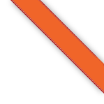

Verify This!
<!-- .slide: id="portada" data-machete="res/uvm_class_diagram.svg|Jerarquía de clases base de UVM" --> # Verify This! ### *Introducción a UVM* <div class="creditos"> <nav class="dias"> <a href="#/day1">Día 1</a> <a href="#/day2">Día 2</a> <a href="#/day3">Día 3</a> <a href="#/day4">Día 4</a> <a href="#/day5">Día 5</a> <a href="#/day6">Día 6</a> <a href="#/day7">Día 7</a> <a href="#/day8" class="opcional">Día 8</a> </nav> <p class="creditos-pie"><a href="https://github.com/leandrotozzi/verifythis" target="_blank" rel="noopener">github.com/leandrotozzi/verifythis</a> · SystemVerilog · Verilator · UVM 2020.3.1</p> </div>
<!-- .slide: id="como-usar" --> ## Cómo usar este curso #### *Sobre todo si lo estás haciendo solo* - **Qué hay que saber antes:** Verilog o VHDL, y haber simulado algo. Programar orientado a objetos **no** hace falta — el día 2 es exactamente eso. Lo único que el curso da por sabido es **SystemVerilog**: si venís de VHDL o de Verilog-2001, media hora con **`docs/systemverilog-para-el-que-viene-de-vhdl.md`** antes de empezar - Son **siete días de clase**, de 4 a 5 horas y cuarto — **≈ 31 h**, y cada agenda trae el suyo. Y un **día 8 opcional**, después del cierre. Solo, calculá el doble: la mitad se va en correr los ejemplos, y ésa es la que enseña - <kbd>s</kbd> abre las **notas del presentador** en otra ventana · <kbd>n</kbd> las muestra acá abajo, sin salir de la página. Ahí está lo que el instructor diría en voz alta: la trampa clásica, el porqué del número, el error que comete todo el mundo la primera vez. **No las saltees** - Cada día cierra con un **repaso** de opciones clickeables y con un **ejercicio que se corrige solo**: `cd code/ejercicios/d1 && bash run.sh`. Los nombres de los otros dieciocho están en `code/ejercicios/README.es.md` Note: Si estás dictando el curso, estas dos slides se saltean con la tecla 1. Están acá porque la mayoría de la gente que abra esto no va a tener un instructor al lado, y sin las notas del presentador se pierde la mitad del material — que además es la mitad más difícil de reconstruir leyendo el código. --- <!-- .slide: id="como-usar-correrlo" --> ## Cómo usar este curso #### *Correrlo, navegarlo, y dónde buscar cuando algo no anda* - **Corré los ejemplos**: `make u4/tests` corre uno, `make u4` la unidad entera. Un curso de verificación que sólo se lee no sirve para nada. Un ejemplo con UVM tarda **un minuto y medio la primera vez y quince segundos la segunda**, si tenés `ccache` instalado — y si no tenés Linux, el camino corto es GitHub Codespaces, que ya lo trae - <kbd>0</kbd>–<kbd>8</kbd> saltan a la portada y a cada día · <kbd>i</kbd> abre el índice · <kbd>Esc</kbd> muestra el deck entero · y el ribbon de la esquina despliega el machete del día - **Si estás solo, leé el libro:** `libro/dia1.html` es este mismo curso de corrido, con las notas ya adentro del texto. Tené el deck al lado para los repasos - **Cuando algo no ande, andá al final:** los apéndices *La caja de herramientas de debug* —qué mirar según el síntoma— y *Las 21 trampas mudas* —todo lo que compila, corre y miente—. Son las dos slides para imprimir Note: Las dos últimas son las que más rinden para el que estudia solo, y son las que nadie lee hasta que ya se trabó: el libro trae estas mismas notas adentro del texto, y los apéndices están escritos como tabla de síntomas, para buscar y no para leer de corrido.
<!-- .slide: id="day1" data-machete="res/diagrams/wave-dut.svg|Protocolo del VTALU: start y operandos estables hasta done,res/TB.svg|Anatomía de un testbench SystemVerilog: el DUT, el tester, el scoreboard y la interface" --> <!-- .slide: data-transition="concave" --> ## Agenda #### *Día 1 · ≈ 4 h · unidades 1 y 2* **Unidad 1 · Por qué se verifica** - Tendencias - Qué es UVM - La spec del VTALU - El plan de verificación **Unidad 2 · El testbench sin UVM** - El testbench convencional - Cobertura funcional - Interfaces y BFM · el `clocking block` **Dos ejercicios**, y el segundo se resuelve con el visor de ondas - **Y el cierre del día**, que vuelve a la primera slide **Al final del día podés:** - **Escribir** un plan de verificación de cinco columnas para un DUT que no viste antes - **Probar** que tu scoreboard chequea algo: meterle un bug al DUT a propósito y verlo fallar - **Leer** el número que sale de un `covergroup`, decir qué fila del plan falta, y qué mirar primero cuando da 0 % - **Explicar** qué race evita un `clocking block` — y por qué igual son opcionales Note: Los cuatro verbos de abajo son el contrato del día, y conviene leerlos en voz alta antes de empezar: en video son los diez segundos en los que alguien decide si éste es el que buscaba. Tres son las filas 2, 4 y 5 de la autoevaluación del cierre, traídas al principio; el del bug a propósito es la práctica que atraviesa el curso entero, de `make mutante` hoy a `+BUG=1` en el capstone. El que los pueda contestar al terminar el día no necesita mirar nada más. Y una advertencia honesta para el que viene de VHDL o de Verilog-2001, que es la audiencia declarada: el día 2 nivela la OOP, pero **nadie nivela SystemVerilog**, y hoy aparecen `interface`, `logic`, `enum`, `package`, `covergroup`, `clocking` y una `assert property`. Está todo en una carilla en **`docs/systemverilog-para-el-que-viene-de-vhdl.md`**: media hora antes de arrancar, y el día 1 deja de tener dos escalones a la vez.
## Seis de cada siete #### *Y el bug que llegó al silicio pasó una regresión en verde*  <!-- .element: class="grande" --> - El **14 %** de los proyectos acierta el primer silicio. Seis de cada siete vuelven a la fábrica, y es el peor valor en veinte años de encuesta - Cada bug funcional que llegó al silicio pasó antes por un testbench. Ese testbench corrió, terminó, y **dijo que estaba bien** - Nadie manda a fabricar con un `FAILED` en el log. Se manda con un `PASS` - La pregunta de hoy es una sola: **¿cómo sabés que verificaste?** Y *"corrí muchos tests"* no es una respuesta Note: Es la primera slide con contenido del curso a propósito: antes de explicar qué es UVM y antes de cualquier otro gráfico, una pregunta que el alumno no puede contestar todavía. El número es del Wilson Research Group 2024 y no es una impresión: sólo el 14 % sale bien en el primer silicio, o sea que seis de cada siete necesitan al menos un respin, y es el peor valor en veinte años de encuesta. Preguntar quién hizo un tape-out y cómo salió engancha más que el gráfico. Si preguntan de dónde salen los datos: `res/trends/data.json`, y las figuras se regeneran con `make figs`. La honestidad que hay que decir en voz alta: no todos los respins son funcionales —hay de timing, de analógica, de una spec que cambió tarde—. Pero el que lo es pasó por una regresión que dijo `PASS`, porque si hubiera dicho `FAILED` no se fabricaba. Ése es el enemigo del día, y no es el verificador ni su testbench: es un `PASS` que nadie sabía qué significaba. La pregunta del último bullet se tira al grupo y **no** se contesta. Las respuestas que van a salir son *"cobertura al 100 %"*, *"corrí mil operaciones"* y *"no falló nada"*, y las tres vuelven hoy mismo: la primera es la sección de cobertura, la segunda es el plan, y la tercera es la que más duele, porque *no falló nada* es exactamente lo que dijo la regresión del respin. La respuesta corta llega en el testbench convencional, cuando le metamos un bug al DUT a propósito; la larga es el día entero, y la última slide del día vuelve a esta pregunta con lo que el alumno escribió.
## Tendencias #### *Por qué vuelven: lo que hay adentro de un chip hoy*  <!-- .element: class="grande" --> Note: Es la primera mitad de la respuesta a *por qué vuelven*: adentro hay dos relojes asincrónicos en casi todos, un procesador en cinco de cada seis y un acelerador de IA en más de la mitad. No es que se verifique peor que hace veinte años; es que hay mucho más para verificar, y la pregunta de la primera slide es más difícil de contestar que nunca. --- ## Tendencias #### *Verificar no es una etapa, es la mitad del trabajo*  <!-- .element: class="grande" --> Note: Acá está el argumento de por qué existe este curso: el esfuerzo de verificación ya empató al de diseño. Verificar no es el paso final antes del tape-out: es la mitad del proyecto, con su propio equipo y su propio lenguaje. El 47 % de abajo se siembra hoy y se cobra dos veces: en el segundo ejercicio de esta tarde, cuando el log diga `FAILED` y nada más, y en la sección de reporting del día 3, que es donde el log aprende a decir por qué. --- ## Tendencias #### *Y se verifica, sobre todo, con UVM*  <!-- .element: class="grande" --> Note: Ésta contesta *con qué*: ocho de cada diez proyectos de ASIC verifican con UVM, y la mitad de los de FPGA. Lo que sigue —el chiste del COBOL y la introducción— es qué es ese UVM y por qué no asusta. Y una cosa que conviene dejar dicha ahora: UVM no contesta la pregunta de la primera slide. La contesta el testbench; UVM es la forma de escribirlo para que el de al lado lo reconozca. --- ## ¿SystemVerilog es el *COBOL* de la electrónica? | Lenguaje | Reserved Keywords | | --- | --- | | ANSI COBOL 85 | 357 | | SystemVerilog | 248 | | VHDL 2008 | 115 | | Verilog 95 | 102 | | C# | 102 | | C++ 20 | 92 | | Python 3 | 35 | > *"* No academic computer scientists participated in the design of COBOL; > all of those on the committee came from commerce or government"* ¿Parecido no? Note: Es un chiste con moraleja: SystemVerilog tiene 248 keywords —las del Annex B del IEEE 1800-2017— y nadie las usa todas. En el curso vamos a usar unas treinta. Con UVM pasa lo mismo: la librería es enorme y con seis o siete clases se arma un testbench completo. Sirve para bajarle la ansiedad al que llega asustado por el tamaño de UVM. Y es el puente a la sección que sigue: ocho de cada diez verifican con UVM, UVM está escrito en este lenguaje, y en los días 1 y 2 se escribe a mano todo lo que UVM después va a dar hecho. Con treinta keywords alcanza.
## Introducción #### *¿Qué es UVM?* - **U**niversal **V**erification **M**ethodology: una **librería de clases** escrita en SystemVerilog, más un montón de **convenciones** sobre cómo usarla - No es un lenguaje y no es un simulador. Todo lo que vamos a ver en el curso se puede escribir a mano — y en los días 1 y 2 lo vamos a escribir a mano - La hace **Accellera**, el mismo consorcio que estandarizó SystemVerilog, y es **IEEE 1800.2**. El curso usa la implementación de referencia, `uvm-core 2020.3.1` - Viene de OVM (Cadence + Mentor), con ideas de VMM (Synopsys) y de eRM (Verisity): las metodologías de cuatro vendors que competían, hasta que la industria se cansó de traducir testbenches entre herramientas - Y ahí está el objetivo, que es uno solo: **que el testbench del de al lado se parezca al tuyo** Note: El enganche con lo anterior es de una línea: ocho de cada diez proyectos verifican con esto. Y la aclaración que evita que UVM parezca la respuesta a la pregunta del día: no lo es. La respuesta es un testbench con plan, chequeo y medida; UVM es la forma de escribirlo para que escale y para que otro lo reconozca. La frase que ordena la sección es la del segundo bullet, y conviene decirla fuerte porque baja la ansiedad del que llega asustado: **UVM no hace nada que no puedas hacer vos**. No hay magia adentro. Hay una fábrica, unos puertos, unas fases y mucho acuerdo sobre nombres. Si alguien pregunta por qué entonces molestarse: por el último bullet. Un verificador que cambia de proyecto —o de empresa— abre el testbench y reconoce la estructura el primer día. Eso es lo que se compra. No es velocidad de simulación ni menos líneas: es que la estructura sea la misma en todos lados. El dato histórico sirve para el que viene de la industria: hasta 2011 cada vendor tenía la suya, y portar un testbench de VMM a OVM era reescribirlo. UVM existe porque eso era insostenible, no porque alguien tuviera una idea mejor. Y una aclaración que evita un malentendido clásico: *Open Source* acá significa que la **librería** es libre (Apache 2.0). El **simulador** que la corre casi siempre no lo es — salvo en este curso, que es de lo que se trata todo esto. --- ## Introducción #### *De dónde viene*  <!-- .element: class="grande" --> Note: El diagrama en una frase: seis siglas de cuatro vendors que convergen. eRM era de Verisity (lenguaje `e`), RVM y después VMM de Synopsys, AVM de Mentor y URM de Cadence; OVM fusionó AVM con URM, y es la base de la que salió UVM. Lo que hay que señalar es la fecha de abajo y el salto que significa: UVM 1.0 es de 2011, o sea que esto es **joven**. El que hoy tiene quince años de carrera empezó antes de que existiera. Y la moraleja que se usa el resto del curso: cuando encuentren código con `ovm_component` en vez de `uvm_component`, no es un error de tipeo — es un testbench anterior a 2011 que nadie migró. Pasa más de lo que parece. --- ## Introducción #### *Un testbench de SystemVerilog, por dentro*  <!-- .element: class="grande" --> Note: Éste es el testbench que vamos a escribir **nosotros**, a mano, en los días 1 y 2. Conviene decirlo así: las cajas de este diagrama no son teoría, son los archivos que van a estar abiertos entre hoy y el día 4. Señalar el tester, el driver, el monitor y el scoreboard, y hacer notar que ninguno de esos nombres es de UVM: son los nombres que cualquiera le pone a las piezas de un testbench, en cualquier lenguaje. UVM no los inventó; los estandarizó. --- ## Introducción #### *El mismo testbench, con estructura UVM*  <!-- .element: class="grande" --> Note: Vale la pena quedarse un rato acá: este diagrama es el mapa del resto del curso. Señalar driver, monitor, scoreboard y sequencer, y decir que cada uno va a ser una sección. Al final del día 5 el alumno va a tener todo menos el agent y el sequencer, que son el día 6. La comparación que conviene hacer en vivo es contra el diagrama anterior: **son las mismas cajas**. Lo que agrega UVM es el árbol que las contiene, los puertos por los que se hablan y las fases que las construyen en orden. Nada más, y no es poco. --- ## Introducción #### *El árbol de clases*  <!-- .element: class="grande" --> Note: Este diagrama asusta y por eso conviene desactivarlo de entrada: **de todo esto vamos a extender diez**: `uvm_component`, `uvm_test`, `uvm_env`, `uvm_agent`, `uvm_driver`, `uvm_monitor`, `uvm_subscriber`, `uvm_sequence_item`, `uvm_sequence` y `uvm_callback`. Son las ámbar del dibujo menos el scoreboard —que en el curso es un `uvm_subscriber`—, más la sequence y el callback. Lo que sí hay que dejar marcado es la división de más arriba, porque explica medio curso: de `uvm_object` cuelgan los **datos** —las transactions, las sequences, los configs— y de `uvm_component` cuelga la **estructura** —todo lo que vive en el árbol y tiene fases—. Un objeto se crea y se tira; un componente se construye una vez y dura toda la simulación. Los colores dicen qué hacés con cada una: las ámbar las extendés vos, las grises no se tocan nunca —están sólo para que las otras hereden— y el `uvm_sequencer` es la única verde porque es la única que se instancia sin extenderla, con un `typedef` parametrizado. Eso llega el día 6; la única vez que el curso la extiende es para el sequencer virtual del día 7. La pregunta para tirar al grupo cuando lleguemos a los agents: ¿una `uvm_sequence` es un object o un component? Object. Y por eso no aparece en `print_topology()`. Es el mismo árbol que está en el machete impreso, arriba a la izquierda, como texto, para volver a mirarlo cuando haga falta. --- ## Introducción #### *Correr más tests escribiendo menos código* - Ésa es la promesa, y tiene una condición: **el env y los componentes casi no cambian** de un test a otro. Lo que cambia es el estímulo - Para que eso funcione, el testbench tiene que dejar **ganchos**: métodos virtuales, la factory y los callbacks. Un test engancha ahí y no toca la estructura - Un test nuevo entonces es una de estas tres cosas, y ninguna toca el env: - agregar **constraints** para llegar a un caso de borde - hacer un **override** de la factory para cambiar una clase por otra - inyectar errores o delays con **callbacks** - Y arriba de todo eso, la palanca que más rinde: **el mismo test con cientos de semillas** distintas Note: Ésta es la slide que hay que poder repetir al final del curso, porque es la tesis entera. Y conviene ser honesto: *"run more tests, write less code"* es un eslogan de vendor, pero la parte verificable es cierta y se puede señalar con el dedo el día 6 — el `add_test` de las sequences es de **dos líneas**, y cambia todo el estímulo sin tocar una sola clase del env. El orden de los tres ganchos no es casual, es de menor a mayor: una constraint cambia valores, un override cambia una clase, un callback cambia comportamiento en un punto de la que ya existe. Los tres son una sección del curso —*Constrained random* el día 5, *El patrón factory* el día 2 y *Callbacks* el día 6—, así que esta slide se puede volver a poner tres veces. Y la última línea es la que más se subestima. Un test con mil semillas no es "el mismo test mil veces": es mil escenarios distintos por el precio de escribir uno. Es literalmente el ejercicio `d7-semillas`, con el que arranca el día 7. Y el cierre que lleva al DUT: nada de esta slide contesta todavía *¿cómo sabés que verificaste?*. Contestarla es lo que sigue —la spec, el plan y un testbench que se pueda probar—, y recién con eso escrito a mano se ve qué le agrega UVM.
## La spec del VTALU  <!-- .element: class="grande" --> - *start* debe permanecer en 1 y los operandos estables hasta que termina la operación - *done* se levanta cuando termina la operación: en la multiplicación es un pulso de un ciclo; en add/sub/and/xor es un **nivel**, y se queda arriba mientras *start* siga arriba - *reset_n* es asíncrono y activo bajo; el diagrama arranca con el DUT ya fuera de reset - *ovf* sale junto con *done*, y es el **borrow de la resta**: vale 1 cuando `A < B`. Para las otras operaciones vale siempre 0 Note: El protocolo es todo lo que hay que respetar: start arriba y operandos estables hasta done. Ojo con la letra chica: done es un pulso en la multiplicación (se apaga solo) y un nivel en add/sub/and/xor, donde vale `start && (op != no_op)`. Es la clase de detalle que aparece recién cuando el testbench se cuelga y nadie sabe por qué. --- ## La spec del VTALU | Operation | Opcode | Ciclos | `ovf` | | --- | --- | :--: | --- | | no_op | 3'b000 | — | 0 | | add_op | 3'b001 | 1 | 0 | | sub_op | 3'b010 | 1 | **`A < B`** | | and_op | 3'b011 | 1 | 0 | | xor_op | 3'b100 | 1 | 0 | | mul_op | 3'b101 | 4 | 0 | | *libre* | 3'b110 | 1 | 0 | | rst_op | 3'b111 | — | — | - **Ciclos** cuenta flancos de `clk` con `start` arriba, hasta el que levanta `done` inclusive: uno en las de un ciclo, cuatro en la multiplicación. El plan y las assertions del día 7 cuentan igual - `rst_op` no lo decodifica el RTL — el DUT lo ve como *unused*. Es la convención del testbench para pulsar `reset_n`, y por eso está en el `operation_t` del testbench - **`3'b110` está libre a propósito**: es el ejercicio de hoy Note: rst_op es del testbench, no del RTL: el DUT ve 3'b111 como unused. Está en el enum porque el tester pide el reset como si fuera una operación más, y así el reset entra en la cobertura funcional. Buen momento para adelantar que el plan de cobertura incluye "cualquier operación después de un reset". La columna del ovf es la que más discusión da, y está buena: con operandos de 8 bits y resultado de 16, ni la suma ni la multiplicación pueden desbordar — la resta sí, y sólo cuando A < B. O sea que hay una salida del DUT que para cinco de las seis operaciones vale siempre 0. Preguntar en voz alta: ¿cómo se verifica una señal que casi nunca se mueve? La respuesta es la de hoy, en cobertura funcional, y es un bin. Y el opcode libre: 3'b110 no está ahí por casualidad ni por olvido. Es el ejercicio de esta tarde, y conviene decirlo ahora para que nadie lo lea como un descuido del diseño. --- ## La spec del VTALU #### *Single Cycle: Add - Sub - AND - XOR* ```sv // The two resets are deliberately different: the one on the result is // SYNCHRONOUS and the one on done is ASYNCHRONOUS. Not an oversight: the spec. always_ff @(posedge clk) begin if (!reset_n) begin result_1c <= 16'h0000; ovf_1c <= 1'b0; end else if (start) begin ovf_1c <= (op == 3'b010) && (A < B); case (op) 3'b001: result_1c <= {8'h00, A} + {8'h00, B}; 3'b010: result_1c <= {8'h00, A} - {8'h00, B}; 3'b011: result_1c <= {8'h00, A} & {8'h00, B}; 3'b100: result_1c <= {8'h00, A} ^ {8'h00, B}; default: ; // 3'b110 is free: it is the day 1 exercise endcase end end // done goes high on the edge if start is high and the op is not no_op always_ff @(posedge clk or negedge reset_n) begin if (!reset_n) done_1c <= 1'b0; else done_1c <= start && (op != 3'b000); end ``` - Dos `always_ff` y nada más: uno registra `A op B`, el otro levanta `done` - Los resets **no son iguales**: el del resultado es **síncrono** —sólo `clk` en la lista de sensibilidad—, el del `done` es **asíncrono** - `done <= start && (op != no_op)`: por eso en estas cuatro operaciones `done` es un **nivel** y se queda arriba mientras `start` lo esté Note: La asimetría de los dos resets no es un descuido: viene del VHDL original y está copiada tal cual a propósito. Es exactamente el tipo de detalle que un testbench tiene que exponer, y por eso el DUT no se "limpió" al traducirlo. Decirlo en voz alta: esto contradice el *asíncrono* a secas del bullet de la spec, y ninguna fila del plan mira qué deja el reset en las salidas: la fila del reset mira la operación que viene después. Es un hueco del plan, y por ahora se queda así. Que `done` sea un nivel acá y un pulso en la multiplicación es la letra chica que va a colgar al primer testbench del curso. Conviene volver al diagrama de ondas de la primera slide y señalarlo de nuevo. El `default: ;` del case es lo que hace que `no_op` y los opcodes sin usar no cambien el resultado: la ALU se queda con lo último que calculó. --- ## La spec del VTALU #### *Multi Cycle: Multiplicación* ```sv // Four register stages. done is pipelined alongside the data, and each // stage clears itself with (& ~done_mult): that is what makes done a // one-cycle pulse instead of staying high for as long as start does. It is // subtle -- it is copied straight from the VHDL. always_ff @(posedge clk or negedge reset_n) begin if (!reset_n) begin done_mult <= 1'b0; done3 <= 1'b0; done2 <= 1'b0; done1 <= 1'b0; a_int <= 8'h00; b_int <= 8'h00; mult1 <= 16'h0000; mult2 <= 16'h0000; result_mult <= 16'h0000; end else begin a_int <= A; b_int <= B; mult1 <= a_int * b_int; mult2 <= mult1; result_mult <= mult2; done3 <= start & ~done_mult; done2 <= done3 & ~done_mult; done1 <= done2 & ~done_mult; done_mult <= done1 & ~done_mult; end end ``` - Es un pipeline: los operandos se registran, se multiplican, y el producto atraviesa dos registros más antes de salir por `result_mult`: cuatro flancos - El `done` viaja por **la misma cadena** —`done3`, `done2`, `done1`— así que llega exactamente con el dato y no antes - El `& ~done_mult` de cada etapa es lo que apaga la cadena sola: por eso acá `done` es un **pulso de un ciclo**, aunque `start` siga arriba Note: La latencia de cuatro flancos es a propósito, y es la razón de ser del testbench convencional: obliga al testbench a **esperar `done`** en vez de leer el resultado al ciclo siguiente. Un DUT combinacional no enseñaría nada. El `& ~done_mult` es sutil y conviene leerlo despacio: sin eso, mientras `start` estuviera arriba la cadena se recargaría sola y `done` quedaría en 1. Está copiado del VHDL original tal cual. La pregunta que ordena la slide: ¿qué pasa si el testbench manda una multiplicación y lee el resultado al ciclo siguiente? Lee el resultado anterior, y el scoreboard reporta un error que no está en el DUT. --- ## La spec del VTALU #### *Top Level* ```sv assign es_mult = (op == 3'b101); assign start_1c = es_mult ? 1'b0 : start; assign start_mult = es_mult ? start : 1'b0; assign result_mux = es_mult ? result_mult : result_1c; assign done = es_mult ? done_mult : done_1c; ``` - El top no calcula nada: instancia los dos bloques y **decodifica** el opcode - `es_mult = (op == mul_op)`. El `start` se rutea a uno solo, y `result_mux` y `done` salen del mismo lado. El `ovf` sigue el mismo patrón justo abajo del recorte —`assign ovf = es_mult ? 1'b0 : ovf_1c;`— y `result_mux` sale por `result` recién después del XOR de `+VTALU_BUG` - Por eso el protocolo del bus es uno solo aunque adentro haya dos latencias distintas: lo que el testbench ve es `start` → `done` Note: Que los dos bloques compartan `A`, `B` y `clk` y sólo se separen por el `start` es lo que hace que el DUT tenga una sola interface. Vale señalarlo porque es la forma que va a tener la `vtalu_bfm` de interfaces y BFM. El archivo completo, con las dos instancias y sus conexiones, está en `code/vtalu_dut/vtalu.sv`. Acá sólo están el decode y las cuatro líneas que deciden. Vale señalar por qué es un decode y no un bit suelto: con un `op[2]` los opcodes tendrían que quedar en mitades prolijas del espacio, y el diseño perdería la libertad de asignarlos como convenga. Un decode cuesta una compuerta y no ata la spec. Y de paso, el opcode libre 3'b110 cae del lado de un ciclo sin que nadie tenga que hacer nada. El DUT no valida el opcode; el que lo tiene que atajar es el plan de verificación. --- ## La spec del VTALU #### *Cómo se corre* - El DUT vive en `code/vtalu_dut/`, en **SystemVerilog** - El simulador del curso es **Verilator** (libre, sin licencia): ```sh make u4/tests # un ejemplo con UVM: ~1 min 30 la primera vez make u4/tests # la segunda, con ccache: ~15 segundos make # los 38 ejemplos ``` - Los que usan UVM compilan **la librería entera** la primera vez. Instalá `ccache` antes de empezar: el curso lo detecta solo y no se recompila dos veces - Cada ejemplo tiene su `run.sh`; los flags comunes están en `code/verilator/common.sh` Note: Acá conviene salir del deck y correrlo en vivo. Los números de la slide son medidos en una laptop de 12 cores. En una máquina de 2 —un Codespaces gratis— la primera son 4 minutos; la segunda sigue siendo 15 segundos, porque un hit de ccache es copiar un archivo y eso no depende de cuántos cores tengas. O sea que lo caro se paga **una vez**. Lo que hay que explicar es de dónde sale la diferencia entre 1 min 30 y 15 segundos, porque no es magia: Verilator compila cada simulación a un binario nativo, y para eso genera unos 2300 archivos C++ —casi todos de la librería UVM—. `ccache` guarda el resultado de cada uno; la segunda vez no vuelve a compilar, copia. Está en el Dockerfile y en el devcontainer, y afuera alcanza con tenerlo instalado. Y el que hay que remarcar igual: Verilator es libre — el alumno se lo lleva a casa y sigue practicando sin pedirle licencia a nadie. --- ## La spec del VTALU #### *Ver las ondas de verdad* - El diagrama de la primera slide está **dibujado**. El de verdad lo generás vos, y es la herramienta con la que se hace el 47 % del trabajo: debuggear ```sh cd code/u2/convencional VLT_TRACE=1 bash run.sh # compila con --trace y vuelca vtalu.vcd gtkwave vtalu.vcd # o surfer, o el visor que uses ``` - `VLT_TRACE=1` prende dos cosas a la vez: el `--trace` de Verilator y el `$dumpfile`/`$dumpvars` del top, que sin el flag no compilaría - Sale gratis y es libre, igual que el simulador. Cuando el testbench se cuelgue en `while (done == 0)`, esto es lo que te va a decir por qué Note: Vale la pena abrirlo en vivo una vez, aunque sea treinta segundos: cargar `op_set`, `start` y `done`, y mostrar el pulso de un ciclo de la multiplicación al lado del nivel de las de un ciclo. Es la letra chica del protocolo de la slide 1, pero vista. Y decirlo explícito: el que hace el curso solo tiene acá su red de seguridad. Cuando un ejercicio no da, la respuesta casi siempre está en las ondas antes que en el código. --- ## La spec del VTALU #### *Resumen de la unidad* - El **protocolo** es una sola frase, y hay que respetarla: `start` en 1 y los operandos estables **hasta que sube `done`** - La letra chica que va a colgar al primer testbench: `done` es un **pulso** de un ciclo en la multiplicación y un **nivel** en las de un ciclo - Adentro hay **dos bloques** con latencias distintas —uno y cuatro ciclos— y el top **decodifica** el opcode. Afuera, el bus es uno solo - `ovf` es una salida más, y es del `sub_op` y de nadie más - `rst_op` **no existe para el RTL**: es una convención del testbench para pulsar `reset_n`, y por eso entra en la cobertura - El DUT no valida el opcode: el que está libre **levanta `done` igual**, con el `result` de la operación anterior. Atajarlo es trabajo del **plan de verificación**, no del diseño - Y la herramienta que se usa el 47 % del tiempo ya está instalada: `VLT_TRACE=1` y GTKWave Note: Cierre de la sección que parece de RTL y en realidad es de verificación. La pregunta con la que conviene cerrar: ¿cuál de estos siete datos es el que más caro sale olvidarse? El del `done`, y se va a ver hoy mismo, en el ejercicio de las ondas. Vale dejar dicho por qué el DUT no se "limpió" al traducirlo del VHDL: la asimetría de los resets y el opcode sin validar son **exactamente** el tipo de cosa que un testbench tiene que exponer. Un DUT prolijo no enseña nada.
## El plan de verificación #### *El entregable más profesional de la disciplina, y el más barato* - Es una **tabla**. Se escribe **antes** que el testbench — si se escribe después, describe lo que el testbench ya hace en vez de lo que la spec pide - Sale de la spec que acabás de leer, no del testbench que todavía no existe - Y es lo que se entrega: el capstone del día 7 se entrega con el plan lleno, que es exactamente lo que se entrega en un proyecto Note: Ésta es la slide que ordena el curso entero, y por eso llega antes que la primera línea de testbench. Todo lo que viene después —el estímulo, el scoreboard, los covergroups, las assertions— son columnas de esta tabla. Conviene decirlo de frente: el plan no es burocracia. Es la única respuesta seria a *"¿ya terminaste de verificar?"*, y es lo primero que pide un líder técnico cuando pregunta cómo va el bloque. La plantilla vacía está en `docs/plan-de-verificacion.md`, y se usa dos veces en el curso: acá para leerla, y el día 7 para llenarla de cero. --- ## El plan de verificación #### *Las cinco columnas* | Columna | La pregunta que contesta | Qué **no** va | |---|---|---| | **Feature** | ¿de qué parte de la spec sale esta fila? | el nombre de un archivo del testbench | | **Escenario** | ¿qué situación concreta hay que provocar? | *"probar la ALU"* | | **Estímulo** | ¿quién la provoca: el random o un caso dirigido? | *"a mano"* | | **Chequeo** | ¿quién dice que estuvo bien? | *"se mira la onda"* | | **Medida** | ¿qué bin se llena cuando pasa? | *"se ve en el log"* | - Una fila por **escenario**, no por feature: una feature con tres casos borde son tres filas, y se cierran de a una Note: Vale leer la columna de la derecha en voz alta: son los cinco errores que se cometen la primera vez, y los cinco suenan razonables cuando uno los escribe. La columna que más cuesta es la de medida, porque obliga a decidir *antes* qué se va a contar. Es la que el día 1 todavía no se puede llenar —los bins no existen hasta la unidad que viene— y por eso el plan se llena a medida que el testbench crece. --- ## El plan de verificación #### *Dos reglas que salen de las columnas* - **Si la columna de chequeo dice *"a ojo"*, el escenario no está verificado.** Está *simulado*, que es otra cosa - **Si la columna de medida está vacía, nadie se va a enterar de que el escenario nunca pasó.** Un caso que el random no tocó y que no tiene bin es indistinguible de uno que pasó mil veces - Y una distinción que ordena la columna de chequeo: **el scoreboard chequea *qué* calcula el DUT; las assertions chequean *cómo* se habla con él** Note: La diferencia entre verificado y simulado es quién se entera cuando falla a las tres de la mañana en la regresión. Si el chequeo es un par de ojos, no se entera nadie: la regresión pasa en verde con el bug adentro. El tercer bullet es una promesa que el curso cumple el día 7: hasta entonces todos los chequeos son de scoreboard, y la mitad del protocolo queda sin chequear. Vale dejarlo dicho ahora para que el día 7 no parezca un agregado. Un plan serio tiene las dos columnas, y la tabla del VTALU —que se ve entera en la unidad que viene, ya con los bins— tiene ocho filas de scoreboard y cuatro de assertion.
## El testbench convencional #### *El plan del VTALU, con tres columnas por llenar* | Feature | Escenario | Estímulo | Chequeo | Medida | | --- | --- | --- | --- | --- | | ALU | las seis operaciones | | | | | ALU | operandos en `00` y en `FF` | | | | | reset | operar después de un reset | | | | | mult | una mult después de una de un ciclo | | | | | ALU | la misma operación dos veces seguidas | | | | | sub | restar de menos: `A < B`, y el `ovf` sube | | | | - Seis filas que salen de la spec, y todavía ninguna columna de la derecha. Esta sección llena **dos**: el estímulo las provoca y el scoreboard dice si el resultado estuvo bien - La tercera —**qué bin se llena cuando pasa**— es la sección que sigue - El testbench tiene tres partes porque el plan tiene tres columnas por llenar Note: El orden importa y es el de la unidad anterior: primero el plan, después el testbench. Si escribís el testbench primero, terminás midiendo lo que el testbench hace en vez de lo que la spec pide. Vale leer las seis filas de a una y preguntar cuál falta. La respuesta que suele aparecer —"probar valores intermedios"— es buena para discutir por qué no está: 256 × 256 × 5 combinaciones no se simulan, y ahí es donde entra el random. La última es la que trae el tema del día: el DUT tiene DOS salidas, y una fila del plan que sólo se cierra mirando las dos. Un scoreboard que compara `result` y nada más pasa en verde con el `ovf` clavado en cero. La tabla vuelve dos veces: en cobertura funcional con la columna de medida llena, fila por fila, y al final de esa sección entera, con las doce filas y las tres columnas. Conviene avisarlo ahora para que nadie la lea como decoración: es la misma tabla, llenándose. --- ## El testbench convencional #### *El estímulo: mil operaciones, y el protocolo a mano* ```sv repeat (1000) begin @(negedge clk); op_set = get_op(); A = get_data(); B = get_data(); start = 1'b1; case (op_set) // handle the start signal no_op: begin @(posedge clk); start = 1'b0; end rst_op: begin reset_n = 1'b0; start = 1'b0; @(negedge clk); reset_n = 1'b1; end default: begin // Wait for an EDGE with done up, not for done itself: on the // one-cycle ops done is a level still up from the previous op, // and a plain wait(done) drops this one without a sound. enviadas++; do @(negedge clk); while (done == 0); start = 1'b0; end endcase // case (op_set) end $finish; ``` - Mil vueltas: elegir operación, elegir operandos, levantar `start`, esperar **un flanco con `done` arriba**, bajar `start` - El `case` está ahí por la letra chica de la spec: `no_op` no levanta `done`, `rst_op` pulsa `reset_n`, y las demás esperan - `get_op()` y `get_data()` sesgan el random hacia los bordes —00 y FF— para llegar a los casos que el plan pide. Es *constrained random* escrito a mano - `enviadas` se cuenta acá y `chequeadas` en el scoreboard, y un `final` exige que sean iguales: es el testbench chequeándose a sí mismo - Fijate quién sabe del protocolo acá: **el tester**. En interfaces y BFM eso se muda a la BFM y en el cuerpo del `repeat` se achica a una línea Note: Ésta es la slide del "antes" de todo el curso: el estímulo y el protocolo mezclados en el mismo bucle. Vale marcarlo con el dedo, porque las próximas cinco unidades son separaciones sucesivas de estas treinta líneas. El `do … while (done == 0)` del `default` es el que se cuelga si el DUT no responde, y es el lugar donde el alumno va a terminar la primera vez que rompa algo. La red de seguridad es `VLT_TRACE=1` y las ondas. Y por qué no es un `wait(done)`, que es lo primero que uno escribe: en las operaciones de un ciclo `done` es un nivel, y en el `negedge` en que el tester carga la operación siguiente **todavía está arriba por la anterior**. El `wait(done)` no bloquea, `start` baja en el mismo instante y el DUT nunca ve esa operación. No hay error: el scoreboard no dispara, y la cobertura —que muestrea `op_set`— la cuenta igual. Este testbench la tuvo, y descartaba cuatro de cada diez operaciones de un ciclo con el reporte en verde: en `d1`, 77 shifts chequeados contra 130 con el arreglo. La atrapa el contador de enviadas contra chequeadas, y es la trampa muda más barata de poner. El sesgo de `get_data()` —un cuarto en 00, un cuarto en FF, la mitad en el medio— es exactamente lo que las transactions van a escribir en una línea con `dist` y `:/`. Conviene nombrarlo ahora para que después se vea el ahorro. --- ## El testbench convencional #### *El self-checking: predecir y comparar* ```sv // Sent by the tester, compared by the scoreboard: the final block below // demands that the two match. int enviadas, chequeadas; // Scoreboard loop: checks that everything came out right always @(posedge done) begin : scoreboard shortint predicted_result; bit predicted_ovf; #1; case (op_set) add_op: predicted_result = A + B; sub_op: predicted_result = A - B; and_op: predicted_result = A & B; xor_op: predicted_result = A ^ B; mul_op: predicted_result = A * B; endcase // case (op_set) // ovf belongs to sub and to nobody else: with 8-bit inputs and a 16-bit // output, neither the addition nor the multiplication can overflow. predicted_ovf = (op_set == sub_op) && (A < B); if ((op_set != no_op) && (op_set != rst_op)) begin chequeadas++; if (predicted_result != result || predicted_ovf != ovf) $error ("FAILED: A: %0h B: %0h op: %s result: %0h ovf: %0b", A, B, op_set.name(), result, ovf); end end : scoreboard ``` - Un `always @(posedge done)`: cada vez que el DUT dice que terminó, el scoreboard predice el resultado y lo compara - El `#1` no es un adorno: sin él se leen las señales en el mismo instante en que `done` sube y se puede comer una carrera de deltas - `no_op` y `rst_op` no levantan `done`, así que este bloque no debería correr con ellas. El `if` es defensivo —sin predicción para esas dos compararía basura— y adentro va `chequeadas++`, la otra mitad del contador - El covergroup —la tercera pata— es la sección que sigue Note: El modelo de referencia son cuatro líneas de `case` porque el DUT es una ALU. En un proyecto de verdad puede ser un modelo en C o el RTL de la generación anterior, pero la forma es siempre ésta: **predecir con algo que no sea el DUT, y comparar**. Que el scoreboard lea `A`, `B` y `op_set` del cable en el momento del resultado funciona sólo porque el protocolo obliga a mantenerlos estables. Es frágil, y en los analysis ports se va a reemplazar por una cola de comandos que manda el monitor. Y el `$error` de acá va a ser un `` `uvm_error `` desde reporting: mismo concepto, con un contador y una política de severidad detrás. --- ## El testbench convencional #### *¿Cómo sabés que el scoreboard chequea algo?* ```plaintext FAILED: A: 15 B: ce op: xor_op result: da ovf: 0 ``` - Mil operaciones y ningún error. Ahora **el mismo testbench con el DUT roto a propósito**: `VTALU_BUG=1 bash run.sh` da vuelta el bit 0 del resultado - Falla en la primera comparación. Eso —y no el `PASS` de antes— es lo que prueba que el scoreboard mira el resultado - Un scoreboard que **nunca vio un error** no está probado: pudo haber comparado contra sí mismo, o no haber comparado nada - `make mutante` hace esto con los tres testbenches de los días 1 y 2, y falla si alguno **no** falla. Es la primera respuesta a la pregunta del día Note: Correrlo en vivo, que son segundos porque no hay UVM: primero `bash run.sh` —mil operaciones, silencio, y el resumen de cobertura—, y después `VTALU_BUG=1 bash run.sh`, que termina en la línea de la slide y un `$stop`. Lo que hay que decir con todas las letras es qué prueba esa línea y qué no. Prueba que el scoreboard compara el bit que el bug tocó. No prueba que compare `ovf`: un bug que sólo tocara `ovf` es otra corrida, y por eso el plan tiene una fila para cada salida. Ésta es la respuesta corta a la primera slide del día: la regresión que dijo `PASS` y mandó el bug a fabricar nunca había visto un `FAILED`. No sabía si chequeaba. Un `PASS` no dice nada hasta que sabés qué habría dicho `FAILED`. Y no es un truco del día 1: es la práctica que atraviesa el curso. `+BUG=1` en el capstone del día 7 y `+GOLDEN_BUG` en el modelo de referencia del día 8 son esto mismo, y los correctores de los ejercicios lo exigen. --- ## El testbench convencional #### *Resumen de la unidad* - El testbench tiene **tres partes** porque el plan tiene tres columnas por llenar: estímulo, self-checking y medida. Hoy están sueltas en un archivo - El estímulo **sesga el random hacia los bordes** —`00` y `FF`— porque el azar uniforme casi nunca los visita - El `#1` antes de leer las señales no es adorno: sin él se lee en el mismo instante en que el DUT escribe, y el resultado es indefinido - Un `PASS` no prueba nada hasta que viste el `FAILED`: **`VTALU_BUG=1`** es la forma de verlo, y `make mutante` la de no olvidarse - Y lo que hay que mirar para interfaces y BFM: **el tester sabe del protocolo**. Mueve `start` y espera `done` con la mano Note: El último bullet es el que ordena el resto del día: este testbench funciona, está probado, y está mal repartido. El tester sabe cómo se menea `start` y el scoreboard sabe cuándo leer `done`: el protocolo vive en dos lugares del mismo archivo, y el día que cambie hay que tocar los dos. Ésa es toda la motivación de interfaces y BFM, y conviene dejarla como pregunta abierta en vez de contestarla acá. Antes, la sección que sigue llena la tercera columna.
## Cobertura funcional #### *¿Cuándo terminás de verificar?* - *Cobertura de código* —líneas, ramas, toggle— la da el simulador gratis. Dice qué RTL se **ejecutó** - *Cobertura funcional* la escribís vos. Dice qué **escenarios de la spec** pasaron por el DUT - No son lo mismo, y la primera engaña: un test que manda siempre `add_op` con `A=B=8'h01` ejecuta casi todas las líneas del sumador y no verificó nada - La cobertura funcional es el *contrato* entre la spec y el testbench: si un caso de la spec no tiene un bin, nadie se va a enterar de que falta Note: La pregunta de la slide es la que le hacen a un verificador en la reunión de tape-out, y no se contesta con "corrí muchos tests". Si alguien pregunta por qué no alcanza la cobertura de código: porque mide el DUT, no la spec. Un DUT al que le falta una feature entera puede dar 100 % de líneas — las líneas que no escribió nadie no aparecen en el reporte. --- ## Cobertura funcional #### *Del plan de verificación al covergroup* Las seis filas del plan de la sección anterior, traducidas: | Del plan | Cómo se mide | | --- | --- | | las seis operaciones | `coverpoint op_set` con un bin por operación | | operandos en `00` y en `FF` | `cross` de A, B y la operación | | operar después de un reset | bin de transición `rst_op => op` | | una mult después de una de un ciclo | bin de transición | | la misma operación dos veces seguidas | bin de repetición `[* 2]` | | restar de menos: `A < B`, y el `ovf` sube | `coverpoint borrow` con el bin `hubo_borrow` | - Las seis filas dejan de ser buenas intenciones: cada una es una línea de código, y el simulador te dice cuáles todavía no pasaron Note: Vale la pena volver al plan de la sección anterior y leerlo en voz alta antes de mostrar esta tabla: la gracia es que no hay ni un punto del plan que se quede sin traducir. El orden importa — el plan primero, el covergroup después. Al revés terminás midiendo lo que el testbench hace, no lo que la spec pide. --- ## Cobertura funcional #### *Anatomía: son tres pasos, no uno* ```systemverilog covergroup op_cov; // 1. QUE se mide coverpoint op_set; endgroup op_cov oc; // 2. se INSTANCIA: es un tipo, como una clase initial oc = new(); always @(posedge clk) oc.sample(); // 3. CUANDO se cuenta ``` - Un `covergroup` es un **tipo**: declararlo no mide nada, hay que hacerle `new()` - `sample()` es el que cuenta. Sin `sample()` el reporte da **0 %** y el código compila igual - *Dónde* muestrear es una decisión de diseño. Acá, el flanco en el que **lee el DUT**, nunca el mismo en el que escribe el tester; cuando el TB tenga monitores va a ser *"cada vez que el monitor ve un comando"* Note: El error de todos la primera vez es declarar el covergroup y olvidarse del `new()` o del `sample()`. No hay warning: el reporte simplemente dice 0 % y uno se pasa media hora buscando el bug en los bins. El tercer punto es el que vale para el resto del curso: el momento del sample define qué estás midiendo. Muestrear por reloj cuenta ciclos; muestrear por transacción cuenta operaciones. En los analysis ports el `coverage` pasa a ser un subscriber y muestrea cuando llega un comando — que es lo correcto. Y el flanco no es capricho: muestrear en el mismo `negedge` en el que el tester escribe `op_set` es una carrera que el LRM no define —Verilator la resuelve siempre igual; otro simulador puede no—. Es la misma regla de las assertions del día 7: se lee en el flanco opuesto al que escribe. --- ## Cobertura funcional #### *bins: los casilleros que hay que llenar* ```systemverilog coverpoint op_set; // bins automaticos: uno por valor del enum coverpoint op_set { bins single_cycle[] = {[add_op : xor_op], rst_op, no_op}; // [] -> uno por valor bins multi_cycle = {mul_op}; // sin [] -> uno solo } ``` - Sin `{ }`, SystemVerilog crea un bin por valor. Anda para un `enum`; para un `int` la herramienta corta el rango en **64** casilleros —`auto_bin_max`— que no corresponden a ninguna fila del plan - Los corchetes `[]` **reparten**: un casillero por valor del rango. Sin ellos, todos los valores caen en el mismo casillero - Un coverpoint está cubierto cuando **todos** sus bins tienen al menos un hit. Un bin que no se puede llenar te clava el número para siempre Note: Los corchetes son el detalle que más se copia mal, y conviene mostrarlo con los dos casos al lado: `bins x[] = {[0:3]}` son **cuatro** casilleros, y `bins x = {[0:3]}` es **uno solo** que se llena con que caiga cualquiera de los cuatro valores. La sintaxis se diferencia en dos caracteres y el número que reporta la herramienta cambia por completo. La consecuencia práctica hay que decirla fuerte porque es una trampa muda: un bin sin `[]` sobre un rango grande **siempre da 100 %**. Cubriste un valor de mil y la herramienta te dice que está listo. Nadie te avisa. Y el último bullet es la advertencia que ordena lo que viene: un bin que no se puede llenar no es un problema de la herramienta, es una decisión que alguien no escribió. La forma de escribirla se llama `ignore_bins`, y tiene su propia slide en esta sección. --- ## Cobertura funcional #### *El covergroup del VTALU* ```sv //op_cov: make sure every operation, and every interaction between them, is covered covergroup op_cov; coverpoint op_set { bins single_cycle[] = {[add_op : xor_op], rst_op,no_op}; bins multi_cycle = {mul_op}; // => are transitional coverage. From => To // Transition bins. Verilator 5.052 does NOT implement them yet: any form // with "=>" or "[* n]" aborts with an Internal Error. Minimal repro in // code/verilator/repro-cg-transition.sv. They stay because they are part // of the topic; when Verilator supports them, drop the ifndef, nothing else. `ifndef VERILATOR bins opn_rst[] = ([add_op:mul_op] => rst_op); bins rst_opn[] = (rst_op => [add_op:mul_op]); bins sngl_mul[] = ([add_op:xor_op],no_op => mul_op); bins mul_sngl[] = (mul_op => [add_op:xor_op], no_op); bins twoops[] = ([add_op:mul_op] [* 2]); bins manymult = (mul_op [* 3:5]); `endif } endgroup ``` - `single_cycle[]` genera seis bins —uno por operación—, `multi_cycle` uno solo - Lo que está entre `` `ifndef VERILATOR `` son los bins de transición, que vienen más adelante en esta misma sección Note: Éste es el primer covergroup real del curso, y conviene leerlo de arriba hacia abajo contestando las tres preguntas de la slide anterior: **qué** se mide (los coverpoints), **en qué casilleros** (los bins) y **cuándo** se cuenta (el `sample()`, que está más abajo en el mismo archivo). Que `multi_cycle` sea un bin solo y `single_cycle[]` sean seis no es simetría rota: es el plan de verificación. Las seis que no son la multiplicación interesan una por una; la multiplicación interesa como caso aparte porque es la única que tarda más de un ciclo. La forma del covergroup **es** la tabla del plan, y por eso el plan se escribe primero. El `` `ifndef VERILATOR `` vale nombrarlo ahora y no esconderlo: esos bins son tema del curso, están escritos, y hoy Verilator no los compila. Está en `docs/verilator.md` con la versión y la fecha. Un curso que tapa lo que su herramienta no hace es un curso que miente. --- ## Cobertura funcional #### *ignore_bins: decir en voz alta lo que no se cubre* ```sv // Check the corners where the inputs are all 0s or all 1s all_ops : coverpoint op_set { ignore_bins null_ops = {rst_op, no_op};} a_leg: coverpoint A { bins zeros = {8'h00}; bins others= {[8'h01:8'hFE]}; bins ones = {8'hFF}; } b_leg: coverpoint B { bins zeros = {8'h00}; bins others= {[8'h01:8'hFE]}; bins ones = {8'hFF}; } // VTALU rev2: the borrow of the subtraction, the row of the plan that the // scoreboard can only close by looking at TWO outputs. Without this bin, a // subtraction that never went negative looks exactly like one that did. borrow: coverpoint ((op_set == sub_op) && (A < B)) { bins hubo_borrow = {1}; ignore_bins resto = {0}; } ``` - `all_ops` **ignora** `rst_op` y `no_op`: no tiene sentido pedir "una suma con los operandos en 0x00" cuando la operación es un reset - `a_leg` y `b_leg` bajan 256 valores a los tres casilleros que importan: todo ceros, el medio, todo unos - Un bin imposible que dejás puesto te deja la cobertura clavada abajo del 100 % y nadie sabe por qué. `ignore_bins` lo vuelve una decisión escrita Note: Hay un pariente que conviene nombrar: `illegal_bins`. `ignore_bins` saca el bin de la cuenta; `illegal_bins` lo saca de la cuenta *y además* reporta un error si alguna vez pasa. Sirve para los casos que la spec prohíbe — un opcode reservado, un handshake ilegal. La regla práctica: si no se puede cubrir, `ignore_bins`; si no debe pasar, `illegal_bins`; si simplemente todavía no pasó, dejalo y escribí el test. --- ## Cobertura funcional #### *cross: las combinaciones, y cómo no ahogarse* ```systemverilog op_00_FF : cross a_leg, b_leg, all_ops; // 3 x 3 x 5 = 45 bins, casi todos sin sentido ``` - Un `cross` es el **producto cartesiano** de sus coverpoints: crece rápido y la mayoría de las combinaciones no está en ninguna spec - `binsof(x) intersect {v}` se lee *"los bins de `x` que contienen `v`"* - Se combinan con `&&` y `||`, y lo que sobra se tira con `ignore_bins` - Así los 45 bins quedan en los 11 que el plan pidió de verdad Note: La cuenta del comentario es lo que hay que hacer en voz alta, porque el número asusta y tiene que asustar: tres bins de A por tres de B por cinco operaciones son **45**, y de esos 45 el plan pedía once. Los otros 34 no están mal — están de más, y un bin de más es tan caro como uno que falta: te clava la cobertura abajo del 100 % y nadie sabe si es un agujero real. `binsof(x) intersect {v}` conviene leerlo siempre en castellano antes de escribirlo, porque la sintaxis no ayuda: *"los bins de `x` que contienen `v`"*. Después se combinan con `&&` y `||` como cualquier condición. El error de escala que hay que anticipar: en un DUT real un cross de tres coverpoints con bins automáticos son miles de casilleros, y una regresión no los llena nunca. Cuando alguien dice "la cobertura no sube", en la mitad de los casos el problema es un cross sin filtrar, no un test que falta. Y el número que hay que tener a mano para la slide "Leer el número": los 45 son la cuenta del LRM, un bin por miembro del enum. **Verilator mide 54**, porque reparte los bins automáticos por el tipo base (`bit [2:0]`, 8 valores menos los 2 de `ignore_bins`, o sea 3 × 3 × 6). Los 9 de más son el `3'b110` cruzado, y son exactamente los 9 que quedan en cero. --- ## Cobertura funcional #### *El cross del VTALU* ```sv bins mul_00 = binsof (all_ops) intersect {mul_op} && (binsof (a_leg.zeros) || binsof (b_leg.zeros)); bins mul_FF = binsof (all_ops) intersect {mul_op} && (binsof (a_leg.ones) || binsof (b_leg.ones)); bins mul_max = binsof (all_ops) intersect {mul_op} && (binsof (a_leg.ones) && binsof (b_leg.ones)); ignore_bins others_only = binsof(a_leg.others) && binsof(b_leg.others); ``` - `mul_00` se lee de corrido: *una multiplicación en la que A **o** B valgan 0x00*. Los otros ocho bins del cross son estas dos líneas con otro `op` - `mul_max` es el único con `&&`: pide las **dos** patas en 0xFF: el **producto máximo**, `FF` × `FF` = `FE01`. No desborda — 8 bits por 8 entran en 16 - Verilator 5.052 **ignora** `binsof` / `intersect` (`%Warning-COVERIGN`) y mide el cross completo: por eso el número no es el de una herramienta comercial Note: Vale leer `mul_00` y `mul_max` en castellano, uno detrás del otro, porque la diferencia entre `||` y `&&` es la que se copia mal, y acá los dos bins son de la misma operación: *"una multiplicación en la que A **o** B valgan 0x00"* contra *"una multiplicación con A **y** B en 0xFF"*. El primero son dos casos, el segundo es uno solo — el **producto máximo**, la esquina de arriba del espacio de entrada. Y acá conviene matar el malentendido que viene solo, porque es caro: `FF` × `FF` **no desborda nada**. Da `FE01`, que entra exacto en los 16 bits de `result` —8 bits por 8 nunca pasan de 16— y por eso el DUT fuerza `ovf` a 0 en toda multiplicación: `assign ovf = es_mult ? 1'b0 : ovf_1c;`. El bin se llama `mul_max` y no `mul_ovf` justamente por eso: el caso vale por ser el máximo del espacio de entrada, no por desbordar. La única operación que desborda es la resta, y sólo cuando A < B. La honestidad de esta slide es parte del curso, así que conviene decirla y no pasarla rápido: el 86,8 % que reporta el ejemplo **no es** el número que daría Questa. Verilator ignora el filtro y mide el cross entero, y además le suma un valor que el enum no tiene: donde el LRM cuenta 45, Verilator cuenta **54** (los 9 de más son el `3'b110` cruzado, y son los 9 que quedan en cero). Por eso el porcentaje sale más bajo, y por un motivo que no es del testbench. Está escrito, fechado y con versión en `docs/verilator.md`. La pregunta útil para el aula: ¿eso invalida el ejercicio? No. Lo que se aprende —escribir el cross, filtrarlo, y saber qué bin corresponde a qué fila del plan— es idéntico. Lo único que no se puede hacer con esta herramienta es firmar el cierre de cobertura, y ése no es el objetivo del curso. --- ## Cobertura funcional #### *Bins de transición: cuando importa el orden* ```systemverilog bins opn_rst[] = ([add_op:mul_op] => rst_op); // A y despues B bins sngl_mul[] = ([add_op:xor_op], no_op => mul_op); bins twoops[] = ([add_op:mul_op] [* 2]); // dos veces seguidas bins manymult = (mul_op [* 3:5]); // entre 3 y 5 veces seguidas ``` - Tres filas del plan no son valores, son **secuencias**: "después de un reset", "una mult después de una de un ciclo" - Verilator 5.052 todavía **no los compila** (Internal Error). En el código están entre `` `ifndef VERILATOR ``: son parte del tema y se leen igual - Repro mínimo en `code/verilator/repro-cg-transition.sv`. El día que Verilator los soporte, se borra el `ifndef` y nada más Note: Es el único lugar del curso donde la herramienta libre no llega, y conviene decirlo de frente en vez de esconderlo: el concepto es del lenguaje, no del simulador, y en Questa o VCS estos bins corren. Hay dos primos más que vale nombrar: `[-> n]` (goto, n veces no necesariamente seguidas) y `[= n]` (non-consecutive). Están en `coverage.svh` de los analysis ports. --- ## Cobertura funcional #### *Las perillas: cuándo un bin cuenta como cubierto* ```systemverilog coverpoint op_set { option.at_least = 10; // un bin cuenta recien con 10 hits bins single[] = {[add_op:xor_op]}; } coverpoint A { option.auto_bin_max = 8; } // 8 casilleros automaticos, no 64 ``` - **`option.at_least`** es la que más importa: por defecto vale **1**, así que un bin que pasó **una sola vez** ya figura cubierto. El caso borde que salió una vez en mil corridas no está verificado, y el 100 % dice que sí - **`option.auto_bin_max`** acota los bins automáticos. Sin `{ }` y sin esta perilla, un coverpoint de 8 bits no da 256 casilleros: da **64**, repartidos por la herramienta y no por la spec - **`option.weight`** cambia cuánto pesa un coverpoint en el total, y **`type_option.merge_instances`** suma todas las instancias en un solo número en vez de reportarlas por separado - Verilator 5.052 respeta `auto_bin_max`, y `at_least` **sólo escrito en el coverpoint**: en el covergroup lo ignora sin avisar. Está en `docs/verilator.md` Note: Ésta es la slide que le pone un asterisco a todos los porcentajes de la unidad, y por eso llega recién ahora: `at_least = 1` quiere decir que la herramienta te dice **cubierto** con un solo hit. Para un bin que representa un valor de un enum está perfecto —o pasó o no pasó—. Para el bin que representa el producto máximo del multiplicador, un hit es una anécdota, no una verificación. La regla de campo, y conviene darla porque la pregunta viene sola: `at_least` alto en los bins que representan un caso raro, default en los que representan un valor. Subirlo para todo el covergroup no es rigor, es una regresión que no cierra nunca y un número que nadie mira. `auto_bin_max` es la contracara de la trampa de los corchetes, la de la slide de los bins. Ahí el problema era un bin de más; acá es al revés: si el coverpoint es un `int` y no le escribís bins, la herramienta inventa 64 rangos que no corresponden a ninguna fila del plan. El número que sale es real y no significa nada. Y la honestidad de siempre: las cuatro perillas son del LRM, no de Verilator. Lo que esta herramienta hace con cada una está medido, fechado y con repro en `code/verilator/repro-cg-options.sv`. La de `at_least` es la peor de las cuatro porque es muda: en el covergroup se escribe, compila, y no hace nada. --- ## Cobertura funcional #### *Leer el número* ```sh $ make u2/convencional Coverage Summary: covergroup : 86.8% (66/76) ``` - 66 de 76 bins llenos, con **1000 randomizaciones** y **615 operaciones al bus** —el `no_op` y el `rst_op` se sortean y no se envían, y el testbench lo imprime justo antes del reporte de Verilator—. Las otras filas salen `0/0`: `--coverage-user` deja afuera la cobertura de código - Los 10 que faltan son **un solo valor**: `all_ops.auto_5` y sus nueve cruces. Es `3'b110`, que el enum **no tiene** — Verilator reparte los bins automáticos por el tipo de base, `bit [2:0]`, y no por miembro del enum - O sea que ninguna fila del plan quedó sin cubrir, y en Questa esto da 100 %. El número no es la meta: la pregunta que sirve es **cuál** bin falta, y eso sólo lo dice el reporte por bin, `obj_dir/top/coverage.dat` - Correr → mirar qué falta → escribir el test dirigido → volver a correr. Eso se llama *coverage closure*, y es a lo que un verificador le dedica el día Note: Acá es donde conviene correrlo en vivo y abrir el `coverage.dat`: el alumno tiene que ver que los diez ceros tienen el mismo nombre, y que ese nombre no está en el `operation_t`. La lección es leer el reporte y no el número: el número dice 86,8 % y el reporte dice "no falta nada, la herramienta inventó un casillero". En una herramienta comercial el bin automático de un enum es uno por miembro (IEEE 1800, 19.5) y esto da 100 % de entrada; está anotado en `docs/verilator.md`. Y el remate: el ejercicio del día usa justamente `3'b110` para el shift, así que la operación nueva llena el casillero fantasma y la cobertura pasa de 86,8 % a 100 % — 77 de 77, con el bin propio del shift sumado. El que la sube es el mismo que escribió el test, y el corrector cuenta bins y no porcentaje, porque el porcentaje ya vimos que no sabe leer. --- ## Cobertura funcional #### *El plan de verificación, entero y en una tabla* | # | Feature | Escenario | Estímulo | Chequeo | Medida | |:--:| --- | --- | --- | --- | --- | | 1 | ALU | las seis operaciones | random | scoreboard | `coverpoint op_set` | | 2 | ALU | operandos en `00` y en `FF` | `dist` sesgado a los bordes | scoreboard | cross `op_00_FF` | | 3 | mult | producto máximo: `FF` × `FF` | caso dirigido | scoreboard, 16 bits | bin `mul_max` | | 4 | reset | operar después de un reset | `rst_op` intercalado | scoreboard | bin `rst_op => op` | | 5 | mult | una mult después de una de un ciclo | random | scoreboard | bin de transición | | 6 | ALU | la misma operación dos veces seguidas | random | scoreboard | bin `[* 2]` | | 7 | sub | restar de menos: `A < B`, y el `ovf` sube | random | scoreboard, **dos salidas** | bin `hubo_borrow` | | 8 | sub | `A == B`: el resultado es 0 y el `ovf` **no** sube | random | scoreboard, dos salidas | bin `sub_00`/`sub_FF` | | 9 | ovf | `ovf` no se levanta para ninguna otra operación | random | assertion | `c_ovf` | | 10 | protocolo | los operandos no se tocan con `start` arriba | random | assertion | `cover property` | | 11 | protocolo | `done` llega, y antes de 5 ciclos | random | assertion | `cover property` | | 12 | protocolo | `no_op` es la única que no contesta | random | assertion | `cover property` | - Las tres columnas de la derecha son **las tres partes del testbench** de esta sección. Lo que las ata es el plan, y hasta ahora no lo habías visto junto - Las dos filas de la resta son las que obligan al scoreboard a mirar **dos salidas**: si sólo compara `result`, pasa en verde con el `ovf` clavado en cero - Las **cuatro últimas** no las chequea ningún scoreboard: son reglas de `ovf` y de **protocolo**, y se chequean donde ocurren —las assertions - Las doce filas van numeradas igual que en **`docs/plan-de-verificacion.md`**, que además dice en qué archivo vive cada una y trae la plantilla del capstone Note: Ésta es la slide que contesta *"¿y esto para qué?"* del resto del día 1, y conviene decir de frente por qué llega recién ahora: las tres columnas de la derecha son estímulo, self-checking y cobertura — las tres partes que la unidad anterior mostró **sueltas**. El plan es la tabla que las hace una sola cosa. La fila que más discusión da es la del producto máximo, y está buena: `FF` × `FF` es el caso que un test **corto** no llena, y por eso su columna de estímulo dice *caso dirigido*: el plan se decide antes de saber cuánto va a correr el random. Ahí se ve que el plan no sólo mide, y también decide qué test hay que escribir. Es el ejercicio `d5c`, el último de la tarde del día 5, con esta misma fila. Las tres filas de protocolo conviene nombrarlas y seguir: son la mitad que el curso no toca hasta el día 7, y sirven para dejar sembrado que un scoreboard no chequea todo. Un plan de verificación serio tiene las dos columnas. Y el uso que se lleva el alumno: `docs/plan-de-verificacion.md` es la misma tabla como artefacto, con una plantilla vacía. El capstone del día 7 se entrega con el plan lleno — que es exactamente lo que se entrega en un proyecto. --- ## Cobertura funcional #### *Resumen de la unidad* - **Cobertura de código ≠ cobertura funcional.** La primera mide qué RTL se ejecutó; la segunda, qué escenarios de la spec pasaron - Un `covergroup` es un **tipo**: hay que instanciarlo con `new()` y **alguien tiene que llamar a `sample()`**. Sin eso el reporte da 0 % sin una advertencia - Los **bins** son los casilleros. `[]` reparte uno por valor; sin corchetes, todo el rango entra en uno solo - **`ignore_bins` es documentación ejecutable**: dice en voz alta qué no se cubre y por qué. Un bin imposible que dejás puesto te clava el número abajo - Un **`cross`** es el producto cartesiano y crece rapidísimo: sin acotarlo, la cobertura no cierra nunca - **`option.at_least` vale 1 por defecto**: un bin que pasó una sola vez ya figura cubierto, y un caso raro con un hit no está verificado - El número no es la meta. La meta es el **plan**; la cobertura sólo dice cuánto del plan se cumplió Note: Cierre del concepto que más se malinterpreta del curso. La frase para llevarse: **la cobertura no te dice que el diseño está bien, te dice que lo probaste**. Un DUT al que le falta una feature entera da 100 % de cobertura de código y 0 % de la funcional que nadie escribió. Y el error operativo que más se repite, para dejarlo grabado: el `sample()` que falta. Compila, corre, y el reporte da cero.
## Interfaces y BFM #### *Primero: las señales dejan de estar sueltas* ```sv interface vtalu_bfm; // brings in operation_t. e.g. (no_op = 3'b000) import vtalu_pkg::*; byte unsigned A; byte unsigned B; bit clk; bit reset_n; wire [ 2:0] op; bit start; wire done; wire [15:0] result; wire ovf; operation_t op_set; assign op = op_set; // The BFM is a first step towards modularity // It takes care of driving every low-level signal // and keeps the protocol in one single place // DUT clock initial begin clk = 0; forever begin #10; clk = ~clk; end end ``` - Una `interface` es un **bundle** de señales con nombre propio. Nueve cables que antes estaban declarados en el `top` ahora viven juntos - El reloj se genera adentro: la interface no es un cable, es un modelo del bus - Conectar el DUT pasa a ser `.A(bfm.A)`, `.clk(bfm.clk)`… y una señal nueva se declara **una vez**: los módulos que la usan la ven aparecer sin tocar sus puertos - Lo que acá no hace falta y en un RTL ajeno vas a ver: el **`modport`**, que es la misma interface con las direcciones puestas para un lado del cable Note: Primer paso hacia UVM y no tiene una línea de UVM. La ganancia inmediata es de mantenimiento y conviene medirla: con las señales sueltas, partir el testbench en módulos obliga a pasar cada una por cada port list, y una señal nueva se cablea en todos. Acá se declara en la interface, y el único puerto que cambia es el del DUT. Un detalle de tipos que se cobra: `op` es un `wire [2:0]` y `op_set` es el `operation_t`. El `assign op = op_set` es el puente entre el enum del testbench y los cables del DUT. Es el único lugar del curso donde se ve la costura entre los dos mundos. Y el `modport`, que no aparece en el resto del curso y sí en cualquier RTL ajeno: es una vista de la interface con las direcciones declaradas —`modport dut (input A, input B, output result)`—, y el módulo la pide en su port list (`vtalu_bfm.dut bus`). Sirve para dos cosas, y las dos valen: que el compilador frene al DUT si escribe una señal que para él era de entrada, y que el que lee la interface sepa quién maneja qué sin abrir el RTL. Acá no está porque la BFM es del testbench y maneja todo; en el trabajo la interface casi siempre viene con dos o tres modports y lo que hay que saber es cuál pedir. --- ## Interfaces y BFM #### *Después: el protocolo se esconde en una task* ```sv // The protocol handling can now be changed in one single place. // Fix it here once, and the fix propagates through the rest of the code task send_op(input byte iA, input byte iB, input operation_t iop, output shortint alu_result); op_set = iop; if (iop == rst_op) begin @(posedge clk); reset_n = 1'b0; start = 1'b0; @(posedge clk); #1; reset_n = 1'b1; end else begin @(negedge clk); A = iA; B = iB; start = 1'b1; if (iop == no_op) begin @(posedge clk); #1; start = 1'b0; end else begin do @(negedge clk); while (done == 0); start = 1'b0; end end endtask : send_op ``` - `send_op(A, B, op, result)` traduce *"hacé una suma"* al meneo de señales que el DUT espera. Eso es un **Bus Functional Model** - Adentro está toda la letra chica de la spec: el pulso de `reset_n`, el `no_op` que no espera `done`, y el `do ... while (done == 0)` de las demás - De acá en adelante **nadie mueve `bfm.start` a mano**. El que quiere una operación la pide Note: La frase que ordena la sección: el protocolo se escribe **una vez**. Si mañana el DUT pide dos ciclos de `start`, se toca esta task y nada más. El `#1` después del `@(posedge clk)` es la misma precaución del scoreboard del testbench convencional: mover las señales un delta después del flanco, no sobre el flanco. Y el enganche del día 4: el `driver` de los put y get ports es exactamente esta task, pero adentro de una clase y alimentada por un port. La operación —esconder el cable— es la misma; lo que cambia es de dónde vienen los datos. --- ## Interfaces y BFM #### *El top, con la BFM en el medio* - El testbench sigue partido en las mismas tres piezas —tester, scoreboard y cobertura—, y ninguna cambió de nombre - Lo que cambió es **cómo se conectan al DUT**: ya no hay señales sueltas viajando, hay una sola interface que las tres comparten ```sv module top; vtalu_bfm bfm (); // Tester: generates the stimulus tester tester_i (bfm); // Coverage: provides functional coverage coverage coverage_i (bfm); // ScoreBoard: checks the results scoreboard scoreboard_i (bfm); vtalu DUT ( .A(bfm.A), .B(bfm.B), .op(bfm.op), .clk(bfm.clk), .reset_n(bfm.reset_n), .start(bfm.start), .done(bfm.done), .ovf(bfm.ovf), .result(bfm.result) ); endmodule : top ``` Note: Conviene leer este `top.sv` al lado del de la sección anterior, porque el diff es la sección entera: donde había una lista de `logic` declarados en el top y cableados a mano al DUT, ahora hay **una línea** que instancia la BFM y una que la enchufa. Lo que hay que hacer notar, porque es lo que se repite el resto del curso: el DUT se conecta a `bfm.A`, `bfm.B`, `bfm.op`… La interface no es un objeto abstracto, son los mismos cables de siempre agrupados bajo un nombre. Nada se volvió más lento ni más raro — se volvió más difícil de conectar mal. Y el detalle que paga solo el día que el DUT crezca: agregar una señal al protocolo es tocar la interface, y todos los que la usan la ven aparecer. En la versión anterior había que acordarse de cablearla en cada instancia. --- ## Interfaces y BFM #### *Scoreboard: el mismo chequeo, ahora hablando con la BFM* ```sv module scoreboard ( vtalu_bfm bfm ); import vtalu_pkg::*; always @(posedge bfm.done) begin shortint predicted_result; bit predicted_ovf; #1; case (bfm.op_set) add_op: predicted_result = bfm.A + bfm.B; sub_op: predicted_result = bfm.A - bfm.B; and_op: predicted_result = bfm.A & bfm.B; xor_op: predicted_result = bfm.A ^ bfm.B; mul_op: predicted_result = bfm.A * bfm.B; endcase // case (op_set) // ovf belongs to sub and to nobody else: with 8-bit inputs and a 16-bit // output, neither the addition nor the multiplication can overflow. predicted_ovf = (bfm.op_set == sub_op) && (bfm.A < bfm.B); if ((bfm.op_set != no_op) && (bfm.op_set != rst_op)) if (predicted_result != bfm.result || predicted_ovf != bfm.ovf) $error( "FAILED: A: %0h B: %0h op: %s result: %0h ovf: %0b", bfm.A, bfm.B, bfm.op_set.name(), bfm.result, bfm.ovf ); end endmodule : scoreboard ``` - Es el `scoreboard` del testbench convencional: predice y compara con la misma lógica - Lo único que cambió es de dónde saca las señales: antes eran variables del mismo módulo, ahora son `bfm.A`, `bfm.B`, `bfm.op_set` - Y por eso ahora es un **módulo aparte**: puede vivir en su propio archivo porque no comparte nada con el tester salvo la interface Note: Lo que hay que hacer notar es lo que **no** cambió. La lógica de verificación es idéntica; lo que se modularizó es el cableado. Ese es toda la sección. El `bfm.` adelante de cada señal es la primera vez que el alumno ve una jerarquía de interface, y vale escribirla en el pizarrón: `top.bfm.A`. En los tests esa misma referencia va a llegar por el config_db a una clase, y ahí el prefijo va a ser un handle en vez de un nombre de instancia. La deuda que queda abierta: el scoreboard sigue mirando las señales directamente. Recién en los analysis ports va a recibir *transactions* de un monitor y dejar de saber que existe un `clk`. --- ## Interfaces y BFM #### *Tester: pide operaciones, no mueve cables* ```sv initial begin byte unsigned iA; byte unsigned iB; operation_t op_set; shortint result; bfm.reset_alu(); repeat (1000) begin : random_loop op_set = get_op(); iA = get_data(); iB = get_data(); bfm.send_op(iA, iB, op_set, result); end : random_loop $finish; end // initial begin ``` - El tester ya no toca `start` ni espera `done`: llama a `bfm.send_op(...)` y se olvida del protocolo - El handshake quedó **escrito una sola vez**, adentro de la BFM. Si mañana el DUT pide dos ciclos de `start`, se toca un archivo - Ésa es la definición de *Bus Functional Model*: la tarea traduce *"hacé una suma"* al meneo de señales que el DUT espera Note: La comparación con el testbench convencional es la slide: allá el `tester` levantaba `start`, esperaba `done` y bajaba `start`, mezclado con la generación de estímulo. Acá sólo genera estímulo. Vale contar cuántos lugares del testbench convencional sabían del protocolo —el tester y el scoreboard— y cuántos mueven `start` ahora: uno, el `send_op`. El scoreboard sigue esperando `done` por su cuenta; esa deuda la paga el monitor de los analysis ports. Y el enganche del día 4: en los put y get ports este mismo tester va a ser una clase con un `put_port`, y la BFM va a quedar del otro lado de un driver. La operación es la misma que hicimos acá — esconder el cable— repetida un nivel más arriba. --- ## Interfaces y BFM #### *La regla del protocolo, escrita en el idioma del simulador* ```systemverilog // INMEDIATA: una sentencia. Chequea el presente, donde el hilo pasa. assert (op_set != no_op || done == 0) else $error("no_op no deberia levantar done"); // CONCURRENTE: una declaracion con reloj. Se enchufa una vez y // chequea CADA flanco de la simulacion, sola, para siempre. a_operandos_estables : assert property (@(negedge clk) start |=> $stable(A) && $stable(B)); ``` - La regla —*mientras `start` está arriba, los operandos no se tocan*— ya está escrita **dos veces**: en prosa en la spec, y encapsulada adentro de `send_op()` acá - Una **assertion** es esa misma frase por tercera vez, pero **ejecutable**: no la respeta, la **chequea** - Y la chequea donde ocurre —en la interface, en el flanco exacto— y no al final, comparando resultados Note: Esto es un anzuelo, no la sección: no hay que explicar la sintaxis acá, y menos el `|=>` o el flanco. Lo único que tiene que quedar es que la regla del protocolo se puede escribir de una forma que el simulador entienda. Vale hacer notar la asimetría que se abre: el BFM **cumple** el protocolo, y eso alcanza mientras todo el estímulo pase por el BFM. En cuanto aparezca un módulo heredado, un VIP de otro equipo o un driver escrito con apuro, cumplirlo deja de ser lo mismo que chequearlo. Si alguien pregunta por qué una dice `negedge` y la otra no, la respuesta corta es *"porque la BFM escribe en el negedge, y eso solo se ve entero en las assertions"*. Es la pregunta que se quiere sembrar. --- ## Interfaces y BFM #### *Dónde se chequea cada cosa* - El **scoreboard** del testbench convencional chequea el **resultado**: `A op B` contra lo que devolvió el DUT. Es la mitad que este curso desarrolla hasta el final - Una **assertion** chequea el **protocolo**: quién se mueve, cuándo, y por cuántos ciclos. Es la otra mitad - Un DUT que devuelve bien el `result` pero baja `done` un ciclo antes **pasa todos los tests** de los próximos seis días. Nadie lo está mirando - Se ve entero en **la sección de assertions**, con el mismo VTALU y el mismo `run.sh` Note: La frase que conviene dejar escrita en el pizarrón todo el curso: *el scoreboard chequea qué calcula el DUT; las assertions, cómo se habla con él.* Lo que queda del día 1 y los seis días que siguen son la primera mitad; la segunda llega al final, y llega sobre este mismo ejemplo. No hay que prometer más que eso. Las assertions vuelven con la property de esta slide, la escribe de verdad, y muestra por qué el flanco que eligió no es un detalle. --- ## Interfaces y BFM #### *El agujero que deja la BFM: el temporizado* ```sv // 1. Sample AT the edge. The DUT always_ff updates d_out with a // nonblocking assignment, which lands after this initial already ran: // you read the OLD value. @(posedge clk); en_el_flanco = d_out; // 2. The same edge, one delta later. The nonblocking assignment landed // already and you read the NEW value. That "#1" is visible nowhere and // changes the result. @(posedge clk); #1; un_delta_despues = d_out; // 3. The opposite edge: the trick the whole course BFM uses. It works, // but it asks whoever reads it to know why. @(negedge clk); en_el_flanco_opuesto = d_out; ``` - La BFM encapsuló **el protocolo**. Lo que **no** encapsuló es *cuándo* se maneja y *cuándo* se muestrea: eso sigue decidido task por task - Tres formas de leer el mismo dato: `0`, `11` y `11`. Dos valores, pero **tres mecanismos**, y el del medio depende de un `#1` que no se ve en ningún lado - El `@(negedge clk)` de nuestra BFM es la tercera. Anda — y le pide al que la lee que sepa por qué Note: Correr esto en vivo, que tarda dos segundos: `make u2/clocking`. Las tres líneas que imprime son la slide entera. La primera es la que sorprende y conviene explicarla despacio: muestrear **en** el `posedge` da el valor **viejo**, porque el `always_ff` del DUT actualiza con una asignación no bloqueante y ésa se aplica después de que este `initial` ya corrió. No es un bug de Verilator ni una rareza: es el orden de regiones del LRM, y es igual en Questa. La segunda es la peor de las tres, y es la que hay que marcar como trampa muda: funciona, y funciona **por accidente**. El `#1` no dice qué problema resuelve, no está documentado, y el día que alguien lo borra porque "no hacía nada" el testbench sigue compilando y empieza a mentir. Es el mismo `#1` del scoreboard del testbench convencional, y la diferencia es una sola: allá la slide dice qué carrera evita. Un `#1` explicado es un parche que se sabe parche; un `#1` suelto es la trampa. Y la tercera es la nuestra. Vale ser honesto con el grupo: el curso maneja en `negedge` y muestrea en `posedge` porque es el truco que se entiende sin haber visto clocking blocks, no porque sea lo que se escribe en un proyecto. --- ## Interfaces y BFM #### *Por qué el flanco solo no alcanza: las regiones*  <!-- .element: class="grande" --> - Un flanco no es un instante indivisible: adentro hay **regiones**, en orden fijo - El `<=` del `always_ff` **aterriza en NBA**: el que lee en *Active* lee el viejo - El `#1` cruza el NBA, el flanco opuesto lo cruza sobrado, y SVA no necesita ninguno de los dos: muestrea en *preponed*, antes de todo Note: Esta figura es la que hay que dejar en pantalla mientras se leen las tres lecturas de la slide anterior. Sin ella la explicación es *"el valor viejo"*, que suena a rareza del simulador; con ella es una consecuencia del orden, y el orden está en el LRM. El scheduler tiene más regiones que las cuatro del dibujo —`docs/clocking-blocks.md` las lista todas—, pero con éstas se explican los tres casos, y agregar las otras no cambia ninguna respuesta. La pregunta que conviene hacer al grupo antes de mostrar la respuesta: si el DUT escribe en NBA y tu `initial` despierta en Active, ¿quién corre primero? Ahí se ve solo por qué muestrear **en** el flanco da el valor de antes. Y el enganche con el día 7: la barra ámbar de la izquierda es la región donde muestrea SVA. Es la misma figura que explica por qué una assertion no chequea lo que pasó sino lo que vio, y por qué el `@()` que se le pone cambia el resultado. --- ## Interfaces y BFM #### *El clocking block: el flanco y el delta, declarados una vez* ```sv interface reg_bfm (input bit clk); byte unsigned d_in, d_out; // The only two timing lines in the testbench: // input #1step samples the STABLE value right before the edge, which is // what the hardware sees. Never what the nonblocking // assignment just wrote on that same edge. // output #0 drives ON the edge, in the nonblocking region, so the DUT // does not see it until the next edge. clocking cb @(posedge clk); default input #1step output #0; output d_in; input d_out; endclocking modport tb (clocking cb); endinterface : reg_bfm ``` - `input #1step` — muestreá el valor **estable justo antes** del flanco, que es el que ve el hardware. Nunca el que la no bloqueante acaba de escribir - `output #0` — manejá **en** el flanco, con las no bloqueantes, así el DUT no lo ve hasta el flanco siguiente - Manejar pasa a ser `cb.d_in <= valor`; muestrear, leer `cb.d_out`; esperar, `@(cb)`. **Ningún `#1` en ninguna task** - Y el dato leído es el mismo en cualquier momento del ciclo: la carrera se cerró por declaración, no por costumbre Note: Ésta es la slide que hay que poder repetir en una entrevista, porque `clocking block` es de las primeras cosas que se preguntan y la respuesta buena no es "sincroniza": es **declara el instante de muestreo y de manejo una sola vez, en la interface, para que ninguna task lo vuelva a elegir**. El detalle que confunde y conviene adelantar: en el ejemplo hacen falta **tres** `@(cb)` para ver el 11, y no dos. Uno para que el `output #0` ponga el dato, otro para que el DUT lo tome, y el tercero porque el `input #1step` muestrea lo estable **antes** del flanco. La cuenta está a la vista en el código y no depende del simulador — que es exactamente la diferencia con el `#1`. Si alguien pregunta por qué el curso no lo usa desde el día 1: porque para entender qué problema resuelve hay que haber tenido el problema. Recién ahora, con la BFM escrita y las tres líneas corriendo, la pregunta tiene sentido. Verilator lo soporta desde la 5.x y el ejemplo termina en `$fatal` si el muestreo deja de dar 11: es la red que avisa si una versión cambia la semántica. --- ## Interfaces y BFM #### *¿Son obligatorios? No — y conviene saber por qué* | La pregunta | La respuesta | | --- | --- | | ¿Se puede escribir un TB correcto **sin** clocking blocks? | **Sí.** Con NBA en el driver y disciplina de scheduler, no hay race | | ¿Qué conviene que use **un equipo**? | **Usalos** en interfaces síncronas — es lo que dice el style guide de lowRISC/OpenTitan | - No son de UVM: son de **SystemVerilog**. UVM no los pide ni los conoce - **Dave Rich** —la referencia de Verification Academy— sostiene desde 2014 que son *opcionales*: lo que evita la race es entender el scheduler, no el clocking block - Las dos posturas contestan preguntas distintas: una es **corrección del lenguaje**, la otra es **política de equipo**. Las dos son correctas Note: Esta slide es la que evita que el curso mienta por simplificar, y conviene decirla con todas las letras: *"usá siempre clocking blocks"* es una regla de estilo, no un teorema. El que la repite como si fuera lo segundo se lleva una discusión incómoda con el primer senior que se cruce. La frase de Dave Rich que ordena el tema —y vale citarla textual— es de 2014: *"If you are already familiar with Verilog testbenches, then you probably don't need them."* La sostuvo en 2022 y en 2024. No dice que estén mal: dice que no son una **condición necesaria**. Y del otro lado está lowRISC, que en el DV Coding Style Guide de OpenTitan los hace obligatorios para señales síncronas. No se contradicen: Dave contesta *"¿puedo?"* y lowRISC contesta *"¿qué hacemos todos acá?"*. Es exactamente la diferencia entre `malloc`/`free` bien usados y un style guide que impone smart pointers — que un experto pueda manejar la memoria a mano no vuelve inútil al RAII. Dónde sí mueven la aguja de verdad, y es lo que hay que retener: agents y VIP **reutilizables** —el que los escribe está lejos del que los usa—, gate-level con SDF, y protocolos donde la spec define setup/hold. Ahí dejan de ser estilo. El material largo, con las fuentes, está en `docs/clocking-blocks.md`. --- ## Interfaces y BFM #### *El precio: dos nombres para el mismo cable* ```sv // The two reads, at the SAME instant, on the SAME wire. por_cb = bfm.cb.d_out; crudo = bfm.d_out; $display("at the same instant, on the same wire:"); $display(" bfm.cb.d_out (what the clocking block sampled) : %0d", por_cb); $display(" bfm.d_out (the live wire) : %0d", crudo); $display(""); $display("They differ by one cycle, and no warning says so. A monitor that"); $display("reads through the clocking block and a scoreboard that reads the"); $display("raw wire do not fail every time: they fail when the data changes."); ``` - Con la señal adentro de un clocking block hay **dos** formas de leerla: `bfm.d_out` es el cable en vivo, `bfm.cb.d_out` es lo que se muestreó `#1step` antes del flanco - En una señal que cambia cada ciclo **difieren en un ciclo**: el ejemplo imprime `3` y `4`, en el mismo instante y sobre el mismo cable - Nadie avisa. Compila, corre, y el scoreboard falla **sólo cuando el dato cambia** - La regla: si una señal entró al clocking block, **todo el protocolo la lee por ahí** — y se espera `@(bfm.cb)`, no `@(posedge bfm.clk)` Note: Ésta es la contracara de la slide anterior y la razón por la que el curso no los usa en su BFM: mal usados son **peores** que no usarlos, porque el modo de falla es intermitente y el waveform se ve bien. El error de verdad, el que aparece en los foros, tiene dos formas y conviene nombrar las dos. Una es mezclar el evento: `@(posedge vif.clk)` y después leer `vif.cb.foo`. La otra es mezclar el acceso: el monitor lee `vif.cb.data` y el scoreboard —o una assertion, o un `$display` de debug— lee `vif.data`. Las dos terminan igual: dos vistas temporales del mismo cable, y un mismatch que aparece una vez cada veinte corridas. Vale correr el ejemplo y dejar el número a la vista: `3` y `4`. Nadie discute un `3` y un `4` sobre el mismo cable. Y la moraleja que engancha con el apéndice de las trampas mudas, donde ésta está anotada: en verificación el error caro no es el que rompe, es el que miente. Un clocking block a medias miente. --- ## Interfaces y BFM #### *Resumen de la unidad* - Una `interface` es un **bundle de señales con nombre**: agregar un cable deja de ser tocar seis port lists - Un **BFM** es la interface **más el protocolo**: `send_op(A, B, op, result)` traduce *"hacé una suma"* al meneo de señales - Toda la letra chica de la spec —el pulso de reset, esperar `done`, el `no_op` que no responde— queda escrita **una sola vez** - Desde acá **nadie mueve `bfm.start` a mano**. El que quiere una operación, la pide - El tester, el scoreboard y la cobertura pasan a ser **módulos aparte**, cada uno en su archivo, conectados por la BFM - Y esto no se abandona: el driver del agent sigue llamando a **esta misma task** - La regla que el BFM **cumple** se puede además **chequear**, con una assertion que vive en esta misma interface. Ésa es la sección de assertions - Y el **`clocking block`** cierra el último agujero: el flanco y el delta dejan de decidirse task por task y se declaran **una vez** Note: Ésta es la sección más importante del día 1 y la que menos parece. Todo lo que viene después —clases, factory, agents, sequences— reordena piezas **arriba** de esta línea. La línea misma no se vuelve a tocar. La forma corta de decirlo: de acá en adelante el testbench deja de hablar en cables y empieza a hablar en operaciones. Ése es el primer paso hacia UVM, y ya está dado, sin haber escrito una sola clase. Si el grupo viene de RTL, la analogía cierra sola: la BFM es al testbench lo que un driver de dispositivo es al sistema operativo.
<!-- .slide: class="quiz" --> ## Repaso · Día 1 #### *1 de 7 · La pregunta del día* **Mil operaciones al azar, el scoreboard no reportó ningún error y el log termina en `PASS`. ¿Qué te falta para decir que el DUT está verificado?** - [ ] Nada: mil operaciones sin un error es un DUT verificado - [ ] Correr más semillas hasta que la cobertura de código llegue al 100 % - [x] Saber qué habría dicho el log con un bug adentro: correrlo con el DUT mutado - [ ] Reemplazar el scoreboard por assertions, que chequean el protocolo en el flanco exacto y no al final > **Verlo fallar** — el `PASS` de un scoreboard que nunca vio un error no dice nada: pudo no haber comparado. `VTALU_BUG=1` da vuelta un bit del resultado y el testbench tiene que fallar; `make mutante` lo exige para los tres testbenches de los días 1 y 2. --- <!-- .slide: class="quiz" --> ## Repaso · Día 1 #### *2 de 7 · La spec de la ALU* **Mientras la VTALU está ejecutando una operación, ¿qué tienen que hacer `start` y los operandos?** - [ ] `start` baja enseguida: es un pulso de arranque, y el DUT ya latcheó todo - [ ] Da igual: el DUT los registra en el primer flanco - [ ] Los operandos tienen que cambiar en cada ciclo - [x] `start` en 1 y los operandos quietos hasta que sube `done` > **Estables hasta `done`** — es el protocolo del DUT, y es exactamente el motivo por el que existe el BFM: encapsular esa regla en un solo lugar para que ningún test se la olvide. El primer distractor describe un protocolo real —arranque por pulso, operandos latcheados— que este DUT no tiene. --- <!-- .slide: class="quiz" --> ## Repaso · Día 1 #### *3 de 7 · Cobertura funcional* **El test corre 1000 operaciones al azar y la cobertura de *código* da 100 %. ¿Qué te dice eso sobre la verificación?** - [ ] Que el DUT está verificado y el plan de verificación se puede cerrar - [ ] Que el testbench no tiene bugs - [ ] Que faltan pocos escenarios: el 100 % ya recorrió el diseño entero - [x] Muy poco: mide el RTL que se ejecutó, no la spec > **Muy poco** — la cobertura de código mide el DUT; la funcional mide la spec. Una feature que el diseñador nunca escribió da 100 % de líneas y 0 % de lo que importa, y el reporte no te lo va a decir. --- <!-- .slide: class="quiz" --> ## Repaso · Día 1 #### *4 de 7 · covergroup* **Declarás un `covergroup`, le hacés `new()`, corrés mil operaciones y el reporte da 0 %. ¿Qué es lo primero que hay que mirar?** - [x] Que nadie esté llamando a `sample()` - [ ] Que los bins estén mal definidos y no matcheen ningún valor - [ ] Que el DUT no esté respondiendo - [ ] Que falten `ignore_bins` > **El `sample()`** — el covergroup no se muestrea solo: alguien tiene que llamarlo, en el flanco o cuando llega una transacción. Sin esa llamada el código compila, corre, y el reporte da 0 sin una sola advertencia. --- <!-- .slide: class="quiz" --> ## Repaso · Día 1 #### *5 de 7 · Interfaces y BFM* **¿Qué gana el testbench cuando el protocolo se mueve a un BFM?** - [x] Deja de hablar en señales y pasa a hablar en operaciones - [ ] Simula más rápido: una tarea del BFM le cuesta menos al simulador que mover cables - [ ] Se puede sintetizar el testbench - [ ] Se ahorra tener que declarar un `clk` > **Deja de hablar en señales** — el BFM traduce *una operación* a *un handshake de señales*. El tester no vuelve a tocar un cable; el scoreboard y el coverage siguen leyéndolos, por la interface, hasta que un monitor les mande transactions. Es el primer paso hacia UVM. --- <!-- .slide: class="quiz" --> ## Repaso · Día 1 #### *6 de 7 · El plan de verificación* **En el plan de verificación, ¿qué va en la columna *Medida*?** - [ ] Cuánto tarda el escenario en correr, para poder estimar la regresión - [ ] El nombre del archivo del testbench que cubre esa fila - [x] Qué bin se llena cuando el escenario pasa - [ ] Cuántas veces hay que correr el test para darlo por cubierto > **Qué bin se llena** — las cinco columnas son *Feature*, *Escenario*, *Estímulo*, *Chequeo* y *Medida*, y ésta es la que más cuesta: obliga a decidir **antes** qué se va a contar. Si queda vacía, nadie se va a enterar de que el escenario nunca pasó — un caso que el random no tocó y que no tiene bin es indistinguible de uno que pasó mil veces. --- <!-- .slide: class="quiz" --> ## Repaso · Día 1 #### *7 de 7 · clocking block* **¿Hacen falta los clocking blocks para escribir un testbench UVM sin races?** - [ ] Sí: sin clocking block, driver y DUT compiten siempre en el mismo flanco - [ ] Sí, y además son parte de la librería UVM - [x] No: alcanza con NBA en el driver y disciplina de scheduler - [ ] No: los reemplaza el `uvm_driver`, que ya muestrea en la región correcta > **No hacen falta, y conviene usarlos igual** — son de **SystemVerilog**, no de UVM, y ningún `uvm_driver` muestrea por vos. Lo que evita la race es entender el scheduler: un driver que maneja con `<=` contra un DUT que registra con `<=` ya es determinista. El clocking block no reemplaza ese entendimiento, lo **encapsula** — y ahí es donde paga: agents reutilizables, VIP, gate-level y protocolos con setup/hold en la spec.
## Ejercicio · Día 1 · 1 de 2 #### *Una operación nueva, de punta a punta* `cd code/ejercicios/d1 && bash run.sh` <!-- .element: class="comando" --> - La VTALU tiene un **opcode libre**, `3'b110`. Enseñale a desplazar, y enseñale también al TB que lo tiene que verificar - Se toca en **tres** lugares: el RTL, el estímulo con su chequeo, y **la medida** — el bin que hoy no existe - El `run.sh` falla hasta que imprime `EXERCISE OK` **y el reporte cierra con 77 bins cubiertos**; la solución está al lado Note: Media hora, y conviene dejarlos solos: el enunciado y el README alcanzan. El tropiezo garantizado es el ancho: el hardware desplaza por `B[2:0]`, no por `B` entero, así que con `B = 8'h20` corre cero lugares y no treinta y dos. El modelo del scoreboard tiene que hacer lo mismo o el TB que ellos mismos escribieron los va a acusar. Está avisado en el README, y aun así pasa. El tercer paso es el que más se saltea y el único que falla **en silencio**: `bins single_cycle[]` cubre el rango `[add_op : xor_op]`, que llega hasta `3'b100`. `shr_op` queda afuera de todos los bins, la simulación pasa en verde y —acá está lo peor— el reporte sigue diciendo **100 %**: 76 de 76. El bin que falta no baja el porcentaje porque nunca llegó a entrar en el denominador. Ahí está la lección que vale para el resto del curso: un opcode que nadie mide es un opcode que nadie verificó, y el porcentaje es justo la métrica que no lo ve. Con la solución son 77 de 77, y se arranca en 86,8 % (66 de 76). Los diez que faltaban eran uno solo: el casillero que Verilator inventa para `3'b110`, el valor que el enum no tenía — y el shift es justamente `3'b110`, así que lo llena de paso. Vale mostrar los dos números, no sólo el porcentaje: por eso el `run.sh` exige, además del 100 %, que `single_cycle` tenga un bin más: el 100 % un trabajo a medias también lo alcanza.
## Ejercicio · Día 1 · 2 de 2 #### *Las ondas: cuando el log no alcanza* `cd code/ejercicios/d1b && bash run.sh` <!-- .element: class="comando" --> - La corrida aborta con **una sola línea**: `FAILED: A: e5 B: 0 op: mul_op result: fe01 ovf: 0`. `e5 * 00` es `0`, no `fe01`. El scoreboard tiene razón, y el DUT también: el que se equivocó es el **handshake** de la BFM - Ahí se termina lo que el log te da. El `run.sh` deja **`ondas.vcd`** al lado: `gtkwave ondas.vcd` - **Etapa 1:** dos tiempos que sólo están en el visor, en `respuesta.txt`. **Etapa 2:** la línea de la BFM que los explica - Es el único ejercicio del curso que **no se resuelve leyendo el log** Note: Media hora, y es el ejercicio que justifica el apéndice de debug: ahí se dice que las ondas son la herramienta con la que se hace el 47 % del trabajo, y hasta acá el curso no las había hecho usar ni una vez. El bug es de protocolo y es el mismo que vuelve en el capstone: `send_op` **cuenta flancos** en vez de esperar el handshake. Para las operaciones de un ciclo da igual; la multiplicación tarda cuatro, así que `send_op` vuelve antes de tiempo, el estímulo siguiente pisa `A` y `B`, y cuando `done` finalmente sube el scoreboard compara los operandos nuevos contra el resultado viejo. Por eso los dos tiempos que pide la etapa 1 no son burocracia: el segundo es el `done` de la primera multiplicación, y el que lo busca en el visor **ve** que `A` y `B` ya cambiaron. Esa es la respuesta al *por qué*, y no hay forma de leerla en el log. La pregunta para tirar al grupo cuando lo terminen: si el multiplicador pasara de cuatro flancos a cinco, ¿cuál de las dos versiones de `send_op` se entera? Ninguna cuenta bien; sólo la que espera `done` sigue andando. Es literalmente la pista del wait state del APB del día 7. Y éste es el 47 % de la slide de tendencias, visto de cerca: el log dice *falló* y para el *por qué* hay que ir a otro lado. Hoy ese otro lado son las ondas; el día 3, en reporting, es el log el que aprende a decirlo.
## Seis de cada siete, otra vez #### *Cierre del día* - La regresión que mandó el bug a fabricar dijo `PASS`. Hoy tenés tres formas de saber si ese `PASS` valía algo, y las tres son columnas de una tabla - **¿Qué había que probar?** Un plan: una fila por escenario, escrito antes que el testbench, desde la spec - **¿Quién dijo que estuvo bien?** Un scoreboard que predice y compara — y que viste fallar con un bug adentro - **¿Cuánto del plan pasó?** Un `covergroup` con un bin por fila, y el reporte por bin, no el porcentaje - El tester ya pide operaciones en vez de mover cables: eso fue la BFM. Lo que todavía no se puede es **cambiar el estímulo sin editar el archivo**. Mañana es eso Note: Treinta segundos, y son los que cierran el arco del día: la primera slide hizo una pregunta y ésta la contesta con lo que el alumno escribió, no con teoría. Si el grupo está cansado, volver a poner la slide del 14 % un segundo antes de ésta: la pregunta era *"¿cómo sabés que verificaste?"*, y la respuesta corta es *"tengo el plan, lo vi fallar y sé qué bin falta"*. Lo que no hay que prometer de más: esto no evita el respin. Lo que evita es mandar a fabricar un `PASS` que nadie sabía qué significaba. El último bullet es el que el día 2 abre con *"Ayer quedó"*: un tester que sólo multiplica es copiar el archivo y borrarle cinco líneas. Ése es el problema que las clases resuelven, y conviene dejarlo como problema y no como promesa.
<!-- .slide: id="day2" --> ## Ayer quedó… #### *Dónde dejamos el testbench* - Un testbench que **anda**: manda estímulo, chequea el resultado y mide cobertura funcional. El plan de verificación dice qué fila cierra cada cosa - La BFM se llevó las señales adentro de una `interface`, y el testbench pasó a llamar `send_op()` en vez de mover cables - Y quedó un problema abierto: **cambiar el estímulo es editar el archivo**. Un tester que sólo multiplica es copiar el que ya está y borrarle cinco líneas Note: Treinta segundos, y no son de relleno: el día 2 es el más abstracto del curso y arranca sin tocar el VTALU en toda la mañana. El alumno tiene que entrar sabiendo que esto es la respuesta a algo que ya le pasó ayer. El bullet que hay que subrayar es el tercero, porque es el problema que la unidad entera resuelve. Si el grupo viene de una clase anterior, alcanza con preguntar *"¿cómo hacían ayer un tester que sólo multiplica?"* y esperar la respuesta —copiar y borrar— antes de pasar a la agenda. Si se dicta en video, ésta es la slide que reemplaza a la semana de distancia entre un capítulo y el siguiente. --- <!-- .slide: data-machete="res/diagrams/uml-poli.svg|trago, fernet y mojito: qué servir() vive en qué clase,res/diagrams/factory_diagram.svg|cantina fabrica fernet y mojito, y devuelve un handle trago" --> <!-- .slide: data-transition="concave" --> ## Agenda #### *Día 2 · ≈ 4 h · unidad 3 · la OOP que UVM da por sabida* - Clases y extensiones - Polimorfismo - Variables y métodos estáticos - Clases paramétricas - El patrón factory - Un testbench sin un solo módulo **Al final del día podés:** - **Extender** una clase y cambiarle el comportamiento **sin copiarla**, y decir qué hace `super` - **Cambiar** la clase que usa un testbench **sin tocar** el código que la usa, con una factory - **Escribir** el testbench del día 1 sin un solo módulo Note: El día 2 es el único que no toca el VTALU en toda la mañana, y por eso conviene poner los tres verbos adelante: son la respuesta a *"¿esto para qué me sirve?"*, que es la pregunta que aparece a la media hora. El tercero es el que cierra el día y el que se practica en el ejercicio. Los dos primeros son las filas 6 y 7 de la autoevaluación del cierre.
## Clases y extensiones #### *¿Por qué OOP en un testbench?* - El testbench convencional es un **módulo**: se elabora una vez, existe desde el `time 0` hasta el `$finish`, y siempre es el mismo - Un estímulo no se parece en nada a eso: aparece, viaja por el testbench, se compara y se tira. Eso no es un módulo, es un **objeto** - Módulos = *estructura*, se elaboran. Clases = *datos y comportamiento*, se crean y se destruyen mientras la simulación corre - Y no es opcional: **UVM es una librería de clases**. `uvm_test`, `uvm_component`, `uvm_object`. Sin esto, el resto del curso no se puede leer Note: Acá está el muro real del curso, y no es UVM: es OOP. El que llega de RTL nunca escribió una clase, y a partir de los tests todo son clases. Si el grupo viene de software, esta unidad se pasa rápido y se gana tiempo para el día 3. Si viene de RTL, es la unidad donde hay que gastar el tiempo que sobre, aunque haya que sacarlo de otro lado. La pregunta que ordena todo: ¿esto existe todo el tiempo o aparece y se va? Lo primero es un módulo; lo segundo, un objeto. --- ## Clases y extensiones #### *Lo que una `struct` no puede hacer* ```sv typedef struct { int length; int width; } rectangle_struct; typedef struct {int side;} square_struct; module top_struct; rectangle_struct rectangle_s; square_struct square_s; initial begin rectangle_s.length = 50; rectangle_s.width = 20; $display("rectangle area: %0d", rectangle_s.length * rectangle_s.width); square_s.side = 50; $display("square area: %0d", square_s.side ** 2); end endmodule ``` - La `struct` guarda datos y **nada más**: la cuenta del área hay que escribirla afuera, y de nuevo en cada lugar donde se necesite - `square_struct` no tiene ninguna relación con `rectangle_struct`, aunque un cuadrado sea un caso particular de un rectángulo - No se randomiza sola, no se compara sola, no se imprime sola Note: Conviene arrancar preguntando qué tiene de malo la `struct`, porque la respuesta espontánea es "nada" — y tienen razón: para guardar tres campos anda perfecto. El curso no viene a decir que la `struct` esté mal, viene a decir dónde se queda corta. Los tres bullets son tres cosas distintas y conviene separarlas. La primera es **cohesión**: el dato está acá y la operación sobre el dato está en otro archivo, así que nada obliga a que estén de acuerdo. La segunda es **herencia**: un cuadrado *es* un rectángulo y el lenguaje no tiene forma de decirlo, así que se copia y pega. La tercera es la que se va a cobrar el día 5: un `command_s` no sabe randomizarse ni compararse consigo mismo, y todo eso hay que escribirlo afuera, una vez por cada lugar que lo use. El remate honesto, para que nadie se lleve una idea religiosa: el `command_s` del testbench convencional **es** una struct, funciona, y estuvo bien mientras el testbench era un módulo. Lo que cambia es la escala. --- ## Clases y extensiones #### *La primera clase: datos, métodos y constructor* ```sv class rectangle; int length; int width; function new(int l, int w); length = l; width = w; endfunction function int area; return length * width; endfunction endclass : rectangle module top_rectangle; rectangle rectangle_h; initial begin rectangle_h = new(.l(50), .w(20)); $display("rectangle area: %0d", rectangle_h.area()); end endmodule : top_rectangle ``` - La clase junta los **datos** (`length`, `width`) con **lo que se hace con ellos** (`area()`). El área se calcula en un solo lugar - `new()` es el *constructor*: corre una vez, cuando se crea el objeto - `.l(50)` es pasaje de argumentos **por nombre**. UVM lo usa todo el tiempo Note: La comparación con la slide anterior es la clase entera: los mismos dos campos, más una función que antes vivía suelta. Vale señalar `area()` y decir que ésa es toda la diferencia — el dato y lo que se hace con el dato viajan juntos. `new()` conviene presentarlo sin misterio: es una función común, con un nombre reservado, que el simulador llama sola cuando se crea el objeto. Devuelve el handle. No hace nada mágico y no hay un destructor del otro lado. El pasaje por nombre parece cosmético y no lo es: cuando el constructor tenga cinco argumentos —y el de `uvm_component` tiene dos que **siempre** son los mismos— `.l(50)` es lo que hace que la llamada se lea sin ir a buscar la firma. Todo `code/` del curso está escrito así. Y la pregunta para dejar picando, que se contesta en la slide siguiente: si declaro `rectangle r;` y no llamo a `new()`, ¿cuántos objetos hay? --- ## Clases y extensiones #### *Handle y objeto no son la misma cosa* ```systemverilog rectangle rectangle_h; // 1. un HANDLE. Todavia no hay objeto: vale null rectangle_h = new(.l(50), .w(20)); // 2. new() crea el OBJETO y devuelve su handle ``` - Declarar un handle **no crea nada**. Hasta el `new()` vale `null`, y usarlo ahí revienta en tiempo de simulación, no de compilación - El handle se parece a un puntero, pero no admite aritmética: no hay `h + 1` - La memoria de una `struct` la reserva el simulador apenas la ve; la de un objeto, recién en el `new()` - Y no hay `free()`: cuando no queda ningún handle apuntándolo, el objeto se recolecta solo Note: El null pointer es EL error de la primera semana, y el mensaje de Verilator no ayuda: te dice que dereferenciaste null, no dónde te faltó el `new()`. Vale la pena escribir las dos líneas en el pizarrón y preguntar cuántos objetos hay después de cada una. La respuesta es cero y uno. Esto vuelve dos veces más en el curso: en las jerarquías de clases, cuando `obj1_h = obj2_h` copia el handle y no el objeto; y en los tests, cuando la virtual interface que no se leyó del config_db queda en null. --- ## Clases y extensiones #### *Extender: `extends` y `super`* ```sv class rectangle; // Data members int length; int width; function new(int l, int w); length = l; width = w; endfunction function int area(); return length * width; endfunction endclass // Extending classes! class square extends rectangle; // Override Constructor function new(int side); // super: the call to the parent method super.new(.l(side), .w(side)); endfunction endclass ``` - `square extends rectangle` hereda `length`, `width` y `area()` **sin copiar una línea**. Un cuadrado es un rectángulo con una restricción, y el código lo dice así - El constructor del hijo llama a `super.new()`: la parte de arriba del objeto también hay que construirla, y va **primero** - Extender no es copiar: si mañana `area()` cambia, cambia para los dos Note: El orden del constructor es lo primero que hay que fijar, porque es obligatorio y falla feo: `super.new()` va **antes** que cualquier otra cosa del hijo. La razón es física — el objeto es uno solo, y la parte que aporta la clase base tiene que estar construida antes de tocar nada. Si te lo olvidás, SystemVerilog lo llama solo cuando el constructor de la base no lleva argumentos, y no compila cuando sí los lleva. El día 3, `uvm_component` los lleva. El último bullet es el argumento entero de la unidad y vale decirlo con un ejemplo: si `area()` cambia mañana, en la versión con `struct` hay que acordarse de los dos lugares; acá cambia en uno y el otro se entera solo. Ese "se entera solo" es lo que se compra con la herencia, y es la misma promesa que el día 3 hace el `env` con los tests. Y el aviso de hacia dónde va, para que la palabra no aparezca fría en la slide siguiente: heredar deja al hijo *usar* lo del padre. Lo que todavía no se puede es que el padre llame a la versión del hijo — eso es polimorfismo, y es la sección que sigue. --- ## Clases y extensiones #### *Dónde reaparece todo esto* | Lo que acabás de ver | Cómo se llama en UVM | | --- | --- | | clase con datos y métodos | `uvm_object` — las *transactions* del día 5 | | clase que además vive en el árbol del TB | `uvm_component` — driver, monitor, scoreboard | | `new()` | el constructor, con `name` (y `parent` si es un component) | | `extends` | cada test, cada tester, cada agent del curso | | `super.new()` | la primera línea obligatoria de todo constructor de UVM | - Falta una pieza: guardar un objeto `square` en una variable `rectangle`. Eso es la unidad que sigue Note: Cerrar con la tabla y no con el ejemplo: el alumno tiene que irse sabiendo que esto no era un rodeo de programación, era el vocabulario del resto del curso. El último bullet deja la puerta abierta al polimorfismo, que es lo único que falta para poder leer una factory. Y una sola cosa más antes de pasar: **declarar un handle no crea nada**. Hasta el `new()` vale `null`, y usarlo ahí es el error que más se repite en toda la semana. Vuelve tres veces —acá, en los tests con la virtual interface que no se leyó del `config_db`, y en las jerarquías cuando `obj1_h = obj2_h` copia el handle y no el objeto—, así que conviene nombrarlo las tres.
## Polimorfismo #### *Una variable `trago`, un objeto `fernet`: ¿cuál `servir()` corre?*  <!-- .element: class="grande" --> - Un `fernet` **es** un `trago`, así que guardarlo en una variable `trago` compila y es legal - La pregunta es la otra: cuando llamás al método por esa variable, ¿SystemVerilog mira el **tipo de la variable** o el **tipo del objeto**? - La respuesta por defecto es la que no querés, y la palabra que la cambia es una sola Note: Es el concepto que sostiene todo lo que viene: la factory, los overrides, las transactions. El que se pierde acá se pierde el resto del curso, así que no conviene avanzar hasta que todos vean por qué la variable puede ser de la clase base. Conviene hacer votar antes de mostrar el código: "¿qué imprime?". La mitad del aula dice *"Fernet"*, y ver que se equivocan es lo que fija el concepto. Y avisarlo antes de que lo pregunten: en SystemVerilog `virtual` está sobrecargado — virtual method, virtual class y virtual interface son tres cosas distintas. Acá es la primera. --- ## Polimorfismo #### *Las tres clases: un `trago` que no se sabe servir* ```sv class trago; int hielos = -1; function new(int a); hielos = a; endfunction : new function void servir(); $fatal(1, "A generic trago cannot be served: order a real one."); endfunction : servir endclass : trago class fernet extends trago; function new(int hielos); super.new(hielos); endfunction : new function void servir(); $display("Fernet: 70/30, and the coke last"); endfunction : servir endclass : fernet ``` - `trago` define `servir()` con un `$fatal`: la clase base no sabe con qué se sirve, y lo dice fuerte - `fernet` y `mojito` extienden `trago` y **redefinen** `servir()`, cada uno con el suyo - `mojito` —que no entra en pantalla— es igual que `fernet`, con otro `$display` Note: El `$fatal` en la clase base es un patrón que se ve mucho y que en esta misma sección vamos a reemplazar por algo mejor: si el método no se puede implementar acá, lo correcto no es explotar en simulación, es no dejar compilar. Que las tres clases tengan un método con el mismo nombre y la misma firma es lo que hace posible todo lo que sigue. Ahora falta decidir **cuál corre**, y eso todavía no está dicho en ningún lado del código. El archivo entero está en `code/u3/polimorfismo/01-sin-virtual/not_virtual.sv`. --- ## Polimorfismo #### *Sin `virtual` manda la variable, y eso rompe* ```sv fernet_h = new(15); fernet_h.servir(); $display("The fernet has %0d ice cubes", fernet_h.hielos); mojito_h = new(1); mojito_h.servir(); $display("The mojito has %0d ice cubes", mojito_h.hielos); // The variable is trago, the object is fernet. trago_h = fernet_h; trago_h.servir(); // ** Fatal: A generic trago cannot be served $display("The trago has %0d ice cubes", trago_h.hielos); trago_h = mojito_h; trago_h.servir(); $display("The trago has %0d ice cubes", trago_h.hielos); ``` - Las dos primeras llamadas andan: la variable `fernet_h` es de tipo `fernet` y el objeto también - La tercera **explota**. `trago_h` apunta a un `fernet`, pero como el método no es virtual, SystemVerilog resuelve en **compilación** por el tipo de la variable, y llama al `servir()` de `trago` - Se llama *static binding*: la decisión de qué código correr ya está tomada antes de que exista el objeto Note: Acá conviene correrlo: `bash code/u3/polimorfismo/01-sin-virtual/run.sh`. El ejemplo termina en `$fatal` a propósito, y el `run.sh` da PASS justamente cuando ese mensaje aparece. La pregunta que siempre sale: "¿y `hielos` por qué sí sale bien?". Porque los campos no son virtuales nunca: la variable ve los campos de su propio tipo, y `hielos` está en `trago`. Los métodos son lo único que se puede resolver por objeto, y sólo si se lo pedís. --- ## Polimorfismo #### *Métodos virtuales: una palabra, y ahora manda el objeto* ```sv virtual function void servir(); $fatal(1, "A generic trago cannot be served: order a real one."); endfunction : servir ``` - Es la **única** diferencia entre `01-sin-virtual` y `02-virtual`: la keyword `virtual` en el método de la clase base - Con eso la llamada se resuelve en **simulación**, mirando el objeto que hay adentro de la variable — *dynamic binding* - `trago_h.servir()` ahora sirve un fernet o un mojito, sin que el que escribe esa línea sepa cuál le va a tocar - Ésa es toda la idea: **el que usa el objeto deja de ser el que elige el tipo** Note: Vale correr los dos ejemplos seguidos y mostrar el diff: una palabra. Un detalle que se pregunta siempre: `fernet` y `mojito` **no** escriben `virtual` en su `servir()`, y sin embargo lo son. Una vez que el método es virtual en la base, lo es para toda la descendencia. Escribirlo igual no molesta y mucha gente lo hace por prolijidad. La regla práctica para el resto del curso: en verificación, **todo método que puedas querer redefinir va virtual**. UVM lo hace así — `build_phase`, `run_phase`, `do_copy`, `do_compare` son todos virtuales, y por eso el override del env funciona. El costo existe y es real —una tabla de métodos y un salto indirecto— pero en un testbench no lo vas a medir nunca. En RTL sintetizable no hay clases, así que la discusión no aplica. --- ## Polimorfismo #### *Clases abstractas: mover el error a la compilación* - El `$fatal` de `trago` se entera **tarde**: compila, corre, y explota en el medio de la simulación. En una regresión de la noche eso es una corrida perdida - SystemVerilog permite declarar una **abstract class** —`virtual class`—: sólo sirve como base, **no se puede instanciar** - Adentro puede declarar **pure virtual methods**: métodos sin cuerpo - Extender la clase **obliga** a redefinirlos. Si no, es un **error de compilación** - El error no desapareció: se mudó a un momento en el que sale barato Note: Ésta es la slide que hay que dejar clara, porque el criterio se repite todo el curso: *cuanto antes falle, mejor*. Compilación mejor que simulación, simulación mejor que silicio. En verificación un error de compilación es una **buena noticia**: la regresión de la noche no se pierde, y el que rompió algo se entera en un minuto. Dónde se va a volver a ver: `uvm_object` y `uvm_component` están declaradas `virtual class` en la librería, así que son abstractas de derecho. Lo que **no** hace `` `uvm_component_utils `` es obligarte a implementar nada: al revés, te *provee* el `get_type_name()` y el `type_id` del registro. El `pure virtual` de verdad en UVM es `uvm_subscriber::write()`, que vas a tener que escribir sí o sí en el día 4. Y en el ejercicio del día 3, la `virtual class base_tester`. --- ## Polimorfismo #### *`pure virtual`: el mismo ejemplo, sin `$fatal` posible* ```sv // Abstract class: it only works as a base, it cannot be instantiated. virtual class trago; int hielos = -1; function new(int a); hielos = a; endfunction : new // pure virtual: no body. Extending it forces you to redefine it. pure virtual function void servir(); endclass : trago ``` - `virtual class trago` ya no tiene un `servir()` que explote: **no tiene cuerpo**, y por eso no hay nada que pueda correr mal - La línea comentada del `top` —`trago_h = new(3)`— no compila: una clase abstracta no se instancia - Si a `mojito` le borrás el override, el compilador dice *"Class 'mojito' extends 'trago' but is missing implementation for 'servir'"* y ahí termina el asunto Note: El punto no es el `$fatal`, es **cuándo te enterás**: sin clase abstracta explota en el medio de la simulación, con pure virtual no compila. Vale hacerlo en vivo: comentar el `servir()` de `mojito` y compilar. El mensaje del compilador es el que enseña. Y el enganche hacia adelante: la factory usa esto para crear, y el `env` para los overrides. Lo que hoy es un fernet y un mojito, mañana va a ser un `base_tester` y los testers que lo extienden — misma mecánica, otro vocabulario. --- ## Polimorfismo #### *Resumen de la unidad* - **Sin `virtual` manda la variable**, y se decide al compilar. **Con `virtual` manda el objeto**, y se resuelve en simulación. Una palabra, y cambia todo - La idea de fondo, que vuelve en cada sección que sigue: **el que usa el objeto deja de ser el que elige el tipo** - En SystemVerilog `virtual` está **sobrecargado**: virtual method, virtual class y virtual interface son tres cosas distintas — y en UVM vas a escribir las tres Note: Es la unidad que habilita a la siguiente mitad del curso, y conviene decirlo: sin polimorfismo no hay factory, no hay `uvm_component` que sirva de base, y no hay override. Todo lo demás es plomería. El olvido de `virtual` es además la trampa del ejercicio del día 2 —`get_op()` está declarada sin `virtual` a propósito—, así que si alguien lo pregunta acá, no delatarlo: se entiende mucho mejor sufriéndolo.
## Variables estáticas #### *La variable global que sí podés defender* - En un testbench siempre hay algo que es **uno solo**: el contador de errores, la lista de transacciones en vuelo, el handle a la configuración - La respuesta fácil es una variable global, y es la que después nadie puede debuggear: no se sabe quién la escribió, ni desde dónde, ni cuándo - `static` es la misma idea con apellido. La variable vive **en la clase**, no en el objeto, y para tocarla hay que nombrar la clase: `bandeja_de_fernet::vasos` - Ese `::` es todo el argumento. El día que el valor sea raro, un grep te dice exactamente quién lo puso - No es un tema suelto de OOP: la **factory** y el **`uvm_config_db`** son las dos variables estáticas más importantes de un testbench UVM Note: La pregunta que ordena la unidad: ¿de qué hay uno solo en un testbench? De la factory, de la base de configuración, del contador de errores. Todo eso en UVM es `static`, y por eso se escribe `uvm_config_db#(T)::set(...)` con dos puntos dobles y sin instanciar nada. Y la segunda mitad, que es la que se lleva al trabajo: `static` resuelve el "dónde vive", no el "quién lo toca". Eso lo resuelve `protected` más los métodos de acceso, que es la tercera slide. Una `static` pública es una variable global con un prefijo más largo. --- ## Variables estáticas - `bandeja_de_fernet` no tiene métodos ni constructor: es una clase que existe **sólo** para ser el lugar donde vive la cola - Nadie la instancia. Se la nombra con el operador `::`, que le dice al compilador *"buscá esta variable en el namespace de esa clase"* - Y ahí está la ventaja sobre la global: `bandeja_de_fernet::vasos` dice dónde está declarada. Un `vasos` suelto, no ```sv class bandeja_de_fernet; // Static queue static fernet vasos[$]; endclass : bandeja_de_fernet module top; initial begin fernet fernet_h; fernet_h = new(2, "the one at table 7"); // :: operator //---------------- // The variable in the bandeja_de_fernet class is reached by // naming the class and putting the :: operator before the name // That tells the compiler we want a static variable inside // the namespace of the class bandeja_de_fernet::vasos.push_back(fernet_h); fernet_h = new(3, "the one at table 4"); bandeja_de_fernet::vasos.push_back(fernet_h); fernet_h = new(15, "the one at the bar"); // class::static_variable. You know right away where it is declared bandeja_de_fernet::vasos.push_back(fernet_h); $display("Fernets on the tray:"); foreach (bandeja_de_fernet::vasos[i]) $display(bandeja_de_fernet::vasos[i].get_name()); end endmodule : top ``` Note: Traducción rápida: static es la variable global que sí podés defender en un code review. Vive en la clase, no en el objeto. La segunda slide muestra por qué hay que encapsularla con métodos estáticos: si la dejás pública, el día que cambies la queue por otra estructura tenés que tocar todo el testbench. --- ## Variables estáticas - Hay **una sola** copia en memoria, sin importar cuántos objetos se instancien - Y existe aunque no se instancie ninguno: la `static` no espera al `new()` ```sv class pepe; static int cant; int val = -1; function new(int a); // Static Variable cant++; val = a; endfunction : new endclass : pepe //---------------------------------------- module top_pepes; initial begin pepe pepe1_h, pepe2_h; pepe1_h = new(10); pepe2_h = new(254654); $display("PEPE1 VAL = %0d", pepe1_h.val); $display("PEPE2 VAL = %0d", pepe2_h.val); // There is only one copy of a static variable in memory, // no matter how many instances of the class exist $display("NUMBER OF PEPES = %0d", pepe::cant); end endmodule : top_pepes ``` ***¿Y el encapsulamiento?*** <!-- .element: class="fragment current-visible" --> Note: `pepe::cant` cuenta cuántos objetos se crearon, y el detalle que hay que hacer notar es que **el contador existe aunque no haya ni un objeto**. Una `static` no espera al `new()`: está desde que arranca la simulación. Por eso sirve para contar instancias, y por eso no se puede inicializar con nada que dependa de un objeto. Buena pregunta para tirar: si `cant` se incrementa en el constructor, ¿qué pasa si alguien extiende `pepe` y se olvida del `super.new()`? No cuenta. Es el mismo tema de clases y extensiones visto desde otro lado. La pregunta de la slide es a propósito: `cant` está pública, y cualquiera del testbench puede escribirla. Dejar esa incomodidad en el aire un rato es lo que hace que la slide siguiente tenga sentido. --- ## Variables estáticas #### *Métodos estáticos* - En los dos ejemplos anteriores la cola estaba a la vista, así que el día que se cambia por otra estructura hay que salir a corregir todo el testbench - La versión que se defiende en un code review son dos palabras: la variable `protected`, y **métodos de acceso estáticos** que sean la única puerta - Es lo mismo que hace UVM con la factory: nadie toca el diccionario de tipos, se le pide con `type_id::create()` ```sv class bandeja_de_fernet; protected static fernet vasos[$]; static function void bandeja_fernet(fernet l); vasos.push_back(l); endfunction : bandeja_fernet static function void lista_fernets(); $display("Fernets on the tray:"); foreach (vasos[i]) $display(vasos[i].get_name()); endfunction : lista_fernets endclass : bandeja_de_fernet module top; initial begin fernet fernet_h; fernet_h = new(2, "the one at table 7"); bandeja_de_fernet::bandeja_fernet(fernet_h); fernet_h = new(3, "the one at table 4"); bandeja_de_fernet::bandeja_fernet(fernet_h); fernet_h = new(15, "the one at the bar"); bandeja_de_fernet::bandeja_fernet(fernet_h); bandeja_de_fernet::lista_fernets(); end endmodule : top ``` Note: La diferencia entre las dos versiones es de dos palabras —`protected` adelante de la queue y `static function` en los accesos— y cambia quién puede romper qué. En la primera, cualquier línea del testbench puede hacerle `push_back` a la cola; en ésta, sólo `bandeja_fernet()`. El argumento no es purismo: es que ahora `vasos` se puede cambiar por un array asociativo, por una `uvm_tlm_fifo` o por lo que sea, sin salir a corregir el testbench entero. Encapsular es poder cambiar de opinión después. Un detalle de sintaxis que confunde: un método `static` **no puede** tocar variables de instancia, sólo `static`. Tiene sentido —se lo llama sin objeto, así que no hay `this`—, pero el mensaje de error del simulador no lo dice así. Y el enganche: `type_id::create()` de UVM, que van a escribir cien veces a partir del env, es exactamente esto — un método estático de acceso a una estructura estática. --- ## Variables estáticas #### *Resumen de la unidad* - **Una sola copia** por más objetos que instancies, **existe aunque no instancies ninguno**, y para tocarla hay que nombrar la clase con `::` - Ese `::` es todo el argumento: el día que el valor sea raro, un `grep` te dice quién lo puso. Pero `static` resuelve *dónde vive*, no *quién lo toca* — eso es `protected` más métodos de acceso estáticos - Dónde reaparece: `uvm_config_db#(T)::set(...)` y `type_id::create()`, las dos estáticas más importantes de un testbench UVM Note: El enganche que conviene dejar servido: `uvm_config_db#(T)::set(...)` se escribe con dos puntos dobles y sin instanciar nada, y ahora ya saben por qué. Lo mismo `type_id::create()`, que van a escribir cien veces a partir del env — es exactamente un método estático de acceso a una estructura estática. La pregunta que ordena la unidad y sirve de repaso: ¿de qué hay uno solo en un testbench? De la factory, de la base de configuración, del contador de errores. Todo eso es `static`, y no por casualidad.
## Clases paramétricas #### *No es una clase: es un molde* - La `bandeja_de_fernet` de la sección anterior sirve para fernets. Para mojitos hay que escribir otra igual, con una palabra cambiada - Eso ya lo resolviste en RTL y no le decís OOP: una FIFO no se copia por cada ancho de dato, se parametriza. `#(.awidth(8), .dwidth(16))` - Una clase paramétrica es lo mismo, con **tipos** en vez de números: `bandeja #(fernet)` y `bandeja #(mojito)` - Y hay una consecuencia que sorprende: cada `#(...)` distinto es una **clase distinta**, generada en compilación. No comparten nada, ni siquiera lo `static` - Por qué importa: cada `#(...)` que veas en el resto del curso es esto. `uvm_analysis_port #(T)`, `uvm_subscriber #(T)`, `uvm_sequence #(T)` Note: Empezar por el `parameter` de Verilog es deliberado: el alumno de RTL ya sabe parametrizar, sólo que con anchos. Acá el parámetro es un tipo, y el resto es igual. Lo que hay que dejar clarísimo antes de seguir es lo del tercer bullet, porque es la pregunta 6 del repaso y porque es la base de todo UVM: `bandeja#(fernet)` y `bandeja#(mojito)` **no son la misma clase con un campo distinto**. SystemVerilog genera una clase entera por cada combinación de parámetros, en tiempo de compilación. Por eso cada una tiene su propia queue `static`. La forma corta de decirlo: la clase paramétrica no es una clase, es la receta para fabricar clases. La clase aparece cuando escribís el `#(...)`. Y un límite que conviene nombrar ahora para que no los sorprenda: como se resuelve en compilación, el tipo tiene que conocerse ahí. No podés elegir el parámetro en runtime. Elegir en runtime es lo que resuelve la factory, que es la unidad que sigue. --- ## Clases paramétricas - Antes de la sintaxis nueva, el parámetro que ya conocés: una RAM que no se copia por cada ancho, se instancia con `#(.awidth(8), .dwidth(16))` - Cada instanciación con parámetros distintos produce **hardware distinto**, y nadie lo discute - Las *parameterized class definitions* son eso mismo del lado del software, con una diferencia: el parámetro puede ser un **tipo** ```sv module RAM #( awidth, dwidth ) ( input wire [awidth-1:0] address, inout wire [dwidth-1:0] data, input we ); initial $display("awidth: %0d dwidth %0d", awidth, dwidth); // code to implement RAM //... endmodule // RAM module top; wire [ 7:0] address; wire [15:0] data; wire write_enable; RAM #( .awidth(8), .dwidth(16) ) my_ram ( address, data, write_enable ); endmodule // top ``` Note: Conviene decir para qué las vamos a usar, si no parece un tema de OOP suelto: `uvm_analysis_port#(T)`, `uvm_subscriber#(T)`, `uvm_tlm_fifo#(T)`. Cada `#(...)` que aparezca en el resto del curso es esto. --- ## Clases paramétricas - Versión con métodos estáticos: la bandeja no se instancia, se le pide con `::` - La cola es `static` y aun así hay **dos**: `bandeja#(fernet)` y `bandeja#(mojito)` son dos clases distintas, cada una con la suya ```sv // Parameterized class // the T (type) parameter is what says which // kind of queue this is. class bandeja #( type T ); protected static T vasos[$]; static function void bandeja_trago(T l); vasos.push_back(l); endfunction : bandeja_trago static function void lista_tragos(); $display("Drinks on the tray:"); foreach (vasos[i]) $display(vasos[i].get_name()); endfunction : lista_tragos endclass : bandeja module top; initial begin fernet fernet_h; mojito mojito_h; fernet_h = new(15, "the one at the bar"); bandeja#(fernet)::bandeja_trago(fernet_h); fernet_h = new(15, "the one at table 4"); bandeja#(fernet)::bandeja_trago(fernet_h); mojito_h = new(1, "the one at table 7"); bandeja#(mojito)::bandeja_trago(mojito_h); mojito_h = new(1, "the one at the counter"); bandeja#(mojito)::bandeja_trago(mojito_h); $display("-- Fernets --"); bandeja#(fernet)::lista_tragos(); $display("-- Mojitos --"); bandeja#(mojito)::lista_tragos(); end endmodule : top ``` Note: Esta es la slide donde se demuestra lo del molde, y conviene hacerlo corriendo el ejemplo: dos fernets y dos mojitos entran, y cada `lista_tragos()` imprime sólo los suyos. La queue es `static` y aun así hay dos. La pregunta para el pizarrón: ¿cuántas queues hay en memoria? Dos. ¿Y cuántas habría con tres tragos? Tres. Cada `bandeja#(X)` que el compilador ve en el código genera su clase, con su `static` propio. Las que nadie usa no existen. Un detalle que se pregunta siempre: `T` no está declarado en ningún lado como "trago o derivados". SystemVerilog no tiene esa restricción — el chequeo es por uso. Si metés un tipo que no tiene `get_name()`, el error aparece al compilar la especialización, no al declarar la clase, y el mensaje señala adentro de `bandeja`. Es confuso la primera vez. --- ## Clases paramétricas #### *Variables con parámetros* - Acá la bandeja se instancia como cualquier objeto y hay que tener el handle para usarla — deja de verse desde todo el testbench - Hace exactamente lo mismo que la versión anterior. Lo que cambia es el alcance, y ésa es la decisión: **`static` cuando de verdad hay uno solo, instanciado cuando puede haber más de uno** ```sv module top; // Since bandeja is not static, it has to be instantiated // the parameter is a variable type // Using a type that does not have the get_name() // method is a syntax error fernet fernet_h; mojito mojito_h; bandeja #(fernet) bandeja_de_fernet; bandeja #(mojito) bandeja_de_mojito; initial begin bandeja_de_fernet = new(); fernet_h = new(15, "the one at the bar"); bandeja_de_fernet.bandeja_trago(fernet_h); fernet_h = new(15, "the one at table 4"); bandeja_de_fernet.bandeja_trago(fernet_h); bandeja_de_mojito = new(); mojito_h = new(1, "the one at table 7"); bandeja_de_mojito.bandeja_trago(mojito_h); mojito_h = new(1, "the one on the sidewalk"); bandeja_de_mojito.bandeja_trago(mojito_h); $display("-- Fernets --"); bandeja_de_fernet.lista_tragos(); $display("-- Mojitos --"); bandeja_de_mojito.lista_tragos(); end endmodule : top ``` Note: Las dos versiones hacen exactamente lo mismo y la diferencia es de diseño, no de sintaxis: en la anterior la bandeja es global —cualquiera del testbench la ve—; en ésta hay que tener el handle para poder usarla. La regla que se lleva al trabajo: **estático cuando de verdad hay uno solo en todo el testbench, instanciado cuando puede haber más de uno**. Y cuando dudes, instanciado: es más fácil agregar un segundo objeto que sacarle el `static` a algo que ya usa medio testbench. Con eso en la mano, ubicar UVM: el `uvm_config_db` es estático porque hay uno solo. Un `uvm_analysis_port#(command_transaction)` es instanciado porque cada monitor tiene el suyo. El alumno ya tiene el criterio para leer los dos. --- ## Clases paramétricas #### *Resumen de la unidad* - Una clase paramétrica **no es una clase**: es la receta. Y cada `#(...)` distinto es una **clase distinta**, que no comparte nada con las otras — **ni siquiera lo `static`** - El límite: se resuelve **al compilar**, así que el tipo tiene que conocerse ahí. Elegir en runtime es la sección que sigue - Dónde reaparece: `uvm_analysis_port #(T)`, `uvm_subscriber #(T)`, `uvm_sequence #(T)` — cada `#(...)` del resto del curso es esto Note: El bullet de las clases distintas es el que hay que dejar clavado, porque es la pregunta del repaso y porque es la base de todo UVM. `bandeja#(fernet)` y `bandeja#(mojito)` no son la misma clase con un campo distinto: son dos clases enteras, cada una con su `static` propio. Y el último bullet ubica la sección: el `uvm_config_db` es estático porque hay uno solo; un `uvm_analysis_port#(command_transaction)` es instanciado porque cada monitor tiene el suyo. Con eso ya pueden leer los dos.
## El patrón factory #### *¿Quién decide el tipo?* - Cada `new()` que escribís es una decisión **hardcodeada**: esa línea siempre va a construir esa clase, y para cambiarla hay que editarla y recompilar - En un testbench eso no escala. Querés el mismo `env` mandando sumas hoy y multiplicaciones mañana, elegido por línea de comandos - Las clases paramétricas de la unidad anterior tampoco alcanzan: el `#(...)` se resuelve al compilar, y acá hay que decidir **en runtime** - La factory es la respuesta: en vez de construir vos, le **pedís** el objeto a alguien que sabe qué tipo entregar - Es el patrón más visible de UVM, y con él se entienden `type_id::create()` y `set_type_override()`, que van a estar en cada archivo del resto del curso Note: La frase que ordena la unidad: **el que usa el objeto deja de ser el que elige el tipo**. Todo lo demás son detalles de implementación. Conviene decir de entrada dónde termina esto, porque si no parece un rodeo de programación: el `+UVM_TESTNAME=add_test` de los tests, mañana, va a ser una factory — UVM lee un string de la línea de comandos y construye la clase que corresponde. Acá se ve el mecanismo por dentro. Y para el que viene de software: sí, es el Factory Method del GoF, y no inventamos nada. La versión en Python que cierra la sección está justamente para eso. --- ## El patrón factory - Un patrón de diseño, no una feature del lenguaje: una clase cuyo único trabajo es **construir objetos por vos** - Le pedís un objeto describiendo cuál querés —un string, un enum— y te lo devuelve ya construido, del subtipo que corresponda - Antes de la solución, el problema. Mirá qué pasa cuando el `new()` está escrito en el lugar donde se usa el objeto: ```sv // ILLUSTRATION -- not compiled. In the previous example, new() gets called every // time an object is needed: building a new set of drinks means editing the source. bandeja_de_fernet = new(); fernet_h = new(15, "the one at the bar"); bandeja_de_fernet.bandeja_trago(fernet_h); fernet_h = new(15, "the one at table 4"); bandeja_de_fernet.bandeja_trago(fernet_h); bandeja_de_mojito = new(); mojito_h = new(1, "the one at table 7"); bandeja_de_mojito.bandeja_trago(mojito_h); mojito_h = new(1, "the one on the sidewalk"); bandeja_de_mojito.bandeja_trago(mojito_h); // Consider the case where a set of random drinks has to be read from a file // dynamically. // --> Doing that with NON hardcoded code is impossible // You would need a script that generates the source, recompile it... ``` > *La idea es crear datos de tipos aleatorios sin cambiar el código.* Note: El problema primero, el patrón después: quiero cambiar el tipo de objeto que se crea sin tocar el código que lo crea. Con eso en la cabeza, la factory de UVM —el env— es la misma idea envuelta en macros. La versión en Python está al lado a propósito: al que viene de software le muestra que no inventamos nada. --- ## El patrón factory  <!-- .element: class="grande" --> <br> - **La factory** es el método de arriba: recibe un argumento y devuelve un objeto del tipo que ese argumento pide - **El polimorfismo** es lo que la hace posible: `fernet` y `mojito` extienden `trago`, así que los dos entran en una variable `trago` - Sin lo segundo no hay dónde poner lo que devuelve lo primero. Son las dos mitades de la misma herramienta Note: La factory **no funciona sin polimorfismo**, y vale decirlo así: si `hacer_trago()` no pudiera devolver un `fernet` guardado en una variable `trago`, no habría nada que fabricar. Son las dos mitades de la misma cosa. La pregunta útil sobre el diagrama: ¿de qué tipo es lo que devuelve `hacer_trago()`? De `trago`, siempre. Lo que cambia es qué objeto viene adentro. El que llama nunca se entera, y ése es exactamente el punto. Y el límite que se ve enseguida: si el que llama necesita algo que sólo tiene `fernet` —el `sin_hielo` del ejemplo— se acabó la comodidad y hay que castear. Eso es la slide que sigue, y es la razón de que la factory de UVM sea mejor que ésta. --- ## El patrón factory - `virtual` alcanza mientras uses métodos que la clase base ya declara. Pero `fernet` agrega un campo propio —`sin_hielo`— que `trago` no conoce - Para llegar a él hay que bajar el handle a su tipo real, y eso es `$cast`: convierte la variable del segundo argumento a la clase del primero - Chequea **en runtime** y devuelve 0 si no da, así que nunca va solo: siempre adentro de un `if` con su `$fatal` ```sv //********************************************************************* // Part of the factory Class! //********************************************************************* class cantina; // Static method that builds the drinks static function trago hacer_trago(string pedido, int hielos, string name); mojito nuevo_mojito; fernet nuevo_fernet; case (pedido) "fernet": begin nuevo_fernet = new(hielos, name); return nuevo_fernet; end "mojito": begin nuevo_mojito = new(hielos, name); return nuevo_mojito; end default: begin $fatal(1, {"No such drink: ", pedido}); return null; end endcase // case (pedido) endfunction : hacer_trago endclass : cantina ``` - Y el `$cast` en uso, en el `top`: la factory siempre devuelve un `trago`, y para llegar a `sin_hielo` hay que bajarlo a `fernet` ```sv // Using the factory! trago_h = cantina::hacer_trago("fernet", 15, "the one at the bar"); trago_h.servir(); // Reaching a member of fernet (derived from trago) through a trago variable // requires casting it to fernet. if (!$cast(fernet_h, trago_h)) $fatal(1, "Could not cast trago_h to fernet_h"); if (fernet_h.sin_hielo) $display("And on top of that it comes warm!"); bandeja#(fernet)::bandeja_trago(fernet_h); if (!$cast(fernet_h, cantina::hacer_trago("fernet", 2, "the one at table 4"))) $fatal(1, "Could not cast the cantina drink to fernet_h"); ``` Note: Dos cosas de este código, y las dos vuelven en UVM. La primera: `$cast` **chequea en runtime y devuelve 0**, no aborta. Por eso en el ejemplo cada llamada va adentro de un `if (!$cast(...)) $fatal(...)`. Un `$cast` sin chequear es el `assert(randomize())` de las transactions con otro disfraz: si falla, seguís con un handle en `null` y el error aparece tres líneas después, en otro lado. La segunda: mirá el `case (pedido)` de `hacer_trago()`. Para agregar un trago nuevo hay que **editar la factory**. O sea que sacamos el hardcodeo del que usa y lo pusimos en un solo lugar — mejor, pero sigue estando. Ahí está lo que UVM resuelve, y conviene dejarlo dicho: `` `uvm_component_utils `` registra la clase **sola**, así que la factory de UVM no tiene ningún `case` que mantener, y `type_id::create()` devuelve el tipo correcto sin que nadie castee. Las dos molestias de esta slide desaparecen en el env. --- ## El patrón factory #### *Python Style* ```python class Trago: """Factory class that builds a Trago.""" @staticmethod def factory(kind): """Factory Method.""" if kind == "CubaLibre": return CubaLibre() if kind == "Fernet": return Fernet() if kind == "Mojito": return Mojito() if kind == "Whiscola": return Whiscola() raise ValueError("No such trago: " + kind) ``` - La misma fábrica, en un lenguaje que no tiene nada que ver con hardware: un método estático con un `if` por tipo y un `raise` para lo que no existe - Y la misma molestia: agregar un trago obliga a **editar la fábrica** - El archivo completo está en `code/u3/factory/factory.py` y se corre con `python3`: genera veinte tragos al azar y los sirve a todos igual Note: Está a propósito y la moraleja es corta: esto no es una rareza de verificación, es un patrón de diseño de 1994 que en Python ocupa diez líneas. La parte de abajo del archivo vale abrirla si sobra tiempo: `Trago.__subclasses__()` le pregunta al lenguaje qué clases heredan de `Trago`, y con eso el generador ya no necesita una lista escrita a mano. Es exactamente lo que hace el registro de la factory de UVM con `` `uvm_component_utils ``, pero de arriba abajo en vez de que cada clase se anote sola. El remate: el bucle final trata a los veinte tragos igual, sin preguntar de qué tipo son. Eso es polimorfismo, y es lo que hace que una factory sirva de algo. La slide sirve para dos públicos opuestos. Al que viene de software le baja la desconfianza —"ah, es el factory de siempre"—. Al que viene de RTL le muestra que lo que está aprendiendo no es "cosas raras de SystemVerilog": es programación, y se puede ir a leer sobre el tema afuera del mundo EDA. --- ## El patrón factory #### *Resumen de la unidad* - Cada `new()` es una **decisión hardcodeada**. La factory la mueve a runtime: en vez de construir, **pedís** el objeto a alguien que sabe qué tipo entregar - **No funciona sin polimorfismo** —hacen falta alguien que fabrique y una variable base donde guardarlo— y el **`$cast` devuelve 0** en vez de abortar, así que nunca va solo: siempre adentro de un `if` con su `$fatal` - Dónde reaparece: `` `uvm_component_utils `` **registra la clase sola** —el `case` que acabás de escribir a mano— y `+UVM_TESTNAME` la elige desde la línea de comandos Note: Cierre de la sección más abstracta del día 2, y conviene aterrizarlo con lo que viene: el `+UVM_TESTNAME=add_test` de los tests **es una factory** — UVM lee un string de la línea de comandos y construye la clase que corresponde. Acá vieron el mecanismo por dentro, un día antes. La frase que resume la sección entera: **el que usa el objeto deja de ser el que elige el tipo.** Todo lo demás son detalles de implementación. Y para el que viene de software: es el Factory Method del GoF, de 1994, y en Python ocupa diez líneas. No inventamos nada, y eso es una buena noticia.
## Un testbench sin un solo módulo #### *El mismo testbench, sin un solo módulo* - Esta sección **no agrega ninguna funcionalidad**: verifica lo mismo que el testbench de interfaces y BFM - Lo que cambia es de qué está hecho. Los tres módulos —tester, scoreboard, coverage— pasan a ser tres **clases**, y el `initial` pasa a ser un método - Aparece la pieza que los une: una clase `testbench` que instancia a las otras, les pasa la BFM y lanza sus threads. Nadie la instancia por vos - Es la **última versión sin UVM**, y por eso vale mirarla con atención: todo lo que hace a mano esta clase, desde los tests lo va a hacer la librería - La pregunta con la que hay que salir de la sección: *¿qué parte reemplaza a qué?* Note: El objetivo real de la sección no es enseñar nada nuevo, es dejar un punto de comparación. Si el alumno puede mirar `testbench.svh` y decir "esto es el env, esto es el build_phase, esto es el run_phase", el día 3 arranca cuesta abajo. Vale escribir la tabla en el pizarrón antes de mostrar el código, y volver a ella al final del día 3: | Acá, a mano | Desde los tests | | `testbench.execute()` que hace `new()` de los tres | `build_phase` del env | | pasar la BFM por el constructor | `uvm_config_db` | | `fork ... join_none` | UVM corre un `run_phase` por componente | | `$finish` adentro del tester | objections | Y decir en voz alta lo que se ve solo: no hay un solo `module` en las clases del testbench. Los módulos quedaron para el DUT, el reloj y la interface — que es justamente lo que se sintetiza. --- ## Un testbench sin un solo módulo - Un testbench de módulos funciona hasta que hay que reusarlo: para cambiar el estímulo hay que editar el módulo, y para tener dos versiones hay que copiarlo - Con clases, cambiar el estímulo es **extender una clase**, y las dos versiones conviven. Eso es todo lo que compra la OOP acá #### *El VTALU TB, pieza por pieza* - top: Instancia la clase testbench - testbench: Top-Level Class - tester: Genera los estímulos - scoreboard: Chequea que la VTALU está funcionando - coverage: Captura la información de cobertura funcional  <!-- .element: class="grande" --> Note: Es el mismo testbench de interfaces y BFM, pero en objetos: cambia la forma, no lo que hace. Si se puede, mostrarlos lado a lado. El dibujo es el que hay que poder redibujar de memoria al final del día, y la línea que lo parte al medio es la que importa: arriba lo que se **elabora** —el módulo, el DUT, la interface—, abajo lo que alguien tiene que **crear**. Un objeto que nadie crea es un handle nulo, y ése es el error de la primera tarde. Es la última versión sin UVM. Desde los tests lo mismo lo arma UVM, y el alumno tiene que poder decir qué parte reemplaza a qué. --- ## Un testbench sin un solo módulo #### *El top: lo único que sigue siendo un módulo* - El `top` sigue siendo un módulo, y va a seguir siéndolo hasta el final del curso: las clases no se elaboran, alguien tiene que existir antes del tiempo 0 - Importa el package con las clases, instancia el DUT y la BFM, y declara el handle al `testbench` - Adentro del `initial`, dos líneas: `new(bfm)` y `execute()` ```sv module top; // Class definitions and shared resources are kept in a package import vtalu_pkg::*; // The macros are defined in common too. UVM does this as well `include "vtalu_macros.svh" // The DUT and the BFM get instantiated vtalu DUT ( .A(bfm.A), .B(bfm.B), .op(bfm.op_set), .clk(bfm.clk), .reset_n(bfm.reset_n), .start(bfm.start), .done(bfm.done), .ovf(bfm.ovf), .result(bfm.result) ); vtalu_bfm bfm (); // A variable to hold our TB testbench testbench_h; initial begin // The testbench object gets built and launched testbench_h = new(bfm); testbench_h.execute(); end endmodule : top ``` Note: El `top` sigue siendo un módulo y va a seguir siéndolo hasta el final del curso, incluso con UVM. La razón es que **las clases no se elaboran**: alguien tiene que existir antes del tiempo 0 para instanciar el DUT, la interface y el reloj. El detalle que hay que señalar con el dedo es el pasaje de la BFM: acá se la pasan al constructor, `new(bfm)`, y funciona porque el `top` conoce a la clase. En UVM esa línea no va a existir — el test lo crea la factory y nadie le puede pasar argumentos. Por eso aparece el `uvm_config_db` en los tests. Buena pregunta para dejar picando: ¿por qué el `import` del package está antes de todo? Porque las clases viven en un package y el módulo tiene que verlas. Es la primera vez que el orden de compilación importa, y no va a ser la última. --- ## Un testbench sin un solo módulo #### *La clase `testbench`: quien arma y arranca* - Hay **un** objeto arriba de todo que instancia a los demás, les pasa lo que necesitan y lanza sus threads. Todo testbench OOP tiene uno - Acá lo escribimos a mano: tres `new()` y un `fork ... join_none` - Desde el `env` esa clase se va a llamar `uvm_env`, los `new()` van a ser `type_id::create()` en el `build_phase`, y el `fork` lo va a hacer UVM sola ```sv class testbench; // virtual: the object-world equivalent of a module's port list. It tells // the compiler that this variable is going to receive a handle to an // interface at some point in the future. See the slide in the TB-in-objects section. virtual vtalu_bfm bfm; tester tester_h; coverage coverage_h; scoreboard scoreboard_h; function new(virtual vtalu_bfm b); bfm = b; endfunction : new task execute(); tester_h = new(bfm); coverage_h = new(bfm); scoreboard_h = new(bfm); // One thread per object. join_none: execute() returns and the three go on. fork tester_h.execute(); coverage_h.execute(); scoreboard_h.execute(); join_none endtask : execute endclass : testbench ``` Note: Ésta es la clase que UVM se va a llevar puesta, así que conviene leerla línea por línea: `new()` de los tres objetos, `fork ... join_none` para arrancarlos, y listo. Eso es un `env` escrito a mano. Dos cosas para marcar. La primera es el `virtual vtalu_bfm bfm`: la palabra `virtual` acá **no tiene nada que ver** con los métodos virtuales de polimorfismo. Una virtual interface es un handle a una interface que se va a asignar más adelante — es el equivalente, en el mundo de los objetos, a la port list de un módulo. Es la tercera acepción de `virtual` en SystemVerilog y por eso conviene nombrarla en voz alta. La segunda es el `join_none`: los tres objetos corren en threads separados y `execute()` vuelve enseguida. Si fuera `join`, el testbench esperaría a que los tres terminen y el scoreboard no termina nunca. Es la misma decisión que UVM toma sola cuando corre un `run_phase` por componente. Y una que se pregunta siempre: ¿quién termina la simulación? El `$finish` del tester, adentro de `execute()`. Es feo y se nota: un objeto decide por todos. En los tests eso pasa a ser un objection, que es la forma prolija de lo mismo. --- ## Un testbench sin un solo módulo #### *La clase `tester`: el estímulo, sin cables* - Manda mil operaciones al azar, con el mismo sesgo a los bordes del testbench convencional: el objetivo sigue siendo llenar los bins del covergroup - Contra la versión modular cambian dos cosas y nada más: - la BFM llega por una **variable** —una *virtual interface*— en vez de por una port list - el `initial` es ahora un método, `execute()`, que alguien tiene que llamar ```sv // The initial block is replaced by an execute() task task execute(); byte unsigned iA; byte unsigned iB; shortint unsigned result; operation_t op_set; bfm.reset_alu(); op_set = rst_op; iA = get_data(); iB = get_data(); bfm.send_op(iA, iB, op_set, result); op_set = mul_op; bfm.send_op(iA, iB, op_set, result); bfm.send_op(iA, iB, op_set, result); op_set = rst_op; bfm.send_op(iA, iB, op_set, result); repeat (1000) begin : random_loop op_set = get_op(); iA = get_data(); iB = get_data(); bfm.send_op(iA, iB, op_set, result); $display("%2h %6s %2h = %4h", iA, op_set.name(), iB, result); end : random_loop $finish; endtask : execute ``` Note: Acá hay una trampa **puesta a propósito** y conviene no delatarla ahora: mirá la declaración de `get_op()`. Dice `protected function`, no `protected virtual function`. Sin `virtual`, `execute()` va a llamar siempre a la de esta clase, aunque el objeto sea de una clase derivada — que es exactamente lo que vieron en polimorfismo con `servir()`. Eso es el ejercicio del día 2, y está bueno que se lo coman: la herencia no se nota hasta que alguien escribe `virtual`, y eso se entiende mucho mejor sufriéndolo que leyéndolo. Lo otro que hay que señalar es lo que **no** está en esta clase: el protocolo. `reset_alu()` y `send_op()` siguen viviendo en la BFM, igual que en interfaces y BFM, y el tester los llama con `bfm.send_op(...)`. Esa es toda la gracia del BFM y por eso se sostiene sin cambios hasta el final del curso: la clase de arriba pide una operación, y ni sabe que existe un `done`. Y el detalle que se ve al principio del `execute()`: las cuatro operaciones dirigidas antes del `repeat (1000)` no están de adorno. Son el reset, la multiplicación después del reset y la mult repetida — o sea, tres puntos del plan de verificación del testbench convencional que al random no le conviene esperar. --- ## Un testbench sin un solo módulo #### *El scoreboard: el `always` se volvió una task* - La lista de sensibilidad no existe en una clase. Lo que la reemplaza es un `forever` con la espera adentro — misma semántica, escrita como código secuencial ```sv // The always @(posedge done) of the modular version, as a forever loop: an // object has no sensitivity list, it has a task that blocks. task execute(); shortint predicted_result; bit predicted_ovf; forever begin : self_checker @(posedge bfm.done) #1; case (bfm.op_set) add_op: predicted_result = bfm.A + bfm.B; sub_op: predicted_result = bfm.A - bfm.B; and_op: predicted_result = bfm.A & bfm.B; xor_op: predicted_result = bfm.A ^ bfm.B; mul_op: predicted_result = bfm.A * bfm.B; endcase // case (op_set) // ovf belongs to sub and to nobody else: with 8-bit inputs and a 16-bit // output, neither the addition nor the multiplication can overflow. predicted_ovf = (bfm.op_set == sub_op) && (bfm.A < bfm.B); if ((bfm.op_set != no_op) && (bfm.op_set != rst_op)) if (predicted_result != bfm.result || predicted_ovf != bfm.ovf) $error( "FAILED: A: %0h B: %0h op: %s result: %0h ovf: %0b", bfm.A, bfm.B, bfm.op_set.name(), bfm.result, bfm.ovf ); end : self_checker endtask : execute ``` Note: La traducción que hay que señalar: el `always @(posedge done)` del testbench modular acá es un `forever begin @(posedge bfm.done) ... end`. Es la misma espera, escrita como código secuencial adentro de un método. Un objeto no tiene lista de sensibilidad; tiene una task que se bloquea. El `#1` de la primera línea es de esos detalles que se pagan caro: sin él, el scoreboard lee las señales en el mismo instante en que `done` sube y se puede comer una carrera de deltas. Con él, lee cuando ya está todo asentado. Es la razón de que en verificación se muestree en el flanco que **no** usa el diseño. Y lo que este scoreboard todavía hace mal, para dejarlo picando: lee la operación del **cable** (`bfm.op_set`) en el momento del resultado. Funciona porque el protocolo obliga a mantener los operandos estables, pero es frágil — el día que el DUT tenga varias operaciones en vuelo, se rompe. En los analysis ports el scoreboard va a comparar contra una cola de comandos que le manda el monitor, y eso sí escala. --- ## Un testbench sin un solo módulo #### *La clase `coverage`: el covergroup adentro de un objeto* ```sv // In a class, we don't need to declare variables to hold the covergroups, but we do need // to call a constructor to create them. function new (virtual vtalu_bfm b); op_cov = new(); zeros_or_ones_on_ops = new(); bfm = b; endfunction : new task execute(); forever begin : sampling_block @(negedge bfm.clk); A = bfm.A; B = bfm.B; op_set = bfm.op_set; op_cov.sample(); zeros_or_ones_on_ops.sample(); end : sampling_block endtask : execute ``` - El covergroup es **el mismo** del testbench convencional, línea por línea. Lo que cambió es dónde vive - En un módulo, declarar el covergroup alcanzaba. En una clase hay que construirlo: el `new()` de la clase hace `op_cov = new()` - El `execute()` es el `always @(negedge clk)` de antes, escrito como `forever`: copia las señales de la BFM y llama a `sample()` Note: El `op_cov = new()` adentro del constructor es la trampa de la slide: en un módulo el covergroup se instancia solo, en una clase **no**. Si te lo olvidás, el código compila, corre, y el reporte dice 0 %. Es la misma trampa muda del testbench convencional, con una vuelta de tuerca más. Los bins de transición siguen entre `` `ifndef VERILATOR ``, igual que en el testbench convencional, y por la misma razón: Verilator 5.052 todavía no los compila. Lo que hay que dejar dicho antes de los analysis ports: acá se muestrea en el **flanco del reloj**, o sea que se cuentan ciclos. Cuando el `coverage` sea un subscriber va a muestrear cuando **llega un comando**, y ahí se van a contar operaciones — que es lo que el plan de verificación pedía desde el testbench convencional. --- ## Un testbench sin un solo módulo #### *El mapa del día 3: qué reemplaza a qué* | Acá, a mano | Desde los tests | | --- | --- | | `testbench.execute()` con tres `new()` | el `build_phase` del `env` | | pasar la BFM por el constructor | `uvm_config_db` | | `fork ... join_none` | UVM corre un `run_phase` por componente | | `$finish` adentro del tester | objections | | elegir el tester editando el código | `set_type_override` de la factory | | `$display` que se pone y se borra | `` `uvm_info `` y el techo de verbosidad | - Éste es el testbench **completo**, sin UVM y sin nada que falte. Funciona - Todo lo que viene en el día 3 reemplaza una fila de esta tabla, **y nada más** - Volvemos a esta slide al cerrar el día, para tacharlas Note: Ésta es la slide que conviene dejar anotada, porque es el mapa entero del día 3. La afirmación fuerte hay que hacerla explícita: **UVM no agrega funcionalidad acá**. El testbench de esta unidad hace todo lo que va a hacer el del env. Lo que agrega es convención — que la columna de la izquierda esté resuelta igual en todos los testbenches del mundo. Y la pregunta honesta que va a aparecer: "¿entonces para qué?". Para que el que llega al proyecto sepa dónde mirar sin leer el testbench entero, y para que el tester nuevo cueste cuatro líneas en vez de una clase. Los dos beneficios son de escala, y por eso en un ejemplo de cien líneas UVM parece de más — hay que decirlo así, en vez de vender humo. Al cerrar el día 3, con el `env` y el override ya vistos, se vuelve acá y se lee la columna de la derecha de corrido. Ahí el día cierra solo. --- ## Un testbench sin un solo módulo #### *Resumen de la unidad* - El testbench del día 1 **sin un solo módulo**: las mismas tres piezas, más la clase que las une —`testbench`—, que es el antepasado directo del `uvm_env` - El `top` sigue siendo un **módulo** y lo va a ser hasta el final, y la BFM llega por una **virtual interface**: es la única forma que tiene una clase de tocar señales - Es la **última versión sin UVM**. De acá en adelante, cada pieza que escribimos a mano tiene una clase de la librería que la reemplaza — `execute()` va a ser el `run_phase` Note: La slide con la que conviene cerrar el día 2 entero, porque deja el puente armado. La pregunta que hay que dejar planteada: *¿qué parte reemplaza a qué?* El día 3 la contesta pieza por pieza, y arranca cuesta abajo si el alumno sale de acá pudiendo dibujar el árbol de objetos en el pizarrón. Y el argumento de por qué valió la pena todo el día: con módulos, cambiar el estímulo es editar el archivo. Con clases es extender una clase, y las dos versiones conviven. Eso es el ejercicio que sigue.
<!-- .slide: class="quiz" --> ## Repaso · Día 2 #### *1 de 8 · Handle y objeto* **`rectangle rectangle_h;` — después de esa línea, ¿cuántos objetos hay?** - [x] Ninguno: `rectangle_h` vale `null` hasta que alguien llame a `new()` - [ ] Uno, con `length` y `width` en 0 - [ ] Uno a medio construir: los campos existen pero el constructor no corrió - [ ] Depende de si la clase tiene constructor > **Ninguno** — declarar un handle no reserva nada. Ahí está la diferencia con una `struct`, que el simulador reserva apenas la ve. Y usar el handle antes del `new()` no falla al compilar: revienta en medio de la simulación. --- <!-- .slide: class="quiz" --> ## Repaso · Día 2 #### *2 de 8 · Polimorfismo* **Una variable de tipo `trago` guarda un objeto `fernet`. Si `servir()` no es `virtual`, ¿qué se ejecuta?** - [ ] El `servir()` de `fernet` - [ ] Error de compilación - [x] El `servir()` de `trago` - [ ] Los dos, primero el de la clase base > **El de `trago`** — sin `virtual`, SystemVerilog mira el **tipo de la variable**, no el del objeto. Es literal lo que imprime `code/u3/polimorfismo/01-sin-virtual`: *"A generic trago cannot be served"*. --- <!-- .slide: class="quiz" --> ## Repaso · Día 2 #### *3 de 8 · Clases abstractas* **¿Qué gano usando una clase abstracta con métodos `pure virtual` en vez de una clase base cuyo método hace `$fatal`?** - [ ] Nada, es cuestión de estilo - [x] Que el error pasa de la simulación al compilador - [ ] Que se puede instanciar la clase base - [ ] Que el simulador puede elegir el override más específico en tiempo de ejecución > **El error pasa al compilador** — con `$fatal` te enterás a mitad de la simulación de que faltaba un override. Con `pure virtual` no compila. Atajar antes siempre es más barato. --- <!-- .slide: class="quiz" --> ## Repaso · Día 2 #### *4 de 8 · Variables estáticas* **Instancio 10 objetos de una clase que tiene una variable `static`. ¿Cuántas copias hay en memoria?** - [ ] 10, una por objeto - [ ] 0 hasta que alguien la escribe: la memoria se reserva en el primer acceso - [x] 1, compartida por todas las instancias - [ ] Depende del simulador > **Una sola** — y existe aunque no instancies ningún objeto. Eso es lo que la hace útil para datos globales del TB, y lo que la hace peligrosa si la dejás pública. --- <!-- .slide: class="quiz" --> ## Repaso · Día 2 #### *5 de 8 · Métodos estáticos* **¿Por qué conviene declarar `protected` la variable estática y exponerla con métodos estáticos?** - [x] Para poder cambiar la estructura de datos sin tocar a quien la usa - [ ] Porque una `static` sin `protected` se reserva una vez por instancia - [ ] Para que ocupe menos memoria - [ ] Porque UVM lo exige > **Para poder cambiarla después** — si la cola está a la vista, el día que la cambiás por otra estructura tenés que salir a corregir todos los lugares que la tocaban. Encapsular es poder cambiar de opinión. --- <!-- .slide: class="quiz" --> ## Repaso · Día 2 #### *6 de 8 · Clases paramétricas* **`bandeja#(fernet)` y `bandeja#(mojito)` tienen adentro una queue `static`. ¿Comparten la queue?** - [ ] Sí, `static` es una sola para todos - [ ] Sí: el parámetro cambia el tipo de los métodos, no el almacenamiento estático - [ ] Depende de si se instancian o no - [x] No: cada especialización es una clase distinta, con su propia queue > **No la comparten** — SystemVerilog genera **una clase por combinación de parámetros**. `static` es único dentro de cada una de esas clases, no entre todas. UVM se apoya en esto todo el tiempo. --- <!-- .slide: class="quiz" --> ## Repaso · Día 2 #### *7 de 8 · El patrón factory* **¿Qué problema resuelve el patrón factory?** - [ ] Crear objetos más rápido - [x] Decidir en tiempo de ejecución qué subtipo construir - [ ] Evitar tener que declarar clases - [ ] Centralizar los `new()` en una sola clase, para poder contarlos y liberarlos > **Decidir el subtipo en runtime** — sin hardcodear el `new`: le pedís un objeto a la fábrica y ella decide cuál. Es la pieza que después te va a dejar cambiar el estímulo de un test entero sin tocar el código del `env`. --- <!-- .slide: class="quiz" --> ## Repaso · Día 2 #### *8 de 8 · $cast* **¿Cuándo tiene éxito un `$cast(destino, origen)`?** - [ ] Siempre: convierte cualquier clase en cualquier otra - [ ] Sólo entre clases sin herencia - [ ] Cuando las dos clases tienen los mismos campos, aunque no estén emparentadas - [x] Sólo si el objeto de `origen` es de la clase de `destino` o de una derivada > **Sólo si el objeto lo permite** — `$cast` chequea **en runtime** y devuelve 0 si no da. Por eso la factory de UVM es más cómoda que la `cantina` de la sección: el `type_id::create()` devuelve el tipo correcto y te ahorra el casteo.
## Ejercicio · Día 2 #### *Un tester que sólo multiplica* `cd code/ejercicios/d2 && bash run.sh` <!-- .element: class="comando" --> - Extendé `tester`, redefiní `get_op()`, y que el testbench lo instancie - Va a seguir mandando operaciones al azar. **Ahí empieza el ejercicio** - Pista: polimorfismo Note: El ejercicio está armado para que fallen: `get_op()` en el testbench en objetos no es virtual, así que `execute()` llama siempre a la de la clase base aunque el objeto sea un `mult_tester`. Hasta que no agreguen `virtual`, la herencia no se nota — y eso se entiende mucho mejor cuando lo sufrís que cuando lo leés. Es a propósito el mismo problema del ejercicio del día 3: ahí lo van a resolver con la factory, y recién entonces se ve para qué sirve.
<!-- .slide: id="day3" --> ## Ayer quedó… #### *Dónde dejamos el testbench* - El testbench del día 1 **sin un solo módulo**: tres clases, una que las une, y un `top` que sólo instancia el DUT y la BFM - La BFM entra a las clases por una **virtual interface**, que es la única forma que tiene una clase de tocar señales - Y la factory ya está escrita **a mano**: un `case` que hay que editar cada vez que aparece un tipo nuevo. Hoy aparece la que no hay que editar Note: El día 3 es donde entra UVM, así que la recap tiene una función extra: dejar claro que lo que viene **reemplaza** piezas que el alumno ya escribió, no piezas nuevas que hay que aprender de cero. Toda la unidad se puede leer como "esto que hiciste a mano, la librería lo trae". El tercer bullet es el gancho: el `case` del `060` es exactamente lo que `` `uvm_component_utils `` hace solo, y decirlo acá hace que el macro deje de ser una fórmula mágica. --- <!-- .slide: data-machete="res/TB_UVM.svg|El mismo testbench con estructura UVM: test, env, tester, scoreboard y coverage,res/diagrams/env_uvm_incantation.svg|Anatomía de la línea tipo::type_id::create(nombre, this),res/diagrams/UVM-hierarchy.svg|Jerarquía de instancias que UVM arma en build_phase,res/machete-debug.svg|Machete de debug: las siete perillas del curso y qué mirar según el síntoma" --> <!-- .slide: data-transition="convex" --> ## Agenda #### *Día 3 · ≈ 4 h 30 · unidad 4 · entra UVM* - Tests - Components y fases - El env: estructura y estímulo - Reporting: verbosidad y *actions* **Al final del día podés:** - **Explicar** por qué una simulación de UVM termina en `t=0` si nadie levanta un objection - **Decir** por qué `build_phase` corre de arriba hacia abajo y `connect_phase` al revés - **Hacer** que un scoreboard que falla diga **algo más** que "falló" Note: El tercero es el que más rinde a largo plazo y el que más se subestima: es la fila 10 de la autoevaluación del cierre y el que apunta al 47 % del día 1. Un `uvm_error` que imprime *"FAIL"* deja al que debuggea donde estaba; uno que imprime la transaction, la predicción y el tiempo le ahorra media mañana. Los dos primeros son mecánica de la librería y son los que más se contestan con un *"me suena"*. El segundo ejercicio del día existe para que dejen de sonar y pasen a haberse sufrido.
## Tests #### *Compilar una vez, elegir el test por línea de comandos* - El testbench en objetos tiene el estímulo **adentro**: cambiar de test es cambiar código y volver a compilar - Mil tests a cinco minutos de compilación cada uno son **5000 minutos**: tres días y medio de máquina para no correr nada nuevo - UVM da vuelta el orden: el testbench se compila **una vez**, y el test que corre se elige al arrancar la simulación ```sh $ ./obj_dir/top/sim +UVM_TESTNAME=random_test $ ./obj_dir/top/sim +UVM_TESTNAME=add_test # el mismo binario ``` - Eso es lo que se cobra en esta unidad, y lo que se paga con la ceremonia que viene: registro en la factory, constructor con firma fija y fases Note: La cuenta es el argumento comercial de UVM, y conviene decirla con los números en la mano: no es que el testbench modular esté mal, es que no escala. Si se puede, en vivo: compilar una vez y correr las dos líneas de arriba. Que vean que la segunda no compila nada. Lo que se cobra del testbench en objetos: el testbench ya está partido en tester, coverage y scoreboard, y por eso se puede cambiar sólo el tester. Lo que se paga adelante: en los components esas tres clases dejan de ser objetos sueltos que el test hace `new()` y pasan a ser components del árbol. --- ## Tests #### *El top: instanciar, publicar la interface, arrancar* ```sv initial begin // null and "*": from the root and visible to the whole tree. See the // uvm_config_db slide. uvm_config_db#(virtual vtalu_bfm)::set(null, "*", "bfm", bfm); // UVM reads +UVM_TESTNAME, and builds THAT test with the factory. run_test(); ``` - El `top` sigue siendo un **módulo**: instancia el BFM y el DUT igual que antes. Lo único nuevo son estas dos líneas - `run_test()` sin argumento significa *"el que diga `+UVM_TESTNAME`"*. Con un argumento —`run_test("random_test")`— ése pasa a ser el **default**, y `+UVM_TESTNAME` lo sigue pisando desde la línea de comandos - Antes de `run_test()` no hay ningún objeto de UVM vivo: por eso el `set` va acá Note: La virtual interface se pasa por el config_db porque las clases no ven las señales del módulo: `bfm` vive en `top`, y `random_test` es un objeto que se crea en tiempo de simulación. No hay forma de pasárselo por el constructor — el de `uvm_component` sólo acepta `name` y `parent`. Vale la pena señalar el orden: primero el `set`, después `run_test()`. Al revés el test se construye antes de que el dato esté en la base y el `get` falla con el fatal. Es un error que se ve poco porque casi nadie escribe el top al revés, pero explica por qué el `set` no puede ir en un `initial` aparte. La slide que sigue es la que hay que explicar bien: es el error número uno del que arranca con UVM. --- ## Tests #### *uvm_config_db: el buzón del testbench* - Base de datos global y **tipada**: el `#(...)` es parte de la llave - Cuatro argumentos: *ámbito* (`cntxt`, `inst_name`), *nombre* y *dato* - El **ámbito** es una ruta jerárquica, y ahí está toda la gracia ```sv // ILLUSTRATION -- not compiled. The two halves of the config_db, side by side: // the set() lives in top.sv and the get() in tb_classes/driver.svh. // -- IN THE TOP -- top is a module, not a uvm_component --------------------- // cntxt = null : the scope starts at the UVM root // inst = "*" : visible to the whole component tree uvm_config_db #(virtual vtalu_bfm)::set(null, "*", "bfm", bfm); // -- IN A COMPONENT -- always inside build_phase ---------------------------- // cntxt = this : the scope is the hierarchical path of THIS component // inst = "" : with no suffix, the path is exactly the component's if (!uvm_config_db #(virtual vtalu_bfm)::get(this, "", "bfm", bfm)) `uvm_fatal("DRIVER", "Failed to get BFM") // The 3rd argument ("bfm") is the NAME of the datum inside the database. // If the string in the set and the one in the get are not identical, this still // compiles and blows up at run time with a null pointer. ``` Note: Los dos primeros argumentos son *dónde*, el tercero es *qué*. En el `set` del top va `null, "*"` porque `top` es un módulo, no está en el árbol de UVM: la traducción es "desde la raíz, visible para todos". En el `get` va `this, ""`, o sea "yo". Vale la pena escribir en el pizarrón la ruta que sale: `uvm_test_top.env_h.driver_h`. Y el atajo que hay que desaconsejar de entrada: `get(null, "*", ...)` también compila y también anda — busca en todo el árbol y se queda con lo primero que encuentra. Con una sola interface no se nota nunca. El día que el testbench tiene dos, el driver del bus A puede terminar manejando el bus B, y no falla: miente. Es de esos errores que se pagan tres meses después. --- ## Tests #### *Un test en tres partes: 1 · registrarlo* ```sv class random_test extends uvm_test; `uvm_component_utils(random_test); virtual vtalu_bfm bfm; ``` - `random_test` extiende `uvm_test`, que extiende `uvm_component`: es un nodo del árbol, no un objeto suelto - La macro `` `uvm_component_utils `` lo **inscribe en la factory**. Sin esa línea, `+UVM_TESTNAME=random_test` no encuentra nada y UVM aborta - El handle a la virtual interface se **declara** acá y se **llena** en el `build_phase`: son dos momentos distintos Note: Es la primera vez que aparece la factory en serio, y todavía no se ve para qué sirve: acá sólo hace de directorio de nombres. La segunda mitad —crear por tipo y poder sustituirlo desde afuera— llega en el env con los overrides. El punto y coma después de la macro sobra y UVM lo tolera. Está en el código del libro y lo dejamos igual para que el que compare no se maree, pero si alguien pregunta: no hace falta. --- ## Tests #### *2 · el constructor y el `build_phase`* ```sv function new(string name, uvm_component parent); super.new(name, parent); endfunction : new // The get goes in build_phase and not in the constructor: when the // constructor runs, the tree does not exist yet. function void build_phase(uvm_phase phase); if (!uvm_config_db#(virtual vtalu_bfm)::get(this, "", "bfm", bfm)) `uvm_fatal("RANDOM TEST", "Failed to get BFM") endfunction : build_phase ``` - El constructor de un `uvm_component` tiene **firma fija**: `name` y `parent`, en ese orden, y `super.new(name, parent)` como primera línea - El `get` del config_db va en `build_phase`, **no** en el constructor: cuando corre el constructor el árbol todavía se está armando - `if (!get(...)) uvm_fatal`: el `get` devuelve un bit. Ignorarlo deja el handle en `null` y la falla aparece cien líneas después, en otro archivo Note: La firma fija es lo primero que rompe todo el mundo: un constructor con un argumento de más y la factory no lo puede crear, porque llama siempre con `(name, parent)`. `build_phase` es una fase, no una función que llames vos: UVM la recorre top-down sobre el árbol ya armado. En este test todavía no se nota, porque el árbol es un solo nodo; en los components, cuando el env construye sus hijos, el orden top-down es lo que hace que el padre exista antes que el hijo. El fatal no es paranoia: sin él, un typo en el nombre del dato —"bfm" contra "BFM"— da una simulación que corre, no manda un solo estímulo y termina con 0 errores. --- ## Tests #### *3 · el `run_phase`: acá pasa la simulación* ```sv task run_phase(uvm_phase phase); random_tester random_tester_h; coverage coverage_h; scoreboard scoreboard_h; phase.raise_objection(this); random_tester_h = new(bfm); coverage_h = new(bfm); scoreboard_h = new(bfm); fork coverage_h.execute(); scoreboard_h.execute(); join_none random_tester_h.execute(); phase.drop_objection(this); endtask : run_phase ``` - Es el mismo cuerpo que el `execute()` del testbench en objetos: tester, coverage y scoreboard, con los dos observadores en `fork ... join_none` - Lo que cambia es **quién lo llama**: antes lo llamaba el módulo `top`, ahora lo llama UVM cuando le toca a la fase de run - Las dos líneas nuevas son el `raise` y el `drop` de la objection, que son las que deciden cuándo termina todo Note: Conviene mostrarlo al lado del `tb.execute()` del testbench en objetos: el estímulo no cambió ni una línea. Lo único que hicimos fue moverlo adentro de una clase que UVM sabe crear y llamar. Ese es todo el trabajo de esta unidad. `join_none` y no `join`: coverage y scoreboard son bucles infinitos que miran las señales. Si esperáramos a que terminen, no termina nunca. Y el que se pierde: la simulación no dura lo que dura el `run_phase`, dura lo que duran las objections. Eso es lo que viene ahora. --- ## Tests #### *Objections: quién decide cuándo termina* ```systemverilog task run_phase(uvm_phase phase); phase.raise_objection(this); // "todavia tengo trabajo" ... // el estimulo phase.drop_objection(this); // "listo, por mi que termine" endtask ``` - Todos los `run_phase` corren **en paralelo**: ninguno puede decidir solo cuándo terminar. UVM cuenta, y la fase termina cuando cae la **última** objection - Sin `raise_objection` la simulación se termina en el **tiempo 0**, y el test pasa con 0 errores sin haber mandado un estímulo - Sin `drop_objection` no termina nunca: no hay error, la simulación sigue corriendo sola - Los dos síntomas son **mudos**, y por eso existen dos plusargs: `+UVM_OBJECTION_TRACE` dice quién la levantó y quién la bajó, y `+UVM_TIMEOUT` le pone un techo a la corrida Note: Es el mecanismo que decide cuánto dura la simulación, y es el que produce los dos cuelgues clásicos de la primera semana. Vale escribir las dos fallas en el pizarrón, porque el alumno las va a ver antes que a cualquier bug del DUT. La regla práctica: la objection la levanta **el que tiene trabajo**, y la baja **el mismo**. En este curso siempre es el test. Nunca la levantes en un componente y la bajes en otro — eso es cómo se cuelga un testbench de verdad. Y falta un tercer participante, que es la slide que sigue: la objection sabe cuándo el test terminó de **mandar**, no cuándo el scoreboard terminó de **comparar**. Ésa es la diferencia que paga el `drain_time`. Y el enganche del día 6: `set_automatic_phase_objection(1)` es esto mismo, hecho por el sequencer en vez de por el test. --- ## Tests #### *El final que no es el final: `drain_time`* - La objection dice *"terminé de **mandar**"*. No dice *"terminé de **comparar**"*: entre las dos hay un scoreboard con una FIFO adentro y resultados que el DUT todavía no contestó - Cuando cae la última objection la fase corta **en ese instante**: lo que quedó en vuelo no llega, nadie lo compara, y el resumen dice `UVM_ERROR : 0` ```systemverilog task run_phase(uvm_phase phase); phase.get_objection().set_drain_time(this, 200ns); // un colchon tras el ultimo drop phase.raise_objection(this); ... // el estimulo phase.drop_objection(this); endtask ``` - El `drain_time` es un número elegido a ojo. La versión con criterio es **`phase_ready_to_end()`**: UVM la llama cuando cayó la última objection, y el componente que todavía tiene trabajo levanta una más y la fase sigue - Es **el** bug de la segunda semana, y es mudo: no hay error, no hay cuelgue, y las últimas transacciones nunca se compararon Note: Es la contracara de la slide anterior y conviene decirlo con esas palabras: la objection mide **el estímulo**, no el análisis. El test sabe cuándo terminó de mandar; el scoreboard es el que sabe cuándo terminó de comparar, y nadie le preguntó. El `drain_time` es la respuesta barata y alcanza para el 90 % de los casos: un colchón fijo después del último `drop_objection`, en el orden de lo que tarda el DUT en contestar. En este curso serían un par de ciclos; en un bus con latencia, lo que diga la spec. `phase_ready_to_end()` es la respuesta cara y la que se usa en un testbench serio, porque no es un número: el scoreboard mira su propia FIFO, y si le quedan items levanta una objection más. La forma es siempre la misma —chequear `phase.get_name() == "run"`, y levantar sólo si de verdad falta algo—, y hay que decir la trampa: si el que la implementa nunca la baja, colgó la fase. La tercera pieza, para el que quiera engancharse justo en ese instante, es `all_dropped`: un callback del objeto objection que se dispara cuando la cuenta llega a cero. Y el enganche hacia adelante: el scoreboard con FIFO de los analysis ports es exactamente el caso de esta slide, y el capstone lo pisa de nuevo. --- ## Tests #### *La línea de tiempo, de punta a punta*  <!-- .element: class="grande" --> - `raise` y `drop` marcan **el estímulo**, y nada más que el estímulo - Lo que quedó en vuelo no entra en esa cuenta: son las tres cajas vacías - El `drain_time` es el tiempo que se regala para que esas respuestas lleguen - Sin `raise` no hay nada entre las marcas; sin `drop`, la línea no termina nunca Note: La figura es para pausarla y preguntar dónde termina la simulación. La respuesta que casi todo el mundo da la primera vez —*"cuando el test terminó de mandar"*— es justo la que produce el bug: ahí es donde cae la última objection, y ahí es donde la fase corta si nadie pidió un colchón. Vale marcar con el dedo las tres cajas vacías: son transacciones que el DUT todavía no contestó. No están perdidas por un error de nadie, están en vuelo, que es el estado normal de cualquier pipeline. Lo que decide si se comparan o no es cuánto tiempo más vive la fase. El detalle que conviene decir en voz alta: el `drain_time` se mide desde el último `drop`, no desde el principio. Si el test manda mil operaciones y el DUT tarda dos ciclos en contestar, el colchón son dos ciclos y no dos mil. Y la versión con criterio —`phase_ready_to_end()`— es esta misma figura con una diferencia: el largo del colchón lo decide el scoreboard mirando su FIFO, en vez de decidirlo de antemano el que escribió el test. --- ## Tests #### *El segundo test: lo mismo, con otro tester* ```sv task run_phase(uvm_phase phase); add_tester add_tester_h; coverage coverage_h; scoreboard scoreboard_h; phase.raise_objection(this); add_tester_h = new(bfm); coverage_h = new(bfm); scoreboard_h = new(bfm); fork coverage_h.execute(); scoreboard_h.execute(); join_none add_tester_h.execute(); phase.drop_objection(this); endtask : run_phase ``` - `add_test` es `random_test` con **una línea distinta**: `add_tester` en lugar de `random_tester`. Todo lo demás se repite tal cual - Esa repetición es real y es fea, y es la deuda que paga los components: cuando el testbench sea un árbol de components, el test va a construir un `env` y no va a tocar el estímulo - Por ahora vale la pena que se vea copiada: es el problema que motiva lo que sigue Note: No hay que disculpar la duplicación, hay que señalarla. El alumno tiene que terminar esta slide con la sensación de "esto no puede ser así", porque esa sensación es exactamente el motivo de los components y del env. Si alguien se adelanta y propone una clase base con el `run_phase` común y un método virtual para elegir el tester: está bien, y es más o menos lo que hace `base_test` en las sequences. Decírselo y seguir. --- ## Tests #### *Cómo se corre, y qué imprime* ```bash set -e . "$(dirname "${BASH_SOURCE[0]}")/../../verilator/common.sh" vlt_uvm top --coverage-user -Wno-fatal -f dut.f -f tb.f run_sim +UVM_TESTNAME=random_test run_sim +UVM_TESTNAME=add_test cov_report ``` ```plaintext UVM_INFO @ 0: reporter [RNTST] Running test random_test... UVM_INFO $UVM_HOME/src/base/uvm_report_server.svh(1009) @ 46340: reporter [UVM/REPORT/SERVER] --- UVM Report Summary --- ** Report counts by severity UVM_INFO : 1 UVM_WARNING : 0 UVM_ERROR : 0 UVM_FATAL : 0 ** Report counts by id [RNTST] 1 - $UVM_HOME/src/base/uvm_root.svh:633: Verilog $finish - S i m u l a t i o n R e p o r t: Verilator 5.052 2026-09-05 - Verilator: $finish at 46ns ``` - Un solo `vlt_uvm`, dos `run_sim`: **una compilación, dos tests**. Eso es todo lo que promete la unidad, y acá está hecho - `[RNTST] Running test random_test...` es UVM diciendo qué encontró en la factory con el nombre que le pasaste - El *Report Summary* con `UVM_ERROR : 0` es el veredicto: reporting lo desarma y explica de dónde sale cada fila Note: Vale correrlo en vivo y cronometrar: la compilación tarda minutos, los dos `run_sim` tardan segundos. Ése es el número que justifica toda la ceremonia de la unidad. El `$finish at 46ns` del final es del primer test; el `add_test` termina en 41 ns. Los dos mandan la misma cantidad de operaciones, pero la multiplicación toma más ciclos que la suma, así que el tiempo depende de qué salió al azar. Y una advertencia útil: `UVM_ERROR : 0` quiere decir "nadie llamó a `uvm_error`", no "el DUT está bien". Acá el scoreboard sí reporta con `` `uvm_error ``, así que la cuenta vale — pero un scoreboard que nunca recibe nada da exactamente el mismo cero. Reporting muestra cómo distinguirlos. --- ## Tests #### *Resumen de la unidad* - El testbench se compila **una vez** y el test se elige por línea de comandos: `+UVM_TESTNAME=random_test`. Ése es todo el negocio de la sección - La cuenta que lo justifica: mil tests a cinco minutos de compilación cada uno son **tres días y medio** de esperar a que compile - El `top` sigue siendo un módulo. Publica la BFM en el `uvm_config_db` **antes** de `run_test()`, porque antes de esa línea no hay un solo objeto de UVM vivo - El **`uvm_config_db`** es una base de datos global y **tipada**: el `#(...)` es parte de la llave, y el ámbito es una **ruta jerárquica** - Un test se registra con `` `uvm_component_utils ``. Sin esa línea, la factory no lo encuentra y UVM aborta - La virtual interface se **declara** en la clase y se **llena** en el `build_phase`: son dos momentos distintos, y confundirlos deja un `null` - La objection dice cuándo el test terminó de **mandar**, no cuándo el scoreboard terminó de **comparar**. Esa diferencia se paga con `drain_time`, o bien con `phase_ready_to_end()` Note: Cierre de la primera unidad de UVM de verdad. Vale reconocer la incomodidad en voz alta: hoy pusieron mucha ceremonia para hacer lo mismo que ya hacían. Lo que compraron es el primer bullet, y no se cobra hasta que hay dos tests — que es el env. El error que se van a comer y conviene anticipar: el `get()` que se olvida de chequear el valor de retorno. No falla, **miente**: deja la virtual interface en `null` y el testbench se cae tres capas más abajo. Por eso todos los `get` del curso van adentro de un `if` con su `uvm_fatal`.
## Components y fases #### *Un component es lo que está en el árbol, y al árbol lo recorre UVM* - Un testbench tiene tres cosas distintas: la **estructura** —qué partes hay y cómo se conectan—, las **secuencias** —qué comandos, en qué orden— y los **datos**. Esta unidad es la primera; los datos son el día 5 y las secuencias el día 6 - En los tests el test hacía `new()` de tres objetos sueltos y los llamaba él mismo. Eso no es una estructura: es una función larga - Un `uvm_component` es un **nodo con nombre y con padre**. UVM arma el árbol completo y después lo recorre entero llamando **fases**, en un orden que garantiza - Convertir una clase en component son cuatro pasos, siempre los mismos: 1. extender `uvm_component` o una hija suya 2. registrarla con `` `uvm_component_utils() `` 3. el constructor mínimo: `(string name, uvm_component parent)` 4. override de las fases que le hagan falta Note: La frase de la slide es la que ordena la unidad: *un component es lo que está en el árbol*. Todo lo demás —el nombre, el padre, las fases, el `print_topology` de los agents— sale de ahí. La consecuencia práctica que hay que decir en voz alta: si algo no es un component, UVM no lo ve. No lo construye, no le llama fases y no aparece en la topología. Más adelante vamos a tener objetos que a propósito **no** son components —las transactions— y ahí la distinción se cobra. Los tres ejes —estructura, secuencias, datos— valen como mapa del resto del curso: components y `env` son estructura, transactions son datos, sequences son secuencias. --- ## Components y fases #### *Intro UVM phases* - Todos los uvm components tienen estos phase methods por herencia - UVM crea el TB y va llamando estos métodos en orden - Las fases son *métodos*: se overridean como cualquier otro método virtual. Si además conviene llamar a `super`, es tema de la slide que sigue - *function void build_phase(uvm_phase phase):* UVM crea el TB (top-down). Los componentes UVM se instancian en este método. Si tratás de instanciarlos en otro lado es error - *function void connect_phase(uvm_phase phase):* Conexión de componentes - *function void end_of_elaboration_phase(uvm_phase phase):* UVM lo llama una vez que creó y conectó todos los componentes - *task run_phase(uvm_phase phase):* UVM ejecuta esta task en su propio thread. Todos los run_phase se ejecutan simultáneamente - *function void report_phase(uvm_phase phase):* Se ejecuta cuando se termina la última objection del test. Muestra Resultados Note: Tres cosas que hay que decir sí o sí: build_phase es top-down, connect_phase es bottom-up, y todos los run_phase corren en paralelo, cada uno en su thread. Y el error clásico: crear componentes **después** de que build terminó. UVM sí te avisa, y bien: `ILLCRT` te dice qué componente y bajo qué padre. --- ## Components y fases #### *El árbol, dos veces: una baja y la otra sube*  <!-- .element: class="grande" --> - `build_phase` baja porque el padre tiene que existir para crear a sus hijos - `connect_phase` sube por lo contrario: el otro extremo ya tiene que estar - El hijo se **crea** adentro del build del padre; su propio build corre después - Por eso el `set()` del `config_db` va **antes** del `create()` que lo construye Note: El dibujo contesta dos preguntas que en la tabla se leen como una convención arbitraria. La primera: por qué `build_phase` es top-down. Porque un padre tiene que existir para crear a sus hijos, y no hay otra forma de armar un árbol; las del medio necesitan lo contrario, que los hijos ya estén. La segunda es la que se pregunta en voz baja: si el padre crea al hijo adentro de su propio `build_phase`, ¿cuándo corre el `build_phase` del hijo? Después, y ésa es la parte que hay que decir despacio: `create()` llama al **constructor**, no a la fase. UVM recorre el árbol llamando la fase a los componentes que fueron apareciendo, así que el hijo se construye en dos tiempos. La consecuencia práctica es la del último bullet y es la que se cobra: un `uvm_config_db::set()` escrito **después** del `create()` del hijo llega tarde, el hijo ya leyó, y el campo queda en su default sin que nadie avise. Es el mismo modo de falla asimétrico de la slide que sigue. Si alguien pregunta por el código: `uvm_topdown_phase::traverse` ejecuta la fase en el componente y recién después recorre sus hijos —`get_first_child()`—, que para entonces ya existen. --- ## Components y fases #### *¿Y el `super.build_phase()`?* ```systemverilog // uvm_component.svh:2385-2393 — uvm-core 2020.3.1, con el return; elidido function void uvm_component::build_phase(uvm_phase phase); build(); // -> apply_config_settings(): la config automatica endfunction function void uvm_component::connect_phase(uvm_phase phase); connect(); // -> return; esta vacia, igual que las demas endfunction ``` - `build_phase` es la **única** fase que hace algo en `uvm_component`: aplica los campos registrados con `` `uvm_field_* ``. El curso no usa esas macros - Ojo, hay **dos `super` distintos**: ése, y el de una clase base **tuya**, que construye lo que vos escribiste. El segundo el curso **sí** lo llama - Afuera: **ponelo siempre, salvo que puedas nombrar por qué en tu caso es un no-op**. De más no cuesta nada; de menos —un `` `uvm_field_* ``, o heredar de `uvm_agent`— el campo queda en su default y **nadie te avisa** - Y el orden importa: lo que tenga que estar decidido *antes* de construir los hijos va antes del `super`. El `set_type_override` de `add_test` es eso Note: Esta slide existe porque el alumno va a ver `super.build_phase(phase)` en todo el material de internet y en la mayoría de los `build_phase` del curso no está. La respuesta honesta no es "se olvidaron": es que sin las macros de campo la llamada al de `uvm_component` no hace nada. Los números, para que nadie tenga que creernos: `grep -rn 'super\.build_phase' code/ --include='*.sv' --include='*.svh' --exclude-dir=.uvm` da 15 llamadas reales —más 6 comentarios que hablan de ellas— sobre 306 `build_phase`. Las 15 llaman al `super` de un `base_test` o un `random_test` **nuestro**, que construye el env. Ninguna llama al de `uvm_component`, que es de lo que habla la slide. La otra diferencia de fondo: hay dos formas de configurar un componente. La automática (`` `uvm_field_* `` + config_db, magia por macros) y la manual (`uvm_config_db::get()` en el build_phase, que es la que usa el curso). La manual es más código y muchísimo más fácil de debuggear — las macros de campo generan cientos de líneas que no vas a leer nunca. Por qué la recomendación de afuera es la contraria a lo que hace el curso: el modo de falla es asimétrico. Ponerlo de más es cero efecto. No ponerlo cuando hacía falta es silencio: el campo queda en su default y la simulación corre. Este curso puede nombrar por qué en su caso es un no-op —no hay una sola macro `` `uvm_field_* `` en `code/` fuera de la librería vendorizada —son 0, y el número lo cuenta el build—; el que entra a un testbench ajeno no puede. `uvm_agent` es el contraejemplo que tenemos a mano: además de `uvm_component`, lo implementan `uvm_agent` —que ahí lee `is_active`— y las dos bases del sequencer (`seq/uvm_sequencer_base.svh:122`, que lee `wait_for_sequences_count` del config_db, y `seq/uvm_sequencer_param_base.svh:236`). Vuelve en el día 6. Con las otras fases pasa lo mismo, más barato todavía: en `uvm_component` son `return;`, pero `uvm_driver::end_of_elaboration_phase` chequea que el `seq_item_port` esté conectado, y ése lo extendemos nosotros. --- ## Components y fases #### *El cuadro completo: son nueve, no cinco* <!-- tabla: fases --> | Fase | Para qué | Orden | | --- | --- | --- | | `build_phase` | instanciar los componentes | **top-down** | | `connect_phase` | conectar los ports | bottom-up | | `end_of_elaboration_phase` | jerarquía lista, antes de simular | bottom-up | | `start_of_simulation_phase` | último aviso antes del tiempo 0 | bottom-up | | `run_phase` | **task**: acá pasa la simulación | un thread c/u | | `extract_phase` | juntar los datos de la corrida | bottom-up | | `check_phase` | decidir si pasó o no | bottom-up | | `report_phase` | imprimir el veredicto | bottom-up | | `final_phase` | cerrar archivos y salir | **top-down** | <!-- tabla: end --> - El curso usa cinco. Las otras cuatro existen, están vacías, y las vas a ver Note: La tabla está para que nadie se vaya creyendo que UVM tiene cinco fases: tiene nueve comunes y doce runtime. El curso usa cinco porque con un solo agent alcanza, y eso hay que decirlo — no es que las otras no importen. Las tres que más se van a cruzar afuera: `start_of_simulation_phase` es donde la gente imprime el banner de configuración del test; `check_phase` es donde un scoreboard prolijo decide el veredicto, en vez de contar errores sobre la marcha; y `report_phase` es la que ya vieron. Que `extract` / `check` / `report` estén separadas tiene una razón concreta: son bottom-up, así que un scoreboard hijo termina de extraer antes de que el env padre decida. Si hacés las tres cosas en `report_phase`, perdés esa garantía. La pregunta que ordena la tabla: ¿por qué `build_phase` es top-down? Porque un padre tiene que existir para poder crear a sus hijos. Las del medio necesitan lo contrario — que los hijos ya estén. La otra top-down es `final_phase`, que cierra el árbol en el mismo orden en que se construyó. --- ## Components y fases #### *Y adentro del `run_phase`, un cronograma*  <!-- .element: class="grande" --> - Las doce son `task`, corren **en paralelo** con `run_phase`, y están para coordinar componentes de equipos distintos sin banderas a mano - El curso usa `run_phase` y nada más — con un solo agent no hay nada que coordinar. Pero el `default_sequence` del día 6 se engancha a **`main_phase`** Note: Esta slide existe para que `main_phase` no aparezca por primera vez en el día 6. La distinción exacta, que confunde a todo el mundo: `run_phase` y el cronograma `reset → configure → main → shutdown` corren **a la vez**, no uno adentro del otro. Un componente puede implementar cualquiera de los dos caminos; lo que no conviene es mezclarlos en el mismo testbench, porque después nadie sabe qué corre cuándo. La pregunta honesta es "¿y entonces cuál uso?". Para un testbench de un solo bloque, `run_phase`, que es lo que hace el curso. El cronograma se gana el sueldo en integración: el agent del bus de configuración termina su `configure` y recién ahí el de datos arranca su `main`, sin que ninguno de los dos equipos haya tenido que escribir un `uvm_event` ni una bandera compartida. --- ## Components y fases #### *El scoreboard, ahora como component* ```sv // The scoreboard of the TB in objects, now as a uvm_component. The four steps // --extend, register, constructor, phases-- are in the slides of the components section. class scoreboard extends uvm_component; `uvm_component_utils(scoreboard); virtual vtalu_bfm bfm; function new(string name, uvm_component parent); super.new(name, parent); endfunction : new // Self-sufficient: the component asks the config_db for the BFM. Before, the // test passed it in through the constructor, and the test had to receive it // only to hand it out. function void build_phase(uvm_phase phase); if (!uvm_config_db#(virtual vtalu_bfm)::get(this, "", "bfm", bfm)) `uvm_fatal("SCOREBOARD", "Failed to get BFM") endfunction : build_phase ``` - Los cuatro pasos, en orden: extiende `uvm_component`, se registra, constructor `(name, parent)`, y override de `build_phase` - El cambio de fondo no se ve en el diff: antes el **test** recibía la BFM y se la pasaba al scoreboard por el constructor. Ahora el scoreboard **se la pide solo** al config_db - El `run_phase` es el `execute()` del testbench en objetos sin tocar una coma: el chequeo no cambió, cambió quién lo arranca Note: El punto de la slide es la autosuficiencia. Un componente que necesita que alguien le pase sus dependencias obliga a que ese alguien las conozca, y el test termina siendo un repartidor de handles que no usa. Con el config_db, el test no sabe que el scoreboard necesita una BFM. Eso es exactamente lo que hace que el `env` pueda existir: si cada componente se configura solo, el padre sólo tiene que construirlo. El precio también hay que decirlo: la dependencia dejó de estar en el constructor, donde se veía, y pasó a un string. `"bfm"` mal escrito compila. Por eso el `if (!get(...)) uvm_fatal` no es opcional. --- ## Components y fases #### *El test construye el árbol y se va* ```sv class random_test extends uvm_test; `uvm_component_utils(random_test); random_tester tester_h; coverage coverage_h; scoreboard scoreboard_h; // Components get instantiated in build_phase, never in the constructor. function void build_phase(uvm_phase phase); tester_h = new("tester_h", this); coverage_h = new("coverage_h", this); scoreboard_h = new("scoreboard_h", this); endfunction : build_phase function new(string name, uvm_component parent); super.new(name, parent); endfunction : new // No run_phase: the test's job ends once the tree is built. endclass ``` - Los tres `new("nombre", this)` son lo que crea el árbol: `this` es el padre, y el string es el nombre que va a salir en `print_topology` y en cada mensaje - Van en `build_phase` **y en ningún otro lado**. En el constructor todavía no hay jerarquía; después de `build_phase`, UVM ya siguió - `random_test` **no tiene `run_phase`**: su trabajo terminó cuando el árbol quedó armado. Los tres hijos tienen el suyo, y corren en paralelo Note: Es el cambio de mentalidad de la unidad, y conviene decirlo con estas palabras: el test dejó de *hacer* el test. Ahora lo arma y se corre a un costado. La objection también se mudó: ya no la levanta el test, la levantan los componentes que tienen trabajo — o, en este ejemplo, el tester. Vale mostrar `random_tester.svh` un segundo para que se vea. Y la trampa que va a aparecer sola: `new()` acá funciona porque el tipo está escrito en la declaración. En el env eso se reemplaza por `type_id::create()`, y ése es el cambio que habilita los overrides. Todavía no, pero conviene sembrarlo. --- ## Components y fases #### *El segundo test: hereda, y aun así copia* ```sv // add_test extends random_test, redeclares tester_h with another type and // REWRITES the whole build_phase. That duplication is the problem the env section solves // with the factory override. class add_test extends random_test; `uvm_component_utils(add_test); add_tester tester_h; function new(string name, uvm_component parent); super.new(name, parent); endfunction : new function void build_phase(uvm_phase phase); tester_h = new("tester_h", this); coverage_h = new("coverage_h", this); scoreboard_h = new("scoreboard_h", this); endfunction endclass ``` - `add_test` extiende `random_test`, así que hereda `coverage_h` y `scoreboard_h`. Sólo redeclara `tester_h`, con otro tipo - Pero el `build_phase` está **escrito de nuevo entero**, y las tres líneas son idénticas salvo una. Heredar la clase no alcanzó para heredar la estructura - Y hay algo peor escondido: `add_tester tester_h;` **tapa** al `tester_h` de la clase base. Son dos variables distintas con el mismo nombre - Es el mismo problema de los tests, disfrazado. El env lo resuelve de verdad: **una** estructura, y la factory sustituye la pieza que cambia Note: Ésta es la slide que hay que dejar incómoda. Si el alumno sale pensando "esto sigue estando mal", el env se explica sola. El shadowing del handle merece un minuto: en la clase base hay un `random_tester tester_h` y acá un `add_tester tester_h`. Cualquier método heredado de `random_test` que use `tester_h` va a ver el de la base, que quedó en `null`. Acá no molesta porque no hay ninguno, pero es una bomba de tiempo y es exactamente el tipo de error mudo que el curso persigue. El enganche: en el `env` no hay dos tests, hay uno; y `add_test` pasa a ser una línea de `set_type_override_by_type`. --- ## Components y fases #### *Resumen de la unidad* - Un `uvm_component` es un **nodo con nombre y con padre**. UVM arma el árbol con esos dos datos y después lo recorre solo - Convertir una clase en component son **cuatro pasos, siempre los mismos**: extender, registrar con la macro, el constructor de dos argumentos, y las fases - Las **fases** son métodos virtuales que UVM llama **en orden**: `build_phase` (top-down), `connect_phase`, `end_of_elaboration_phase`, `run_phase`, `report_phase` - Los componentes se instancian **en el `build_phase` y en ningún otro lado** - Todos los `run_phase` corren **en paralelo**, cada uno en su thread. Ninguno decide solo cuándo termina la simulación: eso son las **objections** - Hay **dos `super.build_phase()`**: el de `uvm_component` y el de tu clase base. **Ponelo siempre, salvo que puedas nombrar por qué en tu caso es un no-op** Note: La unidad que convierte el testbench en algo que UVM puede recorrer, y con eso aparecen las herramientas que no existían antes: `print_topology()` muestra el árbol, y el `uvm_config_db` puede usar rutas porque ahora hay rutas. El `super.build_phase()` merece la vuelta que le dimos porque es la pregunta más repetida de los foros. Lo que hay que dejar dicho es la asimetría: no llamarlo apaga la asignación automática de los campos registrados con `` `uvm_field_* ``, y eso no da error, da un default. Este curso no usa esas macros y por eso puede no llamarlo; el alumno que cae en un testbench ajeno no sabe si puede, así que lo pone. Lo que no es válido es hacer media cosa de cada una.
## El env: estructura y estímulo #### *Dos cosas que cambian por motivos distintos* - Un testbench tiene **estructura** —qué componentes hay y cómo se conectan— y **estímulo** —qué se le manda al DUT— - Cambian por motivos distintos y a ritmos distintos: la estructura cambia cuando cambia el diseño; el estímulo, cada vez que escribís un test - Hasta los components están pegados: `add_test` es una copia de `random_test` con una línea cambiada. Diez tests son diez copias, y un cambio en la estructura son diez ediciones - Esta sección los separa en dos clases: el **`uvm_env`** se queda con la estructura, el **`uvm_test`** con el estímulo - Y la pieza que lo hace posible es la **factory**: el `env` pide un `base_tester` genérico, y cada test le dice a la factory cuál entregar Note: Sección bisagra del curso, y la frase que hay que dejar es ésta: **lo que cambia junto va junto, lo que cambia por separado va separado.** Todo lo que viene después —agents, sequences— es esta misma operación aplicada a otra cosa. Si el grupo viene lento, ésta es la unidad donde conviene gastar el tiempo que sobre, aunque haya que sacarlo de otro lado. Un alumno que no entienda por qué el env y el test son dos clases no va a poder leer ningún testbench de producción, porque todos están armados así. La pregunta para arrancar, antes de mostrar una línea de código: si mañana el diseño suma una segunda interface, ¿cuántos de tus diez tests hay que tocar? Ninguno, si la estructura vive en un solo lugar. Los diez, si cada test la arma. --- ## El env: estructura y estímulo #### *Intractable vs. adaptable* > “Jugar al fútbol es muy simple, pero jugar un fútbol simple > es lo más difícil que hay.” — **Johan Cruyff**  <!-- .element: class="grande" --> - *Intractable* es el código que sale rápido y después no se deja tocar. El criterio no es estético: **otra persona lo va a modificar**, y esa persona vas a ser vos dentro de un año, sin acordarte de nada - Tres reglas para dar vuelta el TB del VTALU: **una clase, una cosa**; **nada hardcodeado**; **programar contra la interface**, no contra la implementación Note: Cambiale *fútbol* por *testbench* y la frase de Cruyff es la unidad entera. Las tres reglas suenan a póster de oficina hasta que se las mide, así que conviene aterrizarlas en el testbench que tienen delante: Una clase, una cosa — el `random_test` de los components hace dos: arma la estructura y elige el estímulo. Por eso hay que copiarlo para hacer `add_test`. Nada hardcodeado — `tester_h = new(...)` clava el tipo en esa línea. El `type_id::create()` no. Contra la interface — el `env` va a pedir un `base_tester`, que es una clase abstracta: no sabe ni le importa cuál llega. Y una advertencia honesta, porque en el trabajo se abusa de esto: código adaptable **no** quiere decir código preparado para todo. Cada punto de flexibilidad se paga en indirección, y la indirección se paga a las tres de la mañana. Se separa lo que ya se demostró que cambia — y acá se demostró: son dos tests y ya hay copia y pega. --- ## El env: estructura y estímulo #### *El problema: dos tests, dos veces el mismo `build_phase()`*  <!-- .element: class="grande" --> - Hoy hay dos tests: `random_test` construye un `random_tester`, `add_test` un `add_tester`. Todo lo demás —coverage y scoreboard— lo construyen igual - `add_test` **hereda** de `random_test` y le **reescribe el `build_phase()` entero**: los tres `new()` son idénticos y están escritos dos veces - Los testers, en cambio, no duplican nada: `add_tester extends random_tester` y sólo redefine `get_op()`. El `run_phase()` está escrito **una sola vez**, en `random_tester`, y se hereda - O sea: la escalera de herencia ya está bien resuelta abajo, en los testers, y mal resuelta arriba, en los tests. Las dos slides que siguen muestran cómo quedó abajo; el resto de la sección lo aplica arriba - Duplicar el `build_phase` no es feo, es caro: diez tests son diez copias, y un cambio en la estructura son diez ediciones Note: Ésta es la slide del problema, y conviene no adelantar la solución: que se vea la duplicación primero, y que se vea **dónde está**. No está en los testers —ésos ya heredan bien— sino en los tests, que es donde nadie la busca. La pregunta que ordena las dos slides que siguen: ¿qué parte de un tester es *el test*, y qué parte es *infraestructura*? El `get_op()` es el test —cuatro líneas—; todo el resto es infraestructura que no tiene nada que ver con qué querés probar. Ésa es la operación que ya se hizo abajo, y la que falta hacer arriba. Y el criterio general, que vale para cualquier lenguaje: cuando dos clases hermanas comparten un método idéntico, el método está en el lugar equivocado. Va al padre. --- ## El env: estructura y estímulo #### *La salida: una clase abstracta, y el estímulo en las hijas*  <!-- .element: class="grande" --> - `base_tester` es una clase **abstracta**: escribe el `run_phase()` una sola vez —mil operaciones— y lo arma llamando a `get_op()` y `get_data()` - Esos dos métodos son `pure virtual`, así que la clase no se puede instanciar y toda hija está **obligada** a definirlos. La que se olvide, no compila - Pero todavía queda código repetido: los dos testers randomizan los operandos igual, y eso es señal de que falta un escalón en la jerarquía Note: Acá se cobra polimorfismo: `base_tester` es una **clase abstracta con métodos `pure virtual`**, o sea que el `run_phase()` está escrito una sola vez y las hijas están *obligadas* a definir `get_op()` y `get_data()`. Si una se olvida, no compila — que es el argumento entero de aquella unidad. Y de paso se arregla la trampa del ejercicio del día 2: acá `get_op()` **sí** es virtual, porque es pure virtual. Vale volver dos días atrás y mostrarlo. El bullet que importa es el último, y es el que empuja a la slide siguiente: los dos testers siguen randomizando los operandos igual. Que dos hermanas compartan código es señal de que falta un escalón en la jerarquía — y el escalón es que `add_tester` no herede de `base_tester` sino de `random_tester`. --- ## El env: estructura y estímulo #### *El resultado: la jerarquía de tres pisos*  <!-- .element: class="grande" --> - `base_tester` pone el `run_phase()` y declara `get_op()` y `get_data()` como `pure virtual`. Nadie lo instancia - `random_tester` baja un escalón y define las dos: operación al azar, operandos al azar - `add_tester` **hereda de `random_tester`**, no de `base_tester`: se queda con los operandos random y sólo redefine `get_op()` - Y el mismo escalón sirve para todos los que vengan: `xor_tester`, `mult_tester`, `maxmult_tester`. Cada uno, una línea útil Note: El salto que hay que señalar es el de la tercera flecha: `add_tester` no hereda del abstracto, hereda del concreto. Es contraintuitivo la primera vez y es la decisión que hace que el test nuevo cueste cuatro líneas. La regla, dicha de una forma que se recuerde: **heredás de quien tiene lo que no querés volver a escribir.** No del que "conceptualmente corresponde". Y el enganche hacia atrás: esto es polimorfismo usado en serio. `pure virtual` en el padre es lo que garantiza que ningún tester se olvide de definir `get_op()` — y si se olvida, no compila. --- <!-- .slide: class="codigo-grande" --> ## El env: estructura y estímulo #### *add_tester* - El resultado es que *add_tester* es muy simple: hereda de *random_tester* y sólo redefine *get_op()* ```sv class add_tester extends random_tester; `uvm_component_utils(add_tester) function operation_t get_op(); return add_op; endfunction : get_op function new(string name, uvm_component parent); super.new(name, parent); endfunction : new endclass : add_tester ``` Note: Ésta es la slide de la sección que conviene dejar un rato en pantalla: un test entero del VTALU son **cuatro líneas útiles**. Todo lo demás —mandar mil operaciones, randomizar operandos, hablar con la BFM— ya está escrito y no se toca. La regla que se lleva: si agregar un test cuesta cuatro líneas, vas a escribir muchos. Si cuesta copiar una clase de sesenta, vas a escribir tres y después inventar excusas. La cobertura del proyecto se decide acá, no en el covergroup. Y la pregunta que ordena la jerarquía: ¿por qué `add_tester` hereda de `random_tester` y no de `base_tester`? Porque quiere los operandos random y sólo cambia la operación. La herencia no se elige por parecido conceptual, se elige por **qué querés no volver a escribir**. --- ## El env: estructura y estímulo #### *La otra mitad: quién instancia a quién* - Los testers ya están bien repartidos. Falta la otra mitad: **quién los instancia** - La salida obvia es una familia de `uvm_test`, uno por tester. Y es la mala: mirá el `random_test` de abajo - Instancia los tres componentes **y** elige el tester. Cada test nuevo copia esa estructura entera para cambiar una línea ```sv class random_test extends uvm_test; `uvm_component_utils(random_test); random_tester tester_h; coverage coverage_h; scoreboard scoreboard_h; // Components get instantiated in build_phase, never in the constructor. function void build_phase(uvm_phase phase); tester_h = new("tester_h", this); coverage_h = new("coverage_h", this); scoreboard_h = new("scoreboard_h", this); endfunction : build_phase function new(string name, uvm_component parent); super.new(name, parent); endfunction : new // No run_phase: the test's job ends once the tree is built. endclass ``` - El `random_test` hace **dos** cosas: arma la estructura del testbench *y* elige qué estímulo mandar. Son dos motivos de cambio en una sola clase - UVM parte eso en dos: la estructura se muda a un `uvm_env`, y al test le queda sólo elegir el estímulo - Un `env` típico define **dos** métodos y nada más: `build_phase` para instanciar y `connect_phase` para conectar Note: Vale hacer la cuenta en voz alta, porque el problema se ve mejor con números que con el argumento de diseño: si cada test instancia sus tres componentes, con diez tests hay diez `build_phase` que dicen lo mismo. El día que se agrega un cuarto componente al testbench, son diez ediciones — y la que te olvidás no falla al compilar, simplemente corre sin ese componente. `uvm_env` no es magia ni trae comportamiento nuevo: es un `uvm_component` con otro nombre. Lo que aporta es **convención**: cuando alguien abre un testbench UVM ajeno, sabe que la estructura está en el env. Eso es la mitad del valor de UVM y conviene decirlo así de crudo — no es la librería, es que todos ponen las cosas en el mismo lugar. Buena pregunta: ¿por qué el env casi nunca tiene `run_phase`? Porque no manda ni mira nada; sólo construye y conecta. Si tu env tiene un `run_phase`, es señal de que se metió lógica de test adentro de la estructura. --- ## El env: estructura y estímulo #### *El mapa después de separar*  <!-- .element: class="grande" --> - Dos jerarquías paralelas, y ésa es toda la sección: a la izquierda los tests —el estímulo—, a la derecha el `env` y sus componentes —la estructura— - El `env` es **uno solo** y no se toca. Los tests son muchos y cambian siempre - Lo único que los une es la factory: el test dice *"cuando pidan un `base_tester`, dales éste"* Note: Vale dejar el diagrama en pantalla y pedir que ubiquen dónde quedó cada clase de los components. El ejercicio hace que se note lo que desapareció: ya no hay un `build_phase` por test que instancie tres componentes. La pregunta de control: si mañana el testbench suma un cuarto componente, ¿cuántos archivos se tocan? Uno, el `env`. Con la estructura de los components eran tantos como tests hubiera. --- <!-- .slide: class="codigo-grande" --> ## El env: estructura y estímulo #### *La clase `env`: instanciar y conectar, nada más* - El `env` define la estructura del testbench: instancia los componentes y después los conecta. Es **uno solo**, y no cambia de un test a otro - Los tests, en cambio, son muchos y cambian siempre. Ésa es toda la división - El `build_phase()` no usa `new()`: cada componente se pide con `type_id::create()`, que es la fórmula de la factory de la slide que sigue ```sv // The structure of the TB, and nothing else: it instantiates the components and // connects them. Which tester arrives is the test's call, with a factory override. class env extends uvm_env; `uvm_component_utils(env); base_tester tester_h; coverage coverage_h; scoreboard scoreboard_h; function void build_phase(uvm_phase phase); // base_tester is abstract and this works anyway: create() does not build // it, it asks the factory what to hand out when somebody asks for a base_tester. tester_h = base_tester::type_id::create("tester_h", this); coverage_h = coverage::type_id::create("coverage_h", this); scoreboard_h = scoreboard::type_id::create("scoreboard_h", this); endfunction : build_phase function new(string name, uvm_component parent); super.new(name, parent); endfunction : new endclass ``` Note: Sección bisagra del curso: separar QUÉ estructura tiene el testbench (env) de QUÉ estímulo se manda (test). Todo lo que viene después —agents, sequences— es esta misma idea llevada más lejos. Si el grupo viene lento, ésta es la slide donde conviene gastar el tiempo que sobre. --- ## El env: estructura y estímulo #### *La factory de UVM: la clase se anota sola* - La factory tenía dos molestias: había que castear el resultado, y había que editar el `case` de la fábrica para agregar un tipo - La de UVM no tiene ninguna de las dos. Una clase se registra **sola**, con una macro en su primera línea: - `` `uvm_component_utils() `` para lo que va en el árbol - `` `uvm_object_utils() `` para lo que no —las transactions— - Y devuelve un objeto **del tipo correcto**, sin castear: `type_id` es una clase distinta por cada clase registrada, así que el tipo lo pone el compilador Note: La macro es lo que reemplaza al `case` de la fábrica escrita a mano: cada clase se anota sola en el diccionario, y agregar un tipo no obliga a editar la fábrica. La diferencia entre las dos macros es la que se cobra en las transactions, y conviene sembrarla ahora: `uvm_component_utils` es para lo que vive en el árbol y recibe fases; `uvm_object_utils` es para lo que viaja —un dato— y no recibe ninguna. Elegir la equivocada compila y da errores raros después. Que no haya que castear no es cosmético: el `$cast` de la factory se podía olvidar, y olvidarlo era un null pointer en simulación. --- ## El env: estructura y estímulo #### *La fórmula, leída de izquierda a derecha*  <!-- .element: class="grande" --> - Es el patrón *static member/method* de las variables estáticas, tal cual: `type_id` es un miembro static de la clase, y `create()` un método static de ese miembro - Los dos argumentos son los de siempre: el **nombre** que va a salir en la topología, y el **padre** que lo cuelga del árbol - La clase mal escrita y la que no existe se ven al **compilar**. La que se olvidó el `` `uvm_component_utils ``, sólo si **ningún ancestro** está registrado: si hereda de una registrada, el `type_id` se **hereda** y no hay error Note: Vale leer la fórmula en voz alta una vez, despacio, porque se va a escribir cincuenta veces en lo que queda del curso: *"clase, dos puntos dos puntos, type_id, dos puntos dos puntos, create, nombre, this"*. El último bullet es el que **no** tranquiliza, y hay que decirlo así. Si `base_tester` no se registró y nada arriba tampoco, `base_tester::type_id` no existe y no compila: ése es el caso bueno. Pero en la jerarquía de esta misma sección —las tres registradas— olvidarse la macro en `add_tester` **no rompe nada**: el `type_id` y el `get_type()` se heredan de `random_tester`, el testbench compila limpio, y el `set_type_override` del `add_test` termina registrando `random_tester`. Medido: `add_tester::get_type().get_type_name()` devuelve `random_tester`, el env construye un `random_tester`, y el test corre con `UVM_ERROR : 0`. Es de la familia «no rompe, miente» del apéndice de trampas mudas: el único caso en que sí falla al compilar es si el handle se declara del tipo derivado, y acá el handle es `base_tester tester_h;`. El nombre del primer argumento no es decorativo: es la ruta del componente, la que usa el config_db y la que imprime `print_topology`. Ponerle otro nombre que el del handle es una forma barata de perder media hora en los agents. --- ## El env: estructura y estímulo #### *La objeción que salta sola: `base_tester` es abstracta* - Ahora la objeción que salta sola: `tester_h` es de tipo `base_tester`, que es una clase **abstracta**. Y esto compila, corre y anda. ¿Por qué? ```sv function void build_phase(uvm_phase phase); // base_tester is abstract and this works anyway: create() does not build // it, it asks the factory what to hand out when somebody asks for a base_tester. tester_h = base_tester::type_id::create("tester_h", this); coverage_h = coverage::type_id::create("coverage_h", this); scoreboard_h = scoreboard::type_id::create("scoreboard_h", this); endfunction : build_phase ``` - Porque `base_tester` acá no es un molde: es un **formulario de pedido**. El `env` no construye un `base_tester`, le pide uno a la factory - La factory devuelve un objeto de alguna clase **derivada**, y cuál es lo decide un `set_type_override` hecho **antes** de que corra el `build_phase` - Ese override lo hace el **test**, que es el que instancia el `env`. La estructura no se entera de qué tester le tocó Note: La objeción de la slide es correcta y hay que tomarla en serio, porque si no parece un truco sucio: `base_tester` **es** abstracta y ese código **sí** compila y corre. La explicación en una línea: `type_id::create()` no construye un `base_tester`; le pregunta a la factory qué construir cuando alguien pide un `base_tester`, y devuelve eso. La analogía que funciona: `base_tester` acá no es un molde, es un **formulario de pedido**. Nadie instancia el formulario. El corolario, que es el que se paga después: si ningún test hizo el override, la factory sí intenta construir la clase abstracta y ahí sí explota — y el mensaje no dice "te faltó el override", dice algo sobre una clase abstracta. Vale mostrarlo una vez comentando el `set_type_override` del `random_test`. --- ## El env: estructura y estímulo #### *El override: cambiar la pieza sin tocar el plano* - En los components, `add_test` era `random_test` copiado con una línea cambiada. La copia era el problema, no la solución - Un `add_tester` **es** un `base_tester`, así que sirve en cualquier lugar donde el código pida un `base_tester` — eso es polimorfismo - Entonces no hace falta tocar el `env`: alcanza con decirle a la factory *"cuando te pidan un `base_tester`, entregá un `add_tester`"* - Eso es el **factory override**, y es lo único que un test tiene que hacer Note: La frase que ordena la slide: el override no cambia el código, cambia lo que la factory devuelve. El `env` sigue diciendo exactamente lo mismo. Conviene nombrar las dos formas que existen, porque las dos aparecen en código ajeno: `set_type_override` cambia **todos** los pedidos de ese tipo en todo el testbench; `set_inst_override` cambia sólo los de una ruta — `"uvm_test_top.env_h.tester_h"`, absoluta—. El curso usa la primera porque hay un solo tester; con dos agents, la segunda es la que sirve, y tiene su slide dos más adelante. Y el enganche hacia adelante: es exactamente el mecanismo que en las transactions va a reemplazar una `command_transaction` por una `maxmult_transaction`. Misma llamada, otro tipo. --- ## El env: estructura y estímulo #### *El override de la factory*  <!-- .element: class="grande" --> - El método static *set_type_override()* le dice a la factory que cuando vea un pedido por una *base_class_name* retorne un objeto del tipo *new_class_name* - Esta feature es la que nos permite separar la estructura del TB (*uvm_env*) del tipo de estímulo generado (*uvm_test*) Note: El override es lo que hace que el env no cambie nunca: el test pide un base_tester y la factory devuelve el que ese test quiera. Cuando alguien pregunte si esto no es magia negra: es un diccionario de tipos, y por eso hay que registrar todo con `` `uvm_component_utils ``. Si te lo olvidás, la factory no encuentra la clase y el mensaje de error no ayuda nada. --- ## El env: estructura y estímulo #### *El override de la factory, en el test* ```sv class random_test extends uvm_test; `uvm_component_utils(random_test); env env_h; function void build_phase(uvm_phase phase); base_tester::type_id::set_type_override(random_tester::get_type()); env_h = env::type_id::create("env_h", this); endfunction : build_phase function new(string name, uvm_component parent); super.new(name, parent); endfunction : new endclass ``` - Vemos que esta versión es más adaptable - Todos los tests hacen un override de base_tester en función del tester que necesitan para sus estímulos - La clase env crea el objeto; ponerlo en ejecución es cosa de UVM - Ahora la clase test hace una cosa bien (generar estímulos) y la clase env hace otra cosa muy bien (crear la estructura) Note: El test entero son **dos líneas**: el override y el `create()` del env. Vale mostrarlo al lado del `random_test` de los components, que instanciaba tres componentes a mano. Ese es el resultado de la sección, medido. Y hay un detalle de orden que se paga caro y que conviene decir ahora, porque vuelve como pregunta 5 del repaso: el `set_type_override()` va **antes** del `create()` del env. La factory decide qué construir en el momento del `create()`, no antes ni después. Si el override llega tarde, no hay error — el env ya construyó la clase base y el test corre con el estímulo equivocado. Otra vez lo mismo: no rompe, miente. Con eso queda dicho el arco: el env no cambia nunca, el test cambia siempre, y lo único que los une es un string de tipo en la factory. --- ## El env: estructura y estímulo #### *Por instancia, y la perilla para ver qué quedó puesto* ```systemverilog base_tester::type_id::set_type_override(add_tester::get_type()); // TODOS base_tester::type_id::set_inst_override(mult_tester::get_type(), "uvm_test_top.env_h.t2_h"); // uno solo uvm_coreservice_t::get().get_factory().print(0); // qué overrides hay puestos ``` ``` Instance Overrides: Requested Type Override Path Override Type base_tester uvm_test_top.env_h.t2_h mult_tester base_tester env_h.t3_h mult_tester <- registrado y NO aplicó Type Overrides: base_tester add_tester ``` - `set_inst_override` cambia **una ruta**, no un tipo. Y donde coinciden los dos, gana el de instancia - La ruta es **absoluta y arranca en `uvm_test_top`**. Medido: `"env_h.t3_h"` se registra igual, no da error, y `t3_h` sale `add_tester` - `factory.print(0)` es la contraparte de `uvm_top.print_topology()`: uno dice lo que **pediste**, el otro lo que **salió**. Cuando no coinciden, el bug está en el medio - Con `*` anda: `"*.env_h.t4_h"` aplica. Es el rodeo cuando el test no sabe dónde lo van a instanciar Note: Es la segunda mitad del override y la que aparece apenas hay dos agents del mismo tipo: no querés cambiar los dos, querés cambiar uno. La trampa de la ruta hay que decirla con el número de la medición, porque es exactamente la forma en que este mecanismo falla: **el override con la ruta mal escrita se registra igual**. `factory.print(0)` lo muestra en la tabla, prolijo, como si estuviera funcionando. No hay warning, no hay error, y el componente sale del tipo base. Es la misma familia que el `set_type_override` tardío del apéndice de trampas: la factory no valida rutas porque no puede — cuando se registra el override, el componente todavía no existe. La regla práctica: la ruta es la que imprime `uvm_top.print_topology()`, sin el `<unnamed>` de arriba. Si el árbol dice `uvm_test_top.env_h.t2_h`, eso es lo que va entre comillas. Y si no querés depender de dónde te instancian, `*.env_h.t2_h`, que también está medido y también aplica. El par de herramientas es lo que hay que llevarse: `factory.print(0)` dice lo que la factory tiene anotado, `print_topology()` dice qué se construyó de verdad. Un override que aparece en la primera y no se ve en la segunda es una ruta mal escrita o un `create()` que llegó antes. --- ## El env: estructura y estímulo #### *Resumen de la unidad* - Un testbench tiene **estructura** —qué componentes hay y cómo se conectan— y **estímulo** —qué se manda—. Cambian por motivos distintos y a ritmos distintos - Hasta los components estaban pegados: `add_test` era una copia de `random_test` con una línea cambiada. Duplicar el bucle no es feo, es **caro** - El **`uvm_env`** se queda con la estructura; el **test** sólo dice qué estímulo quiere. Un test nuevo deja de tocar el env - La pieza que lo hace posible es la **factory**: el env pide un `base_tester` y el test decide cuál llega, con `set_type_override` - La clase abstracta `base_tester` tiene el `run_phase` **escrito una sola vez**; lo único que cada tester redefine es `get_op()` y `get_data()` - Las tres reglas para escribir código adaptable: **una clase, una cosa**; nada de copiar y pegar estructura; y programar contra la **clase base** Note: Es la unidad donde se cobra todo el día 2. Conviene hacerlo explícito señalando el `add_test`: son **dos líneas** —el override y nada más—, y cambia el estímulo completo sin tocar el env. Eso no se podía hacer en el testbench en objetos. La distinción *intractable* / *adaptable* es la que hay que dejar como vocabulario, porque vuelve con el agent y con las sequences. Código intractable es el que sale rápido y después no se deja tocar: casi siempre es estructura duplicada.
## Reporting #### *El 47 % del tiempo se va acá* - El gráfico de tendencias del día 1 decía que casi la mitad del tiempo de un verificador se va en **debug**. Esta sección es sobre esa mitad - Un scoreboard que sólo dice `FAIL` te deja justo ahí: sabés que algo está mal y no sabés qué componente, en qué momento, ni con qué datos - La reacción natural es llenar el código de `$display`, y después borrarlos. Y volver a ponerlos la semana que viene - UVM lo resuelve al revés: los mensajes **se dejan puestos** y se filtran. Cada uno trae solo el tiempo, la ruta jerárquica del componente y el archivo - Y hay dos perillas distintas, que se confunden todo el tiempo: la **verbosidad** filtra `` `uvm_info ``; las **actions** controlan warnings, errores y fatales Note: Vale volver al gráfico del día 1 antes de arrancar, porque esta sección parece de plomería y es el que más horas devuelve. El argumento no es "los mensajes lindos": es que un mensaje que trae solo la ruta jerárquica te ahorra la pregunta "¿quién lo dijo?", que es la mitad de cualquier debug. La segunda idea, que es la que cuesta: los mensajes de debug **no se borran**. Un `` `uvm_info `` en UVM_HIGH no cuesta nada cuando el techo está en UVM_MEDIUM, y el día que lo necesitás está ahí. Que el ejercicio del día 5 se resuelva subiendo la verbosidad no es casualidad — está armado para que lo vivan. Y la distinción de la última línea conviene anotarla en el pizarrón de entrada, porque es la pregunta 6 del repaso: verbosidad e info por un lado, actions y error/warning/fatal por el otro. Nunca se cruzan. --- ## Reporting #### *Lo que `$display` no puede hacer* - Mil operaciones por test, decenas de tests por regresión: un `$display` por transacción y el log deja de ser legible antes del primer café - Y con `$display` la única forma de bajar el ruido es **borrar líneas**, o sea perder justo lo que vas a necesitar la próxima vez - UVM reemplaza el `$display` por cuatro macros que traen dos cosas gratis: contexto —tiempo, componente, archivo— y un **filtro** que se maneja desde afuera Note: La pregunta que ordena la slide, y conviene tirarla al grupo antes de la respuesta: *¿qué tiene de malo `$display`?* La respuesta que sale siempre es "es feo", y no es ésa. `$display` imprime **o no existe**: la decisión de si un mensaje sale se toma en el momento de escribirlo, editando el código. Lo que UVM agrega no es formato, es que la decisión se mueve al momento de **correr**, y se toma desde afuera con un plusarg. Ese cambio de tiempo es toda la sección: por eso los mensajes se pueden dejar puestos, y por eso el log de una regresión y el log de un debug pueden salir del mismo binario. El dato de contexto, para el que viene de VHDL o de Verilog puro: nada de esto es magia del simulador. `` `uvm_info `` es una macro que arma un string y se lo pasa a un objeto —el *report server*— que decide qué hacer. Todo lo que sigue en la sección es configurar ese objeto. --- ## Reporting #### *Las macros de reporting* - Son cuatro y se diferencian por la **severidad**: `` `uvm_info ``, `` `uvm_warning ``, `` `uvm_error `` y `` `uvm_fatal ``. **Las cuatro** se cuentan en el *Report Summary*; lo que cambia es la **acción** por defecto — `` `uvm_error `` trae `UVM_DISPLAY|UVM_COUNT` y `` `uvm_fatal `` además mata la simulación - El **ID** es el primer argumento: un string que dice quién habla. Con él se filtra después, así que conviene que sea el nombre del componente y siempre el mismo - El **mensaje** es el segundo, y se arma con `$sformatf` cuando lleva datos - La **verbosidad** es el tercero, y la tiene **sólo** `` `uvm_info ``: es la que decide si el mensaje sale o no ```sv // ILLUSTRATION -- not compiled. The signature of each macro, not a call. `uvm_info (Message ID String, Message String, Verbosity) `uvm_warning(Message ID String, Message String) `uvm_error (Message ID String, Message String) `uvm_fatal (Message ID String, Message String) ``` Note: La confusión de siempre: la verbosidad filtra `` `uvm_info ``, y nada más. Los warnings, errores y fatales no tienen verbosidad — se controlan con actions, que es la última parte de la sección. --- ## Reporting #### *Las macros de reporting: qué hace cada una* - Así se ve en el scoreboard: un `` `uvm_error `` cuando la comparación falla, con el mensaje armado con `$sformatf` - Y así sale en el log. Fijate lo que trae la línea **sin que nadie lo pida**: el tiempo, el archivo y la línea, y la ruta jerárquica del componente que habló ```sv data_str = $sformatf( " %2h %0s %2h = %4h (%4h predicted)", cmd.A, cmd.op.name(), cmd.B, t, predicted_result ); if (predicted_result != t) `uvm_error("SCOREBOARD", {"FAIL: ", data_str}) else `uvm_info("SCOREBOARD", {"PASS: ", data_str}, UVM_HIGH) ``` ```plaintext UVM_ERROR tb_classes/scoreboard.svh(39) @ 290: uvm_test_top.env_h.scoreboard_h [SCOREBOARD] FAIL: 5b add_op ff = 015a (015b predicted) ``` Note: Vale detenerse en la línea del log y leerla en voz alta de izquierda a derecha, campo por campo, porque es la que el alumno va a mirar mil veces y nadie se la explica nunca: severidad, tiempo, archivo y línea del `` `uvm_error ``, y después `uvm_test_top.env_h.scoreboard_h` — la ruta de instancia. Recién ahí viene el ID y el mensaje. El punto pedagógico es lo que **no** está en el código: el scoreboard no imprimió el tiempo ni su propio nombre. Los puso la macro. Ése es todo el argumento a favor de no volver a escribir un `$display` en un testbench. Y la comparación honesta con el `$error` del día 2: aquel scoreboard también hacía fallar el test, pero el contexto había que escribirlo a mano — y ahí nadie escribe la ruta jerárquica, porque no la sabe. --- ## Reporting #### *Los seis niveles, y por qué el mensaje se queda* - El ciclo de siempre: llenás el código de `$display`, encontrás el bug, borrás todo — y la semana que viene lo escribís de nuevo - Con verbosidad los mensajes **se quedan puestos** y no molestan. Son dos pasos, y el segundo no toca el código: - poner una verbosidad en cada `` `uvm_info ``, según cuánto ruido es - fijar el **techo** de la corrida: global, o por rama del árbol - Un mensaje sale si su verbosidad es **menor o igual** al techo. Por eso `UVM_NONE` sale siempre ```sv // ILLUSTRATION -- not compiled. uvm_object_globals.svh:382-390, uvm-core 2020.3.1, // copied verbatim: code/.uvm/ is downloaded and gitignored, so the slide cannot // pull the enum straight out of the library. typedef enum { UVM_NONE = 0, UVM_LOW = 100, UVM_MEDIUM = 200, // the default: with nothing set, UVM_MEDIUM is what you get UVM_HIGH = 300, UVM_FULL = 400, UVM_DEBUG = 500 } uvm_verbosity; // Any message above the verbosity that was set does not get printed ``` Note: Los seis niveles, de menos a más ruidoso: `UVM_NONE`, `UVM_LOW`, `UVM_MEDIUM` —el que está por defecto—, `UVM_HIGH`, `UVM_FULL` y `UVM_DEBUG`. `UVM_FULL` es el que nadie usa y el que aparece en el enum de la slide, así que vale nombrarlo. Un mensaje se imprime si su verbosidad es **menor o igual** al techo, así que `UVM_NONE` sale siempre. La regla práctica que conviene bajar, porque si no cada uno inventa la suya: `UVM_LOW` para lo que querés ver en una regresión —qué test corrió, cuántas transacciones—; `UVM_MEDIUM` para el resumen de un componente; `UVM_HIGH` para cada transacción que pasa. Los monitores del curso son `UVM_HIGH` justamente por eso: en una corrida normal no se ven, y cuando algo falla se prenden con un plusarg. El detalle de forma que se copia mal: la verbosidad es el **tercer** argumento del `` `uvm_info ``, y si te la olvidás no compila. El ID —el primero— es un string libre, pero no lo elijas al azar: es la llave con la que después vas a filtrar. Que sea el nombre del componente, en mayúsculas, y siempre el mismo. --- ## Reporting #### *El techo global: un plusarg, sin recompilar* - Se fija de dos formas, y la primera es la que se usa todos los días: un **plusarg** en la línea de comando - No hay que tocar código ni recompilar. El mismo binario da el log de la regresión y el log del debug - El problema aparece con el equipo: si son diez personas con sus propios mensajes de debug, subir el techo global te trae los de todos - Por eso hace falta poder pedirlo **por componente**, que es la slide siguiente ```plaintext ./obj_dir/top/sim +UVM_TESTNAME=random_test +UVM_VERBOSITY=UVM_HIGH ``` Note: Conviene correrlo en vivo, porque es la demostración más barata de la sección: la misma línea de arriba —`./obj_dir/top/sim +UVM_TESTNAME=random_test`— con y sin `+UVM_VERBOSITY=UVM_HIGH`, y el log pasa de 7 `uvm_info` a 22. Con `make` son 6 y 21, porque `run_sim` agrega `+UVM_NO_RELNOTES` y eso se lleva el banner. Sin recompilar nada — es el mismo binario. Parecen pocos porque este ejemplo manda **diez** operaciones a propósito, para que el transcript entre en la pantalla; con las mil de las otras secciones la diferencia es de tres órdenes de magnitud. El detalle que hay que decir para que después no sorprenda: el plusarg fija el techo del **árbol entero**, desde `uvm_top` para abajo. No hay forma de pedir "alto, pero sólo el monitor" desde la línea de comando con este flag; para eso está `+uvm_set_verbosity`, que es más largo de escribir y casi nadie recuerda. La salida honesta, y la que enseña la slide siguiente, es fijarlo desde el código en el componente que te interesa. Y el argumento de fondo, por si el grupo lo subestima: éste es el mecanismo que hace que un log de regresión de mil tests sea legible. No es cosmética de aula. --- ## Reporting #### *`uvm_cmdline_processor`: la línea de comandos, entera* - `+UVM_VERBOSITY` y `+UVM_TESTNAME` no los lee magia: los lee **una clase**, y está disponible para tus propios plusargs ```systemverilog uvm_cmdline_processor clp = uvm_cmdline_processor::get_inst(); string valor; if (clp.get_arg_value("+COUNT=", valor)) count = valor.atoi(); ``` - Es un **singleton**: `get_inst()` desde cualquier clase, sin construir nada y sin pasarlo por el `config_db` - `get_arg_value` devuelve **cuántas veces apareció** el argumento, no el valor: el valor sale por el `ref`. Si apareció dos veces te enterás — `$value$plusargs` se queda callado con el primero - Y están `get_args()`, `get_plusargs()` y `get_uvm_args()`, que devuelven la línea de comandos entera en un queue: es como se imprime en qué condiciones corrió una regresión de hace tres meses Note: El curso usa `$value$plusargs` y `$test$plusargs` en los `base_test` porque son una línea y se leen solos. Vale decir por qué en un testbench de producción aparece siempre esta clase: `$value$plusargs` es una system task, así que no se puede heredar, no se puede sustituir por la factory y no se puede testear. El `uvm_cmdline_processor` es un objeto, y eso alcanza para las tres cosas. El argumento que más rinde es el último bullet y no es el que uno espera: `get_args()` imprimiendo la línea entera en el `start_of_simulation_phase` es lo que convierte un log viejo en algo reproducible. Sin eso, el log dice qué pasó pero no con qué se corrió, y una regresión de hace tres meses no se puede repetir. La diferencia del segundo bullet vale una anécdota: dos `+COUNT=` en la misma línea —porque el script los agrega y el usuario también— es un caso real, y `$value$plusargs` toma uno sin decir cuál. El `uvm_cmdline_processor` devuelve 2, así que al menos te podés dar cuenta. Es la clase de cosa que se paga una vez y se recuerda. --- ## Reporting #### *El techo por rama: dos métodos y un árbol* - Todo `uvm_component` trae métodos para fijar su propio techo, en dos sabores: sólo él, o él **y todo lo que cuelga debajo** (`_hier`) - Ojo con qué jerarquía es: **no** es la de módulos del DUT. Es el árbol que UVM arma llamando `build_phase()` de arriba hacia abajo - Es el mismo árbol del que sale el prefijo de cada mensaje, y el mismo que usa el `uvm_config_db` como ámbito  <!-- .element: class="grande" --> Note: Este diagrama vale más de lo que parece, porque explica de dónde sale ese prefijo larguísimo que trae cada mensaje: `uvm_test_top.env_h.scoreboard_h`. No es decoración — es la **ruta de instancia** del componente que habló. Y es la misma ruta que usa el `uvm_config_db` para el ámbito. Vale decirlo explícito: cuando en los tests dijimos "el ámbito es una ruta jerárquica", era literalmente esta ruta. Un solo árbol sirve para las dos cosas. La aclaración del bullet no es un detalle: esta jerarquía **no es la del DUT**. Un scoreboard no está adentro de ningún módulo. Es el árbol que UVM arma llamando `build_phase` de arriba hacia abajo, y existe sólo en el testbench. Truco para el aula: `uvm_top.print_topology()` imprime este árbol de verdad, escrito por la librería. Es la mejor forma de mostrar que no es un dibujo. `+UVM_CONFIG_DB_TRACE` es otra cosa y conviene no mezclarlas: no dibuja el árbol, traza cada `set()` y cada `get()` del `config_db` con el ámbito que se usó — que es la perilla del otro problema, el del ámbito que no matchea. --- ## Reporting #### *El techo por rama: dónde va la llamada* - El llamado va **después** de que la jerarquía exista —si no, el componente todavía no está— y **antes** de que arranque la simulación - Esa ventana tiene nombre y es una de las nueve fases: `end_of_elaboration_phase` - `set_report_verbosity_level_hier()` alcanza al componente **y a sus hijos**; `set_report_verbosity_level()`, sólo a él ```sv // To use the UVM hierarchy to control verbosity, the reporting methods have to // be called after the UVM hierarchy has been built, but BEFORE the simulation // starts. That is what end_of_elaboration_phase is for function void end_of_elaboration_phase(uvm_phase phase); //scoreboard_h.set_report_severity_action_hier(UVM_ERROR, UVM_NO_ACTION); scoreboard_h.set_report_verbosity_level_hier(UVM_HIGH); endfunction : end_of_elaboration_phase ``` Note: La ventana es lo que hay que dejar grabado, porque el error se comete en las dos direcciones. Si la llamada va en el `build_phase`, el componente al que le querés subir el techo **todavía no existe** —lo construye su padre más abajo— y la llamada no encuentra a nadie. Si va en el `run_phase`, la simulación ya arrancó y te perdiste los mensajes de las fases anteriores. `end_of_elaboration_phase` es exactamente el hueco entre las dos cosas: el árbol completo, y el tiempo todavía en cero. Es la primera vez en el curso que se usa para algo, y vale decirlo así — en la tabla de las nueve fases del día 3 no estaba de adorno. El sufijo `_hier` es el que se olvida, y falla en silencio: fijás el techo del `env` sin `_hier`, el `env` no imprime nada de todos modos, y el monitor que querías escuchar sigue callado. Regla práctica: si apuntás a una rama, `_hier`; si apuntás a una clase, sin. --- ## Reporting #### *Apagar warnings, errores y mensajes fatales* - Situación real: el DUT está bien, el scoreboard predice mal la suma, y la clase la está arreglando otra persona. Necesitás seguir trabajando mientras tanto - Bajar el techo de verbosidad **no sirve**: sólo afecta a `` `uvm_info ``, y lo que hay que callar es un `` `uvm_error `` - Hace falta otra perilla ```plaintext UVM_INFO @ 0: reporter [RNTST] Running test random_test... UVM_INFO tb_classes/scoreboard.svh(40) @ 150: uvm_test_top.env_h.scoreboard_h [SCOREBOARD] PASS: 43 and_op ff = 0043 (0043 predicted) UVM_ERROR tb_classes/scoreboard.svh(39) @ 290: uvm_test_top.env_h.scoreboard_h [SCOREBOARD] FAIL: 5b add_op ff = 015a (015b predicted) ... --- UVM Report Summary --- ** Report counts by severity UVM_INFO : 4 UVM_WARNING : 0 UVM_ERROR : 2 UVM_FATAL : 0 ** Report counts by id [RNTST] 1 [SCOREBOARD] 5 - $UVM_HOME/src/base/uvm_root.svh:633: Verilog $finish - S i m u l a t i o n R e p o r t: Verilator 5.052 2026-09-05 - Verilator: $finish at 820ps ``` Note: El log de la slide es el de un scoreboard que suma mal a propósito, y conviene mirar el *Report Summary* del final antes que el error: `UVM_ERROR : 2`, uno por cada `add_op` que salió en las diez operaciones del ejemplo. Ahí está la cuenta que hay que hacer en voz alta: con las mil operaciones de las otras secciones son **cien y pico de errores**, uno por cada suma. Ése es el problema real que la sección viene a resolver — no "el mensaje molesta", sino que **el log deja de servir para buscar otra cosa**. La pregunta para tirar al grupo, porque la respuesta equivocada es la intuitiva: *"¿bajo el techo de verbosidad y listo?"*. No. Un `` `uvm_error `` no tiene verbosidad; el techo no lo toca. Es la misma distinción de la primera slide, y acá se cobra por primera vez. Y la aclaración honesta antes de enseñar a apagar errores, porque si no queda sonando raro: esto no es para que la regresión dé verde. Es para poder trabajar media tarde mientras otro arregla su clase, y se saca el mismo día. --- ## Reporting #### *Apagar mensajes: por dónde se hace* - Warnings, errores y fatales son **inmunes** al techo de verbosidad, y está bien que así sea: nadie quiere apagar un error sin querer - La perilla que sí los alcanza se llama **actions**, y responde a otra pregunta: no *"¿se imprime?"* sino *"¿qué se hace con este mensaje?"* - Imprimir es sólo una de las siete cosas posibles ```sv // ILLUSTRATION -- not compiled. uvm_object_globals.svh:354-364, uvm-core 2020.3.1, // copied verbatim: code/.uvm/ is downloaded and gitignored, so the slide cannot // pull the enum straight out of the library. typedef enum { UVM_NO_ACTION = 'b0000000, UVM_DISPLAY = 'b0000001, UVM_LOG = 'b0000010, UVM_COUNT = 'b0000100, UVM_EXIT = 'b0001000, UVM_CALL_HOOK = 'b0010000, UVM_STOP = 'b0100000, UVM_RM_RECORD = 'b1000000 } uvm_action_type; ``` Note: Las siete acciones son un OR de bits, no una lista de opciones excluyentes: un mismo mensaje puede imprimirse **y** escribirse a un archivo **y** contar para el resumen. Por eso se combinan con `|`. `UVM_COUNT` es la que más se explica mal, y conviene decirla completa: ya está puesta por defecto en todo `` `uvm_error ``, y lo que incrementa es **un contador global** de la corrida, no uno por ID. Sola no mata nada, porque el máximo por defecto es 0, que quiere decir "sin límite". La que corta es `+UVM_MAX_QUIT_COUNT=N` (`uvm_root.svh:1187`) —o `set_report_max_quit_count(N)`, `uvm_report_object.svh:578`—, y ésa sí es la respuesta al log de cuatro gigas cuando un scoreboard falla en cada transacción: te enterás igual, y en treinta segundos en vez de en veinte minutos. `UVM_NO_ACTION` es la que usa la slide siguiente para apagar los errores, y hay que decir en voz alta para qué **no** sirve: no es para que la regresión dé verde. Es para seguir trabajando mientras otro arregla su clase, y se saca el mismo día. Un `UVM_NO_ACTION` que sobrevive a un commit es un bug esperando. Y el par que conviene nombrar: `set_report_severity_action` es por severidad, `set_report_id_action` es por ese string de ID que elegiste al escribir el mensaje. Ahí se paga la disciplina de haber usado siempre el mismo. --- ## Reporting #### *Apagar mensajes: el ejemplo completo, y el log que queda* - `set_report_severity_action_hier(UVM_ERROR, UVM_NO_ACTION)` sobre el scoreboard: cuando aparezca un error ahí adentro, que no haga nada - Va en el `end_of_elaboration_phase` del `env`, por el mismo motivo que la verbosidad jerárquica - Y el log de abajo es el resultado: mismo DUT, mismo scoreboard roto, cero errores en el *Report Summary* - En `code/u4/reporting` la línea está escrita y **comentada**: se descomenta para reproducir este log, y se vuelve a comentar. Que viva comentada en el repo es parte de la lección ```sv // To use the UVM hierarchy to control verbosity, the reporting methods have to // be called after the UVM hierarchy has been built, but BEFORE the simulation // starts. That is what end_of_elaboration_phase is for function void end_of_elaboration_phase(uvm_phase phase); //scoreboard_h.set_report_severity_action_hier(UVM_ERROR, UVM_NO_ACTION); scoreboard_h.set_report_verbosity_level_hier(UVM_HIGH); endfunction : end_of_elaboration_phase ``` ```plaintext UVM_INFO @ 0: reporter [RNTST] Running test random_test... --- UVM Report Summary --- ** Report counts by severity UVM_INFO : 1 UVM_WARNING : 0 UVM_ERROR : 0 UVM_FATAL : 0 ** Report counts by id [RNTST] 1 - $UVM_HOME/src/base/uvm_root.svh:633: Verilog $finish - S i m u l a t i o n R e p o r t: Verilator 5.052 2026-09-05 - Verilator: $finish at 820ps ``` Note: Decirlo en voz alta: apagar errores sirve para seguir trabajando mientras otro arregla su clase, no para que la regresión dé verde. Y mostrar el *Report Summary* del segundo log al lado del primero es la mejor advertencia que da la sección: el testbench dice **0 UVM_ERROR** y el DUT sigue exactamente igual de roto que cuando lo rompimos. Ésa es la razón de que un `UVM_NO_ACTION` no pueda sobrevivir a un commit — es una trampa muda, y está en el apéndice. El scoreboard de esta sección suma de más A PROPÓSITO, es el bug que estamos mostrando. Por eso `code/u4/reporting/run.sh` exporta UVM_ERRORS_OK=1: por defecto un uvm_error hace fallar la corrida, y acá el error es el ejemplo. --- ## Reporting #### *`uvm_report_catcher`: demotar el error que esperabas* - `UVM_NO_ACTION` apaga **todos** los errores de una rama. Cuando el test verifica el camino de error a propósito —un `PSLVERR` que tiene que llegar— lo que hay que callar es **uno solo**, y el resto tiene que seguir gritando ```systemverilog class demotar_pslverr extends uvm_report_catcher; virtual function action_e catch(); if (get_severity() == UVM_ERROR && get_id() == "PSLVERR") set_severity(UVM_INFO); // deja de contar como error return THROW; // y sigue viaje, ya degradado endfunction endclass demotar_pslverr c = new(); uvm_report_cb::add(null, c); // null = todo el testbench; o un componente ``` - El catcher se mete **antes** del reporte: ve cada mensaje y puede cambiarle la severidad, el ID, el texto o la acción - `THROW` lo deja seguir ya modificado; `CAUGHT` lo hace desaparecer - Y la diferencia que importa: el resumen imprime *Number of demoted UVM_ERROR reports : 1*. **El apagón deja rastro**, que es lo que `UVM_NO_ACTION` no hace Note: Es la respuesta correcta a la slide anterior, y la diferencia es de honestidad, no de sintaxis. `UVM_NO_ACTION` sobre el scoreboard apaga el error y el log queda idéntico al de un testbench sano: nadie que lea ese log se entera. El catcher degrada **ese** mensaje, deja pasar todos los demás, y encima lo cuenta en una línea propia del *UVM Report catcher Summary*. Un revisor que abre el log ve que hubo un error y que alguien decidió que estaba bien. Cuándo se usa de verdad: en los tests negativos, que son la mitad de un plan de verificación serio. Escribir en un registro de sólo lectura tiene que dar `PSLVERR`; el test que lo prueba **espera** el error, y sin catcher ese test no puede dar verde nunca. Es exactamente el caso del capstone. El detalle de implementación que sorprende: un catcher es un `uvm_callback`, o sea la misma pieza de los callbacks del día 6. Por eso se registra con `uvm_report_cb::add` y no con un `set_` del componente. Y la trampa: si el catcher es demasiado ancho —por severidad y nada más— apagaste todos los errores del testbench con más ceremonia que `UVM_NO_ACTION`. El `get_id()` del `if` no es opcional. --- ## Reporting #### *Resumen de la unidad* - Dos perillas, y no se cruzan: **verbosidad** filtra `` `uvm_info ``; **actions** decide qué se hace con warnings, errores y fatales - Las dos se pueden fijar por componente o por rama, en `end_of_elaboration_phase` - Y hay una tercera para el error **esperado**: el `uvm_report_catcher` lo demota y lo deja contado en el resumen, en vez de apagarlo sin dejar rastro - Con eso los mensajes de debug se escriben una vez y se quedan puestos para siempre — que es lo único que hace el debug barato - Y llega acá, al final del día 3, a propósito: es la herramienta con la que se debuggean los ejercicios de los días 4 y 5 — el del día 5 se resuelve **subiendo la verbosidad**, y no hay otra forma de encontrarlo Note: Cerrar el día volviendo al 47 %: de todo lo que se vio hoy —tests, components, fases, env— ésta es la sección que se usa **todos los días**, y la única que se nota cuando falta. Un testbench sin reporting funciona igual; debuggearlo cuesta el doble. La pregunta de control, que además es la 6 del repaso: *"bajé el techo de verbosidad y el `` `uvm_error `` sigue apareciendo, ¿por qué?"*. Si el grupo la contesta sin dudar, la sección cerró. Y el aviso para el ejercicio del día 5, que conviene dar ahora y no cuando estén trabados: el bug no se ve en el log por defecto. Está impreso, en `UVM_HIGH`. El que no se acuerde de esta sección va a leer el código media hora antes de subir la verbosidad.
<!-- .slide: class="quiz" --> ## Repaso · Día 3 #### *1 de 7 · `uvm_test`* **¿Qué te permite hacer `+UVM_TESTNAME=add_test` que antes no podías?** - [x] Elegir el test sobre un testbench ya compilado - [ ] Correr más rápido la simulación - [ ] Cambiar el DUT sin recompilar: UVM vuelve a elaborar al arrancar - [ ] Bajar la verbosidad de los mensajes > **Elegir el test sin recompilar** — UVM lee ese plusarg y le pide el test a la **factory** por nombre. Es la diferencia entre 1000 tests × 5 minutos de compilación y una sola compilación. --- <!-- .slide: class="quiz" --> ## Repaso · Día 3 #### *2 de 7 · UVM Phases* **¿En qué orden recorre UVM la jerarquía en `build_phase` y en `connect_phase`?** - [ ] Las dos de arriba hacia abajo - [ ] Las dos de abajo hacia arriba - [x] `build_phase` top-down, `connect_phase` bottom-up - [ ] En el orden en que se declararon los componentes, de arriba hacia abajo > **Build top-down, connect bottom-up** — y tiene sentido: no podés conectar un componente que todavía no existe, así que primero se construye toda la jerarquía y recién después se conecta. --- <!-- .slide: class="quiz" --> ## Repaso · Día 3 #### *3 de 7 · Objections* **¿Para qué sirve `raise_objection()` / `drop_objection()` en el `run_phase`?** - [ ] Para reportar errores del scoreboard - [x] Para mantener viva la simulación mientras hay trabajo - [ ] Para sincronizar dos threads - [ ] Para que las `run_phase` de todos los componentes arranquen a la vez > **Para que la fase no termine antes** — todos los `run_phase` corren en paralelo, cada uno en su thread, y la fase termina cuando **cae la última objection**. Sin levantarla, la simulación se te termina en el tiempo 0. --- <!-- .slide: class="quiz" --> ## Repaso · Día 3 #### *4 de 7 · El env* **¿Qué le toca a cada uno: `uvm_env` y `uvm_test`?** - [ ] `env` genera el estímulo; `test` arma la estructura - [ ] Los dos hacen lo mismo, `env` es opcional - [ ] `env` corre el DUT; `test` corre el scoreboard - [x] `env` arma la estructura; `test` elige el estímulo > **Estructura vs. estímulo** — cada clase hace **una sola cosa bien**. Por eso el `env` casi siempre tiene sólo `build_phase` y `connect_phase`, y el test casi siempre tiene sólo un override de la factory. --- <!-- .slide: class="quiz" --> ## Repaso · Día 3 #### *5 de 7 · Factory override* **`set_type_override()` reemplaza `base_tester` por `add_tester`. ¿Cuándo hay que llamarlo?** - [x] Antes de que corra el `build_phase` que crea el objeto - [ ] En cualquier momento: la factory lo aplica retroactivamente a lo ya creado - [ ] Después del `connect_phase` - [ ] Dentro del `run_phase` del tester > **Antes del `build_phase`** — la factory decide qué construir **en el momento del `create()`**. Si el override llega tarde, el `env` ya instanció la clase base y no hace nada. --- <!-- .slide: class="quiz" --> ## Repaso · Día 3 #### *6 de 7 · Verbosidad* **El techo de verbosidad (`+UVM_VERBOSITY=UVM_HIGH`), ¿sobre qué macros actúa?** - [ ] Sobre las cuatro: info, warning, error y fatal - [x] Sólo sobre `` `uvm_info `` - [ ] Sobre error y fatal solamente - [ ] Sobre ninguna: sólo cambia el formato del mensaje > **Sólo sobre `` `uvm_info ``** — warnings, errores y fatales son **inmunes** al techo de verbosidad, y está bien que así sea: nadie quiere apagar un error sin querer. Para esos hace falta el mecanismo de *actions*. --- <!-- .slide: class="quiz" --> ## Repaso · Día 3 #### *7 de 7 · Report actions* **Querés silenciar los `` `uvm_error `` de un scoreboard que otra persona está arreglando. ¿Dónde va el `set_report_severity_action_hier()`?** - [ ] En el `build_phase` del `env` - [ ] En el `run_phase` del test, antes de levantar el objection - [ ] En el constructor del scoreboard - [x] En el `end_of_elaboration_phase` del `env` > **En `end_of_elaboration_phase`** — tiene que ser **después** de que la jerarquía esté construida (si no, el componente todavía no existe) y **antes** de que arranque la simulación. Esa fase es exactamente esa ventana.
## Ejercicio · Día 3 · 1 de 2 #### *Un test nuevo sin tocar la estructura* `cd code/ejercicios/d3 && bash run.sh` <!-- .element: class="comando" --> - Escribí `mult_tester` y `mult_test`, con `set_type_override` - **Sin tocar `env.svh`**: la estructura no se entera de que cambió el estímulo - El `env` trae un componente `chequeo` que corrige el ejercicio solo Note: Antes de largarlos al ejercicio, volver a la slide *"El mapa del día 3: qué reemplaza a qué"* del testbench en objetos y leer la columna derecha de corrido: el `build_phase` del env, el config_db, los `run_phase`, las objections y el `set_type_override` y el `$display` que pasó a `uvm_info`. Las seis filas están tachadas, y el día cierra ahí. Es el ejercicio del día 2 otra vez, pero con la factory. Vale ponerlos a comparar los dos: en el día 2 el tipo se elegía en el código del testbench, acá lo elige la factory y el testbench no cambia una línea. Y que miren la cobertura al final: con puras multiplicaciones baja a 26 %. Un test enfocado cubre menos, y ésa es la razón de que hagan falta muchos — y de que agregar uno tenga que ser barato.
## Ejercicio · Día 3 · 2 de 2 #### *El `uvm_error` que no dice nada* `cd code/ejercicios/d3b && bash run.sh` <!-- .element: class="comando" --> - El scoreboard está **bien** —atrapa todos los errores— y cuando falla dice `FAILED` y nada más: menos todavía que la línea del ejercicio de las ondas del día 1 - Que el `uvm_error` diga **cuál** falló: `A`, `B`, la operación, el resultado del DUT y el que predijiste - Y que el que **pasa** también se imprima, con `UVM_HIGH`, para que no aparezca en el log de todos los días - El corrector mira el mismo bus que vos y sabe cuál fue la primera que falló Note: Es el ejercicio corto del día 3 y cierra el arco que abrió el ejercicio de las ondas del día 1: ahí el alumno era el que leía el `FAILED`, acá es el que lo escribe. Diez minutos de tipeo, y el punto no está en el `$sformatf`. El punto está en el segundo pedido, que es el que sorprende: el `PASS` **también** se escribe. La reacción típica es *"¿para qué quiero mil líneas de PASS?"*, y la respuesta es que no las querés hoy: las querés el día que falla la operación 700 y necesitás saber qué pasó en la 699. Por eso se escribe **y** se esconde detrás de `UVM_HIGH`. Ésa es la diferencia entre severidad y verbosidad, dicha con las manos. El corrector corre el mismo testbench tres veces, y conviene contarlo porque es la forma en que se prueba un log: una con el DUT roto —`+VTALU_BUG`— para que el error dispare y se pueda leer, una con la verbosidad de siempre para exigir que el `PASS` **no** esté, y una con `+UVM_VERBOSITY=UVM_HIGH` para exigir que esté una vez por comparación. Un mensaje que no se probó de las tres formas es un mensaje que va a mentir en la regresión de la noche.
<!-- .slide: id="day4" --> ## Ayer quedó… #### *Dónde dejamos el testbench* - Entró UVM: `run_test()`, el test, las fases, el `env` y el scoreboard, y el `+UVM_TESTNAME` que elige la clase desde la línea de comandos - El **objection** es lo que mantiene viva la simulación, y el reporting ya distingue verbosidad de *action* - Y quedó un cuello: el scoreboard es **uno solo** y está cableado al monitor. El día que haya dos oyentes hay que editar al que publica Note: La recap del día 4 tiene que dejar servido el problema del observer, porque la unidad entera es eso: un productor que no conoce a sus oyentes. Vale hacer la pregunta y esperar: *"si mañana quieren medir cobertura además de comparar, ¿dónde tocan?"*. La respuesta natural —"agrego una llamada en el monitor"— es exactamente la que la unidad viene a desarmar. --- <!-- .slide: data-machete="res/diagrams/analysis-ports_fig102.svg|Testbench del VTALU con analysis ports,res/diagrams/threads_fig124.svg|Comunicación entre threads con put port, get port y uvm_tlm_fifo" --> ## Agenda #### *Día 4 · ≈ 4 h · unidad 5 · cómo hablan los componentes* - Un productor, muchos oyentes - Un solo lugar que mira el cable - Cuando alguien tiene que esperar - Quién espera a quién **Al final del día podés:** - **Colgar** un subscriber nuevo de un analysis port **sin tocar al que publica** - **Elegir** entre un analysis port y una FIFO de TLM, y decir cuál de los dos bloquea - **Sacar** el `#500` del final de un test y reemplazarlo por el objection que corresponde Note: El primero es la fila 11 de la autoevaluación del cierre y es el que define la unidad: el observer existe para que agregar un oyente no toque al que publica. El tercero es el segundo ejercicio del día y vale como objetivo por sí solo: el `#500` es el parche que todo el mundo escribe la primera vez, y sacarlo obliga a entender qué mantiene viva la simulación.
## Un productor, muchos oyentes #### *Dos formas de hablar entre objetos* - El paradigma estructural pregunta *qué pasos seguir*. La OOP pregunta **qué objetos hay y cómo se hablan** — y ahí se acaba el testbench de un solo `initial` - Y hablarse, entre objetos, es exactamente dos cosas. La diferencia está en si los dos corren en **el mismo thread** o no - **Mismo thread:** uno llama al método del otro y vuelve enseguida. Es el `write()` de un `uvm_analysis_port` — las dos primeras secciones del día - **Threads distintos:** los dos corren a la vez y hay que **coordinarlos**, o sea que alguien va a tener que esperar. Es `put` / `get` y las TLM FIFOs — las dos últimas - El día 4 entero son esas dos columnas. Arrancamos por la de la izquierda Note: Esta slide es el mapa del día: las cuatro secciones que vienen son las dos columnas de abajo, en orden. Vale escribir las dos columnas en el pizarrón y volver a ellas cada vez que aparezca un puerto nuevo, porque la pregunta que hay que hacerse frente a cualquier port de UVM es siempre la misma: **¿esto puede bloquear?** Si corre en mi thread, no; si corre en otro, sí, y entonces tiene que ser una `task`. Ése es también el criterio que ordena el vocabulario del día: `write()` es una `function` —no consume tiempo—, `put()` y `get()` son `task`. La firma te dice de qué lado de la división estás antes de leer una línea de la implementación. --- ## Un productor, muchos oyentes #### *El que publica no sabe quién lo lee* - Un dato del testbench casi nunca tiene **un** destinatario: cada comando que ve el monitor lo quieren el scoreboard, la cobertura y, mañana, el log - La solución obvia es que el productor guarde un handle a cada consumidor y les llame el método. Funciona, y agregar un consumidor obliga a **tocar el productor** - Es el mismo problema que resolvió el BFM en interfaces y BFM, un nivel más arriba: ahí escondimos el cable, acá queremos esconder **la lista de destinatarios** - La respuesta es un patrón viejo: el productor publica en un puerto y no sabe —ni le importa— quién está del otro lado - La sección lo arma primero a mano con dados, y recién después lo reemplaza por `uvm_analysis_port`. El ejemplo es ajeno al hardware a propósito Note: El ejemplo de los dados es deliberado y conviene defenderlo si alguien pregunta por qué no arrancamos con el VTALU: se ve el patrón sin el ruido del protocolo. Cuando en los analysis ports aparezca sobre el DUT, el alumno ya no está aprendiendo dos cosas a la vez. La pregunta que ordena la sección: ¿cuál es la única línea que hay que escribir para agregar un cuarto observador? Un `connect()`. Ninguna en el productor. Ese es el criterio con el que hay que mirar todo el código de acá en adelante. Y conviene anticipar el límite, porque es la comunicación entre threads: esto es comunicación dentro de **un solo thread**. `write()` es una `function`, no consume tiempo, y corre en el thread del que publica. Para hablar entre threads hace falta otra cosa. --- ## Un productor, muchos oyentes #### *El problema: dos dados, tres cosas que hay que contar* - Escribir un programa que simule la ejecución de tirar dos dados (2d6) 20 veces e informe lo siguiente - El promedio de los valores que dieron los dados - Un histograma con la frecuencia de valores - Un reporte de cobertura que muestre si salieron todos los posibles valores de 2 a 12  <!-- .element: class="grande" --> Note: Vale plantearlo como problema de programación antes de mostrar una línea: son tres consumidores del mismo dato, y cada uno hace algo distinto con él. Nadie piensa en hardware acá, que es exactamente la idea. Los tres informes tienen algo en común que conviene hacer notar ahora: ninguno se puede calcular con una sola tirada. Los tres acumulan y recién informan al final, y por eso los tres van a necesitar dos métodos, no uno. Y una pregunta rápida para el aula, que después se cobra: si mañana piden un cuarto informe —la tirada más repetida, digamos—, ¿qué archivos hay que tocar? --- ## Un productor, muchos oyentes #### *Los tres observadores: la misma forma, tres cuerpos* ```sv class average extends uvm_component; `uvm_component_utils(average); protected real dice_total; protected real count; function new(string name, uvm_component parent = null); super.new(name, parent); dice_total = 0.0; count = 0.0; endfunction : new function void write(int t); dice_total = dice_total + t; count++; endfunction : write function void report_phase(uvm_phase phase); `uvm_info("AVERAGE", $sformatf("DICE AVERAGE: %2.1f", dice_total / count), UVM_NONE) endfunction : report_phase endclass : average ``` - `average` es el más simple: un `write(int t)` que acumula, y un `report_phase()` que divide e informa al final - Ésa es la **forma** que van a tener los tres: reciben una tirada de a una, y el resultado recién existe cuando terminó todo Note: Vale mostrar la clase entera una sola vez —ésta— y después sólo los `write()`, porque lo que interesa es que la forma se repita. Dos detalles que se cobran después: el `report_phase` corre **después** del `run_phase` —y después de `extract` y `check`—, no adentro, y por eso el promedio sale completo. Y `dice_total` y `count` son `protected`: el que publica no puede tocarlos, sólo llamar a `write()`. Cuando esto sea el VTALU, en los analysis ports, `average` va a ser el scoreboard y el `report_phase` el veredicto de la corrida. Misma forma. --- ## Un productor, muchos oyentes #### *Los otros dos: cambia el cuerpo, no la forma* ```sv function void write(int t); rolls[t]++; endfunction : write ``` ```sv function void write(int t); the_roll = t; dice_cg.sample(); endfunction : write ``` - `histogram` guarda las tiradas en un array asociativo y dibuja las barras en el `report_phase` - `coverage` copia la tirada a `the_roll` y llama a `sample()`: es el covergroup del testbench convencional, con el muestreo atado al dato en vez de al reloj - Los tres `write()` son distintos por dentro y **idénticos por fuera**: mismo nombre, mismo argumento. Eso es lo que va a permitir tratarlos igual Note: El punto de la slide es el último bullet: tres clases que no se parecen en nada exponen la misma puerta. Cuando aparezca `uvm_subscriber`, esa puerta va a ser un contrato del lenguaje en vez de una convención. El `coverage` de acá es la respuesta a una pregunta que quedó abierta en el testbench convencional: *¿dónde muestreo?* Acá el `sample()` no está atado a un flanco de reloj, está atado a que **llegó un dato**. Eso es lo correcto, y es lo que hace el `coverage` de todos los testbenches del curso de acá en adelante. El archivo entero de cada uno está en `code/u5/varios-objetos/01-sin-analysis-port/`: lo que no se muestra es el `report_phase`, que sólo formatea. --- ## Un productor, muchos oyentes #### *El productor: tira los dados y devuelve un número* ```sv class dice_roller extends uvm_component; `uvm_component_utils(dice_roller); rand byte die1; rand byte die2; constraint d6 { die1 >= 1; die1 <= 6; die2 >= 1; die2 <= 6; } function new(string name, uvm_component parent); super.new(name, parent); endfunction : new function byte two_dice(); byte the_roll; void'(randomize()); the_roll = die1 + die2; return the_roll; endfunction : two_dice endclass : dice_roller ``` - `dice_roller` randomiza dos bytes con un `constraint` que los deja entre 1 y 6, y devuelve la suma - Es todo lo que hace, y está bien que sea todo: **produce el dato y no sabe nada de quién lo usa** - Fijate lo que **no** tiene: ni un handle a `coverage_h`, ni a `histogram_h`, ni a `average_h`. Esa lista está en otro lado, y ahí está el problema Note: Conviene detenerse en la ausencia: el productor ya está bien escrito. No hay que arreglarlo, y de hecho en la versión con analysis port casi no cambia. El `void'(randomize())` merece un comentario al pasar: descarta el valor de retorno a propósito. En las transactions vamos a ver por qué eso es una mala costumbre —un `randomize()` que falla y nadie se entera— y cómo se escribe bien. La pregunta para dejar picando: si el productor no tiene la lista, ¿quién la tiene? La slide que sigue. --- ## Un productor, muchos oyentes #### *El que reparte: el test, y no debería* - El `dice_test` extiende `uvm_test`, instancia los cuatro componentes y arranca - Funciona. Pero mirá el `run_phase`, y en particular qué hay adentro del `repeat (20)` ```sv task run_phase(uvm_phase phase); int the_roll; phase.raise_objection(this); // This part needs attention. // What belongs here is: // the Observer design pattern // a UVM analysis port // Otherwise none of the OOP magic is being used: // these are plain functions passing data along repeat (20) begin the_roll = dice_roller_h.two_dice(); coverage_h.write(the_roll); histogram_h.write(the_roll); average_h.write(the_roll); end phase.drop_objection(this); endtask : run_phase ``` Note: Esta slide es el "antes", y hay que dejar que se vea feo. Mirá el `repeat (20)`: tres `write()` escritos a mano, uno por observador. Agregar un cuarto es tocar esta clase; sacar uno, también. Peor todavía, y es lo que conviene señalar: el que quedó a cargo de repartir el dato es **el test**. O sea que el `dice_roller` produce y el test distribuye — dos responsabilidades que no tienen por qué estar juntas, y la de distribuir es la que va a cambiar todo el tiempo. La pregunta para tirar antes de pasar a la siguiente: si esto fuera el VTALU, ¿quién sería el `dice_roller` y quiénes los tres `write()`? El monitor, y el scoreboard más la cobertura. Los analysis ports son literalmente esta slide con otros nombres. --- ## Un productor, muchos oyentes #### *Observer Design Pattern* - El que publica un tweet no sabe quién lo lee ni qué hace con él, y sin embargo llega a todos. Eso es el **Observer** - Un objeto produce un dato y lo publica. Los que necesitan ese dato se suscriben. El productor **no lleva la lista** - Acá el observado es `dice_roller_h`; los observadores —*subscribers*— son `coverage_h`, `histogram_h` y `average_h` - La propiedad que compra todo: agregar un cuarto observador **no toca una línea** del que produce  <!-- .element: class="grande" --> Note: La analogía funciona mejor dada vuelta: el que publica no sabe quién lo lee, y ésa es justo la propiedad que querés en un monitor. Agregar un subscriber nuevo —otra cobertura, un log— no toca una línea del que produce el dato. El ejemplo de los dados es a propósito ajeno al hardware: se ve el patrón sin el ruido del protocolo. --- ## Un productor, muchos oyentes #### *El patrón, ya hecho: las dos puntas del cable* - UVM trae el patrón hecho, en dos clases que son las dos puntas del cable: - *uvm_analysis_port:* Envía data a un conjunto de subscribers (observadores) - *uvm_subscriber:* Extensión de uvm_component que permite al componente suscribirse a un uvm_analysis_port  <!-- .element: class="grande" --> Note: Los nombres cuestan un minuto y ahorran media hora después: **port** es la punta del que produce, **export** la del que consume, y el `connect()` siempre se llama sobre el port. `uvm_analysis_port` es un *broadcast*: no le importa si tiene cero, uno o diez subscribers, y escribir en un port sin conectar no es un error — el dato se pierde en silencio. Es una de las trampas mudas del curso, y el síntoma es un scoreboard que nunca reporta nada. `uvm_subscriber` es la otra punta y es una clase parametrizada: `#(int)` acá, `#(command_transaction)` en los analysis ports. La conexión queda **tipada** por el compilador, no por un string. --- ## Un productor, muchos oyentes #### *uvm_analysis_port* - Declaramos una variable del tipo *uvm_analysis_port* que defina el tipo de datos que va a transportar - Instanciamos el analysis port en *build_phase* - Escribimos datos en el puerto mediante el método *.write()* - Una vez que escribimos datos en el puerto, este va a todos sus subscribers - Utilizamos el método *connect()* para conectar los subscribers al puerto. Este método tiene un único argumento, y es el **export** del subscriber (`analysis_export`), no otro port ```sv // Same as version 01, but publishing: instead of returning the number it writes // it to an analysis port, and stops knowing who reads it. class dice_roller extends uvm_component; `uvm_component_utils(dice_roller); rand byte die1; rand byte die2; constraint d6 { die1 >= 1; die1 <= 6; die2 >= 1; die2 <= 6; } function new(string name, uvm_component parent); super.new(name, parent); endfunction : new // 1) declare the port, with the data type it will carry uvm_analysis_port #(int) roll_ap; // 2) instantiate it in build_phase, with new(): ports do not go through the factory function void build_phase(uvm_phase phase); roll_ap = new("roll_ap", this); endfunction : build_phase task run_phase(uvm_phase phase); int the_roll; phase.raise_objection(this); repeat (20) begin void'(randomize()); the_roll = die1 + die2; // 3) write: the port calls write() on every subscriber roll_ap.write(the_roll); end phase.drop_objection(this); endtask : run_phase endclass : dice_roller ``` Note: Tres pasos y ninguno más: declarar el port, instanciarlo en build_phase, escribir con write(). Del otro lado el subscriber implementa write() y se conecta en connect_phase. El detalle que sorprende: los ports no se crean con la factory, se instancian con new(). --- ## Un productor, muchos oyentes #### *uvm_subscriber* - Extendemos la clase *uvm_subscriber* paramétricamente, para saber qué tipo de datos va a leer - La clase nos da un objeto llamado *analysis_export* - La clase requiere que creemos un método llamado *write()* que tiene un único argumento *t*, que es del mismo tipo que la extensión de la clase - En nuestro ejemplo, tenemos 3 subscribers (average, coverage y histogram) ```sv // uvm_subscriber: // extends the uvm_component class and lets you hook onto an analysis port // It is a parameterizable class! // The class gives you something and asks for something in return // * It gives you an object called analysis_export // * It asks you to write a write() method that handles the data class coverage extends uvm_subscriber #(int); `uvm_component_utils(coverage); int the_roll; covergroup dice_cg; coverpoint the_roll {bins twod6[] = {2, 3, 4, 5, 6, 7, 8, 9, 10, 11, 12};} endgroup function new(string name, uvm_component parent = null); super.new(name, parent); dice_cg = new(); endfunction : new function void write(int t); the_roll = t; dice_cg.sample(); endfunction : write function void report_phase(uvm_phase phase); `uvm_info("COVERAGE", $sformatf("COVERAGE: %2.0f%%", dice_cg.get_inst_coverage()), UVM_NONE) endfunction : report_phase endclass : coverage ``` Note: `uvm_subscriber` es un trato en dos partes y conviene enunciarlo así: **te doy un `analysis_export`, me devolvés un `write()`**. Nada más. El `analysis_export` no se declara ni se instancia — viene con la clase. El `#(int)` del `extends` es las clases paramétricas cobrando otra vez: define de qué tipo es el `t` del `write()`, y el compilador se encarga de que un puerto de `int` no se pueda conectar a un subscriber de otra cosa. La conexión está **tipada**, no es un string. Comparar con la versión anterior de esta misma clase vale la pena: el `write()` es idéntico. Lo único que cambió es de quién hereda y quién lo llama. Ese es el punto entero de la sección — el observador no se entera de que ahora es un observador. Y un detalle que aparece en la salida: acá la cobertura se lee con `get_inst_coverage()`, no con `get_coverage()`. Es una limitación de Verilator —la type-wide devuelve siempre 0— y está en `docs/verilator.md`. --- ## Un productor, muchos oyentes #### *El productor, ahora publicando* ```sv // 1) declare the port, with the data type it will carry uvm_analysis_port #(int) roll_ap; // 2) instantiate it in build_phase, with new(): ports do not go through the factory function void build_phase(uvm_phase phase); roll_ap = new("roll_ap", this); endfunction : build_phase task run_phase(uvm_phase phase); int the_roll; phase.raise_objection(this); repeat (20) begin void'(randomize()); the_roll = die1 + die2; // 3) write: the port calls write() on every subscriber roll_ap.write(the_roll); end phase.drop_objection(this); endtask : run_phase ``` - Los tres pasos numerados son todo lo que cambió respecto de la versión anterior: declarar el port, instanciarlo en `build_phase`, escribir con `write()` - `roll_ap = new(...)`: los ports **no** se crean con la factory. Son el cableado del testbench, no piezas intercambiables - El `two_dice()` que devolvía un número desapareció: ahora la tirada se publica y el productor sigue de largo Note: La comparación con la versión anterior es la slide entera: el `dice_roller` no ganó ningún handle a nadie. Ganó **un** port. Por qué los ports van con `new()` y no con `type_id::create()`: la factory está para sustituir tipos, y un port no se sustituye nunca. Es una pregunta que sale siempre y la respuesta corta es ésa. Y el `write()` de acá conviene mirarlo con la comunicación entre threads en mente: es una `function`, así que **no consume tiempo** y corre en el thread del productor. Cuando el que consume necesite hacer esperar al que produce, esto no alcanza. --- ## Un productor, muchos oyentes #### *connect_phase(): dónde se arma el cableado* - Necesitamos vincular al productor con el consumidor - UVM provee un phase method (*connect_phase()*) para conectar los objetos - UVM llama al método build_phase de manera TOPDOWN, una vez terminado con todos los objetos en la jerarquía, UVM llama al método connect_phase de manera BottomUP - El proceso de conexión tiene 2 partes fundamentales - Los uvm_subscribers contienen un objeto llamado analysis_export, que no debemos instanciarlo ya que viene cuando extendemos la clase uvm_subscriber - La clase uvm_analysis_port provee un método llamado connect() Note: El orden de las dos fases no es un detalle de implementación, es lo que hace que esto funcione: no se puede conectar lo que todavía no existe. Por eso `build_phase` es top-down y termina **entera** antes de que arranque el primer `connect_phase`. Que `connect_phase` sea bottom-up importa menos en la práctica, pero tiene su razón: un componente compuesto conecta sus hijos entre sí recién cuando cada hijo ya conectó lo suyo. En los agents, cuando el agent conecte driver y sequencer adentro suyo y el env conecte el agent hacia afuera, se va a ver. El `analysis_export` que aparece solo es de las pocas cosas de UVM que son gratis: viene con la clase, y olvidarse de instanciarlo no es un error porque no hay nada que instanciar. --- ## Un productor, muchos oyentes #### *connect_phase(): dónde se arma el cableado* - Una sola línea de `connect_phase()` engancha al subscriber con el analysis port: `ap.connect(sub_h.analysis_export)` ```sv // build_phase: UVM calls it TOP-DOWN, the parent first. function void build_phase(uvm_phase phase); dice_roller_h = new("dice_roller_h", this); coverage_h = new("coverage_h", this); histogram_h = new("histogram_h", this); average_h = new("average_h", this); endfunction : build_phase // connect_phase: BOTTOM-UP, and always port.connect(export). function void connect_phase(uvm_phase phase); dice_roller_h.roll_ap.connect(coverage_h.analysis_export); dice_roller_h.roll_ap.connect(histogram_h.analysis_export); dice_roller_h.roll_ap.connect(average_h.analysis_export); endfunction : connect_phase ``` Note: Éste es el "después", y hay que ponerlo al lado del "antes", la versión sin analysis port. El `run_phase` del test se quedó sin los tres `write()`: ahora sólo levanta el objection y arranca al productor. La distribución se mudó al `connect_phase`, que es donde va la estructura. La línea que hay que leer despacio es `dice_roller_h.roll_ap.connect(coverage_h.analysis_export)`, y la dirección importa: **el port se conecta al export, nunca al revés**. Es el mantra que vuelve en threads, en put y get y en agents, y el compilador no siempre te ataja. Regla de bolsillo para acordarse de la dirección, y hay que decirla así porque la versión fácil se rompe enseguida: llama al `connect()` **el que tiene el port**, y se lo pasa el export del otro. Acá el que tiene el port es el productor; en put y get el `uvm_get_port` lo tiene el **consumidor**, y ahí es el consumidor el que conecta. "Conecta el que produce" funciona en esta slide y falla en la siguiente sección. Y la prueba de fuego de la sección: para agregar un cuarto observador hay que escribir la clase y **una** línea acá. Ni una en `dice_roller`. --- ## Un productor, muchos oyentes #### *La solución, cableada* - En el diagrama de conexionado podemos ver que la clase dice_roller tiene un objeto uvm_analysis_port llamado roll_ap - Cada subscriber tiene un objeto analysis_export - La conexión entre ambos se realiza mediante el método connect()  <!-- .element: class="grande" --> Note: Es el primer diagrama TLM del curso y conviene enseñar a leerlo ahora, porque los del resto del día y el de los agents usan la misma convención: **rombo** es analysis port, **cuadrado** es put/get port, **círculo** es export. La flecha va del que produce al que consume. Lo que hay que hacer notar del dibujo es que del `roll_ap` salen tres flechas y del `dice_roller` sale **una sola línea de código**: el `write()`. La multiplicidad no está en el productor, está en el cableado. Y el cierre de la sección, que enlaza con el siguiente: todo esto pasó adentro de un solo thread. `write()` es una `function`, no puede tener un `@` ni un `#`, y volvió antes de que avanzara el tiempo. Cuando el que produce y el que consume tengan que esperarse, esto no alcanza — y eso es la comunicación entre threads. --- ## Un productor, muchos oyentes #### *Resumen de la unidad* - Dos objetos se hablan de **exactamente dos formas**, y la diferencia es si corren en el mismo thread o no - **Mismo thread**: uno llama al método del otro y vuelve enseguida. Es una `function`, **no puede bloquear**. Es el `write()` de un analysis port - **Threads distintos**: hay que coordinarlos y alguien va a esperar. Es una `task`, **puede bloquear**. Es `put`/`get`, y son las dos últimas secciones - La pregunta frente a cualquier port de UVM es siempre la misma: **¿esto puede bloquear?** La firma te lo dice antes de leer la implementación - El **analysis port** resuelve el problema de fondo: el que publica **no sabe quién lo lee**, y agregar un lector no le toca una línea - Es el patrón *observer* de siempre, y es el mismo movimiento que hizo la BFM en interfaces y BFM: un nivel más arriba Note: La slide con la que conviene abrir y cerrar el día 4, porque es el mapa. Escribir las dos columnas en el pizarrón y volver a ellas cada vez que aparezca un puerto nuevo. Y el criterio que ordena el vocabulario entero: `write()` es una `function` —no consume tiempo—, `put()` y `get()` son `task`. En SystemVerilog eso no es una convención de nombres, es el lenguaje diciéndote de qué lado estás.
## Un solo lugar que mira el cable #### *Un solo lugar que mira el cable* - Hoy el scoreboard y la cobertura miran **las señales** cada uno por su cuenta: los dos esperan `done`, los dos leen `op_set`, los dos saben el protocolo - Eso es el mismo código escrito dos veces, y el día que el protocolo cambie hay que acordarse de los dos lugares - La pieza que falta tiene nombre en la industria: el **monitor**. Uno solo mira el bus, arma la transacción y la publica - El scoreboard y la cobertura pasan a ser **subscribers** de los dados de la unidad anterior: no vuelven a tocar un cable - En la jerga UVM esos dos forman el *analysis layer*, y de ahí sale el nombre `uvm_analysis_port` Note: Es el mismo patrón de los dados, ahora sobre el DUT — y ésa es toda la sección. Lo que hay que remarcar es cuál es la línea divisoria del testbench, porque es la que ordena todo lo que viene: **de un lado del monitor se habla en señales, del otro en transacciones.** El BFM de interfaces y BFM hizo eso para el estímulo; el monitor lo hace para el análisis. La consecuencia práctica vale decirla en voz alta: a partir de acá, cualquier componente de análisis se puede escribir sin saber nada del protocolo. Un subscriber nuevo no necesita saber que existe un `done`. Y la que se ve recién en los agents: si todo lo que sabe hablar el protocolo está junto —BFM, monitores, driver—, esa caja se puede instanciar dos veces. Eso es el agent, y esta sección es el que junta las piezas. --- ## Un solo lugar que mira el cable #### *Qué piezas aparecen* - **`command_monitor`** — mira el arranque de cada operación y publica qué se pidió - **`result_monitor`** — mira el `done` y publica qué contestó el DUT - El **BFM** deja de ser sólo señales: gana tres `always` y un handle a cada monitor - El **scoreboard** y la **cobertura** dejan de esperar flancos y pasan a tener un `write()` - El **`tester`** no se entera de nada: sigue mandando estímulo igual que ayer Note: La slide es el inventario de la sección y conviene usarla como mapa: son cinco piezas y sólo dos son nuevas. Vale decir en voz alta cuáles, porque el alumno tiende a creer que un tema nuevo reescribe el testbench entero. Que haya **dos** monitores y no uno es la decisión que más se pregunta, así que mejor adelantarla: miran cosas distintas y en momentos distintos. El `command_monitor` mira cuando arranca una operación; el `result_monitor`, cuando el DUT contesta. Entre esos dos instantes hay ciclos de por medio, así que no pueden ser el mismo `always`. Y el último bullet es el que hay que subrayar, porque es la promesa que la sección cumple: el `tester` **no se toca**. Todo el trabajo de esta sección pasa del lado del análisis, y el lado del estímulo ni se entera. Es la primera vez que el curso separa las dos mitades del testbench, y en la sección siguiente se hace la otra. --- ## Un solo lugar que mira el cable #### *Diagrama del Testbench*  <!-- .element: class="grande" --> --- ## Un solo lugar que mira el cable #### *Los handles que la BFM guarda* - Hasta ahora la clase leía la interface. Acá se da vuelta: **la interface guarda un handle a la clase** y es ella la que llama al método ```sv interface vtalu_bfm; import vtalu_pkg::*; // These handles get assigned in the build_phases of the classes command_monitor command_monitor_h; result_monitor result_monitor_h; byte unsigned A; byte unsigned B; bit clk; bit reset_n; bit start; wire done; wire [15:0] result; wire ovf; operation_t op_set; ``` - Estos handles los setea cada monitor en su `build_phase`, justo después de sacar la BFM del config_db ```sv function void build_phase(uvm_phase phase); virtual vtalu_bfm bfm; if (!uvm_config_db#(virtual vtalu_bfm)::get(this, "", "bfm", bfm)) `uvm_fatal("COMMAND MONITOR", "Failed to get BFM") bfm.command_monitor_h = this; ap = new("ap", this); endfunction : build_phase ``` Note: Esta slide tiene la inversión que más cuesta de la sección y conviene decirla despacio: hasta ahora **la clase leía la interface**. Acá es al revés — la interface tiene un handle a la clase (`bfm.command_monitor_h = this`) y es ella la que llama al método. El motivo es que un `always` de la interface **sí** puede tener lista de sensibilidad, y una función de clase no. Necesitamos que el hardware avise; para eso el hardware tiene que saber a quién avisarle. La línea que hace todo es `bfm.command_monitor_h = this`, y va en el `build_phase`. Si te la olvidás, el monitor compila, corre, y no publica nunca: el scoreboard se queda sin comandos y el `uvm_fatal` aparece del otro lado, en una clase que no tiene la culpa. Es de esos errores que se buscan en el lugar equivocado. Detalle que ayuda: el handle es de la clase, no `virtual`. Por eso el `always` puede llamar directo a `write_to_monitor()` sin el agujero de Verilator que afecta a las tasks — acá el que declara la task es la clase, no la interface. --- ## Un solo lugar que mira el cable #### *Monitoreando los comandos del VTALU* - Tres `always` en el BFM: el del comando dispara cuando arranca una operación, el del reset en el flanco de bajada de `reset_n`, y el del resultado cuando el DUT levanta `done` ```sv // Here is the first monitor (commands) // A very simple FSM. If start is up, check whether this is a new command // If it is, send it to the TB with commands_monitor.write_to_monitor() always @(posedge clk) begin : cmd_monitor bit new_command; if (!start) new_command = 1; else if (new_command) begin command_monitor_h.write_to_monitor(A, B, op_set); new_command = (op_set == 3'b000); // handle no_op end end : cmd_monitor always @(negedge reset_n) begin : rst_monitor if (command_monitor_h != null) //guard against VCS time 0 negedge command_monitor_h.write_to_monitor(A, B, rst_op); end : rst_monitor always @(posedge clk) begin : rslt_monitor if (done) result_monitor_h.write_to_monitor(result); end : rslt_monitor ``` - Y del otro lado, el método al que le avisan: empaqueta la `command_s` y la publica en el analysis port ```sv function void write_to_monitor(byte A, byte B, bit [2:0] op); command_s cmd; cmd.A = A; cmd.B = B; cmd.op = op2enum(op); `uvm_info("COMMAND MONITOR", $sformatf("A:0x%2h B:0x%2h op: %s", A, B, cmd.op.name() ), UVM_HIGH) ap.write(cmd); endfunction : write_to_monitor ``` Note: Los tres `always` son la costura entre el hardware y las clases, y conviene leer la condición de cada uno: el de comandos dispara cuando `start` sube y no había un comando en vuelo; el de reset, en el flanco de bajada de `reset_n`; el de resultado, cuando el DUT levanta `done`. La guarda `if (command_monitor_h != null)` no es paranoia: en el tiempo 0 el árbol de UVM todavía no existe y el `negedge reset_n` ya llegó. Sin la guarda es un null pointer del simulador. El `write_to_monitor()` es corto a propósito: arma la `command_s`, la loguea con `UVM_HIGH` —o sea que sólo se ve con `+UVM_VERBOSITY=UVM_HIGH`— y llama a `ap.write()`. Todo lo demás pasa del otro lado del port, y el monitor no sabe quién está ahí. Y el detalle que se cobra en las transactions: lo que viaja todavía es una `struct`. El día que sea una transaction, esta misma línea va a ser un `create()`. --- ## Un solo lugar que mira el cable #### *VTALU Coverage Class como Subscriber* - Con el `command_monitor` hay **un solo lugar** en todo el testbench que sabe cómo se ve un comando en el cable - El que necesite saber qué operación se ejecutó se suscribe a su analysis port e implementa `write()`. No vuelve a mirar una señal ```sv // With the analysis port this is far simpler, // because nothing here has to know about the ALU signals: // what arrives is a command_s struct that wraps the command // function void write(command_s t); A = t.A; B = t.B; op_set = t.op; op_cov.sample(); zeros_or_ones_on_ops.sample(); endfunction : write ``` Note: Vale abrir al lado la clase `coverage` del testbench en objetos y comparar: allá había un `forever` esperando flancos; acá hay un `write()` y nada más. La cobertura dejó de tener noción del tiempo. Y eso no es cosmético, es la respuesta a la pregunta que quedó abierta en el testbench convencional: **dónde se muestrea**. Antes se muestreaba por reloj, o sea que se contaban ciclos; ahora se muestrea cuando el monitor ve un comando, o sea que se cuentan **operaciones**. Es lo correcto, y el número de cobertura cambia de significado. La pregunta para el grupo: si el DUT quedara diez ciclos sin hacer nada, ¿cuántas muestras tomaba la versión vieja y cuántas ésta? Diez y cero. La vieja estaba llenando bins con la nada. --- ## Un solo lugar que mira el cable #### *Suscribiéndose a múltiples analysis ports* - El mecanismo básico de analysis port de UVM permite que un uvm_subscriber agarre un único analysis_port - Sin embargo, en casos como un scoreboard, necesitamos que un mismo componente reciba datos de 2 analysis port - El motivo del límite: `uvm_subscriber` te da **un solo** `write()`, y ése es el método que el puerto llama. Dos puertos no tienen dónde entrar - UVM lo resuelve sin partir el componente, con la clase *uvm_tlm_analysis_fifo*, que es **ilimitada por construcción**: su constructor le pasa `size = 0` (`tlm1/uvm_tlm_fifos.svh:281`, con el comentario «analysis fifo must be unbounded») - Y el `write()` es una `function` que hace `void'(this.try_put(t))`: descarta el retorno. Si la FIFO estuviera acotada tiraría **sin avisar** — por eso ésta se construye sin tope - Es paramétrica y tiene dos caras: un *analysis_export* de un lado —que se conecta como cualquier subscriber— y un `try_get()` del otro - `try_get()` saca un elemento y devuelve 0 si la FIFO está vacía, sin bloquear - O sea: convierte *"me avisan cuando llega"* en *"lo busco cuando lo necesito"* Note: El scoreboard necesita dos fuentes —el comando y el resultado— y un uvm_subscriber puede escuchar una sola. La FIFO convierte "me avisan cuando llega" en "lo busco cuando quiero", que es lo que necesita para comparar de a pares. --- ## Un solo lugar que mira el cable #### *Suscribiéndose a múltiples analysis ports* - Clase Scoreboard: ```sv uvm_tlm_analysis_fifo #(command_s) cmd_f; function void build_phase(uvm_phase phase); cmd_f = new("cmd_f", this); endfunction : build_phase // Every time the DUT hands a result to the analysis port, this method // gets triggered function void write(shortint t); shortint predicted_result; command_s cmd; cmd.op = no_op; // Here is where the prediction happens: look in our FIFO for the command // that was sent, skipping the resets and the no_ops with the // do....while // since whenever there is a result there must be an operation, // a result with no operation behind it is an error do if (!cmd_f.try_get(cmd)) `uvm_fatal("SCOREBOARD", "No command in self checker") while ((cmd.op == no_op) || (cmd.op == rst_op)); case (cmd.op) add_op: predicted_result = cmd.A + cmd.B; sub_op: predicted_result = cmd.A - cmd.B; and_op: predicted_result = cmd.A & cmd.B; xor_op: predicted_result = cmd.A ^ cmd.B; mul_op: predicted_result = cmd.A * cmd.B; endcase // case (op_set) if (predicted_result != t) `uvm_error("SCOREBOARD", $sformatf( "FAILED: A: %2h B: %2h op: %s actual result: %4h expected: %4h", cmd.A, cmd.B, cmd.op.name(), t, predicted_result )) endfunction : write ``` Note: El scoreboard es asimétrico y ahí está toda la gracia: el **resultado** le llega por `write()` —lo empujan— y el **comando** lo va a buscar él con `try_get()` a la FIFO. Uno es push, el otro es pull. Por qué así y no dos `write()`: un `uvm_subscriber` tiene un solo `write()`, y además el orden importa. El scoreboard no quiere que le avisen del comando cuando llega; lo quiere en el momento en que aparece el resultado, para poder comparar de a pares. La FIFO convierte "me avisan" en "lo busco cuando quiero". El `do ... while` que saltea `no_op` y `rst_op` es la parte que se copia mal: esas dos operaciones **no producen resultado**, así que si no se descartan, la comparación se desfasa un lugar y a partir de ahí falla todo. El síntoma es un scoreboard que grita en cada línea, y es exactamente el ejercicio del día 5. Y el `uvm_fatal` del `try_get()` no es paranoia: si hay un resultado y no hay comando, el que está roto es el testbench, no el DUT. Mejor morir ahí que reportar mil errores falsos. --- ## Un solo lugar que mira el cable #### *La otra forma: `` `uvm_analysis_imp_decl ``* ```systemverilog `uvm_analysis_imp_decl(_cmd) // fabrica la clase uvm_analysis_imp_cmd `uvm_analysis_imp_decl(_result) class scoreboard extends uvm_component; uvm_analysis_imp_cmd #(command_s, scoreboard) cmd_imp; uvm_analysis_imp_result #(shortint, scoreboard) result_imp; function void write_cmd(command_s t); ... endfunction // un write por puerto function void write_result(shortint t); ... endfunction endclass ``` - La macro **genera una clase** por cada sufijo, y cada una llama a un `write_` distinto: así un componente recibe de dos puertos sin FIFO - Es lo que vas a ver en la mayoría del código de producción, así que **hay que saber leerla** - El curso usa la FIFO igual, por una razón de fondo: `write_cmd()` se ejecuta **cuando llega el comando**, y el scoreboard lo necesita **cuando llega el resultado**. La FIFO le da ese control; la macro lo obliga a guardarse el dato a mano Note: Mismo trato que las macros `` `uvm_field_* `` de los components y que `` `uvm_do `` de las sequences: se nombran, se explican, y se dice por qué el curso no las usa. La regla del curso, otra vez: **leer todas, escribir las explícitas.** Lo que la macro esconde y conviene decir: `uvm_analysis_imp` es una clase que ya existe en UVM; lo único que hace el `` `uvm_analysis_imp_decl `` es fabricar variantes con nombre distinto, porque SystemVerilog no deja tener dos `write()` en la misma clase. O sea que la macro no agrega mecanismo, agrega nombres. Dónde va: en el package, **fuera** de toda clase, y una sola vez por sufijo en todo el testbench. Declararla dos veces con el mismo sufijo es un error de compilación que aparece lejos del lugar donde uno lo escribió. Y la comparación honesta: con la macro el scoreboard queda más corto y más acoplado —tiene que llevarse el comando a mano hasta que llegue el resultado—; con la FIFO queda una línea más largo y el orden lo decide él. Para un scoreboard que empareja de a pares, la FIFO gana. Para un componente que sólo cuenta cosas de dos puertos, la macro es mejor. --- ## Un solo lugar que mira el cable #### *Suscribiendo los monitores* - Conectamos los analysis port a los monitores usando el método connect_phase() en la clase env: ```sv class env extends uvm_env; `uvm_component_utils(env); random_tester random_tester_h; coverage coverage_h; scoreboard scoreboard_h; command_monitor command_monitor_h; result_monitor result_monitor_h; function new(string name, uvm_component parent); super.new(name, parent); endfunction : new function void build_phase(uvm_phase phase); random_tester_h = random_tester::type_id::create("random_tester_h", this); coverage_h = coverage::type_id::create("coverage_h", this); scoreboard_h = scoreboard::type_id::create("scoreboard_h", this); command_monitor_h = command_monitor::type_id::create("command_monitor_h", this); result_monitor_h = result_monitor::type_id::create("result_monitor_h", this); endfunction : build_phase function void connect_phase(uvm_phase phase); result_monitor_h.ap.connect(scoreboard_h.analysis_export); command_monitor_h.ap.connect(scoreboard_h.cmd_f.analysis_export); command_monitor_h.ap.connect(coverage_h.analysis_export); endfunction : connect_phase endclass ``` Note: Tres `connect()` y ahí está el testbench entero. Vale leerlos en voz alta como frases: *el resultado va al scoreboard*, *el comando va a la FIFO del scoreboard*, *el comando también va a la cobertura*. El que sorprende es el segundo: `command_monitor_h.ap.connect(scoreboard_h.cmd_f.analysis_export)`. El export no es del scoreboard, es **de la FIFO que el scoreboard tiene adentro**. Un `uvm_analysis_port` puede tener varios destinos —el `ap` del command_monitor alimenta dos— y no le cuesta nada: `write()` los recorre a todos. Y el detalle que se olvida y no avisa: `cmd_f` se instancia con `new()`, no con la factory. La FIFO **sí** está registrada —`` `uvm_component_param_utils `` en `tlm1/uvm_tlm_fifos.svh:256`—, pero el curso la crea con `new()` porque le pasa el `size` por constructor y `create()` no puede. Los que no están en la factory son los *ports* y los *exports*: extienden `uvm_port_base` sin macro de utils. Si te olvidás del `new()` el `connect()` explota con un null, y ese al menos es un error honesto. --- ## Un solo lugar que mira el cable #### *Cuando el DUT no contesta en orden* - El scoreboard de esta sección hace `try_get()` de una FIFO: el primer comando que entró es el que corresponde al primer resultado que salió. Eso vale porque **la VTALU contesta en orden**, una operación por vez - Un bus real no. En AXI cada transferencia lleva un **ID** y las respuestas pueden volver cruzadas: la FIFO empieza a comparar la respuesta de una con el pedido de otra, y grita en todas ```systemverilog transaccion esperado [int]; // asociativo, indexado por lo que aparea function void write_cmd(transaccion c); esperado[c.id] = c; endfunction function void write_result(respuesta r); if (!esperado.exists(r.id)) `uvm_error("SB", "una respuesta que nadie pidio") else begin comparar(esperado[r.id], r); esperado.delete(r.id); end endfunction ``` - El patrón es siempre el mismo: **una tabla indexada por lo que aparea**, un `delete` cuando se comparó, y al final de la corrida la tabla **tiene que quedar vacía** - Ese chequeo del final es la mitad del valor: lo que quedó adentro son los pedidos que el DUT nunca contestó Note: La pregunta que abre la slide es la que hay que hacerle a cualquier scoreboard ajeno antes de confiar en él: *"¿y si el DUT contesta desordenado?"*. El de esta sección se cae, y está bien que se caiga — la VTALU no lo hace. Lo que no está bien es no saberlo. El síntoma cuando pasa es cruel y conviene anticiparlo, porque manda a buscar al lugar equivocado: no falla **una** comparación, fallan **todas** las que vienen después de la primera que se cruzó. El testbench dice mil errores y el DUT tiene cero. Es la fila *"el scoreboard grita en todas"* del apéndice de debug, con otra causa. La tabla asociativa es la respuesta canónica y no tiene misterio; lo que se olvida siempre es el `check_phase` que verifica que quedó vacía. Sin eso, un DUT que deja de contestar pasa en verde: nunca hay una comparación mal, simplemente hay comparaciones que no se hicieron. Es el mismo agujero que el `drain_time` de los tests, visto desde el otro lado. Y la variante que aparece cuando no hay ID: aparear por contenido. Se guarda una cola de esperados y se busca el que matchea, en vez del primero. Es más caro y tiene una trampa propia —dos transacciones idénticas—, y por eso el ID existe. --- ## Un solo lugar que mira el cable #### *De un lado del monitor se habla en señales, del otro en transactions* - El **monitor** es la única clase que sabe que existe un `clk`. Coverage y scoreboard reciben datos y no tienen idea de dónde salieron - El Observer de hablar con varios objetos, aplicado al DUT: el monitor publica y no lleva la lista. Agregar un observador es una línea en el `connect_phase` - Y el límite, que es la sección que sigue: todo esto pasa en **un solo thread**. El `always` del BFM llama a `write_to_monitor()`, que llama a `ap.write()`, que llama a los `write()` de los subscribers — una cadena de funciones, sin que avance el tiempo Note: La frase del título es el resumen real de la sección y conviene dejarla escrita: **de un lado del monitor se habla en señales, del otro en transactions.** Esa frontera es lo que hace que el scoreboard de las transactions pueda existir sin mirar un cable. El tercer bullet es la bisagra hacia la comunicación entre threads: como es todo una cadena de `function`, ningún eslabón puede esperar. Si el que consume necesita hacer esperar al que produce —o al revés—, hace falta otra cosa, y eso es la `uvm_tlm_fifo`. Vale hacer la pregunta antes de pasar: ¿qué pasaría si el `write()` de un subscriber tuviera un `@(posedge clk)` adentro? No compila. Una `function` no puede consumir tiempo, y ésa es la limitación entera. --- ## Un solo lugar que mira el cable #### *Resumen de la unidad* - Hasta ayer el scoreboard y la cobertura miraban **las señales** cada uno por su cuenta: el mismo código de protocolo escrito dos veces - La pieza que faltaba tiene nombre en la industria: el **monitor**. Uno solo mira el cable y **publica** lo que vio - Son dos: **`command_monitor`** publica qué se pidió, **`result_monitor`** publica qué contestó el DUT - El scoreboard y la cobertura pasan a ser **subscribers**: dejan de esperar flancos y sólo implementan `write()` - Ese par —monitores que publican, subscribers que analizan— es el **analysis layer**, y de ahí viene el nombre del puerto - El `tester` **no se entera de nada**. Ésa es la prueba de que el reparto quedó bien: cambiar el análisis no toca el estímulo - Y el scoreboard con FIFO vale **mientras el DUT conteste en orden**. Cuando no, el patrón es una tabla por ID que tiene que quedar vacía al final Note: Cierre de la unidad donde el testbench toma la forma que va a tener hasta el final. Vale decirlo así: de acá en adelante, cada vez que haya que analizar algo nuevo —una cobertura más, un checker más— la respuesta va a ser siempre la misma, **colgar un subscriber**, y nunca tocar el monitor. Es literalmente el ejercicio del día, y es también lo que va a quedar afuera del agent en los agents.
## Cuando alguien tiene que esperar #### *Esto ya lo hacías, con módulos* - El nombre asusta y el mecanismo lo venís usando desde siempre: dos módulos con puertos, cada uno con su `always`, pasándose datos ```sv // Sends the data through the shared variable and signals it by toggling get_it // Then the producer blocks on the put_it signal module producer ( output byte shared, input bit put_it, output bit get_it ); initial repeat (3) begin $display("Sent %0d", ++shared); get_it = ~get_it; @(put_it); end endmodule : producer // The consumer blocks on the get_it signal, waiting for data from the producer // when the producer toggles that signal, it processes the data and toggles put_it // when done, to unblock the producer module consumer ( input byte shared, output bit put_it, input bit get_it ); initial forever begin @(get_it); $display("Received: %0d", shared); put_it = ~put_it; end endmodule : consumer ``` - Eso **es** comunicación entre threads. Lo único que falta es hacerlo entre objetos, que no tienen puertos Note: La slide existe para desactivar el susto antes de que aparezca la palabra TLM. Conviene señalar el código y decirlo así de crudo: acá hay dos procesos que corren a la vez y se pasan datos por un cable, y nadie llamó a eso "comunicación inter-thread" en veinte años de Verilog. Es lo mismo. Lo único que cambia en el resto de la sección es **dónde vive cada proceso**: en vez de dos `always` en dos módulos, dos `run_phase()` en dos objetos. Y como un objeto no tiene port list, hace falta reemplazar el cable por algo. La pregunta para dejar picando, que es exactamente la de la slide siguiente: ¿con qué se reemplaza el cable? Las respuestas que van a salir —una variable compartida, un semáforo, un mailbox— son todas correctas, y ése es justamente el problema que UVM viene a resolver. --- ## Cuando alguien tiene que esperar #### *Un objeto no tiene port list* - Lo que sí hay en SystemVerilog son handles compartidos, semáforos y mailboxes - Con eso alcanza para resolverlo, y ése es el problema: **cada uno lo resuelve distinto**, y después nadie puede leer el testbench del de al lado - UVM estandariza una sola forma, en dos piezas: - *Ports*: se instancian en un `uvm_component` para que su `run_phase()` hable con otro thread. *Put port* para mandar, *get port* para recibir - *TLM FIFO*: el objeto que une un put port con un get port. `new()` la crea con **tamaño 1** por defecto —`new(name, parent, size = 1)`—, y con `0` sería ilimitada. La del ejemplo usa el default - Con tamaño 1 la FIFO no es un buffer, es un **punto de encuentro**: el que pone espera a que el otro saque Note: Lo que hay que sacarle a la slide es que el tamaño 1 no es una limitación de la clase: es el argumento por defecto del constructor. Con `new("f", this, 0)` la FIFO es ilimitada, y ahí el que pone nunca se bloquea. El tamaño 1 es el que sincroniza: bloquea al productor hasta que el consumidor saca, y eso reemplaza al semáforo y a la bandera que cada uno se escribía a mano. Es el mismo handshake del `start`/`done` del BFM, pero entre objetos. --- ## Cuando alguien tiene que esperar #### *Productor como un objeto* - El productor declara un `uvm_put_port` y llama a `put()`. Eso es todo: ni handshake de señales, ni bandera compartida, ni semáforo ```sv // UVM solution to interthread communication // It has 2 parts: // * Ports-Objects: instantiated in our uvm_components so that // run_phase can talk to other threads // * TLM Fifos (they hold only 1 element) class producer extends uvm_component; `uvm_component_utils(producer); int shared; // uvm_put_port is a parameterized class // this class takes care of the whole synchronization mess around // get_it and put_it uvm_put_port #(int) put_port_h; function void build_phase(uvm_phase phase); put_port_h = new("put_port_h", this); endfunction : build_phase function new(string name, uvm_component parent); super.new(name, parent); endfunction : new task run_phase(uvm_phase phase); phase.raise_objection(this); repeat (3) begin put_port_h.put(++shared); `uvm_info("PRODUCER", $sformatf("Sent %0d", shared), UVM_MEDIUM) end phase.drop_objection(this); endtask : run_phase endclass : producer ``` Note: Lo que hay que hacer notar es lo que **no** está en esta clase: no hay `@(posedge algo)`, no hay `wait`, no hay una variable que diga "listo". El productor pone y sigue; si el otro no sacó todavía, el `put()` lo frena solo. El detalle de forma, que es el que se copia mal: el port se **instancia** en el `build_phase` como cualquier otro componente, con `new("nombre", this)`. No es un campo de datos: lleva padre, y por eso aparece en `print_topology()`. Pero tampoco es un `uvm_component` — `uvm_put_port` extiende `uvm_port_base #(IF)`, y el que se cuelga del árbol es un `uvm_port_component` interno que el port se arma solo (`uvm_port_base.svh:137`). La FIFO de la slide siguiente sí es un component de verdad. Y el parámetro: `uvm_put_port #(T)`. Ese `T` tiene que ser el mismo en el port, en el get port y en la FIFO. Si no coinciden no compila, que es la buena noticia —es de los pocos errores de conexión de UVM que se ven en compilación y no a las tres de la mañana—. --- ## Cuando alguien tiene que esperar #### *Consumidor como un objeto* - Del otro lado, `uvm_get_port` y un `get()`. Con la FIFO vacía, `get()` **bloquea** y el thread se queda ahí - Cuando el productor pone un dato, el `get()` se desbloquea y sigue con el dato ya leído. La sincronización no la escribió nadie: la da la FIFO ```sv class consumer extends uvm_component; `uvm_component_utils(consumer); // uvm_get_port handles all the interthread coordination uvm_get_port #(int) get_port_h; int shared; function void build_phase(uvm_phase phase); get_port_h = new("get_port_h", this); endfunction : build_phase function new(string name, uvm_component parent); super.new(name, parent); endfunction : new task run_phase(uvm_phase phase); forever begin get_port_h.get(shared); `uvm_info("CONSUMER", $sformatf("Received: %0d", shared), UVM_MEDIUM) end endtask : run_phase endclass : consumer ``` Note: `get()` es una **task**, y esa palabra es toda la sección. Una `function` no puede tener un `@` ni un `#`, así que no puede esperar a nadie; una `task` sí. Si alguien se pregunta por qué los analysis ports de la sección anterior no bloqueaban, la respuesta está ahí: `write()` es una `function`. El argumento por referencia también vale nombrarlo: `get(t)` no devuelve el dato, lo **escribe** en la variable que le pasás. Es la convención de TLM y sorprende la primera vez, porque uno espera un `t = get()`. Y la advertencia práctica: un `get()` sobre una FIFO que nunca se llena es un thread colgado para siempre. No hay error ni warning — la simulación termina cuando se baja el objection y ese consumidor simplemente nunca corrió. Es hermano del `item_done()` olvidado del día 6. --- ## Cuando alguien tiene que esperar #### *Instanciar los tres: dos componentes y una FIFO* - La `uvm_tlm_fifo` lleva **el mismo parámetro** que los dos ports: si no coinciden, no compila - Los tres se instancian en el `build_phase` del test, como cualquier component. La FIFO también es un `uvm_component` - Y el orden es el de siempre: UVM llama todos los `build_phase` de arriba hacia abajo, y recién cuando terminó arranca los `connect_phase` de abajo hacia arriba ```sv class communication_test extends uvm_test; `uvm_component_utils(communication_test) producer producer_h; consumer consumer_h; uvm_tlm_fifo #(int) fifo_h; function new(string name, uvm_component parent); super.new(name, parent); endfunction : new function void build_phase(uvm_phase phase); producer_h = new("producer_h", this); consumer_h = new("consumer_h", this); fifo_h = new("fifo_h", this); endfunction : build_phase // Connect phase: the two ports and the fifo already exist -- build_phase // runs first, top-down -- so this is where they get wired together. function void connect_phase(uvm_phase phase); producer_h.put_port_h.connect(fifo_h.put_export); consumer_h.get_port_h.connect(fifo_h.get_export); endfunction : connect_phase endclass : communication_test ``` Note: Vale volver a decir por qué el orden es ése, porque acá se ve para qué sirve: el `connect_phase` conecta un port con un export, y para eso los dos objetos tienen que existir. Si `connect` fuera top-down, el test intentaría conectar hijos que todavía no se construyeron. El error clásico de esta slide, que compila y falla en tiempo de ejecución: crear la FIFO en el `connect_phase` en vez del `build_phase`. UVM lo ataja con un fatal `ILLCRT` —*"It is illegal to create a component ('x' under 'y') after the build phase has ended"* (`uvm_component.svh:1721`)—, y por lo menos avisa con el nombre. Olvidarse del `connect()` de un port de `put`/`get` **también** avisa, y bien: `resolve_bindings()` reporta un `UVM_ERROR [Connection Error] connection count of 0 does not meet required minimum of 1` con el nombre del port, en `end_of_elaboration` y antes de que corra un solo ciclo (`uvm_port_base.svh:886`). El que se calla es el **analysis port**, porque su mínimo es 0: un `write()` a un port sin conectar es legal y no imprime nada. Es la misma asimetría de la sección anterior, y es la que hay que recordar. Y una que conviene señalar de paso: acá el productor y el consumidor son hijos del **test**, no de un env. Es a propósito, porque la sección es sobre el mecanismo. En el testbench real esto va adentro del agent, con el sequencer de un lado y el driver del otro. --- ## Cuando alguien tiene que esperar #### *Conectarlos: `put_export` y `get_export`* - Es el mismo `connect()` de los analysis ports: de un lado el **port**, del otro el **export** que provee la FIFO - `uvm_tlm_fifo` expone doce handles; los dos que se usan son `put_export` para el que pone y `get_export` para el que saca —que es un alias de `get_peek_export`, que es el nombre que vas a ver en `print_topology()`— - La regla que vale para todo TLM: **el port se conecta al export**, nunca dos ports entre sí ```sv // Connect phase: the two ports and the fifo already exist -- build_phase // runs first, top-down -- so this is where they get wired together. function void connect_phase(uvm_phase phase); producer_h.put_port_h.connect(fifo_h.put_export); consumer_h.get_port_h.connect(fifo_h.get_export); endfunction : connect_phase ``` ```plaintext UVM_INFO @ 0: reporter [RNTST] Running test communication_test... UVM_INFO producer.svh(28) @ 0: uvm_test_top.producer_h [PRODUCER] Sent 1 UVM_INFO consumer.svh(19) @ 0: uvm_test_top.consumer_h [CONSUMER] Received: 1 UVM_INFO producer.svh(28) @ 0: uvm_test_top.producer_h [PRODUCER] Sent 2 UVM_INFO consumer.svh(19) @ 0: uvm_test_top.consumer_h [CONSUMER] Received: 2 UVM_INFO producer.svh(28) @ 0: uvm_test_top.producer_h [PRODUCER] Sent 3 UVM_INFO consumer.svh(19) @ 0: uvm_test_top.consumer_h [CONSUMER] Received: 3 UVM_INFO $UVM_HOME/src/base/uvm_report_server.svh(1009) @ 0: reporter [UVM/REPORT/SERVER] --- UVM Report Summary --- ** Report counts by severity UVM_INFO : 7 UVM_WARNING : 0 UVM_ERROR : 0 UVM_FATAL : 0 ** Report counts by id [CONSUMER] 3 [PRODUCER] 3 [RNTST] 1 - $UVM_HOME/src/base/uvm_root.svh:633: Verilog $finish - S i m u l a t i o n R e p o r t: Verilator 5.052 2026-09-05 - Verilator: $finish at 0s ``` Note: Dos cosas de la salida, que no son de esta sección pero se ven acá primero. Los mensajes salen con `` `uvm_info ``, no con `$display`: por eso cada línea trae sola el tiempo, la ruta jerárquica del componente y el archivo. Eso es gratis, y es reporting, que ya vieron cerrando el día 3. Y la otra: todos los `@` dicen 0. En este ejemplo no hay ni un `#delay` —el handshake bloqueante suspende y reanuda dentro del mismo instante—, así que la sincronización de los dos threads no la da el reloj: la da la FIFO de un solo elemento. En el ejemplo que sigue aparecen los relojes y los números dejan de ser 0. --- ## Cuando alguien tiene que esperar #### *Comunicación NO bloqueante* - Bloquear está bien mientras el que espera no tenga nada mejor que hacer. Con un reloj de por medio, quedarse esperando es perder un flanco - Para eso están las versiones no bloqueantes: `try_put()` y `try_get()` - Devuelven 1 si pudieron y **0 si no**, y siguen. Por eso son `function` y no `task`: no consumen tiempo ```sv class consumer extends uvm_component; `uvm_component_utils(consumer); uvm_get_port #(int) get_port_h; virtual clk_bfm clk_bfm_i; int shared; function void build_phase(uvm_phase phase); get_port_h = new("get_port_h", this); clk_bfm_i = example_pkg::clk_bfm_i; endfunction : build_phase // Consumer and producer run on different clocks // The consumer has its first positive edge at 7ns // and then checks the data every 14ns, because it uses bfm.clk (= 14ns) // The producer produces one datum every 17ns task run_phase(uvm_phase phase); forever begin @(posedge clk_bfm_i.clk); if (get_port_h.try_get(shared)) `uvm_info("CONSUMER", $sformatf("Received: %0d", shared), UVM_MEDIUM) end endtask : run_phase function new(string name, uvm_component parent); super.new(name, parent); endfunction : new endclass : consumer ``` ```plaintext UVM_INFO @ 0: reporter [RNTST] Running test communication_test... UVM_INFO producer.svh(18) @ 17: uvm_test_top.producer_h [PRODUCER] Sent 1 UVM_INFO consumer.svh(21) @ 21: uvm_test_top.consumer_h [CONSUMER] Received: 1 UVM_INFO producer.svh(18) @ 34: uvm_test_top.producer_h [PRODUCER] Sent 2 UVM_INFO consumer.svh(21) @ 35: uvm_test_top.consumer_h [CONSUMER] Received: 2 UVM_INFO producer.svh(18) @ 51: uvm_test_top.producer_h [PRODUCER] Sent 3 UVM_INFO consumer.svh(21) @ 63: uvm_test_top.consumer_h [CONSUMER] Received: 3 UVM_INFO $UVM_HOME/src/base/uvm_report_server.svh(1009) @ 68: reporter [UVM/REPORT/SERVER] --- UVM Report Summary --- ** Report counts by severity UVM_INFO : 7 UVM_WARNING : 0 UVM_ERROR : 0 UVM_FATAL : 0 ** Report counts by id [CONSUMER] 3 [PRODUCER] 3 [RNTST] 1 - $UVM_HOME/src/base/uvm_root.svh:633: Verilog $finish - S i m u l a t i o n R e p o r t: Verilator 5.052 2026-09-05 - Verilator: $finish at 68ns ``` Note: try_get() devuelve 0 y sigue: no espera. Es la diferencia entre un consumidor que se cuelga hasta que haya dato y uno que puede hacer otra cosa mientras tanto. Ojo que en `results.txt` los ceros no se ven —el consumer sólo imprime cuando le toca dato—: están en la línea de tiempo de la slide que sigue. El tiempo de cada línea no lo imprime el mensaje: lo pone UVM en el `@`, y por eso acá se puede leer la carrera entre los dos relojes sin haber escrito una sola línea de formateo. --- ## Cuando alguien tiene que esperar #### *Comunicación NO bloqueante: la línea de tiempo*  <!-- .element: class="grande" --> - El producer pone un dato cada 17 ns y el consumer mira cada 14 ns: los relojes corren distinto, y en dos flancos la FIFO está vacía - Ahí `try_get()` devuelve 0 y el consumer sigue. Con `get()` se quedaba esperando Note: Los números no son de un dibujo: son los `@` de los `Sent` y `Received` de `results.txt`, la slide anterior. El flanco que hay que hacer ver es el de 49 ns. El dato 3 recién se pone a los 51, así que el consumer llega un poquito antes, se va con las manos vacías y vuelve 14 ns después. Con `get()` ese thread quedaba bloqueado justo ahí, y en un testbench con reloj eso es un flanco perdido. --- ## Cuando alguien tiene que esperar #### *Cómo se leen los diagramas TLM*  <!-- .element: class="grande" --> - La convención vale para todo el material de UVM que vayas a leer después: - *Cuadrado:* put port / get port — el que **inicia** la llamada - *Círculo:* export — el que la **recibe** e implementa - *Rombo:* analysis port — el de las dos secciones anteriores Note: Vale la pena que el alumno se lleve la convención, porque es la misma en el *UVM User Guide*, en la Verification Academy y en cualquier diagrama de testbench que le pasen en el trabajo. No es de este curso. La regla que ordena las tres figuras, y la que hace que un diagrama TLM se pueda leer sin leyenda: **la punta cuadrada siempre apunta al círculo**. El que tiene el cuadrado es el que llama; el que tiene el círculo es el que tiene el método escrito. Por eso un port se conecta a un export y nunca a otro port. El rombo es el caso especial que ya vieron: un analysis port puede apuntar a muchos círculos a la vez, y por eso se dibuja distinto. Los otros dos son uno a uno. --- ## Cuando alguien tiene que esperar #### *`fork`: las tres formas de arrancar en paralelo* ```systemverilog fork wait_done(); count_cycles(); join // sigue cuando terminaron LAS DOS fork wait_done(); count_cycles(); join_any // sigue con LA PRIMERA; la otra sigue viva fork wait_done(); count_cycles(); join_none // sigue YA; las dos quedan corriendo ``` | Variante | El padre sigue… | Para qué se usa | | --- | --- | --- | | `join` | cuando terminan **todas** | dos chequeos que tienen que cerrar los dos | | `join_any` | cuando termina **la primera** | respuesta contra timeout | | `join_none` | **enseguida** | lanzar threads que viven todo el test | - La diferencia entre las tres no es cómo arrancan —las tres arrancan todo a la vez— sino **cuándo sigue el que las arrancó** - `join_none` ya lo usaron: es el `fork` de la clase `testbench` del día 2, y es lo que UVM hace sola con un `run_phase()` por componente - La rama que quedó viva después de un `join_any` **no se muere sola**. Sigue hasta que termine — o hasta que alguien la mate, que es la slide siguiente Note: Es la unidad que se llama *threads* y hasta acá los threads los puso UVM. Esta slide y las dos siguientes son las tres palabras del lenguaje con las que se escribe cualquier monitor o driver de producción, y las tres entran en una tabla. El punto que conviene repetir, porque es donde todo el mundo se confunde la primera vez: **las tres arrancan igual**. Los procesos del `fork` se lanzan todos en el mismo instante en las tres variantes. Lo único que cambia es qué hace el proceso padre inmediatamente después, y por eso la columna del medio es la que hay que leer. Un ejemplo por variante alcanza para que se fije. `join`: mandar el estímulo y contar los ciclos, y no seguir hasta que las dos terminen. `join_any`: esperar la respuesta del DUT **o** que venza un timeout, lo que pase primero. `join_none`: el `run_phase` del monitor, que arranca y se queda mirando para siempre mientras el resto del testbench sigue. Y el enganche con el día 2, que conviene hacer explícito: la clase `testbench` escrita a mano usaba `fork ... join_none` para arrancar los tres objetos. No era una casualidad ni un truco — es exactamente lo que hace UVM cuando corre la `run_phase` de cien componentes a la vez. --- ## Cuando alguien tiene que esperar #### *`disable fork` y `wait fork`: apagar lo que quedó prendido* ```systemverilog // El idiom de la respuesta contra el timeout. El fork de afuera AÍSLA fork begin fork begin wait_done(); `uvm_info("BFM", "llegó", UVM_LOW) end begin repeat (100) @(posedge clk); `uvm_error("BFM", "timeout") end join_any disable fork; // mata a la hermana que perdió, y a nadie más end join wait fork; // no mata a nadie: espera a TODOS los hijos de este thread ``` - `disable fork` mata **todos los procesos hijos del thread que lo ejecuta**. Por eso el `fork begin ... end join` de afuera: sin él, se lleva puesto también lo que ya estaba corriendo - `wait fork` es lo contrario: no mata nada, **espera** a que terminen los hijos. Es lo que usa un test para no cerrar con transacciones en vuelo - El par `join_any` + `disable fork` es el timeout de todo BFM de producción. Se escribe una vez y se copia siempre - Gana la que termine primero: si `done` llega antes de los 100 flancos, el `uvm_error` del timeout no se imprime; si no, el `uvm_info` del `"llegó"` no se imprime. El `disable fork` mata a la que perdió Note: El `disable fork` sin el `fork ... join` de aislamiento es el bug clásico de esta construcción y vale dibujarlo: mata a **todos** los hijos del thread actual, no a los del `fork` de al lado. Si el `run_phase` ya había lanzado un monitor con `join_none` y después hace un `disable fork` suelto, el monitor se muere y el testbench sigue corriendo ciego. No hay error, no hay warning: hay un log que deja de tener líneas. La forma de acordarse es pensar en el alcance: `disable fork` no dice *cuál* fork. Dice "los hijos de este proceso". El `fork begin ... end join` de afuera crea un proceso nuevo cuyos únicos hijos son los dos del `join_any`, y por eso el `disable` no puede llegar más lejos. `wait fork` es la pareja tranquila y se usa mucho menos de lo que se debería: es lo que hace falta al final de una sequence o de un `run_phase` que lanzó cosas con `join_none` y no quiere que la fase termine con la mitad del estímulo en el aire. En UVM el mismo problema se resuelve con objections — pero adentro de una task, `wait fork` es la respuesta. --- ## Cuando alguien tiene que esperar #### *⚠ La trampa: el índice del `for` adentro del `fork`* ```sv // A -- a single variable, shared by the three threads. A join_none runs // nothing: it schedules. By the time the three run, the for is over. for (i = 0; i < 3; i++) fork got = {got, $sformatf("%0d", i)}; join_none wait fork; check("int i outside the for, no copy", "333"); // B -- declared inside the for: one per pass, and nothing to copy. for (int j = 0; j < 3; j++) fork got = {got, $sformatf("%0d", j)}; join_none wait fork; check("int j declared in the for", "012"); // C -- the slide's one: the automatic as the first line of a begin/end. // Here the copy is NOT made when the fork is scheduled, so k reads the same // i that A does and gives the same answer as A. This is the finding. for (i = 0; i < 3; i++) fork begin automatic int k = i; got = {got, $sformatf("%0d", k)}; end join_none wait fork; check("fork begin automatic k = i; end (the slide's)", "333"); // D -- the LRM 9.3.2 one: the automatic declared in the fork, no begin/end. // Same workaround, written where the LRM puts it, and this one does copy. for (i = 0; i < 3; i++) fork automatic int k = i; got = {got, $sformatf("%0d", k)}; join_none wait fork; check("fork automatic k = i; no begin/end (LRM 9.3.2)", "012"); ``` - Un `join_none` **no ejecuta nada todavía**: deja el thread listo y sigue. Para cuando el thread corre, el `for` ya terminó y la variable vale lo último - Si la variable se declara **adentro** del `for`, cada vuelta tiene la suya y no hay problema. Es lo que dice el LRM y lo que Verilator hace - Si viene de afuera —un `int` del `run_phase`, un campo de la clase— hay que **copiarla** con un `automatic`, y **dónde** se escribe la copia cambia el resultado: adentro de un `fork begin ... end` **no copia**; declarada en el `fork` mismo, sin `begin`/`end` —que es la forma del LRM 1800-2017 §9.3.2—, sí - Medido en Verilator 5.052, y el archivo termina en `$fatal` si algún día cambia (`make repros`): las cuatro variantes imprimen `3 3 3`, `0 1 2`, **`3 3 3`** y `0 1 2` Note: Es el bug de threads que más caro sale y el que menos se ve leyendo el código, porque las tres versiones se parecen muchísimo. Conviene hacer la pregunta antes de mostrar la respuesta: *"¿qué imprime la primera?"*. Casi todo el mundo dice `0 1 2`. La explicación que hay que dejar es una sola frase: **`join_none` no corre el thread, lo agenda**. El `for` sigue de largo hasta el final, y recién ahí el scheduler le da lugar a los tres threads — que leen la variable *ahora*, no cuando se los lanzó. Con `i` afuera hay una sola variable, y ahora vale 3. La versión con `for (int j …)` funciona y conviene decir por qué, para que no parezca magia: el LRM declara automática la variable de un `for` que la declara, así que cada vuelta tiene su copia. Está medido acá, no es teoría. El caso donde igual hace falta el `automatic` es el que aparece en la vida real: el índice no es del `for`, es un campo de la clase o un argumento de la task. Ahí no hay copia por vuelta y hay que hacerla a mano — y acá está la parte que esta slide decía mal hasta ahora: **el `automatic` como primera línea de un `fork begin ... end` no copia**. En Verilator 5.052 la variante C imprime `3 3 3`, igual que la A. La que copia es la D, la del LRM §9.3.2: la declaración adentro del `fork`, sin `begin`/`end`. Las dos se parecen tanto que es fácil escribir la que no anda. La regla práctica para llevarse: **si un thread lanzado con `join_none` lee una variable de afuera, declarale la copia en el `fork`, no adentro de un `begin`.** --- ## Cuando alguien tiene que esperar #### *Resumen de la unidad* - La comunicación **inter**-thread entre objetos es el equivalente de lo que entre módulos hacen los puertos: pasar data de un thread a otro - UVM la provee con *uvm_put_port*, *uvm_get_port* y *uvm_tlm_fifo* - Cualquier objeto que quiera comunicarse con otro thread debe instanciar un port y conectarlo a una FIFO - Ojo con el par de nombres: los *analysis port* de las dos secciones anteriores son **intra**-thread —`write()` es una `function` y corre en el thread del que publica—; esto es **inter**-thread, y por eso `put()` y `get()` son `task` - Y abajo de todo está `fork`: `join` espera a todos, `join_any` a la primera, `join_none` a ninguno. `disable fork` mata a los hijos y `wait fork` los espera - Ahora tenemos que usar esto para conectar nuestro TB: vamos a separar la generación de estímulo del driver de la DUT Note: Vale cerrar con la tabla de dos columnas con que abrió hablar con varios objetos, porque es la que ordena las cuatro unidades del día: Intra-thread — `uvm_analysis_port` + `uvm_subscriber`, `write()` es `function`, no consume tiempo, un solo thread, y sirve para el *analysis layer*. Inter-thread — `uvm_put_port` / `uvm_get_port` + `uvm_tlm_fifo`, `put()` y `get()` son `task`, bloquean, dos threads, y sirven para pasarle estímulo a un driver. La forma corta de distinguirlas, y es la pregunta 3 del repaso: **si es una `function`, es intra-thread.** Una función no puede tener un `@` ni un `#`, así que no puede esperar a nadie. La palabra `task` es la que delata que hay dos threads.
## Quién espera a quién #### *Qué mandar y cómo mandarlo* - Los analysis ports partieron el análisis: el monitor mira, los subscribers interpretan. Falta hacer lo mismo del lado del estímulo - Hoy el `base_tester` hace **dos** cosas: elige la operación *y* la aplica sobre la BFM ciclo por ciclo. Son dos trabajos que cambian por motivos distintos - El **qué** cambia con cada test. El **cómo** cambia sólo si cambia el protocolo del DUT — o sea, casi nunca - Separarlos deja el protocolo escrito en un solo lugar: el **driver**. Cada test nuevo escribe qué mandar y no vuelve a mirar un `@(negedge clk)` - Y como los dos corren en threads distintos, la unión es la de la comunicación entre threads: `uvm_put_port`, `uvm_get_port` y una `uvm_tlm_fifo` en el medio Note: Es la tercera vez que el curso hace la misma operación, y conviene decirlo así de explícito porque es lo que hay que llevarse: en interfaces y BFM sacamos el protocolo del test y lo pusimos en el BFM; en los analysis ports sacamos la observación de los analizadores y la pusimos en el monitor; acá sacamos la aplicación del estímulo del generador y la ponemos en el driver. La pregunta que ordena todo: ¿esto cambia cuando cambia el test, o cuando cambia el diseño? Si cambia con el test, es estímulo. Si cambia con el diseño, es estructura. No van en la misma clase. Y el aviso de hacia dónde va: en los agents este par put/get se llama sequencer y viene puesto, y el tester se llama sequence. Lo que estamos armando a mano acá es exactamente lo que UVM da hecho — por eso primero se arma a mano. --- ## Quién espera a quién #### *El tester hace dos trabajos, y uno no es suyo* - Así quedó el `base_tester` de los analysis ports, y hace **dos** trabajos: - elige qué operación mandar - y la aplica sobre la BFM, ciclo por ciclo - El segundo es el que no debería estar ahí: es protocolo, y el protocolo no cambia cuando cambia el test - La clase que se lleva ese trabajo se llama **driver**: toma un dato del testbench y lo convierte en señales ```sv task run_phase(uvm_phase phase); byte unsigned iA; byte unsigned iB; operation_t op_set; phase.raise_objection(this); bfm.reset_alu(); repeat (1000) begin : random_loop op_set = get_op(); iA = get_data(); iB = get_data(); bfm.send_op(iA, iB, op_set); end : random_loop #500; phase.drop_objection(this); endtask : run_phase ``` Note: Conviene leer el código señalando con el dedo dónde termina un trabajo y empieza el otro: `get_op()` y `get_data()` son el **qué**; todo lo que sigue —el `bfm.send_op()`, la espera, el ciclo— es el **cómo**. Están pegados en la misma task y por eso no se pueden cambiar por separado. La prueba de que están mal juntos es una pregunta: si mañana el DUT agrega una señal al protocolo, ¿cuántas clases hay que tocar? Todas las que heredan de `base_tester`, aunque ninguna sepa nada de protocolo. Eso es acoplamiento, y el síntoma clásico es exactamente éste — una clase que cambia por dos motivos distintos. El nombre **driver** conviene decirlo ya, aunque la clase todavía no exista, para que la palabra no aparezca por primera vez en el día 6. Un driver es lo que convierte un dato en señales. Nada más que eso, y por eso es la única clase del testbench que tiene derecho a escribir un `@(negedge clk)`. --- ## Quién espera a quién #### *Cómo queda partido* - El resultado: una clase decide **qué** mandar y otra sabe **cómo** mandarlo, y entre las dos hay una FIFO en vez de una llamada a método  <!-- .element: class="grande" --> Note: La caja del medio es la que hay que señalar, porque es la que sorprende: entre el tester y el driver **no hay una flecha**. Hay una FIFO. El tester no llama al driver, y ni siquiera tiene un handle suyo. Vale hacer la comparación con el diagrama de los analysis ports, que está dos secciones atrás: allá el monitor tampoco conocía a sus oyentes. Es la misma idea aplicada del otro lado del testbench, y es la razón de que el día 6 se puedan cambiar todas las sequences sin tocar el driver. Y la diferencia que sí importa entre los dos diagramas, porque es la pregunta 3 del repaso: aquello era **intra**-thread —`write()` es una función y no espera a nadie—, esto es **inter**-thread. Acá el que pone puede quedarse esperando, y ésa es justamente la sincronización que antes había que escribir a mano. --- ## Quién espera a quién #### *El `env`: siete objetos y cinco `connect()`* - Mantra: "Ports connect to exports" ```sv function void build_phase(uvm_phase phase); command_f = new("command_f", this); random_tester_h = random_tester::type_id::create("random_tester_h", this); driver_h = driver::type_id::create("driver_h", this); coverage_h = coverage::type_id::create("coverage_h", this); scoreboard_h = scoreboard::type_id::create("scoreboard_h", this); command_monitor_h = command_monitor::type_id::create("command_monitor_h", this); result_monitor_h = result_monitor::type_id::create("result_monitor_h", this); endfunction : build_phase function void connect_phase(uvm_phase phase); // PORTS CONNECT TO EXPORTS! driver_h.command_port.connect(command_f.get_export); random_tester_h.command_port.connect(command_f.put_export); result_monitor_h.ap.connect(scoreboard_h.analysis_export); command_monitor_h.ap.connect(scoreboard_h.cmd_f.analysis_export); command_monitor_h.ap.connect(coverage_h.analysis_export); endfunction : connect_phase ``` Note: Contá los objetos de este `build_phase`: son **siete**, más cinco `connect()`. Ese número es el que hay que recordar, porque en los agents el mismo testbench va a tener un agent y dos subscribers. Vale anotarlo en el pizarrón para poder volver. Las dos líneas nuevas del `connect_phase` son un par y se leen juntas: el tester pone en el `put_export` de la FIFO, el driver saca del `get_export`. Nadie conecta el tester con el driver — **no se conocen**, y ése es el punto. El mantra tiene una razón que conviene dar y no repetir como loro: el *port* es el que pide el servicio, el *export* es el que lo ofrece. La FIFO ofrece las dos puntas, así que tiene dos exports. Si lo escribís al revés no compila, y el mensaje del compilador es de los peores de UVM. Y el detalle que se olvida: `command_f = new(...)`, no `create()`. No es que la FIFO falte en la factory —está registrada, `tlm1/uvm_tlm_fifos.svh:62`—: es que el `size` va por constructor y `create()` no lo sabe pasar. Los que de verdad no están en la factory son los ports y los exports. --- ## Quién espera a quién #### *El `base_tester`, sin una sola señal* - Cambia una sola cosa: donde había un handle a la BFM ahora hay un `uvm_put_port #(command_s)` llamado `command_port` - `random_tester` y `add_tester` **no se tocan**. Sólo definen `get_op()` y `get_data()`, y ninguna de las dos sabía cómo se aplicaba el estímulo - Ése es el retorno de haber separado bien en el env: el cambio se detuvo en la clase base ```sv virtual class base_tester extends uvm_component; `uvm_component_utils(base_tester) // the handle to the BFM is replaced by a uvm_put_port uvm_put_port #(command_s) command_port; function void build_phase(uvm_phase phase); command_port = new("command_port", this); endfunction : build_phase pure virtual function operation_t get_op(); pure virtual function byte get_data(); task run_phase(uvm_phase phase); byte unsigned iA; byte unsigned iB; operation_t op_set; command_s command; phase.raise_objection(this); command.op = rst_op; command_port.put(command); repeat (1000) begin : random_loop command.op = get_op(); command.A = get_data(); command.B = get_data(); command_port.put(command); end : random_loop #500; phase.drop_objection(this); endtask : run_phase ``` Note: Lo importante de esta clase es lo que **desapareció**: no hay un solo `@(negedge clk)`, ni un `bfm.start`, ni la espera del `done`. El tester quedó reducido a elegir qué mandar y ponerlo en el puerto. Y sin embargo `random_tester` y `add_tester` **no se tocaron**: sólo definen `get_op()` y `get_data()`, y ninguna de las dos sabía cómo se aplicaba el estímulo. Eso es lo que se compra separando bien — el cambio se detuvo en la clase base. El `put()` es una `task` y bloquea: si el driver todavía está manejando la operación anterior, el tester espera ahí. La FIFO de un elemento de la comunicación entre threads es lo que sincroniza los dos threads, sin un solo semáforo. Y hay un `#500` al final, antes del `drop_objection`, que conviene señalar como lo que es: un parche. Está para que el objection no se caiga mientras la última operación todavía viaja. En las sequences desaparece, porque `finish_item()` vuelve recién cuando la operación terminó de verdad. Un `#500` a ojo en un testbench es siempre una pregunta sin responder. --- ## Quién espera a quién #### *El driver: el único que toca el cable* - Un `forever` con dos líneas: `get()` un comando —que bloquea hasta que haya— y aplicarlo con `send_op()`. Todo el protocolo vive acá ```sv class driver extends uvm_component; `uvm_component_utils(driver) virtual vtalu_bfm bfm; uvm_get_port #(command_s) command_port; function void build_phase(uvm_phase phase); if (!uvm_config_db#(virtual vtalu_bfm)::get(this, "", "bfm", bfm)) `uvm_fatal("DRIVER", "Failed to get BFM") command_port = new("command_port", this); endfunction : build_phase task run_phase(uvm_phase phase); command_s command; forever begin : command_loop // Blocking: if there are no commands to send, it waits command_port.get(command); bfm.send_op(command.A, command.B, command.op); end : command_loop endtask : run_phase ``` Note: Esta división es la que UVM formaliza en los agents: el tester decide QUÉ mandar, el driver sabe CÓMO mandarlo. En un agent de verdad el tester se va a llamar sequence y este put/get se va a llamar get_next_item / item_done. Anticiparlo acá hace que el día 6 arranque cuesta abajo. --- ## Quién espera a quién #### *Resumen de la unidad* - El testbench quedó partido en tres capas que cambian por motivos distintos: el **estímulo** (tester), el **protocolo** (driver y monitores) y el **análisis** (scoreboard y cobertura) - Ninguna conoce el interior de las otras: entre ellas sólo viajan comandos y resultados - Falta que el testbench sepa **contar lo que pasa**, que es la unidad que sigue Note: Vale cerrar el día con las tres capas escritas en el pizarrón, porque es el mapa que ordena todo lo que viene: estímulo, protocolo, análisis. Las cuatro secciones de hoy fueron construir esa separación, y las de mañana no agregan capas — le ponen nombres de UVM a las que ya están. La pregunta de control, que además es la que se contesta sola si el día cerró: ¿en cuál de las tres capas vive un `@(negedge clk)`? En una sola, el protocolo. Si aparece en otra, algo quedó mal separado. Y el aviso de lo que falta, que conviene dar ahora: entre el tester y el driver viajan `command_s`, que son structs. Andan, pero no se randomizan solas, no se comparan solas y no se imprimen solas — y eso es exactamente lo que el día 5 va a arreglar convirtiéndolas en transactions.
<!-- .slide: class="quiz" --> ## Repaso · Día 4 #### *1 de 5 · Observer Pattern* **En el patrón Observer, ¿qué sabe el objeto observado sobre sus observadores?** - [ ] Cuántos son y de qué tipo - [ ] Sólo el primero que se suscribió - [ ] Los conoce porque se los pasan en el constructor, uno por uno - [x] Nada: ni cuántos son, ni quiénes son > **No sabe nada** — y esa ignorancia es la gracia. Agregar un cuarto subscriber no obliga a tocar una línea del que publica. --- <!-- .slide: class="quiz" --> ## Repaso · Día 4 #### *2 de 5 · Analysis Ports* **Un `uvm_subscriber` necesita datos de dos analysis ports distintos. ¿Cómo se resuelve?** - [ ] Implementando dos veces el método `write()` - [x] Con una `uvm_tlm_analysis_fifo` para el segundo puerto - [ ] Registrando el componente dos veces en la factory, una por puerto - [ ] Conectando los dos puertos al mismo `analysis_export` > **Con una `uvm_tlm_analysis_fifo`** — un `uvm_subscriber` tiene un solo `write()`, así que sólo puede escuchar un puerto. La FIFO da un `analysis_export` de un lado y un `try_get()` del otro. Es lo que hace el scoreboard del VTALU. La otra forma es `` `uvm_analysis_imp_decl ``, que fabrica un `write_` por sufijo: no son dos `write()` en la misma clase, que SystemVerilog no permite. --- <!-- .slide: class="quiz" --> ## Repaso · Día 4 #### *3 de 5 · Intra vs. inter thread* **Cuando el monitor publica y se ejecutan los `write()` de los subscribers, ¿cuántos threads intervienen?** - [ ] Uno por subscriber - [ ] Dos: el del publicador y el del suscriptor - [x] Uno solo: `write()` es una llamada a función - [ ] Uno por subscriber más el del monitor, y UVM los sincroniza al final del delta > **Uno solo, y es comunicación intra-thread** — `write()` es una `function`, no una `task`: no consume tiempo y corre en el thread del que publica. Justamente por eso hace falta **otro** mecanismo (put/get + FIFO) para hablar entre threads. --- <!-- .slide: class="quiz" --> ## Repaso · Día 4 #### *4 de 5 · Put y get ports* **El consumidor llama a `get()` y la `uvm_tlm_fifo` está vacía. ¿Qué pasa?** - [x] Se bloquea hasta que el productor ponga un dato - [ ] Devuelve 0 y sigue - [ ] Error fatal de UVM - [ ] Devuelve el último dato leído, que sigue en la FIFO hasta que lo pisen > **Se bloquea** — `get()` es bloqueante, y por eso se declara `task` y no `function`. Esa es toda la sincronización: no hace falta un handshake de señales a mano. --- <!-- .slide: class="quiz" --> ## Repaso · Día 4 #### *5 de 5 · try_get()* **¿Y `try_get()` con la FIFO vacía?** - [ ] Se bloquea igual que `get()` - [ ] Devuelve 1 con un dato basura - [ ] Espera un ciclo de reloj y reintenta, hasta el timeout de la fase - [x] Devuelve 0 inmediatamente, sin bloquear > **Devuelve 0 y sigue** — es la versión no bloqueante, y por eso puede ser una `function`. Fijate que el scoreboard la usa en un `do ... while` para saltear los `no_op` y los `rst_op`.
## Ejercicio · Día 4 · 1 de 2 #### *Un observador más, sin tocar a los que ya miran* `cd code/ejercicios/d4 && bash run.sh` <!-- .element: class="comando" --> - Un `uvm_subscriber #(command_s)` que cuente los comandos - Instancialo y conectalo en el `env`, sin tocar las conexiones que ya están - Se corrige cruzado: tu cuenta tiene que dar igual que la del `command_monitor` Note: El ejercicio corto del curso: veinte minutos. Lo que se está practicando no es escribir la clase —son diez líneas— sino el `connect_phase`: si se olvidan del connect, la clase compila, corre, y cuenta cero. Por eso la corrección es cruzada contra las líneas que imprime el `command_monitor`: no alcanza con que el número exista, tiene que coincidir con lo que otro componente vio.
## Ejercicio · Día 4 · 2 de 2 #### *El `#500` es un parche* `cd code/ejercicios/d4b && bash run.sh` <!-- .element: class="comando" --> - El testbench de *put y get* con **una línea cambiada**: la FIFO del `env` viene sin tope - El tester vacía sus mil comandos en `t = 0`, espera el `#500` de siempre, baja la objection — y la simulación termina **en verde con 13 comandos en el bus** - Se arregla en el driver: una objection **mientras hay un comando en vuelo** - `env.svh` no se toca: la FIFO sin tope es el DUT de este ejercicio Note: Es el ejercicio que le da manos a las dos cosas que la sección afirma y no demuestra: que `put()` bloquea, y que el `#500` del tester es un parche. El número está medido y conviene decirlo: con la FIFO de tamaño 1 el testbench manda las mil operaciones; con la FIFO sin tope, **13**. Nadie tocó el DUT, nadie tocó el estímulo, y la diferencia es el argumento por defecto de un constructor. Lo que la contrapresión estaba haciendo sin que nadie lo hubiera diseñado así: mantener al tester al ritmo del bus. Sacala y el tester queda hablando solo. El arreglo hay que discutirlo, porque la respuesta obvia —subir el `#500`— es la que hay que rechazar. La pregunta que ordena: **¿quién sabe cuándo terminó el bus?** No es el tester, que sabe cuándo terminó de *poner*. Es el driver, que es el que maneja. Por eso la objection va ahí, y por eso es el patrón de cualquier driver de UVM de verdad. Y el detalle que decide si el ejercicio anda, que también es de campo: el par `raise`/`drop` va **después** del `get()`, no alrededor. Alrededor, el driver sostiene una objection esperando trabajo que no va a llegar, y el test no termina nunca — que es el otro modo de falla de la tabla del apéndice de debug.
<!-- .slide: id="day5" --> ## Ayer quedó… #### *Dónde dejamos el testbench* - El monitor **publica** y no conoce a nadie: cuelgan de él el scoreboard y la cobertura, y agregar un tercero no toca al que publica - Las FIFO de TLM resolvieron quién espera a quién, y `fork`/`join` quién corre con quién - Pero el dato sigue siendo **tres campos sueltos**: `A`, `B` y `op` viajan separados, se copian a mano, y compararlos es escribir la comparación entera Note: La recap del día 5 tiene que instalar la incomodidad del dato suelto, porque es lo que justifica una unidad entera sobre objetos que no hacen nada más que llevar datos. El tercer bullet es literal: en el testbench de ayer, copiar un comando es tres asignaciones, y compararlo es tres `==`. Con dos campos más son cinco y cinco. Hoy eso pasa a ser `copy()` y `compare()`, escritos una vez. --- <!-- .slide: data-machete="res/machete-debug.svg|Machete de debug: las siete perillas del curso y qué mirar según el síntoma,res/uvm_class_diagram.svg|Jerarquía de clases base de UVM" --> ## Agenda #### *Día 5 · ≈ 4 h 30 · unidad 6 · el dato* - Copiar un objeto que contiene otro - Transactions - Constrained random **Al final del día podés:** - **Escribir** una constraint que llegue a un caso de borde, y **medir** si el `dist` hace lo que dice - **Cerrar** un bin que quedó abierto, con un caso dirigido pedido por `randomize() with {}` - **Explicar** la diferencia entre copiar el handle y copiar el objeto, y qué pasa cuando el objeto contiene otro Note: El segundo es la novedad del día y el que más rinde en el trabajo: medir es la mitad, cerrar es la otra. Los dos últimos ejercicios de la tarde son dos tercios de ese ciclo —medir el `dist`, cerrar el bin— y el día 7 lo cierra acumulando semillas. La 12 de la autoevaluación dice **medir**, no **escribir**, y es a propósito: un `dist` con los pesos bien puestos puede dar un histograma que miente, y el que no lo midió nunca no tiene forma de saberlo.
## Copiar un objeto que contiene otro #### *El handle no es el objeto* - Desde las transactions los datos del testbench dejan de ser una `struct` y pasan a ser **objetos que viajan**: el monitor los crea, el scoreboard los compara - Y ahí aparece un problema que una `struct` no tenía. Una `struct` se copia al asignarla; un objeto **no**: `obj1_h = obj2_h` copia el handle, no los datos - O sea que dos partes del testbench pueden estar mirando el mismo objeto sin saberlo. Si una lo modifica, la otra ve el cambio a mitad de camino - Copiarlo de verdad hay que escribirlo, y escribirlo **en cada nivel de la jerarquía**, o los campos de arriba se pierden en silencio - Esta sección es la OOP que falta para que las transactions se puedan copiar, comparar e imprimir sin mentir Note: Es una sección de OOP en el medio de UVM, y conviene decir por qué está acá y no en el día 2: porque recién ahora hace falta. Hasta reporting —el cierre del día 3— los datos eran una `struct` y se copiaban solos. El bug del segundo bullet lo escribe todo el mundo una vez, y el síntoma es horrible: mandás una transaction al scoreboard, seguís usando el mismo handle para la siguiente, la modificás, y el scoreboard compara contra datos que cambiaron después de que él los recibió. No falla siempre, y cuando falla parece un bug del DUT. La otra mitad —el `super` en cada nivel— tiene un síntoma distinto y más traicionero: el día que alguien mete una clase nueva en el medio de la jerarquía, el `convert2string()` deja de imprimir la mitad de los campos y **nadie se entera**, porque sigue imprimiendo algo. La pregunta para arrancar: si `handle_a = handle_b`, ¿cuántos objetos hay? Uno. Es la misma pregunta de clases y extensiones, ahora con consecuencias. --- ## Copiar un objeto que contiene otro #### *Nunca dupliques código* > “Si nos encontramos copiando código y haciéndole pequeñas modificaciones dentro de nuestro programa, estamos haciendo las cosas mal. Nunca hay que duplicar código.” En OOP en vez de copiar código... <!-- .element: class="fragment grow" --> ***extendemos clases*** <!-- .element: class="fragment current-visible" --> --- ## Copiar un objeto que contiene otro #### *`convert2string()`: el problema*  <!-- .element: class="grande" --> - La jerarquía va de lo general a lo particular, y cada clase agrega campos propios - Queremos dos cosas de ella: poder **copiar** un objeto entero e **imprimirlo** entero, sin que se pierda nada de los niveles de arriba - Esta primera versión funciona. Contá cuántas veces aparece el nombre de un campo de la clase base ```sv // ILLUSTRATION -- not compiled. The WRONG way to write convert2string! // The classes are drawn as comments: only the methods are on screen. //class trago; virtual function string convert2string(); return $sformatf("Hielos: %0d", hielos); endfunction : convert2string //class fernet extends trago; function string convert2string(); string coca_s; coca_s = (con_coca) ? "si" : "no"; return $sformatf("Hielos: %0d Coca: %s", hielos, coca_s); endfunction : convert2string //class fernet_doble extends fernet; function string convert2string(); return {$sformatf("hielos: %0d coca: %0b mesa: %s", hielos, con_coca, mesa) }; endfunction : convert2string ``` Note: Esta versión funciona, y ése es el problema: se ve bien y está mal. Cada `convert2string()` imprime a mano todos los campos, incluidos los que heredó. Andá al `$sformatf` de la clase de más abajo y contá cuántas veces se repite el nombre de un campo de la clase de arriba. Cada una de esas repeticiones es una línea que hay que acordarse de tocar el día que se agregue un campo. La pregunta que arma la slide siguiente: ¿qué pasa si mañana alguien mete una clase nueva **en el medio** de la jerarquía? Los de abajo siguen imprimiendo lo que sabían, la del medio no aparece, y no hay error. El método sigue devolviendo un string. --- ## Copiar un objeto que contiene otro #### *`convert2string()`: la versión deep*  <!-- .element: class="grande" --> - El día que alguien mete una clase **en el medio**, los de abajo siguen imprimiendo lo que sabían y la del medio no aparece. Y no hay error: el método sigue devolviendo un string - La regla que lo arregla: cada clase imprime **sólo lo suyo** y le pide el resto a `super` - Nadie sabe qué hay más arriba, así que insertar un nivel no rompe nada ```sv // ILLUSTRATION -- not compiled. The same three methods written deep, with the // classes drawn as comments. The version that does compile is deep.sv. //virtual class trago; virtual function string convert2string(); return $sformatf("Hielos: %0d", hielos); endfunction : convert2string //class con_alcohol extends trago; function string convert2string(); return {super.convert2string(), $sformatf("\ngraduacion: %0d",graduacion)}; endfunction : convert2string //class fernet extends con_alcohol; function string convert2string(); string coca_s; coca_s = (con_coca) ? "si" : "no"; return {super.convert2string(), "\nCoca: ",coca_s}; endfunction : convert2string ``` Note: La regla, corta: **cada método de la jerarquía se ocupa sólo de sus propios campos y le pide el resto a `super`.** Nadie sabe qué hay más arriba, y por eso insertar una clase en el medio no rompe nada. El patrón se repite igual en los tres métodos de la sección —`convert2string()`, `do_copy()`, `do_compare()`— y también en los tres de UVM. Si te acostumbrás a escribir la llamada a `super` **primero**, antes de tocar tus campos, no te la olvidás nunca. Vale la pena señalar el paralelo con algo que ya vieron: es exactamente el mismo argumento que el `super.new()` de clases y extensiones. La parte de arriba del objeto también hay que construirla — y también hay que imprimirla, copiarla y compararla. --- ## Copiar un objeto que contiene otro #### *El signo igual no copia nada* - `obj1_h = obj2_h` **no copia nada**: deja dos handles apuntando al mismo objeto - Si lo modificás por uno, el otro lo ve. No hay aviso, no hay warning - Con una `struct` eso no pasaba: se copia al asignarla. Es la diferencia que hay que tener presente desde acá hasta el final del curso Note: Copia el handle, no el objeto. Es el bug que todos escriben una vez: modificás la transaction que ya mandaste al scoreboard y el scoreboard ve el cambio a mitad de camino. De acá sale el clone() de las transactions. --- ## Copiar un objeto que contiene otro #### *Copiar de verdad son dos pasos* Copiar de verdad son dos pasos, y hay que escribirlos: **instanciar** un objeto nuevo y **pasarle los datos** campo por campo ```sv // ILLUSTRATION -- not compiled. The initial block of deep.sv:110-118, on its own. initial begin fernet_hielo1_h = new(.hielos(2), .con_coca(1), .graduacion(2), .mesa("mesa 4"), .medidas(2)); $display("\n--- Fernet 1 ---\n", fernet_hielo1_h.convert2string()); fernet_hielo2_h = new(); $display("\n--- Fernet 2 before the copy ---\n", fernet_hielo2_h.convert2string()); // do_copy is a method that copies member by member // it suffers from the same problem already seen with convert2string() // Each class can copy the variables defined in that class // super.do_copy() has to be used to copy the inherited ones fernet_hielo2_h.do_copy(fernet_hielo1_h); $display("\n--- Fernet 2 after the copy ---\n", fernet_hielo2_h.convert2string()); end ``` - El `new()` es el primer paso y no es opcional: sin un objeto nuevo del otro lado, no hay adónde copiar - El segundo paso es a mano, campo por campo. SystemVerilog no tiene una copia profunda incorporada - Y campo por campo quiere decir **también los de las clases de arriba**, que es justo lo que se olvida Note: Vale hacer la comparación con la asignación de la slide anterior en voz alta: `a = b` es una línea y no copia nada; copiar de verdad son dos pasos y hay que acordarse de los dos. Que el lenguaje no traiga la copia profunda no es un olvido del comité: no existe una respuesta general. Si la clase tiene un handle a otro objeto, ¿copiás el handle o el objeto? Depende, y por eso lo tenés que decidir vos en cada `do_copy()`. Es exactamente el mismo dilema que van a tener las transactions si algún día llevan un array de objetos adentro. En este curso no pasa, pero conviene que la pregunta quede planteada. --- ## Copiar un objeto que contiene otro #### *`do_copy()`: cada clase toca lo suyo* *do_copy():* Cada clase en la jerarquía, debe llamar a su clase superior, por lo tanto, todos los métodos do_copy() necesitan el mismo tipo de argumento. Pero tenemos clases distintas... Usamos *polimorfismo* ```sv class fernet_con_hielo extends fernet_doble; byte medidas; function new(int hielos = 0, bit con_coca = 0, int graduacion = 0, string mesa = "", byte medidas = 0); super.new(hielos, graduacion, con_coca, mesa); this.medidas = medidas; endfunction : new function string convert2string(); return {super.convert2string(), "\n", $sformatf("medidas: %0d", medidas)}; endfunction : convert2string //do_copy passes the argument up to its parent class function void do_copy(trago copia); fernet_con_hielo copia_fernet_con_hielo; super.do_copy(copia); // Then the copy gets cast to a variable of its own class type $cast(copia_fernet_con_hielo, copia); this.medidas = copia_fernet_con_hielo.medidas; endfunction : do_copy endclass : fernet_con_hielo ``` Note: Acá está el detalle que parece burocrático y no lo es: **todos** los `do_copy()` de la jerarquía reciben un argumento de la clase **base**, no de la suya. Si cada uno recibiera su propio tipo, la llamada a `super.do_copy(rhs)` no compilaría — los tipos no coincidirían. El precio es que adentro de cada método hay que hacer `$cast` para poder leer los campos propios. Y como vimos en la factory, ese `$cast` chequea en runtime: si alguien intenta copiar un `mojito` sobre un `fernet`, devuelve 0 y hay que atajarlo. Es la primera vez que se ve una convención de firma que existe sólo para que el polimorfismo funcione. En UVM va a ser lo mismo y con más reglas: el argumento tiene que ser un `uvm_object` —y por convención se lo llama `rhs`—, `do_compare()` recibe además un `uvm_comparer`, y así. Cuando en las transactions aparezcan esas firmas, la respuesta a "¿por qué así?" es esta slide. --- ## Copiar un objeto que contiene otro #### *Resumen: la solución pésima* ```sv function string convert2string(); return { $sformatf( "hielos: %0d coca: %0b mesa: %s medidas: %0d", hielos, con_coca, mesa, medidas ) }; endfunction : convert2string ``` - Es el `convert2string()` de `fernet_con_hielo`, la clase de más abajo: imprime **los cuatro campos a mano**, incluidos los tres que heredó - Funciona, y por eso es peligroso. El día que `fernet` gane un campo, este método sigue compilando y sigue imprimiendo — de menos - El archivo entero está en `code/u6/jerarquias/wrong.sv`. Los tres `do_copy()` de ahí sí llaman a `super`; la que tiene el vicio es `bad_copy()`, abajo de todo Note: La regla que hay que dejar: **una clase sólo escribe sobre sus propios campos.** Todo lo demás se lo pide a `super`. Conviene contar en pantalla: `hielos` aparece en cuatro `convert2string()` distintos de este archivo y `con_coca` en tres. Siete lugares para acordarse, y ninguno falla si te olvidás de uno. Hay una `bad_copy()` un poco más abajo en el archivo que vale la pena abrir si sobra tiempo: toma un `fernet_con_hielo` como argumento en vez de un `trago`. Compila y anda... hasta que alguien la llama por un handle de la clase base, y ahí no hay polimorfismo que valga. --- ## Copiar un objeto que contiene otro #### *Resumen: la solución deep* ```sv function string convert2string(); string coca_s; coca_s = (con_coca) ? "si" : "no"; return {super.convert2string(), "\nCoca: ", coca_s}; endfunction : convert2string function void do_copy(trago copia); fernet copia_fernet; super.do_copy(copia); $cast(copia_fernet, copia); this.con_coca = copia_fernet.con_coca; endfunction : do_copy ``` - Los mismos dos métodos, escritos como corresponde: cada uno llama a `super` y después toca **un solo campo**, el suyo - `convert2string()` **concatena** lo que devolvió el de arriba; `do_copy()` **llama primero** al de arriba y después copia lo propio - Con esa forma, meter una clase nueva en el medio de la jerarquía funciona sola: la cadena de `super` la incluye sin que nadie edite nada Note: Cierre de la sección, y conviene decir adónde va todo esto: los tres métodos que acaban de escribir a mano son **exactamente** los tres que UVM pide en una transaction. `do_copy()`, `do_compare()` y `convert2string()`, con las mismas reglas de `super` y de `$cast`. La diferencia es que en UVM no se los llama directo: uno escribe `do_copy()` y el testbench llama a `copy()`, que es la que está en `uvm_object` y se encarga del resto. Misma idea que las fases — vos escribís la parte de abajo, la librería maneja el protocolo. Y la pregunta con la que hay que salir del día: si escribir esto bien cuesta tres métodos por clase, ¿por qué no lo genera alguien? Lo genera: son las macros `` `uvm_field_* ``. El curso no las usa, y el porqué está en la slide de `super.build_phase()` de los components — generan cientos de líneas que nadie lee y que aparecen en el stack cuando algo falla. Leerlas sí, escribirlas no. --- ## Copiar un objeto que contiene otro #### *Resumen de la unidad* - `obj1_h = obj2_h` **no copia nada**: deja dos handles apuntando al mismo objeto. Si lo tocás por uno, el otro lo ve, y no hay ni un warning - Con una `struct` eso no pasaba —se copia al asignarla—, y ésa es la diferencia que hay que tener presente hasta el final del curso - **Copiar de verdad son dos pasos**: instanciar un objeto nuevo y pasarle los datos. De ahí sale el `clone()` de las transactions - En una jerarquía, cada clase debe tocar **un solo campo, el suyo**, y llamar a `super`. Escribir los cuatro campos a mano es la solución pésima - Para que eso funcione, los `do_copy()` / `do_compare()` toman todos **el mismo tipo de argumento**, la clase base. Es polimorfismo, otra vez - El día que alguien mete una clase **en el medio** de la jerarquía, la versión deep sigue andando sola. La otra hay que salir a corregirla Note: El bug del handle es el que todos escriben una vez: modificás la transaction que ya mandaste al scoreboard, y el scoreboard ve el cambio a mitad de camino. No falla en el momento; falla después, y en otro lado. La forma corta de cerrar: **el `=` copia el papelito con la dirección, no la casa.** Y por eso UVM trae `copy()`, `clone()` y `compare()` hechos — que es exactamente la unidad que sigue.
## Transactions #### *El testbench está bien repartido, y el dato no* - El testbench ya está bien repartido, pero **los datos siguen siendo una `struct`**: `command_s` para los comandos y una `shortint` pelada para los resultados - Una `struct` no hace nada por sí sola. Imprimir un comando es un `$sformatf` escrito a mano, y está escrito **tres veces**: los dos monitores y el scoreboard - Lo mismo con randomizar y con comparar: cada componente se arma el suyo, y el día que la `struct` gana un campo hay que acordarse de los tres - Y el resultado ni siquiera es una `struct`: es un `shortint` **pelado**, así que el `ovf` del VTALU —la segunda salida— no tiene dónde viajar - Una clase, en cambio, tiene métodos: los datos y lo que se hace con ellos viven juntos, y el resto del testbench se achica Note: La pregunta honesta del alumno es "¿y por qué no una struct?". La respuesta: la struct no se randomiza sola, no se compara sola y no se imprime sola. Todo lo que el testbench hacía a mano con command_s pasa a ser un método de la clase, y el resto del testbench se achica. El cuarto bullet es el argumento más concreto y conviene apoyarse en él: hasta acá el analysis port del resultado lleva un `shortint`, o sea **un número**. El VTALU tiene dos salidas —`result` y `ovf`— y por eso el scoreboard de las unidades anteriores chequea la mitad del DUT y la otra mitad la deja pasar. Con un `result_transaction` con dos campos, el chequeo del `ovf` aparece solo. Es la primera vez en el curso que la clase no es prolijidad: es la única forma. --- ## Transactions #### *Una transaction es un dato con los métodos que operan sobre ese dato* - Es la palabra que usa la industria, y no hay ninguna clase mágica atrás: una **transaction** es eso y nada más - Los métodos son cuatro, y son siempre los mismos: - `randomize()` — se llena sola, respetando sus `constraint` - `convert2string()` — se imprime sola - `do_copy()` — se copia sola - `do_compare()` — se compara sola - Lo que cambia no es el dato: es **quién sabe cosas sobre él**. El `tester` dejaba de saber qué valores son legales; ahora sólo dice *"randomizate"* - Y el resto del testbench se achica: los tres `$sformatf` escritos a mano se vuelven una llamada a `convert2string()` Note: La frase de la slide es la definición que hay que dejar escrita en el pizarrón: **un dato con los métodos que operan sobre ese dato**. El tercer bullet es el cambio de reparto de responsabilidades de la sección: hasta hoy el `tester` sabía qué valores eran legales —tenía un `get_data()` con el sesgo escrito a mano—. Desde hoy eso vive en la transaction, en una `constraint`. La pregunta para tirar: si mañana el DUT acepta operandos de 16 bits, ¿cuántas clases hay que tocar? Una. --- ## Transactions #### *Definir una transaction: de qué clase se extiende* - Las transactions se definen extendiendo la clase base *uvm_sequence_item* y escribiendo los siguientes métodos: - do_copy() - do_compare() - convert2string() - Lo que sigue es transformar la vieja estructura `command_s` en una clase, `command_transaction`, método por método ```sv // ILLUSTRATION -- not compiled. The struct as it is in code/u5/put-get/vtalu_pkg.sv, // the one this section turns into a class. typedef struct { byte unsigned A; byte unsigned B; operation_t op; } command_s; ``` Note: Ojo con la clase base, porque el material viejo dice otra cosa. La cadena es `uvm_sequence_item` → `uvm_transaction` → `uvm_object`, y se extiende siempre la primera. Dos razones. La chica: en IEEE 1800.2 `uvm_transaction` es una *virtual class*, no se puede instanciar sola. La grande: una `uvm_sequence` sólo sabe mandar `uvm_sequence_item`. Si la transaction extiende `uvm_transaction` a secas, todo lo del día 6 —`start_item` / `finish_item`— no compila. O sea que la clase base que elegimos hoy es la que nos deja seguir mañana. --- ## Transactions #### *Los campos randomizados: el "antes"* - Hoy el estímulo se arma con dos funciones escritas a mano, `get_op()` y `get_data()`, que sortean los valores con `$random` — el de Verilog-95, con semilla global - El rango legal de `A` y `B` y el sesgo a los bordes son propiedades **del dato**, no del test — y sin embargo viven en el tester - SystemVerilog ya trae esto hecho, y no hace falta escribir ni un `$urandom` ```sv // ILLUSTRATION -- not compiled. The two functions as they are in // code/u5/put-get/tb_classes/random_tester.svh, the section this one replaces. // // This function handles the fact that // the operation bus has 8 possible values, // but only 6 of them are valid operations virtual function operation_t get_op(); bit [2:0] op_choice; op_choice = $random; case (op_choice) 3'b000 : return no_op; 3'b001 : return add_op; 3'b010 : return sub_op; 3'b011 : return and_op; 3'b100 : return xor_op; 3'b101 : return mul_op; 3'b110 : return rst_op; 3'b111 : return rst_op; endcase // case (op_choice) endfunction : get_op // This function was meant to spread out // the probability of getting all zeros (prob = 1/3), // biasing the randomness a little so the prob is not 1/256, // since that would make our coverage goal hard to reach virtual function byte get_data(); bit [1:0] zero_ones; zero_ones = $random; if (zero_ones == 2'b00) return 8'h00; else if (zero_ones == 2'b11) return 8'hFF; else return $random; endfunction : get_data ``` Note: Conviene leer este código como el "antes" y hacer la pregunta antes de dar la respuesta: ¿qué parte de esto es *del test* y qué parte es *del dato*? El rango legal de A y B, y el sesgo a los bordes, son propiedades del dato — no tienen nada que ver con qué querés probar. El `$random` escrito a mano es el síntoma: cada componente que quiera un comando válido tiene que repetirlo. Y si el DUT cambia, hay que acordarse de todos. Un detalle que se cobra en la slide de semillas: `$random` es el de Verilog-95 y tiene **una semilla global**, así que dos hilos que lo llamen se pisan y la corrida no es reproducible. `$urandom` tiene semilla por hilo. El `randomize()` de la slide siguiente usa el segundo. El remate para la slide siguiente: SystemVerilog ya trae esto hecho, y no hace falta escribir ni un `$urandom`. --- ## Transactions #### *Los campos randomizados: el "después"* - Toda clase de SystemVerilog trae un `randomize()` implícito, que elige valores para los campos marcados `rand` - `get_op()` desaparece: un `enum` se randomiza solo sobre sus valores legales - `get_data()` también, y lo reemplaza una `constraint` con `dist`, que es donde se declara el sesgo a los bordes ```sv class command_transaction extends uvm_sequence_item; `uvm_object_utils(command_transaction) rand byte unsigned A; rand byte unsigned B; rand operation_t op; // :/ and NOT := --- this is the line that reproduces the bias towards the // corner cases that get_data() of the Functional coverage section did by hand (1/4 at 00, 1/4 at FF, // 1/2 in the middle). With ":=" the weight applies to EVERY value of the range, so the // middle takes 254 out of 256 and 00 comes up once every 256: the distribution // ends up almost uniform and the corner bins never fill. // The Constrained Random unit has the experiment with the numbers. constraint data { A dist { 8'h00 :/ 1, [8'h01 : 8'hFE] :/ 2, 8'hFF :/ 1 }; B dist { 8'h00 :/ 1, [8'h01 : 8'hFE] :/ 2, 8'hFF :/ 1 }; } ``` Note: Tres cosas de este código, en orden de lo que se olvida. `rand` adelante de cada campo: sin eso el campo no entra en el sorteo y `randomize()` lo deja como estaba, **sin avisar**. Es el primer lugar donde mirar cuando un valor sale siempre igual. El `dist` con `:/` y no `:=`: reproduce el sesgo a los bordes que el `get_data()` del testbench convencional hacía a mano. La diferencia entre los dos operadores es una unidad entera del curso, y no es un detalle de estilo — con `:=` el bin `00` sale 1 vez cada 256 y los casos borde no se llenan nunca. Y el `op` sin constraint: un `enum` se randomiza sobre sus valores, así que también van a salir `no_op` y `rst_op`. Eso es a propósito — el plan de verificación pide operaciones después de un reset. --- ## Transactions #### *El constructor: un `uvm_object` no tiene padre* - *uvm_sequence_item* extiende *uvm_transaction*, y ésta *uvm_object* — o sea que una transaction **no** es un *uvm_component*. Por lo tanto, tiene un constructor más simple - Una transaction **no vive en el árbol del testbench**: ese árbol lo forman los *uvm_components*, y es el que UVM recorre en `build_phase`. Sin lugar en el árbol no hay padre, y por eso el constructor sólo pide un `name` - Los objetos se crean y se destruyen todo el tiempo mientras la simulación corre; los componentes se construyen una vez, antes de arrancar, y se quedan - Igual conviene darles nombre: es el que aparece en los mensajes de UVM ```sv // Constructor of a uvm_object: dead simple, it only takes a name. A // transaction has no parent because it does not live in the component tree. function new(string name = ""); super.new(name); endfunction : new ``` Note: Es la distinción que hay que dejar clara: *component* es estructura —está en el árbol, tiene padre, tiene fases—; *object* es dato —se crea, viaja por el testbench y se tira—. Las dos cosas son clases de UVM, pero sólo una arma la jerarquía. Truco para acordarse: si lo podés dibujar en el diagrama de bloques del testbench, es un component. Si viaja por una flecha del diagrama, es un object. --- ## Transactions #### *`do_copy()`: copiar el objeto, no el handle* - `uvm_object` trae dos métodos hechos: `copy()`, que vuelca los datos sobre otro objeto **que ya existe**, y `clone()`, que además crea el objeto nuevo - Los dos funcionan sólo si la clase implementa `do_copy()`: la librería sabe copiar, pero no sabe **qué campos** tiene tu transaction - Es el mismo patrón que el resto de la sección: `copy()` es el que se llama, `do_copy()` es el que se escribe - La única diferencia es el argumento: tiene que ser un `uvm_object` —de ahí el `$cast`—. UVM lo llama *rhs* (*right hand side*) por convención, no por requisito ```sv function void do_copy(uvm_object rhs); command_transaction copied_transaction_h; // Checks that make DEBUG easier if (rhs == null) `uvm_fatal("COMMAND TRANSACTION", "Tried to copy from a null pointer") if (!$cast(copied_transaction_h, rhs)) `uvm_fatal("COMMAND TRANSACTION", "Tried to copy wrong type.") super.do_copy(rhs); // copy all parent class data A = copied_transaction_h.A; B = copied_transaction_h.B; op = copied_transaction_h.op; endfunction : do_copy ``` Note: El patrón es el de las jerarquías de clases, con dos reglas de UVM encima. La primera, la que hace que compile: el argumento tiene que ser de tipo `uvm_object` —la clase base de todo—, porque lo que SystemVerilog exige para que el override virtual funcione es que coincidan el tipo y la dirección, no el nombre. `rhs` es el identificador que usa la firma de `uvm_object::do_copy` y por eso lo copia todo el mundo, pero podés llamarlo como quieras. Lo primero que hay que hacer es castear. Y como el `$cast` chequea en runtime, va con su `uvm_fatal`: si alguien intenta copiar un `result_transaction` sobre un `command_transaction`, querés enterarte ahí y no tres componentes más adelante. La segunda: el `super.do_copy(rhs)` va **antes** de tocar los campos propios. Es la misma disciplina de las jerarquías de clases y acá importa más, porque `uvm_transaction` —dos niveles más arriba— tiene campos propios que uno no ve: `accept_time`, `begin_time`, `end_time` e `initiator`. Y el detalle que confunde a todos: vos escribís `do_copy()`, pero **nunca lo llamás**. El testbench llama a `copy()`, que está en `uvm_object`, y ésa se encarga de invocar tu `do_copy()`. Es el mismo reparto que las fases — vos ponés la parte de abajo, la librería maneja el protocolo. --- ## Transactions #### *La regla MOOCOW: compartir sí, modificar no* - Varios componentes pueden ver el mismo dato si tienen handles al mismo objeto. Es barato y funciona — mientras nadie lo modifique - La regla que lo sostiene se llama **MOOCOW** —*Manual Obligatory Object Copy On Write*—, y así la bautiza *The UVM Primer*, de Ray Salemi - Dice esto: compartir un handle está bien **siempre que no toques el objeto**. El que quiere modificar, copia primero - Es una disciplina del equipo, no algo que el lenguaje imponga. UVM sólo pone la herramienta: `clone()`, que devuelve un `uvm_object` y hay que castear Note: El nombre es una joda del *UVM Primer*, pero la regla es la que evita el bug más caro de las jerarquías de clases: mandaste la transaction al scoreboard, seguís teniendo el handle, la modificás para la siguiente, y el scoreboard termina comparando contra datos que cambiaron después de que él los recibió. No falla siempre — falla cuando hay carga, que es cuando peor viene. La versión práctica, sin siglas: **el que produce el dato no lo vuelve a tocar después de publicarlo.** Si necesitás cambiarlo, cloná. Fijate cómo lo cumple el `tester` de esta sección: no reusa el handle. Cada vuelta del `repeat` hace un `create()` nuevo. Es más barato que clonar y evita la discusión. Y hay una excepción documentada que van a ver en el día 6: el driver escribe el resultado adentro del item que le prestó la sequence. Está acordado entre las dos partes y es el único lugar del testbench donde se hace. --- ## Transactions #### *`clone_me()`: el `$cast` escrito una sola vez* - Como `clone()` devuelve un `uvm_object`, cada componente que lo use termina escribiendo su propio `$cast` — el mismo, repetido - La convención del *UVM Primer* es agregarle a la transaction un `clone_me()` que haga las dos cosas y devuelva ya el tipo correcto - No lo trae UVM: es cuatro líneas escritas una vez en el dato, para que ninguno de los que lo usan tenga que acordarse del cast ```sv function command_transaction clone_me(); command_transaction clone; uvm_object tmp; tmp = this.clone(); $cast(clone, tmp); return clone; endfunction : clone_me ``` Note: Es un método de tres líneas y existe por una sola razón: `clone()` devuelve un `uvm_object`, así que todo el que lo use tiene que castear. Escribir el `$cast` una vez adentro de la clase es mejor que escribirlo cincuenta veces afuera. El nombre no está en el estándar: `clone_me()` es una convención del *UVM Primer*. En un proyecto ajeno puede llamarse distinto o no existir — y ahí vas a ver el `$cast` repetido en cada llamador. Y la trampa que hay que nombrar: `clone()` llama a `create()` y después a `copy()`, que termina en tu `do_copy()`. Si `do_copy()` se olvida un campo, el clon sale incompleto y **nadie avisa**. Es el mismo agujero de las jerarquías de clases, con otro nombre. --- ## Transactions #### *`do_compare()`: comparar dos objetos sin escribir un `if` por campo* - `compare()` lo trae `uvm_object` y devuelve 1 si los dos objetos son iguales. Es el que se llama; el que se **escribe** es `do_compare()` - Toma dos argumentos: el `rhs` —el otro objeto— y un `uvm_comparer`, que es la política de comparación: cuántas diferencias reportar y con qué verbosidad - Casi nadie toca el comparer, pero hay que declararlo porque la firma lo pide ```sv function bit do_compare(uvm_object rhs, uvm_comparer comparer); command_transaction compared_transaction_h; bit same; if (rhs == null) `uvm_fatal("RANDOM TRANSACTION", "Tried to do comparison to a null pointer"); // First check whether we are comparing the same type if (!$cast(compared_transaction_h, rhs)) same = 0; else // Deep comparison: what the parent compares, plus the three fields of // this class same = super.do_compare( rhs, comparer ) && (compared_transaction_h.A == A) && (compared_transaction_h.B == B) && (compared_transaction_h.op == op); return same; endfunction : do_compare ``` Note: Dos cosas que se copian mal. El `$cast` acá **no** va con `uvm_fatal`: si el tipo no da, la respuesta correcta es `same = 0` —son distintos, obvio, si ni siquiera son de la misma clase—, no matar la simulación. Es la diferencia con `do_copy()`, donde un tipo equivocado sí es un bug del testbench. Vale mostrarlo al lado. Y el `super.do_compare()` va **encadenado con `&&`**, no llamado y descartado. El error clásico es escribir `super.do_compare(rhs, comparer);` en una línea suelta y después `same = (A == rhs.A) && ...`: compila, corre, y silenciosamente deja de comparar todo lo de la clase de arriba. El `uvm_comparer` del segundo argumento es la política —cuántas diferencias reportar, con qué verbosidad—. Casi nadie lo toca, pero hay que declararlo porque la firma lo pide. --- ## Transactions #### *`convert2string()`: la transaction se imprime sola* - Es el método que devuelve el objeto como texto. Se escribe **una vez**, y lo usan el scoreboard, el monitor y cualquiera que tenga que reportar - `$sformatf()` arma el string con los mismos especificadores de formato de siempre - Y el detalle que hace legible un log: un `enum` tiene `name()`, que devuelve `add_op` en vez de `3'b001`. Sin eso el error dice un número y nadie lo lee ```sv function string convert2string(); string s; // op.name() can be add_op, no_op ... s = $sformatf("A: %2h B: %2h op: %s", A, B, op.name()); return s; endfunction : convert2string ``` Note: Es el método que más se usa de los tres, y el que menos atención recibe: cada mensaje del scoreboard y de los monitores del resto del curso sale de acá. El `.name()` del `enum` es el detalle que cambia el día: sin él, el log dice `op: 4` y hay que ir a buscar el `typedef`; con él dice `op: mul_op`. La regla para llevarse: **si un campo es un enum, en el log va su nombre, nunca su valor.** Vale nombrar el pariente que UVM trae y el curso no usa: `print()` y `sprint()`, que imprimen la transaction sola si registraste los campos con las macros `` `uvm_field_* `` — o si escribís `do_print()`, que es el equivalente manual de `convert2string()` y no aparece en ninguna slide del curso. Ojo con eso: sin las macros y sin `do_print()`, un `t.print()` de las transactions de acá imprime sólo el encabezado. El formato **sí** se cambia: por defecto es el `uvm_table_printer` —una fila por campo, con tipo y radix— y hay un `uvm_line_printer` que mete el objeto entero en un renglón. La razón para preferir `convert2string()` es más sencilla y hay que decirla así: escrito a mano entra en un renglón que dice lo que a vos te importa, y en un archivo de cien mil líneas eso importa. --- ## Transactions #### *Las field macros: leerlas aunque no las escribas* ```systemverilog class command_transaction extends uvm_sequence_item; `uvm_object_utils_begin(command_transaction) `uvm_field_int (A, UVM_DEFAULT | UVM_HEX) // un campo integral `uvm_field_enum(operation_t, op, UVM_DEFAULT) `uvm_field_object(payload, UVM_DEFAULT | UVM_REFERENCE) // handle, no copia `uvm_object_utils_end endclass ``` - Es lo que vas a encontrar en **todo VIP** que abras. Generan `do_copy`, `do_compare`, `do_print`, `do_pack` y la configuración automática, de una declaración por campo - El segundo argumento es una máscara: `UVM_DEFAULT` prende todas las operaciones, y `UVM_NOCOMPARE` / `UVM_NOPRINT` apagan una. El radix (`UVM_HEX`, `UVM_DEC`) es sólo para imprimir - `UVM_REFERENCE` en un `uvm_field_object` copia **el handle**; sin él, la copia es profunda. Es la misma decisión de `do_copy()`, tomada en una constante - El curso los escribe a mano por lo que ya dijimos: eso se debuggea, esto no. Pero leerlas hay que saber Note: Ésta es la slide del *"y cuando abras el VIP del trabajo"*. La decisión del curso —escribir `do_copy`, `do_compare` y `convert2string` a mano— está tomada y bien tomada, y no se está revirtiendo acá: lo que se agrega es la mitad que faltaba, que es **leer** lo que escribió otro. La forma de leerlo es siempre la misma y conviene bajarla como receta: la lista de `` `uvm_field_* `` **es** la definición de qué significa "iguales" y qué significa "copiar" para esa clase. Si un campo no está en la lista, `compare()` no lo mira — y ése es el bug más caro que producen estas macros: un scoreboard que da verde porque el campo que importa se quedó afuera de la declaración. El `UVM_REFERENCE` merece su segundo, porque es la trampa de `do_copy()` otra vez en otro disfraz: sin él, copiar la transaction copia también el objeto colgado, y un `clone()` en un monitor de mucho tráfico se vuelve caro sin que nadie lo note. Con él, las dos transactions comparten el mismo payload — que es exactamente lo que MOOCOW dice que no hay que modificar. El costo real, para que la decisión del curso no parezca gusto: las macros expanden cientos de líneas por clase, y cuando algo sale mal el error apunta adentro de la expansión. Un `do_compare` de cuatro líneas escrito a mano se lee en el momento. --- ## Transactions #### *Los siete pasos, y por qué son siete* Lo que cuesta cambiarle el tipo de dato a un TB que ya existe. Vemos **2, 3, 6 y 7**; **1, 4 y 5** son traducción directa y están en el repo: | # | Qué | Dónde | | --: | --- | --- | | 1 | una `result_transaction` para la vuelta | `result_transaction.svh` | | 2 | una `add_transaction`, sólo sumas | `add_transaction.svh` | | 3 | los dos testers se funden en uno | `tester.svh` | | 4 | el `command_monitor` publica objetos | `command_monitor.svh` | | 5 | el `result_monitor`, lo mismo | `result_monitor.svh` | | 6 | el `scoreboard` usa `compare()` | `scoreboard.svh` | | 7 | `add_test` overridea el **dato** | `add_test.svh` | Note: Los siete pasos son la parte más aburrida de la sección y también la más honesta, así que conviene enmarcarla en vez de correrla: **esto es lo que cuesta cambiar el tipo de dato de un testbench que ya existe.** El consejo real es hacerlo desde el principio. El que hay que mirar de reojo es el 3, porque es el único que **borra** una clase: `add_tester` desaparece. Ahí está el resultado de la sección, y vale adelantarlo — mover la decisión al dato hizo sobrar una clase entera de estructura. Si el grupo va rápido, los pasos 4 y 5 se abren en el editor y se comparan con los de los analysis ports: la diferencia es que en vez de llenar una `struct` se hace un `create()` y se llenan campos. Nada más. --- ## Transactions #### *Paso 2 · una `add_transaction` que sólo suma* - `add_transaction` extiende `command_transaction` y le agrega **una sola** constraint: `op == add_op` - Con eso alcanza para cambiar el estímulo, y el `tester_h` no se entera: usa la clase hija exactamente igual que a la madre - Las constraints **se heredan y se acumulan**: el sesgo a los bordes de `A` y `B` sigue estando, porque la de la clase base no desaparece ```sv class add_transaction extends command_transaction; `uvm_object_utils(add_transaction) constraint add_only {op == add_op;} function new(string name = ""); super.new(name); endfunction endclass : add_transaction ``` Note: Ocho líneas, y de esas una sola hace algo: `constraint add_only {op == add_op;}`. Vale ponerla al lado del `add_tester` del env, que hacía lo mismo redefiniendo un método. Dos formas de decir "sólo sumas", y la de hoy no toca código de comportamiento — sólo describe qué valores son legales. El punto conceptual, que es el que ordena el día: **las constraints se heredan y se acumulan.** `add_transaction` no reemplaza a `data`, se le suma. El solver tiene que satisfacer las dos a la vez, así que sigue habiendo sesgo a los bordes en `A` y `B` — y eso es exactamente lo que queremos. De ahí sale la advertencia: dos constraints heredadas que se contradicen no dan error de compilación, dan un `randomize()` que devuelve 0. Es el caso 1 del experimento de Constrained Random. --- ## Transactions #### *Paso 3 · dos testers se vuelven uno* ```sv task run_phase(uvm_phase phase); command_transaction command; phase.raise_objection(this); // ALL transactions come out of the factory, the directed ones too. // A new() here would compile and work just the same, but it would skip // add_test's set_type_override: the factory never hears about what you // build by hand. See the slide "the new() that eats the override". command = command_transaction::type_id::create("command"); command.op = rst_op; command_port.put(command); repeat (1000) begin : random_loop command = command_transaction::type_id::create("command"); // randomize() returns 0 if the constraints have no solution, and aborts // nothing. A bare assert() lets an unrandomized transaction through in // silence: the TB carries on, sending garbage. if (!command.randomize()) `uvm_fatal("TESTER", "randomize() failed") command_port.put(command); end : random_loop // Directed: the multiplier overflow case, which 1000 random operations // might never touch. It comes out of the factory like the others, but // since it is not randomized, add_transaction's constraint does not run: // the factory picks the TYPE, constraints only act inside randomize(). command = command_transaction::type_id::create("command"); command.op = mul_op; command.A = 8'hFF; command.B = 8'hFF; command_port.put(command); #500; phase.drop_objection(this); endtask : run_phase ``` - El testbench del env tenía `base_tester` y `add_tester`: dos clases para dos tipos de estímulo - Ahora hay **una sola**. El `repeat` crea una transaction y le dice `randomize()`; qué sale de ahí lo decide el **dato**, no el tester - Ésa es la línea que borra una clase: la decisión se mudó de la estructura al tipo de la transaction Note: Es el resultado de la sección, medido en archivos: `add_tester.svh` deja de existir. Vale decirlo en voz alta, porque el env había gastado un rato en justificar esa jerarquía y ahora sobra la mitad. Y no es que el env estuviera mal: era la respuesta correcta mientras el dato fuera una `struct` muda. Cuando el dato sabe randomizarse, el escalón de la jerarquía deja de tener trabajo. Es un buen ejemplo de que las abstracciones se justifican contra el problema del momento, no para siempre. El `if (!command.randomize()) uvm_fatal` es la línea que hay que copiar bien: `randomize()` devuelve 0 si las constraints no tienen solución y no aborta nada. Hay una slide entera sobre eso más adelante. --- ## Transactions #### *Paso 6 · el scoreboard compara objetos, no números* - Los dos lados de la comparación son ahora `result_transaction`: el que llega del `result_monitor` y el que arma el predictor - El `write()` toma el resultado `t`, busca el comando que le corresponde en la cola del `command_monitor`, y le pide a `predict_result()` la predicción - La comparación queda en una línea —`predicted.compare(t)`— y el mensaje de error se arma solo con los `convert2string()` de las tres transactions ```sv function void write(result_transaction t); string data_str; command_transaction cmd; result_transaction predicted; do if (!cmd_f.try_get(cmd)) `uvm_fatal("SELF CHECKER", "Missing command in self checker") while ((cmd.op == no_op) || (cmd.op == rst_op)); predicted = predict_result(cmd); data_str = { cmd.convert2string(), " ==> Actual ", t.convert2string(), "/Predicted ", predicted.convert2string() }; if (!predicted.compare(t)) `uvm_error("SELF CHECKER", {"FAIL: ", data_str}) else `uvm_info("SELF CHECKER", {"PASS: ", data_str}, UVM_HIGH) endfunction : write ``` Note: Comparar el `write()` con el de los analysis ports es la mejor forma de cerrar la sección: allá había un `case` con la predicción escrita adentro y una comparación a mano; acá hay un `predict_result()` que devuelve un objeto y un `predicted.compare(t)`. Lo que se ganó es concreto: el mensaje de error ahora se arma con `convert2string()` de las tres transactions, así que dice qué se mandó, qué salió y qué se esperaba, todo con los enums por nombre. Y el día que la transaction gane un campo, el log lo muestra solo. Un detalle que hay que señalar porque es la regla de la sección aplicada: el `predicted` sale de `type_id::create()`, no de `new()`. Es una transaction que viaja —aunque sólo viaje hasta el `compare()` de la línea siguiente—, así que sale de la factory como todas. Y el `do ... while` que saltea `no_op` y `rst_op` sigue igual que en los analysis ports: esas operaciones no producen resultado, y si no se descartan la comparación se corre un lugar y falla todo. --- ## Transactions #### *Paso 7 · el override, ahora sobre el dato* ```sv class add_test extends random_test; `uvm_component_utils(add_test); function void build_phase(uvm_phase phase); command_transaction::type_id::set_type_override(add_transaction::get_type()); super.build_phase(phase); endfunction : build_phase function new(string name, uvm_component parent); super.new(name, parent); endfunction : new endclass ``` - El test entero son **dos líneas**: el override y el `super.build_phase()` - Y el override ya no cambia un **component** —el tester— sino un **dato** —la transaction—. La estructura del testbench dejó de tener opinión sobre el test - `super.build_phase(phase)` va **después** del override, y ese orden no es negociable: el env se construye ahí adentro Note: Vale poner esta slide al lado del `add_test` del env y contar líneas: la misma idea, un nivel más abajo. Antes se sustituía el que genera; ahora se sustituye lo generado. El orden del `super` es la trampa de la slide, y es hermana de la del env: la factory decide qué construir en el momento del `create()`. Si el override llega después, no hay error — el testbench corre con `command_transaction` y el test "de sumas" manda operaciones al azar. No rompe, miente. Y una pregunta que sale siempre: ¿por qué acá `add_test` sí llama a `super.build_phase()` si el curso dice que no hace falta? Porque su base es `random_test`, una clase **nuestra** que tiene un `build_phase` con trabajo real. La regla de los components hablaba de `uvm_component`, que no lo tiene. --- ## Transactions #### *El `new()` que se come el override* ```systemverilog command = new("command"); // NO command.op = rst_op; command = command_transaction::type_id::create("command"); // SI command.op = rst_op; ``` - `set_type_override()` le habla **a la factory**, y la factory sólo se entera de lo que pasa por `type_id::create()` - Un `new()` construye el tipo que dice esa línea y nada más: el override **no lo alcanza**. Compila, corre, y no falla — ese objeto simplemente se quedó afuera - Es la peor clase de bug: no rompe, **miente**. Con un test y una transaction no se nota nunca; el día que el override sí importaba, ya es tarde - La regla, corta: **todo `uvm_object` que viaje por el testbench sale de `type_id::create()`** — las transactions del tester, y también las que arman los monitores y el `predicted` del scoreboard - Los *ports* y los *exports* son la excepción: no están en la factory y se instancian con `new()`, como vimos en un productor, muchos oyentes. La *TLM FIFO* sí está registrada, pero el curso la crea con `new()` igual porque el `size` va por constructor y `create()` no lo puede pasar Note: Esta slide sale de un bug que tenía el código de este mismo curso: el tester creaba las dos operaciones dirigidas —el reset y la multiplicación FF x FF— con `new()`, así que bajo `add_test` esas dos NO eran `add_transaction`. Nadie se daba cuenta porque el testbench funciona igual. La pregunta para tirar al grupo, que es la que ordena todo: si ahora el reset sale de la factory y bajo `add_test` es un `add_transaction`, ¿por qué la constraint `op == add_op` no lo convierte en una suma? Porque no lo randomizamos. **La factory elige el tipo; las constraints sólo actúan en `randomize()`.** --- ## Transactions #### *Y `randomize()` nunca va solo* ```systemverilog assert (command.randomize()); // NO if (!command.randomize()) `uvm_fatal("TESTER", "randomize() fallo") // SI ``` - `randomize()` devuelve **0** cuando las constraints no tienen solución. No aborta, no imprime nada por su cuenta: devuelve 0 y sigue - Un `assert()` pelado reporta por afuera de UVM: no entra en el *Report Summary* —el mismo que aprendimos a leer en reporting— y en muchos simuladores la ejecución continúa con la transaction **sin randomizar** - Y si el proyecto compila con las aserciones apagadas, hay simuladores que ni evalúan la expresión: `randomize()` directamente **no se llama** - Con `` `uvm_fatal `` el error trae componente, tiempo y archivo, y frena la corrida ahí mismo Note: Es una línea de más que se paga sola la primera vez que alguien agrega una constraint contradictoria. Sin el `else`, el síntoma es un scoreboard que falla en transacciones con valores absurdos y media tarde buscándolo en el DUT. El `` `uvm_fatal `` no es exageración: una transaction sin randomizar no es un estímulo malo, es un estímulo que no elegiste. Mejor que la corrida muera con un mensaje que decirle a alguien que la regresión de anoche no significaba nada. --- ## Transactions #### *Resumen de la unidad* - Vimos cómo utilizar *transactions* para mover datos por el TB - Esto nos permite simplificar los componentes del TB y hasta remover una clase de nuestro TB inicial (add_tester) - La unidad que sigue agrupa las clases que hablan con una misma interface en un solo bloque reutilizable: el `uvm_agent` Note: Cierre del día 5, y conviene decir qué falta: hoy el estímulo lo genera un tester que escribiste vos; en UVM moderno eso es una uvm_sequence corriendo sobre un sequencer, y el conjunto driver + monitor + sequencer se empaqueta en un agent. Eso es el día 6.
## Constrained random #### *La otra mitad de la pinza* - La cobertura funcional del testbench convencional te dice **qué falta**. No te dice cómo llegar: eso es el estímulo - Escribir un test dirigido por cada bin no escala — son 76 en el VTALU, y un chip de verdad tiene miles - La receta de la industria es al revés: **random para el grueso, dirigido para los agujeros**. Y el random tiene que ser *legal*, o el DUT se queja de cosas que nunca van a pasar en silicio - *Constrained random* es escribir las reglas del estímulo **una vez, en la transaction**, y dejar que el solver arme los casos Note: Es el par que faltaba: hasta acá el curso midió cobertura y armó las transactions, pero el estímulo seguía saliendo de un `get_op()` con un `case` escrito a mano. La frase que ordena la sección: **una constraint no elige un valor, describe el conjunto de valores legales.** El que elige es el solver, y elige distinto de lo que uno espera más seguido de lo que a uno le gustaría. Toda la sección es medir eso en vez de suponerlo. --- ## Constrained random #### *`rand` y `randomize()`: lo que ya viste* ```systemverilog class command_transaction extends uvm_sequence_item; rand byte unsigned A; // rand -> entra en el sorteo rand byte unsigned B; rand operation_t op; // un enum se randomiza sobre sus valores constraint data { ... } // las reglas, en un bloque aparte endclass ``` - `randomize()` viene de SystemVerilog, no de UVM: **toda** clase lo tiene - Elige valores para los campos `rand` que **cumplan todas las constraints activas a la vez** - Un `constraint` **no es código secuencial**: no se ejecuta de arriba abajo, no tiene orden. Es un conjunto de relaciones que el solver satisface junto - Por eso dos constraints que se contradicen no dan error de compilación: dan un `randomize()` que devuelve 0 Note: El bullet que hay que decir despacio es el tercero, porque es el modelo mental equivocado que trae todo el mundo: un `constraint` **no se ejecuta**. No es un `if` largo, no corre de arriba hacia abajo, y da lo mismo el orden en que estén escritas. Es un sistema de ecuaciones, y `randomize()` se lo pasa a un solver —en este curso, z3— para que le devuelva una solución al azar entre todas las que lo satisfacen. De ahí sale la consecuencia del último bullet, y es la trampa más cara de la sección: dos constraints incompatibles compilan perfecto. El error aparece en tiempo de simulación, `randomize()` devuelve 0, y **si nadie chequea el valor de retorno la clase queda con los valores que tenía**. El testbench sigue andando y manda basura. La regla que se lleva de acá, y que el curso cumple en todo `code/`: un `randomize()` va siempre adentro de un `if` que chequee el retorno. Nunca suelto. --- ## Constrained random #### *Las otras tres palabras: `randc` y los dos ganchos* ```systemverilog class command_transaction extends uvm_sequence_item; rand byte unsigned A; // puede repetir: 3 3 6 1 3 4 6 2 ... randc bit [2:0] indice; // recorre los 8 y recién ahí repite function void pre_randomize(); // corre ANTES del sorteo if (!primera) A = A_anterior; // …con los valores todavía viejos endfunction function void post_randomize(); // corre DESPUÉS, con los valores nuevos checksum = A ^ B; // lo que no se sortea, se calcula acá endfunction endclass ``` - `randc` es **cíclico**: agota todos los valores antes de repetir uno. Medido en Verilator 5.052: `4 2 1 7 5 6 3 0` y recién entonces vuelve a empezar - Sirve para recorrer un espacio chico —un opcode, un índice de registro— sin esperar a que el azar lo cubra. Sólo en tipos integrales **chicos**: el LRM garantiza 8 bits y los simuladores suelen cortar en 16 - `pre_randomize()` / `post_randomize()` son los dos ganchos que el `randomize()` llama solo. El campo **derivado** —un checksum, una paridad— se calcula en el segundo, no se sortea - Y una advertencia: lo que se calcule en `post_randomize()` **no** participa del solver. Si tiene que cumplir una constraint, es un campo `rand` Note: Son las tres palabras del lenguaje que faltan para que el alumno lea cualquier transaction ajena sin frenar. Ninguna es difícil; lo que hace falta es saber cuándo se usa cada una. `randc` es la respuesta a *"quiero pasar por todos los opcodes"*, y el argumento es de eficiencia: con `rand` sobre ocho valores hacen falta unos veintidós sorteos para ver los ocho —el problema del coleccionista de figuritas—, y con `randc` alcanzan ocho. Y la limitación de ancho tiene una razón concreta: el solver tiene que llevarse la lista de lo que ya salió, así que un `randc` de 32 bits sería una tabla de cuatro mil millones de entradas. Los dos ganchos se explican mejor por lo que resuelven. `post_randomize()` es para el campo que **se deriva** de los sorteados: un CRC, una paridad, la longitud de un payload que ya se sorteó. Ponerlo como `rand` con una constraint que lo ate al resto es pedirle al solver que resuelva un problema que se hace con un XOR. `pre_randomize()` se usa menos y tiene una trampa que vale nombrar: corre **antes** del sorteo, o sea que los campos todavía tienen los valores de la transacción anterior. Eso lo hace útil para lo que depende del pasado —guardar la dirección previa para pedir un acceso contiguo— y peligroso si uno cree que ya están los nuevos. Y el aviso de fondo, que es el mismo de toda la sección: un campo calculado en `post_randomize()` está **fuera** del sistema de ecuaciones. El solver no lo ve, las constraints no lo restringen, y `randomize()` nunca va a devolver 0 por él. --- ## Constrained random #### *`dist`: `:=` no es lo mismo que `:/`* ```systemverilog A dist {8'h00 := 1, [8'h01 : 8'hFE] := 1, 8'hFF := 1}; // el peso va a CADA valor A dist {8'h00 :/ 1, [8'h01 : 8'hFE] :/ 2, 8'hFF :/ 1}; // el peso se REPARTE ``` - `dist` pone **pesos**: no cambia qué valores son legales, cambia con qué frecuencia salen - Con `:=` el peso se aplica **a cada valor del rango**: el rango del medio pesa 254 y los bordes 1 cada uno. Sale `A=00` **1 vez cada 256** - Con `:/` el peso es **del rango entero**: 1 – 2 – 1 da 25 % en `00`, 50 % en el medio, 25 % en `FF`. Que es exactamente el sesgo que el `get_data()` del testbench convencional hacía a mano - Las dos líneas compilan, las dos corren, y **una de las dos no llena los bins de borde nunca** Note: La cuenta hay que hacerla en el pizarrón, porque leída no entra: con `:=` los pesos son 1, 1 y 1, pero el del medio se le aplica a **cada uno** de sus 254 valores. Total 256 partes iguales, y `A=00` sale una de cada 256. Con `:/` las partes son tres —1, 2 y 1— y `A=00` sale una de cada cuatro. Sesenta y cuatro veces más seguido, por dos caracteres. Y ahora la parte que la hace peligrosa: **las dos versiones andan**. Ninguna da warning, ninguna falla, el testbench corre las mil transacciones igual. Lo único que cambia es que con `:=` el bin `a_00` del covergroup tarda una eternidad en llenarse, y el que mira el reporte concluye que le falta un test. Es exactamente el tipo de bug que el curso llama trampa muda, y por eso la slide siguiente no explica: **mide**. La regla práctica que hay que bajar: si escribís un `dist`, corré un histograma antes de creerle. --- ## Constrained random #### *No lo supongas: medilo* ```sv // The weight goes to EVERY value of the range: the middle takes 254 of 256. class por_valor; rand byte unsigned A; constraint data {A dist {8'h00 := 1, [8'h01 : 8'hFE] := 1, 8'hFF := 1};} endclass // The weight is SPLIT inside the range: 1/4 at 00, 1/2 in the middle, 1/4 at FF. // It is the same bias get_data() of the Functional coverage section did by hand. class por_rango; rand byte unsigned A; constraint data {A dist {8'h00 :/ 1, [8'h01 : 8'hFE] :/ 2, 8'hFF :/ 1};} endclass ``` ```sh $ cd code/u6/transactions/constraints && bash run.sh 400 randomizations of each version := A=00 0.2% A=FF 0.2% the weight goes to each value :/ A=00 23.2% A=FF 27.0% the weight gets split ```  <!-- .element: class="grande" --> Note: Este experimento salió de un bug de este mismo curso: `command_transaction` tenía el `dist` escrito con `:=`, o sea que el sesgo a los casos borde que las transactions decía tener **no existía**. La distribución era prácticamente uniforme y nadie se enteraba, porque el testbench pasaba igual. Ése es el punto de fondo de la sección, y conviene decirlo así de crudo: una constraint mal escrita **no falla, miente**. No hay warning, no hay error de compilación, no hay un test en rojo. Lo único que lo delata es la cobertura que no sube — y eso recién se nota semanas después. Regla práctica para llevarse: cada vez que escribas un `dist`, corré unas cuantas miles de randomizaciones e imprimí el histograma **una vez**. Cuesta diez minutos y es la diferencia entre creer y saber. --- ## Constrained random #### *`inside` y `randomize() with {}`* ```sv class comando; rand byte unsigned A; rand byte unsigned B; rand operation_t op; constraint data { A dist {8'h00 :/ 1, [8'h01 : 8'hFE] :/ 2, 8'hFF :/ 1}; B dist {8'h00 :/ 1, [8'h01 : 8'hFE] :/ 2, 8'hFF :/ 1}; } // inside is a set of legal values. Without it the random also asks for // no_op and rst_op, which compute nothing. constraint utiles {op inside {add_op, and_op, xor_op, mul_op};} endclass ``` ```sv // The portable workaround meanwhile: turn off the split, which for a // directed case makes no sense anyway. c.data.constraint_mode(0); if (!c.randomize() with { op == mul_op; A == 8'hFF; B == 8'hFF; }) $fatal(1, "randomize() with failed even with the constraint turned off"); $display("with with: 1 try, A=%2h %s B=%2h", c.A, c.op.name(), c.B); ``` - `inside {a, b, c}` es el conjunto de valores legales: sin él, el random también pide `no_op` y `rst_op`, que no calculan nada. Acá además deja afuera a `sub_op`, para que el sorteo quede uniforme entre cuatro - `randomize() with { ... }` agrega constraints **sólo para esa llamada**: el caso dirigido se pide en el punto de uso, sin tocar la clase ni escribir un tester nuevo. Es la herramienta del *coverage closure* Note: El número que sale de correr `02_with.sv` es el argumento entero de la sección: 400 intentos al azar llenan `mul_max` un puñado de veces —6 con la semilla por defecto, entre 2 y 8 según cuál uses— **porque el `dist` sesga a los bordes**. La cuenta conviene hacerla en voz alta: `op` sale uniforme entre cuatro y cada pata cae en `FF` una de cada cuatro, o sea 1/4 × 1/4 × 1/4 = **1 de cada 64**, que en 400 intentos son seis y pico. Con el `dist` mal escrito de la slide anterior, la probabilidad de que las dos patas caigan en `FF` es 1/65536 por operación: no lo tocás nunca. La secuencia mental es siempre la misma: corro random, miro qué bin quedó vacío, escribo un `with {}` de tres líneas, vuelvo a correr. Nunca "escribo 76 tests". La limitación de Verilator que la sección enuncia está puesta a propósito, y conviene enunciarla bien porque no es "anda o no anda". Verilator resuelve el `dist` **eligiendo un valor concreto primero** y recién después chequea el resto: si el sorteado no cumple el `with`, devuelve 0 en vez de buscar otro. La tasa de éxito es entonces la probabilidad del bin. Medido: `with {A == 8'hFF}` resuelve el 25 % de las veces —el peso de ese bin—, `with {A inside {[1:10]}}` el 2 %, y un campo sin `dist` el 100 %. Por qué importa más de lo que parece: el síntoma es **un caso dirigido intermitente**, que anda cuando lo probás y falla en la regresión de la noche. Los números están en `code/verilator/repro-dist-with.sv`, y el rodeo —apagar la constraint— es el mismo `constraint_mode()` que ves más adelante. --- ## Constrained random #### *`soft`: el default que un `with {}` puede pisar* ```systemverilog class command_transaction extends uvm_sequence_item; rand byte unsigned A; constraint por_defecto { soft A == 8'h00; } // "cero, salvo que me pidan otra cosa" endclass t.randomize(); // A = 00 t.randomize() with { A inside {[1:10]}; }; // A entre 1 y 10: el soft se cae solo ``` - Una constraint `soft` es un **deseo**, no una regla: si choca con otra, el solver la **descarta** en vez de devolver 0 - Es la forma moderna de escribir un valor por defecto en la transaction sin obligar a nadie a llamar `constraint_mode(0)` para pisarlo - Gana la constraint **dura**, y entre dos `soft` que chocan gana la declarada **después** — el orden sí importa acá, y sólo acá - Medido en Verilator 5.052: con el `with {}` sale entre 1 y 10; sin él, `00` Note: Ésta es la pieza que hace que la slide anterior escale a un testbench de verdad. El `randomize() with {}` sirve para pedir un caso dirigido, pero si la clase ya tiene una constraint dura que dice otra cosa, el `with` no la pisa: la contradice, y `randomize()` devuelve 0. La salida vieja era `constraint_mode(0)` — que obliga al que escribe el test a saber cómo se llama la constraint de una clase que no escribió. La regla de diseño que hay que dejar, porque es la que se usa en todo VIP moderno: **lo que es una regla del protocolo va duro; lo que es una preferencia del estímulo va `soft`**. Una dirección alineada a 4 es dura, porque el DUT no acepta otra cosa. Que el `burst_len` sea 1 por defecto es `soft`, porque el test que quiere ráfagas largas tiene derecho a pedirlas sin permiso. El desempate entre dos `soft` conviene decirlo y no usarlo: gana la última declarada, y si eso te importa para algo, la constraint estaba mal escrita. Entraron en IEEE 1800-2012, así que cualquier simulador de la última década las tiene — y Verilator también, medido acá arriba. --- ## Constrained random #### *El orden de resolución sesga sin avisar* ```systemverilog rand bit es_reset; rand byte unsigned A; constraint c {es_reset -> A == 8'h00;} // "si pido reset, los operandos en cero" ``` - Parece inofensiva. **No lo es**: el solver elige entre las *soluciones*, no entre los valores de cada campo - Con `es_reset = 1` hay **una**; con `es_reset = 0`, **256**. Pediste reset la mitad de las veces y lo vas a ver **1 de cada 257** - El bin *"cualquier operación después de un reset"* del plan no se llena, y el reporte no te dice por qué - La respuesta del lenguaje es `solve es_reset before A`: elegí el campo de control primero  <!-- .element: class="grande" --> Note: La frase que desarma la intuición es la del primer bullet, y conviene repetirla tal cual: **el solver elige uniformemente entre las soluciones, no entre los valores de cada campo**. Nadie escribió que `es_reset` fuera a salir 1 la mitad de las veces; salió de suponer que cada campo se sortea por separado, y no es así. Vale contar las 257 soluciones en voz alta, porque el número convence más que el argumento: `es_reset=1` obliga a `A=00`, o sea una sola combinación; `es_reset=0` deja `A` libre, o sea 256. El sorteo es sobre las 257, y el reset se lleva una. La conexión con el plan de verificación es lo que hace que esta slide valga: la fila *"cualquier operación después de un reset"* no se llena, la cobertura queda clavada, y el reporte no dice **por qué**. Un alumno sin esta slide agrega tests al azar durante una tarde. Y la advertencia sobre la cura, para que no se use de más: `solve ... before` no cambia qué soluciones son legales, sólo el orden en que el solver elige. Es una perilla de distribución, no de corrección — y cuesta tiempo de solver, así que va donde hace falta y no por costumbre. --- ## Constrained random #### *Medido, con el rodeo que Verilator sí respeta* ```sv class sesgada; rand bit es_reset; rand byte unsigned A; constraint c {es_reset -> A == 8'h00;} endclass // The language's answer is "solve es_reset before A": pick the control field // FIRST and then solve the rest. Verilator 5.052 accepts the syntax and does // NOT honour it -- it leaves es_reset stuck at 0, which is worse than // ignoring it. Repro in code/verilator/repro-solve-before.sv. // // The workaround that IS portable: ask explicitly for the split of the // control field. It says the same and does not rely on the solver ordering well. class pareja extends sesgada; constraint reparto {es_reset dist {1'b0 :/ 1, 1'b1 :/ 1};} endclass ``` ```sh 2000 randomizations of each version as written es_reset=1 in 0.3% (1 in 257) with dist on es_reset es_reset=1 in 51.7% ``` - Verilator 5.052 **acepta `solve ... before` y no lo respeta**: deja el campo clavado en 0, que es peor que ignorarlo. Repro en `code/verilator/repro-solve-before.sv` - El rodeo portable: pedir el reparto del campo de control con un `dist`. Dice lo mismo y no depende de que el solver ordene bien Note: Es el segundo agujero de Verilator del curso, junto con los bins de transición, y se trata igual: se dice de frente, con repro mínimo y con un rodeo que funciona. El concepto es del lenguaje, no del simulador. Lo que sí hay que remarcar es la asimetría: la constraint **sesgada** da 0,3 %, que es exactamente lo que predice la teoría — o sea que el solver de Verilator está bien; lo que falta es la directiva de orden. Y la moraleja general, que vale para cualquier herramienta: si el estímulo tiene un campo de control (un modo, un tipo de operación, un "inyectar error"), no confíes en que salga parejo. Medilo. --- ## Constrained random #### *Cuando no hay solución* ```sv class comando; rand byte unsigned A; constraint chico {A < 8'h10;} constraint grande {A > 8'hF0;} // contradicts the previous one: no solution endclass initial begin comando c; c = new(); // 1. Both constraints active: there is no A that satisfies the two. if (!c.randomize()) $display("1. randomize() returned 0: the constraints do not close"); else $display("1. randomize() gave %2h (should not get here)", c.A); // 2. constraint_mode(0) turns a constraint off at run time. c.grande.constraint_mode(0); if (!c.randomize()) $display("2. randomize() returned 0 (should not get here)"); else $display("2. with 'grande' turned off: A=%2h, and it honours 'chico'", c.A); // 3. rand_mode(0) takes the field out of the draw: it keeps its current value. c.A.rand_mode(0); if (!c.randomize()) $display("3. randomize() returned 0 (should not get here)"); else $display("3. with A out of the draw: A=%2h, the same as before", c.A); $finish; ``` ```sh 1. randomize() returned 0: the constraints do not close 2. with 'grande' turned off: A=06, and it honours 'chico' 3. with A out of the draw: A=06, the same as before ``` - `constraint_mode(0)` apaga **una constraint** en tiempo de ejecución; `rand_mode(0)` saca **un campo** del sorteo y le deja el valor que tenía — y si ese valor no cumple las constraints que lo nombran, `randomize()` devuelve 0 - Sirven para el test que necesita romper una regla a propósito — inyectar un opcode ilegal, por ejemplo — sin tocar la clase que todos los demás usan Note: Acá se cierra el círculo con la slide de `assert(randomize())`: el caso 1 es precisamente lo que pasa cuando dos constraints se contradicen, y sin el `else` el testbench sigue mandando la transaction anterior. Y la pareja con la slide de `soft`, que conviene cerrar acá: una constraint `soft` es la que el solver descarta **sola** cuando estorba. `constraint_mode(0)` es lo mismo pedido **a mano y desde afuera**, y es lo que queda cuando la constraint que estorba es dura y la clase no es tuya. --- ## Constrained random #### *Cómo se debuggea una constraint que no cierra* ```systemverilog // 1. Que el testbench lo diga. Sin esto no hay bug: hay silencio if (!t.randomize()) `uvm_fatal("RAND", "la constraint no cerró") // 2. Bisección: apagar de a una hasta que cierre. La última que apagaste es foreach (nombres[i]) begin t.chico.constraint_mode(0); if (t.randomize()) `uvm_info("RAND", "cierra sin 'chico'", UVM_LOW) t.chico.constraint_mode(1); end // 3. Sacar el campo del sorteo y ver qué valor lo estaba trabando t.A.rand_mode(0); ``` - El síntoma nunca es *"no cierra"*: es un `randomize()` que devuelve 0 y una transaction con **los valores de la anterior**. Primero hay que hacerlo ruidoso - El método es **bisección**, igual que con `git bisect`: `constraint_mode(0)` de a una hasta que cierre. La que faltaba apagar es la culpable - El otro corte es por campo: `rand_mode(0)` deja el valor que tenía y muestra si el conflicto era ése - La causa es casi siempre la misma: una constraint de la clase **base** que el `with {}` del test contradice. Ahí la respuesta de diseño es `soft` Note: Es la media hora que todo el mundo pierde una vez, y hay una forma de perderla una sola vez. Conviene decir el orden en voz alta porque es el que sirve. Paso cero, y es el que la gente se saltea: **hacerlo ruidoso**. Un `randomize()` sin `if` no produce un bug visible, produce estímulo viejo. El curso lo pide en todo `code/` y el apéndice de trampas lo tiene catalogado; acá es donde se cobra. Paso uno: bisección. Un simulador comercial imprime el conjunto de constraints en conflicto —Questa dice `Constraint solver failed` y lista los bloques—, pero Verilator devuelve 0 y se calla, así que la bisección a mano es la herramienta que hay. Es aburrida y toma dos minutos, que es exactamente por qué conviene tener el reflejo en vez de mirar el código fijo. Paso dos, cuando la bisección no alcanza: el conflicto no está entre dos constraints sino entre una constraint y un campo que ya tiene valor. Ahí `rand_mode(0)` sobre el sospechoso lo congela y el mensaje cambia. Y la moraleja de diseño, que es la que evita el problema en vez de resolverlo: si una clase base define constraints duras que un test razonable va a querer pisar, esas constraints tenían que ser `soft`. Una constraint dura es una regla del DUT, no una preferencia del que escribió la clase primero. --- ## Constrained random #### *Así se cierra la cobertura*  <!-- .element: class="grande" --> - Ningún paso pide una clase nueva: `dist` e `inside` en la transaction, tres líneas de `with {}`, y `rand_mode(0)` o `constraint_mode(0)` para romper una regla - Eso es *coverage closure*, y es a lo que un verificador le dedica el día - Lo que **no** es: escribir un test por bin. Ni mirar el porcentaje total - El estímulo todavía sale de un `tester` que escribiste vos. En UVM moderno eso es una `uvm_sequence` — y es el día 6 Note: Cerrar volviendo al testbench convencional: el 86,8 % de `u2/convencional` sale de 1000 operaciones al azar con el sesgo a los bordes puesto a mano. Ahora el alumno sabe escribir ese mismo sesgo en una constraint, medirlo, y agregarle el `with {}` de los casos que faltan. Y dejar tirada la pregunta del día 6: si el estímulo son constraints y no código, ¿para qué sigue existiendo una clase `tester` con un `run_phase`? No sigue existiendo. Se llama sequence. --- ## Constrained random #### *«Otra semilla, y de nuevo»: qué mueve y qué no* ```sh $ SEED=7 bash run.sh # u6/transactions/constraints, 400 randomizaciones seed: 7 :/ A=00 25.0% A=FF 22.0% # con SEED=8: 20.8% y 27.0% $ SEED=7 bash run.sh # u2/convencional, y de nuevo con SEED=8 covergroup : 86.8% (66/76) # las dos veces. Y el merge, igual ``` - `SEED=N` pasa `+verilator+seed+N`, y `run_sim` **imprime la que usó**: un fallo que sale una vez cada diez corridas no se debuggea, se repite - **Sí** mueve los porcentajes de un `dist` medido con pocas muestras: 400 randomizaciones dan 25 % o 21 % según el sorteo. Es una muestra, no la distribución - **No** mueve los 10 bins que faltan. Con 1000 operaciones el random ya llegó hasta donde puede, y otra semilla es tirar la moneda esperando otro resultado - Por eso *"otra semilla"* es el **último** paso del ciclo anterior y no el primero: primero el `with {}` Note: Esta slide existe para desactivar un malentendido que el ciclo anterior invita: *"si no cierro, corro otra semilla"*. Se midió, y no: `code/u2/convencional` da 66 de 76 con la semilla por defecto, con la 7 y con la 8, y el merge de las tres da 66. Los 10 que faltan no faltan por suerte — faltan porque Verilator genera los bins automáticos del enum sobre el **tipo base**: `3'b110` no existe en `operation_t`, así que `auto_5` queda en 0 para siempre, con sus nueve cruces. Ninguna semilla los va a tocar. La semilla sirve para otras dos cosas, y las dos son de oficio. Primera: **reproducir**. Un bug intermitente no se debuggea, se repite; y para repetirlo hay que saber con qué semilla salió, que es exactamente por qué `run_sim` la imprime en cada corrida. Segunda: **acumular**, cuando el estímulo todavía no saturó. Una regresión de verdad es el mismo test por cien semillas de noche, y la cobertura se mergea — `verilator_coverage --write` hace en Verilator lo que el merge de ucdb en Questa. Acá no se nota porque el ejemplo es chico; en un chip es la mitad del trabajo. Y el `+verilator+rand+reset+2` que aparece en la documentación es otra cosa y conviene no mezclarlas: no toca `randomize()`, decide con qué arrancan las señales **sin inicializar** del DUT. Con `2` arrancan al azar en vez de en cero, que es la forma de descubrir el registro que nadie reseteó y que en silicio no arranca en cero. --- ## Constrained random #### *Resumen de la unidad* - La cobertura te dice **qué falta**; constrained random es **cómo llegar**. Son las dos mitades de la misma pinza - Escribir un test dirigido por bin no escala: son **76 bins** en el VTALU. La receta es al revés — **random para el grueso, dirigido para lo que queda** - Un `constraint` **no es código secuencial**: no se ejecuta de arriba abajo. Es un sistema de ecuaciones que el solver resuelve todo junto - Por eso dos constraints que se contradicen **no dan error de compilación**: dan un `randomize()` que devuelve 0 - `dist` pone **pesos**, no legalidad. Y `:=` no es `:/`: el primero pesa **cada valor** del rango, el segundo **el rango entero** - `randomize()` devuelve 0 y sigue. Por eso va **siempre** adentro de un `if` con `` `uvm_fatal `` — es la trampa muda más cara del curso Note: El último bullet es el que hay que dejar grabado y el que conecta con el apéndice de las trampas. Un `randomize()` sin chequear no rompe: deja los campos con el valor anterior y el testbench sigue mandando estímulo que no es el que creés. La cobertura te lo va a decir tres días después. Y el aviso de herramienta que hace falta desde hoy: sin `z3` instalado, Verilator resuelve `randomize()` devolviendo 0 **en silencio**. Está en `docs/verilator.md`, y es la razón por la que el día 5 pide el solver.
<!-- .slide: class="quiz" --> ## Repaso · Día 5 #### *1 de 8 · Copia profunda* **`obj1_h = obj2_h`. ¿Qué copié?** - [x] Nada: los dos handles apuntan al mismo objeto - [ ] Todos los campos de `obj2_h` a `obj1_h` - [ ] Sólo los campos `rand` - [ ] Una copia superficial: el primer nivel se copia y los handles de adentro se comparten > **Nada** — no hay copia, hay un segundo nombre para el mismo objeto. Si lo modificás por un handle, el otro lo ve. De ahí sale la regla del *MOOCOW*: si vas a modificar, copiá primero. --- <!-- .slide: class="quiz" --> ## Repaso · Día 5 #### *2 de 8 · super.do_copy()* **¿Por qué cada `do_copy()` de la jerarquía tiene que llamar a `super.do_copy()`?** - [ ] Porque UVM lo exige para registrar la clase - [ ] Para que el objeto quede registrado en la factory - [x] Porque si no, los campos de las clases de arriba no se copian - [ ] Porque `do_copy()` es `pure virtual` y la clase base no tiene implementación > **Si no, se pierden los campos de arriba** — es el mismo problema que `convert2string()`: el día que alguien mete un nivel nuevo en el medio, el método deja de ver la mitad de los datos y no te avisa nadie. --- <!-- .slide: class="quiz" --> ## Repaso · Día 5 #### *3 de 8 · clone()* **`clone()` devuelve un `uvm_object`. ¿Por qué se recomienda escribir además un `clone_me()`?** - [x] Para encapsular el `$cast` en un solo lugar - [ ] Porque `clone()` no copia los datos - [ ] Porque `clone()` está deprecado en IEEE 1800.2 y lo reemplaza `copy()` - [ ] Para poder clonar componentes además de transacciones > **Para no repetir el `$cast`** — sin él, cada lugar que clona termina escribiendo su propio casteo. Es la misma idea de siempre: si lo vas a repetir, encapsulalo. --- <!-- .slide: class="quiz" --> ## Repaso · Día 5 #### *4 de 8 · `dist`: `:=` contra `:/`* **`A dist {8'h00 := 1, [8'h01:8'hFE] := 1, 8'hFF := 1};` — ¿cada cuánto sale `A = 8'h00`?** - [ ] Un tercio de las veces: son tres entradas con el mismo peso - [ ] La mitad: los bordes se reparten entre los dos - [ ] Nunca: `:=` sólo acepta valores sueltos, no rangos, y el rango se descarta - [x] Una vez cada 256: con `:=` el peso va a **cada valor** > **1 de cada 256** — `:=` le da peso 1 a *cada uno* de los 254 valores del medio, así que el rango pesa 254 contra 1 y 1 de los bordes. Para repartir el peso *dentro* del rango va `:/`. Las dos formas compilan y corren: la diferencia sólo aparece en la cobertura que no sube. --- <!-- .slide: class="quiz" --> ## Repaso · Día 5 #### *5 de 8 · `randomize() with {}`* **`cmd.randomize() with { A == 8'hFF; }` — ¿qué pasa con las constraints que la clase ya tenía?** - [ ] Se reemplazan: para esa llamada vale sólo lo que está entre las llaves - [x] Se suman: hay que satisfacer las dos - [ ] Quedan apagadas hasta el próximo `randomize()` sin `with` - [ ] Depende del orden de declaración: gana la que está más abajo en el archivo > **Se suman** — el `with {}` agrega constraints **sólo para esa llamada** y no borra nada. Por eso es la herramienta para cerrar un bin sin escribir una clase nueva: tres líneas en el punto de uso, y el resto del estímulo sigue siendo el de siempre. Y por eso también choca con un `dist` que ya sesgue el mismo campo: las dos tienen que dar a la vez. --- <!-- .slide: class="quiz" --> ## Repaso · Día 5 #### *6 de 8 · constraint_mode()* **`randomize() with { A == 8'hFF; }` sobre un campo que la clase reparte con `dist` devuelve 0 tres de cada cuatro veces. ¿Cuál es el rodeo?** - [ ] Reintentar en un `do ... while` hasta que devuelva 1 - [x] `constraint_mode(0)` sobre la constraint del `dist`, para ese objeto - [ ] Subir el peso del bin `8'hFF` en el `dist` de la clase - [ ] `rand_mode(0)` sobre el campo: saca el `dist` de la ecuación y deja mandar al `with` > **Apagar la constraint que estorba** — Verilator resuelve el `dist` **eligiendo un valor primero** y recién después chequea el resto, así que la probabilidad de éxito es la del bin: medido, `with {A == 8'hFF}` resuelve el 25 % de las veces. `constraint_mode(0)` la apaga sólo para ese objeto y no toca a nadie más. Es exactamente la línea que pide el ejercicio `d5c`. --- <!-- .slide: class="quiz" --> ## Repaso · Día 5 #### *7 de 8 · rand_mode()* **¿Qué hace `cmd.A.rand_mode(0)`?** - [ ] Apaga todas las constraints que mencionan ese campo - [ ] Lo randomiza una sola vez y después lo congela - [ ] Hace que el solver lo resuelva último, después de todos los demás campos - [x] Saca el campo del sorteo y le deja el valor que tenía > **Deja de ser `rand`** — son las dos perillas de tiempo de ejecución y se confunden seguido: `rand_mode(0)` saca **un campo** del sorteo, `constraint_mode(0)` apaga **una constraint**. Una elige *qué se sortea*, la otra *qué reglas valen*. Sirve para fijar un operando a mano y seguir randomizando el resto. --- <!-- .slide: class="quiz" --> ## Repaso · Día 5 #### *8 de 8 · El orden de resolución* **`rand bit es_reset; rand byte unsigned A;` con `constraint c { es_reset -> A == 8'h00; }`. ¿Cada cuánto sale `es_reset = 1`?** - [ ] La mitad de las veces: es un bit `rand` y nada lo prohíbe - [ ] Nunca: la implicación lo fuerza a 0 - [x] 1 de cada 257: el solver sortea entre las **soluciones** - [ ] Depende de la semilla, y con suficientes corridas promedia la mitad > **1 de cada 257** — el solver elige uniformemente entre las *soluciones*, no entre los valores de cada campo: `es_reset=1` deja una sola combinación (`A = 00`) y `es_reset=0` deja 256. El bin *"cualquier operación después de un reset"* del plan no se llena, y el reporte no dice por qué. La respuesta del lenguaje es `solve es_reset before A`; Verilator la acepta y **no la respeta**, así que el rodeo portable es pedir el reparto del campo de control con un `dist`.
## Ejercicio · Día 5 · 1 de 3 #### *El scoreboard grita y el DUT está sano* `cd code/ejercicios/d5 && bash run.sh` <!-- .element: class="comando" --> - El TB de las transactions reporta `FAIL` en casi todas las operaciones - El DUT es el mismo que viene pasando desde la spec. El bug es del TB - Los mensajes que lo delatan son `UVM_HIGH`: subí la verbosidad - Si te trabás, el apéndice **caja de debug** tiene la fila de este síntoma; el de **trampas mudas**, la causa Note: Es el ejercicio que más se parece a un día de trabajo: el scoreboard grita y hay que decidir a quién creerle. Dejalos arrancar sin la pista. Casi todos van a mirar el RTL primero — eso ya es la mitad de la lección. Cuando se traben, la pista es la verbosidad: los `uvm_info` del monitor son UVM_HIGH y muestran lo que el monitor dice que vio, que no coincide con lo que el scoreboard compara. El bug es una sola línea de `command_monitor.svh`: el monitor copia mal uno de los dos operandos.
## Ejercicio · Día 5 · 2 de 3 #### *Medí tu `dist`* `cd code/ejercicios/d5b && bash run.sh` <!-- .element: class="comando" --> - Una clase, un `dist` y un histograma. Sin UVM, sin DUT, sin testbench - Los pesos **ya dicen 10, 80 y 10**. Corré primero, y mirá lo que sale - Se pide que los tres casilleros den 10 / 80 / 10 con ±2 puntos de tolerancia - La diferencia entre lo que hay y la solución es **un carácter** Note: Es el ejercicio corto del curso y el que hay que dejar para el que se quedó sin tiempo: compila y corre solo, sin UVM. La gracia está en el orden: se corre **antes** de tocar nada. El archivo dice 10, 80 y 10, la salida dice 0,1 % en los bordes, y ahí aparece sola la pregunta de la sección — si los números están bien, ¿qué está mal? Está mal el operador, y no hay warning que lo diga. Conviene pedirles que lo corran dos o tres veces con `SEED=` distintas antes de darlo por cerrado: con 4000 muestras el casillero del 10 % se mueve un punto largo entre corridas, entre 9 y 11 — por eso el corrector acepta ±2. Un porcentaje medido es una muestra, no la distribución — que es la otra mitad de la regla de la sección. Detalle de infraestructura que vale mencionar si alguien pregunta por qué tarda veinte segundos un programa que no tiene DUT: Verilator resuelve cada `randomize()` con constraints llamando a **z3** por afuera, así que son 4000 llamadas a un proceso externo. Y si no lo tienen instalado, `randomize()` devuelve 0 y todos los casilleros dan cero — otra que no rompe, miente.
## Ejercicio · Día 5 · 3 de 3 #### *Cerrar un bin* `cd code/ejercicios/d5c && bash run.sh` <!-- .element: class="comando" --> - El test manda reset y **60 operaciones al azar**, y el reporte muestra el bin *"las dos patas en `FF`, multiplicando"* vacío - Escribí el caso dirigido que lo cierre. Pero **pedilo con `randomize() with {}`**, no asignando los campos, que es lo que hace el `tester` de esta sección tres líneas más arriba - Se corrige comparando la cobertura de antes y la de después: tiene que subir - Es la **fila 3** del plan de verificación del día 1: la única de las doce cuya columna de estímulo dice *caso dirigido* Note: Es el ejercicio que le faltaba al curso, porque *coverage closure* aparece dos veces como sustantivo y nunca como verbo. Acá el alumno hace el ciclo entero: corre, mira qué bin quedó vacío, escribe tres líneas, vuelve a correr. La trampa está puesta a propósito y es la de constrained random: `command_transaction` tiene un `dist` sobre `A` y sobre `B`, y Verilator resuelve el `dist` eligiendo un valor **antes** de mirar el `with`. Con el reparto activo, `with {A == 8'hFF}` resuelve una de cada cuatro veces y el resto devuelve 0. El que no lea la pista va a ver un ejercicio que a veces pasa y a veces no — que es exactamente el síntoma que la sección describe. El rodeo es `constraint_mode(0)`, y conviene defenderlo como decisión de diseño y no como parche del simulador: un caso **dirigido** no quiere un reparto de probabilidades, quiere un valor. La semilla del `run.sh` está fijada. Sin fijarla, algunas corridas llenarían el bin solas con las 60 al azar — y eso es el ejercicio con el que arranca el día 7.
<!-- .slide: id="day6" --> ## Ayer quedó… #### *Dónde dejamos el testbench* - El dato es un **objeto**: `command_transaction` con `do_copy`, `do_compare` y `convert2string`, y el scoreboard compara objetos, no campos - El estímulo se pide en vez de escribirse: `randomize()`, `constraint`, `dist`, y el histograma que dice si la distribución hace lo que promete - Y quedan **dos** cosas pegadas que no van juntas: el `tester` es estructura y estímulo a la vez, y el `env` nombra al monitor y al driver de a uno Note: La recap del día 6 tiene que nombrar las dos separaciones que la unidad hace, porque son dos y se confunden: el **agent** separa la estructura y la **sequence** separa el estímulo. Las dos son la misma operación —sacar algo del árbol de componentes— aplicada a cosas distintas. El tercer bullet es el que hay que dejar dicho con las palabras del alumno: hoy, para probar tres estímulos y sus combinaciones, hacen falta seis clases de test. Eso crece factorial, y es el motivo de que exista la unidad. --- <!-- .slide: data-machete="res/machete-debug.svg|Machete de debug: las siete perillas del curso y qué mirar según el síntoma,res/diagrams/agents_agent.svg|Estructura interna de un uvm_agent: sequencer · driver · monitores y los analysis ports que expone,res/diagrams/sequences_tb_completo.svg|El testbench completo: la nube de sequences · el agent con sequencer y driver · y la capa de análisis en el env" --> ## Agenda #### *Día 6 · ≈ 4 h 45 · unidad 7 · el testbench reutilizable* - Agents - Callbacks - Sequences **Al final del día podés:** - **Decir** qué construye y qué **no** un agent con `is_active = UVM_PASSIVE` - **Explicar** por qué una `uvm_sequence` **no aparece** en `print_topology()` - **Sacar** la última línea cableada de un test, con `default_sequence` por `uvm_config_db` Note: Los dos primeros son las filas 13 y 14 de la autoevaluación del cierre. La 14 es la pregunta que se tiró el día 1, cuando apareció el diagrama de clases de UVM, y se contesta hoy: `uvm_object` son los **datos** y `uvm_component` es la **estructura**. El tercero es el que cierra la unidad y el día: cuando esa línea se va, ninguna del test nombra un componente de adentro del `env`, y recién ahí el testbench es reutilizable para un agent. Coordinar dos es el día 7.
## Agents #### *El problema: un testbench que no se puede copiar* - El `env` que dejamos en las transactions funciona, pero es un **bloque soldado**: siete componentes y cinco `connect()` escritos a mano - Cada uno de esos componentes existe por una sola razón: **maneja o mira la misma interface**, la `vtalu_bfm` - Preguntá qué pasa si el diseño trae *dos* VTALU: hay que copiar los siete objetos, las cinco conexiones, y renombrar todo - Copiar y pegar estructura es exactamente lo que veníamos evitando desde el `env` - UVM le pone nombre a la solución: **`uvm_agent`**  <!-- .element: class="grande" --> Note: La pregunta que ordena la sección entera: ¿cuál es la unidad natural de reuso en un testbench? No es el componente, y no es el env. Es **la interface**. Todo lo que sabe hablar un protocolo se empaqueta junto, y esa caja se instancia una vez por cada interface del diseño. Ese es el agent, y no es más que eso. Si el grupo viene de RTL, la analogía funciona sola: el agent es al testbench lo que un módulo parametrizable es al RTL. Nadie instancia una FIFO copiando sus registros de a uno. --- ## Agents #### *Qué hay adentro de un agent* - Un `uvm_agent` es un `uvm_component` más: mismo árbol, mismas fases, misma factory - Lo que cambia es **qué mete adentro**, siempre lo mismo: - un *sequencer*, que entrega estímulo - un *driver*, que lo convierte en señales de la BFM - los *monitores*, que miran el bus y publican transactions - Y expone hacia afuera **dos `uvm_analysis_port`**: el que publica comandos y el que publica resultados - El scoreboard y la cobertura **no van adentro**: son análisis, y viven en el `env` colgados de esos dos puertos - Desde esta sección cada pieza usa **su** clase base: `uvm_driver #(T)`, `uvm_sequencer #(T)` y `uvm_monitor` en vez de `uvm_component` a secas  <!-- .element: class="grande" --> Note: Acá hay una decisión que conviene decir en voz alta porque el *UVM Primer* la toma al revés: mete el scoreboard y el coverage *adentro* del agent. Nosotros no. La razón es práctica: el día que ponés un agent pasivo sobre una interface que maneja otro, no querés que aparezca un segundo scoreboard de regalo. El agent es la capa de **protocolo**; el análisis es del env, que es el que sabe qué se está verificando. La otra razón es que si el scoreboard vive adentro, los dos analysis ports que el agent expone no tienen a quién servir, y la mitad del diseño queda decorativa. Sobre el último bullet, porque alguien va a abrir `code/u7/agents` y lo va a ver: hasta las transactions los monitores extendían `uvm_component`; desde acá extienden `uvm_monitor`. Y `uvm_monitor` **no agrega ni una línea de comportamiento** — es `uvm_component` con otro nombre. Lo que agrega es intención: cualquiera que abra el testbench sabe qué hace esa clase sin leerla, y `print_topology()` la muestra como monitor. Es la misma economía que `uvm_env`: la mitad del valor de UVM no está en el código de la librería, está en que todos usan los mismos nombres para las mismas cosas. `uvm_driver` y `uvm_sequencer` sí traen cosas —el `seq_item_port` y la arbitración—; `uvm_monitor`, `uvm_env` y `uvm_agent` son casi puro vocabulario. --- ## Agents #### *El salto: del tester a la sequence* - En los put y get ports partimos el estímulo en dos: el `tester` elegía **qué** mandar, el `driver` sabía **cómo** - Los uníamos con `uvm_put_port` / `uvm_get_port` y una `uvm_tlm_fifo` en el medio: tres componentes en el árbol y dos `connect()` - UVM ya trae eso hecho, y con un nombre: el **`uvm_sequencer`** - El `driver` deja de ser un `uvm_component` genérico y pasa a ser `uvm_driver #(T)`, que **ya viene con un `seq_item_port`** - Y el `tester` desaparece: lo reemplaza una `uvm_sequence`, que **no es un componente** — es un objeto, no está en el árbol y no se conecta  <!-- .element: class="grande" --> Note: Éste es el salto que más cuesta del curso, y el motivo es que hay dos cambios en la misma línea. Conviene separarlos. Cambio uno, estructural: la FIFO se llama sequencer y viene con el driver. Cambio dos, conceptual: el generador de estímulo **deja de ser un componente**. Un componente se construye una vez en `build_phase` y vive toda la simulación; una sequence se crea, corre, termina y se tira — y podés correr otra a continuación sobre el mismo sequencer. Eso es lo que hace que un test pueda combinar estímulos sin tocar la estructura, y de eso se trata la sección de sequences. La pregunta para tirar al grupo: ¿por qué el driver del agent pasivo no existe, pero el monitor sí? Porque manejar es opcional, mirar no. --- ## Agents #### *El handshake: `get_next_item()` / `item_done()`* - El driver ya no hace `get()`: hace `get_next_item()`, que **bloquea** hasta que la sequence tenga algo - Cuando terminó de manejar las señales, llama a `item_done()` - Esa segunda llamada es lo que el par `put`/`get` **no tenía**: es el driver avisando *"ya está, mandame el próximo"* - Sin `item_done()` la sequence se cuelga para siempre en su `finish_item()`, y la simulación se queda sin avanzar sin un solo mensaje de error - El par siempre va completo, y en ese orden ```sv task run_phase(uvm_phase phase); command_transaction command; forever begin : command_loop seq_item_port.get_next_item(command); bfm.send_op(command.A, command.B, command.op); seq_item_port.item_done(); end : command_loop endtask : run_phase ``` Note: El olvido de `item_done()` es el error número uno de la primera semana, y el síntoma es engañoso: no hay error, no hay warning, la simulación simplemente deja de avanzar en el tiempo y el objection nunca se baja. Verilator no tiene timeout por defecto: se queda girando hasta que lo matás. El truco para acordarse: `get_next_item` / `item_done` es un **préstamo**, no una copia. La sequence te presta el item y se queda esperando a que lo devuelvas. `put`/`get` era una entrega: el tester soltaba el comando y seguía. Y de ahí sale la otra diferencia útil: como la sequence sigue teniendo el handle, el driver puede escribirle el resultado adentro y la sequence lo lee al volver de `finish_item()`. Eso lo usa la sección de sequences. --- ## Agents #### *El driver, ahora `uvm_driver`* - `uvm_driver #(command_transaction)` trae el `seq_item_port` gratis: no se declara ni se instancia con `new()` - El `build_phase` ya no busca la BFM directo en el `config_db`: se la pide al **config del agent** - El `run_phase` es **tres líneas**: pedir el item, `bfm.send_op(...)`, avisar que terminó. El driver no toca un cable - El protocolo sigue donde lo dejamos en interfaces y BFM: **adentro de la BFM**. Por eso el driver de un agent es tan corto, y por eso cambiar de protocolo no lo toca ```sv class driver extends uvm_driver #(command_transaction); `uvm_component_utils(driver) virtual vtalu_bfm bfm; function new(string name, uvm_component parent); super.new(name, parent); endfunction : new function void build_phase(uvm_phase phase); vtalu_agent_config cfg; // The BFM is not asked for on its own: ask for the agent config, and it comes from there. if (!uvm_config_db#(vtalu_agent_config)::get(this, "", "config", cfg)) `uvm_fatal("DRIVER", "Failed to get agent config") bfm = cfg.bfm; endfunction : build_phase task run_phase(uvm_phase phase); command_transaction command; forever begin : command_loop seq_item_port.get_next_item(command); bfm.send_op(command.A, command.B, command.op); seq_item_port.item_done(); end : command_loop endtask : run_phase endclass : driver ``` Note: Conviene abrir el driver de los put y get ports al lado y contar líneas: son casi las mismas. Lo único que cambió es de dónde sale el item —antes un `uvm_get_port`, ahora el `seq_item_port`— y que hay un `item_done()` al final. La pregunta que vale hacer: ¿por qué el driver es tan corto? Porque el protocolo no está acá. Está en la BFM desde interfaces y BFM, y esta clase sólo traduce *transaction* a *llamada*. Ése es el reparto de trabajo que hace que un agent de AXI tenga el mismo driver de veinte líneas. Y el corolario, que es el del apéndice del bus: cuando cambia el protocolo, cambia la BFM y el monitor. El driver, el agent, el env y el test no se enteran. --- ## Agents #### *El sequencer se declara con un `typedef`* - `uvm_sequencer` es una clase paramétrica: se parametriza con el tipo de item que va a entregar - No hace falta extenderla para nada: se usa tal cual - Un `typedef` en el package le pone nombre corto, y ese nombre es el que usan el agent y el `create()` ```systemverilog typedef uvm_sequencer #(command_transaction) sequencer; ``` - La `command_transaction` de las transactions ya extiende `uvm_sequence_item`, así que **no hay que tocarla**: por eso elegimos esa clase base y no `uvm_transaction` - El `typedef` va **después** del `` `include `` de la transaction y **antes** del driver y del agent Note: Éste es el momento en que se cobra la decisión de las transactions. Si aquel día la transaction hubiera extendido `uvm_transaction`, hoy este `typedef` no compila: `uvm_sequencer #(T)` exige que `T` derive de `uvm_sequence_item`. Vale decirlo explícitamente: es la primera vez en el curso que una decisión de una sección anterior habilita —o rompe— la siguiente. Eso es exactamente lo que significa "código adaptable" y no es una frase de manual. Y por si alguien lo intenta: extender `uvm_sequencer` para agregarle cosas es casi siempre señal de que eso iba en la sequence. El sequencer es un árbitro, no un lugar donde poner lógica. --- ## Agents #### *La sequence mínima* - Una `uvm_sequence #(T)` tiene una task `body()`: eso es todo lo que hay que escribir - Cada item va entre `start_item()` y `finish_item()` - `start_item()` bloquea hasta que el sequencer nos da el turno; `finish_item()` bloquea hasta que el driver llamó a `item_done()` - El `randomize()` va **entre los dos**: así las constraints se resuelven en el momento en que el item se va a entregar, no antes - Ésta es la traducción directa del `tester` de las transactions, y nada más que eso — la sección de sequences es sobre lo que se puede hacer acá adentro ```sv class command_sequence extends uvm_sequence #(command_transaction); `uvm_object_utils(command_sequence) function new(string name = "command_sequence"); super.new(name); endfunction : new task body(); command_transaction command; // All transactions come out of the factory, the directed ones too: // a new() would skip add_test's set_type_override. command = command_transaction::type_id::create("command"); start_item(command); command.op = rst_op; finish_item(command); repeat (1000) begin : random_loop command = command_transaction::type_id::create("command"); start_item(command); // The randomize() goes BETWEEN start_item and finish_item: that way the // constraints are solved when the item is about to be handed over, and // not before. Today it makes no difference; the day a constraint // depends on the DUT state, it will. if (!command.randomize()) `uvm_fatal("COMMAND SEQ", "randomize() failed") finish_item(command); end : random_loop // Directed: the multiplier overflow, which 1000 random operations might // never touch. It comes out of the factory like the others, but since it // is not randomized, add_transaction's constraint does not run. command = command_transaction::type_id::create("command"); start_item(command); command.op = mul_op; command.A = 8'hFF; command.B = 8'hFF; finish_item(command); endtask : body ``` Note: Dos cosas que conviene marcar en el código, porque son las que se copian mal. Primera: la transaction sale de `type_id::create()`, también la del reset y la de la multiplicación dirigida. Es la misma regla de las transactions —la factory sólo se entera de lo que pasa por `create()`— y acá vuelve a importar porque el `add_test` sigue existiendo. Segunda: `randomize()` entre `start_item` y `finish_item` no es un capricho de estilo. Randomizar antes funciona igual hoy, pero rompe el día que una constraint depende del estado del DUT o de la respuesta anterior: para ese momento el valor ya estaba elegido. Randomizar tarde es la costumbre correcta y no cuesta nada adoptarla desde el primer día. --- ## Agents #### *`is_active`: activo y pasivo* - `uvm_agent` trae un campo `is_active` de tipo `uvm_active_passive_enum`, con dos valores: `UVM_ACTIVE` y `UVM_PASSIVE` - **Activo**: se construyen el sequencer y el driver. El agent maneja la interface - **Pasivo**: no se construyen. El agent **sólo mira** una interface que maneja otro - Los monitores y los dos analysis ports se construyen **siempre**: un agent pasivo sigue alimentando scoreboard y cobertura - Se lee con `get_is_active()` y se decide en el `build_phase`, con un `if`  <!-- .element: class="grande" --> Note: La pregunta honesta es "¿y para qué quiero un agent que no maneja nada?". Tres respuestas de campo, en orden de frecuencia: Uno, interfaces de salida. Un puerto que el DUT maneja y vos sólo verificás no necesita driver, y el agent pasivo te da el monitor y la cobertura gratis. Dos, integración. Cuando el bloque que verificaste pasa a formar parte de un chip, la interface deja de ser tuya: la maneja el bloque de al lado. El mismo agent, con una línea distinta en el config, sigue sirviendo. Ese es el retorno real de haber armado un agent. Tres, lo del ejemplo: convivir con estímulo que no es tuyo — un módulo heredado, un modelo de referencia, un generador de otro equipo. --- ## Agents #### *Y se puede ver* - `bash run.sh +TOPOLOGY` imprime el árbol de componentes que UVM armó ``` clase_agent_h vtalu_agent command_ap uvm_analysis_port command_monitor_h command_monitor driver_h driver seq_item_port uvm_seq_item_pull_port result_ap uvm_analysis_port result_monitor_h result_monitor sequencer_h uvm_sequencer seq_item_export uvm_seq_item_pull_imp modulo_agent_h vtalu_agent command_ap uvm_analysis_port command_monitor_h command_monitor result_ap uvm_analysis_port result_monitor_h result_monitor ``` - Misma clase, dos instancias, y una tiene cuatro componentes menos - Ahí están también el `seq_item_port` y el `seq_item_export` que el driver y el sequencer traen puestos, sin que nadie los declare — contra los put y get ports, donde el `uvm_put_port` había que declararlo y hacerle `new()` - `print_topology()` es además la herramienta de debug cuando un `connect()` apunta a un componente que no existe Note: Este árbol lo imprime la librería, no el curso, y ése es todo el punto: hasta acá la jerarquía era un diagrama en una slide, y ahora es una salida que se puede grepear. Vale correrlo en vivo — es el `print_topology()` de la sección de reporting, ahora con algo que valga la pena mirar. Las dos cosas que hay que hacer ver, una al lado de la otra: `clase_agent_h` tiene `driver_h` y `sequencer_h`, y `modulo_agent_h` **no**. Ése es el `is_active` en la práctica — el mismo tipo de clase, instanciado dos veces, y uno construyó dos objetos menos. Los dos monitores están en los dos, porque mirar nunca es opcional. Y la que no está: no hay ninguna `sequence` en este árbol. Una sequence es un `uvm_object`, no un `uvm_component`, así que no vive en la topología. Es la pregunta que se tiró el día 1 con el diagrama de clases, y acá se puede contestar señalando la pantalla. --- ## Agents #### *El config object del agent* - El agent necesita dos datos de afuera: **cuál BFM** y **si es activo** - Los dos viajan juntos en un objeto de configuración, que es la interface pública del agent - Es una **clase pelada**, no un `uvm_object`: por eso el constructor puede **exigir** los dos datos, y quien se olvide de uno no compila - Un `uvm_object` se crea con `type_id::create()`, que sólo toma un `name`: la garantía del constructor se pierde - El campo `is_active` va `protected` con un getter: nadie lo cambia después de que el agent se construyó ```sv // The agent config is NOT a uvm_object: it is a plain class. That is why the // constructor can DEMAND both values, and whoever forgets one does not compile. // A uvm_object is built with type_id::create(), which only takes a name, and // that guarantee is lost. class vtalu_agent_config; virtual vtalu_bfm bfm; // protected + getter: nobody changes it after the agent was built. protected uvm_active_passive_enum is_active; function new(virtual vtalu_bfm bfm, uvm_active_passive_enum is_active); this.bfm = bfm; this.is_active = is_active; endfunction : new function uvm_active_passive_enum get_is_active(); return is_active; endfunction : get_is_active endclass : vtalu_agent_config ``` Note: Acá el curso se aparta de la costumbre de la industria a propósito, y conviene decirlo: la mayoría de los proyectos hace `class agent_config extends uvm_object` y lo registra en la factory, para poder overridearlo. Es una decisión legítima y tiene su razón. La contra es la que está en el bullet: se pierde el constructor que obliga. Lo que no es negociable es la idea de fondo, y es la que hay que dejar: **cada nivel de jerarquía recibe su configuración por un objeto**. Si un componente necesita cinco datos, no son cinco `uvm_config_db::get()` desparramados: es un config. El día que agregás el sexto dato, tocás una clase y no seis. Fijate que el driver y los dos monitores también piden el config, no la BFM: el agent no reparte handles a mano. --- ## Agents #### *La clase agent: `build_phase`* - Pide su config al `uvm_config_db` y copia el `is_active` **a mano**: sin `super.build_phase()`, el de `uvm_agent` que lo leería no corre - Construye sequencer y driver **sólo si es activo**; los monitores y los dos analysis ports, siempre - Los analysis ports son ports: se instancian con `new()`, no con la factory ```sv class vtalu_agent extends uvm_agent; `uvm_component_utils(vtalu_agent) vtalu_agent_config cfg; sequencer sequencer_h; driver driver_h; command_monitor command_monitor_h; result_monitor result_monitor_h; uvm_analysis_port #(command_transaction) command_ap; uvm_analysis_port #(result_transaction) result_ap; function new(string name, uvm_component parent); super.new(name, parent); endfunction : new function void build_phase(uvm_phase phase); if (!uvm_config_db#(vtalu_agent_config)::get(this, "", "config", cfg)) `uvm_fatal("AGENT", "Failed to get agent config") is_active = cfg.get_is_active(); if (get_is_active() == UVM_ACTIVE) begin : estimulo sequencer_h = sequencer::type_id::create("sequencer_h", this); driver_h = driver::type_id::create("driver_h", this); end : estimulo command_monitor_h = command_monitor::type_id::create("command_monitor_h", this); result_monitor_h = result_monitor::type_id::create("result_monitor_h", this); command_ap = new("command_ap", this); result_ap = new("result_ap", this); endfunction : build_phase ``` Note: Un detalle que vale oro y que nadie cuenta: el `build_phase` de `uvm_agent` que trae la librería **lee solo el `is_active` del resource pool**. Está en `code/.uvm/src/comps/uvm_agent.svh`, se puede abrir en clase. O sea que en un testbench que llama a `super.build_phase()`, un `uvm_config_db#(int)::set(this, "mi_agent", "is_active", UVM_PASSIVE)` funciona solo, sin config object. Como este `vtalu_agent` no lo llama, ese mecanismo **está apagado**, y por eso lo asignamos a mano. Y acá se cobra lo del día 3: `uvm_agent` y `uvm_sequencer` son las dos clases de la librería que hacen trabajo real en su `build_phase` —`uvm_agent` lee el `is_active`, y `uvm_sequencer_param_base` engancha el fifo de respuestas (`seq/uvm_sequencer_param_base.svh:288`)—. Es exactamente el caso que la regla de afuera cubre: si extendés una de las dos y escribís `build_phase`, el `super` es obligatorio. Heredaste de una clase intermedia que hace trabajo real, y saltearte el `super` lo apaga sin decir nada. Nosotros podemos saltearlo porque escribimos la línea que reemplaza; el que no la escribe, no. Las dos formas son válidas. Lo que no es válido es la mitad de cada una: poner `is_active` en el config_db, no llamar a `super.build_phase()`, y después preguntarse por qué el agent arranca activo. Pasa seguido. --- ## Agents #### *La clase agent: `connect_phase`* - Adentro: el `seq_item_port` del driver contra el `seq_item_export` del sequencer — **una sola línea**, y sólo si es activo - Hacia afuera: el `ap` de cada monitor se conecta al analysis port **del agent** - Ese segundo `connect()` es el que hace que el agent sea una caja cerrada: el `env` nunca toca `command_monitor_h`, habla con `command_ap` - Sigue valiendo el mantra *ports connect to exports*, con una vuelta más: un port también se conecta **a otro port del mismo tipo, hacia afuera**. Eso es `command_monitor_h.ap.connect(command_ap)`, y se llama *port forwarding* Note: El *port forwarding* es lo que confunde, y conviene decir por qué existe antes de cómo se escribe. El agent quiere ofrecer hacia afuera un dato que produce un hijo suyo. Podría exponer el hijo —el `env` mirando `agent.command_monitor_h.ap`— y ahí se termina la encapsulación: el día que el monitor cambie de nombre, se rompe el `env`. La salida es que el agent tenga **su propio** analysis port y lo enchufe al del monitor. Desde afuera se ve un solo port, `command_ap`, y adentro puede haber lo que sea. Es exactamente lo que hace un módulo cuando conecta un puerto suyo al de un submódulo — la misma idea, con clases. El detalle que parece romper el mantra: acá un **port se conecta a otro port**, no a un export. No es una excepción caprichosa — la dirección sigue siendo la misma, del que llama al que implementa; lo único que pasa es que el agent está en el medio y no implementa nada, sólo reenvía. --- ## Agents #### *Cómo queda el `env`* - Cuatro líneas de estructura en vez de siete objetos y cinco conexiones - El `env` ya no sabe que existe un driver, ni un sequencer, ni una FIFO: sabe que hay un agent y que tiene dos analysis ports - El scoreboard y la cobertura quedan igual que en los analysis ports: son subscribers, y no se enteran de nada ```sv class env extends uvm_env; `uvm_component_utils(env) vtalu_agent agent_h; vtalu_agent_config agent_cfg_h; scoreboard scoreboard_h; coverage coverage_h; function new(string name, uvm_component parent); super.new(name, parent); endfunction : new function void build_phase(uvm_phase phase); virtual vtalu_bfm bfm; if (!uvm_config_db#(virtual vtalu_bfm)::get(this, "", "bfm", bfm)) `uvm_fatal("ENV", "Failed to get BFM") agent_cfg_h = new(.bfm(bfm), .is_active(UVM_ACTIVE)); uvm_config_db#(vtalu_agent_config)::set(this, "agent_h*", "config", agent_cfg_h); agent_h = vtalu_agent::type_id::create("agent_h", this); scoreboard_h = scoreboard::type_id::create("scoreboard_h", this); coverage_h = coverage::type_id::create("coverage_h", this); endfunction : build_phase function void connect_phase(uvm_phase phase); agent_h.command_ap.connect(scoreboard_h.cmd_f.analysis_export); agent_h.command_ap.connect(coverage_h.analysis_export); agent_h.result_ap.connect(scoreboard_h.analysis_export); endfunction : connect_phase ``` - Ese es el `env` de una sola VTALU. Con dos, cambia menos de lo que parece Note: Ésta es la slide para hacer la comparación en vivo: abrir el `env.svh` de transactions al lado. La diferencia no es que sea más corto —que también—, es **qué desapareció**: el `env` de transactions nombraba `command_f`, o sea que conocía el mecanismo interno de cómo el estímulo llegaba al driver. El de acá no lo nombra. Eso es encapsulamiento medido de forma objetiva: contá los nombres que la clase de arriba tiene que conocer. Si el grupo viene bien de tiempo, vale la pena la pregunta: ¿qué habría que cambiar en este `env` para pasar de una FIFO a un sequencer? Nada. Ya está adentro del agent. --- ## Agents #### *Dos agents, un solo string* - Los dos agents ejecutan **la misma línea**: `uvm_config_db#(vtalu_agent_config)::get(this, "", "config", cfg)` - Y sin embargo tienen que recibir **objetos distintos** - Lo resuelve el segundo argumento del `set()`: el **ámbito**, que es la ruta del componente que va a leer - `"clase_agent_h*"` alcanza a ese agent y a todo lo que cuelga de él — por eso el driver y los monitores encuentran el mismo config sin que nadie se lo pase - El `this` del `set()` es el punto de partida de esa ruta: el `env`  <!-- .element: class="grande" --> Note: Acá está la trampa clásica de la sección, y es de las que no fallan. Con un solo agent, todo el mundo escribe `"*"` en el ámbito y funciona. El día que aparece el segundo, el segundo `set()` pisa al primero y **los dos agents reciben el mismo config**: el mismo BFM y el mismo `is_active`. Con el orden de `env.svh` —la clase primero y el módulo después— el que queda es el pasivo, así que los dos arrancan pasivos, sin driver ni sequencer, y el `seq.start()` del test cae sobre un handle `null`. Invertido el orden serían dos drivers, pero manejando **la misma** interface. Lo invariante, y lo que hay que llevarse: gana el último `set()`, y los dos agents quedan iguales. El error no aparece en `build_phase`. El asterisco importa: `"clase_agent_h*"` con asterisco alcanza a los hijos; `"clase_agent_h"` sin asterisco, sólo al agent. Si lo escribís sin asterisco, el agent encuentra su config y el driver no — `uvm_fatal` en `build_phase`, que al menos es un error honesto. Regla corta para llevarse: **el ámbito del `set()` es una ruta, no una etiqueta.** --- ## Agents #### *Cuando el `config_db` no encuentra: `+UVM_CONFIG_DB_TRACE`* ```sh $ bash run.sh +UVM_CONFIG_DB_TRACE UVM_INFO ... Configuration 'config' (type vtalu_agent_config) set by env_h UVM_INFO ... Configuration 'config' read by accessor=uvm_test_top.env_h.clase_agent_h.driver_h UVM_INFO ... Configuration 'config' read by accessor=uvm_test_top.env_h.modulo_agent_h.command_monitor_h ``` - El `config_db` es una base de datos por strings: cuando falla, **falla en silencio** o con un `uvm_fatal` que no dice por qué - `+UVM_CONFIG_DB_TRACE` hace que UVM imprima **cada `set()` y cada `get()`**, con la ruta jerárquica completa del componente que lo pidió - Sirve para las dos preguntas que uno se hace: *¿el `set()` llegó a este componente?* y *¿qué componentes existen de verdad?* - Es un plusarg, no código: no hay que tocar ni recompilar nada Note: Ésta es la herramienta que le faltaba a los tests, cuando dijimos que `get(null, "*", ...)` "no falla: miente". Con el trace prendido, mentir se hace difícil: se ve quién puso qué y quién lo leyó. El uso que casi nadie descubre solo es el segundo: **como cada `get()` imprime la ruta del componente que lo llamó, la salida es un censo del árbol escrito por la librería.** Si un componente no aparece, no se construyó. El ejercicio del día usa exactamente eso para corregirse, y por eso no puede hacerse trampa: el alumno no escribe esas líneas. Pariente cercano que vale nombrar: `+UVM_OBJECTION_TRACE`, para el otro cuelgue clásico —la simulación que no termina porque alguien no bajó su objection—. --- ## Agents #### *El ejemplo: dos VTALU y el módulo heredado* - El caso que justifica todo esto: hay que comparar **dos fuentes de estímulo** sobre el mismo diseño - El `top` instancia dos VTALU y dos `vtalu_bfm` - La primera la maneja nuestro agent, en `UVM_ACTIVE` - La segunda la maneja `vtalu_tester_module`, un módulo de siempre sin una línea de UVM, y le colgamos un agent en `UVM_PASSIVE` para mirarlo - Dos scoreboards y **dos coberturas**: eso es lo que responde cuál de los dos estímulos cubre más ```sv module top; import uvm_pkg::*; import vtalu_pkg::*; `include "vtalu_macros.svh" `include "uvm_macros.svh" // The VTALU driven by the class testbench vtalu_bfm clase_bfm (); vtalu clase_dut ( .A(clase_bfm.A), .B(clase_bfm.B), .op(clase_bfm.op_set), .clk(clase_bfm.clk), .reset_n(clase_bfm.reset_n), .start(clase_bfm.start), .done(clase_bfm.done), .ovf(clase_bfm.ovf), .result(clase_bfm.result) ); // The VTALU driven by the legacy module vtalu_bfm modulo_bfm (); vtalu modulo_dut ( .A(modulo_bfm.A), .B(modulo_bfm.B), .op(modulo_bfm.op_set), .clk(modulo_bfm.clk), .reset_n(modulo_bfm.reset_n), .start(modulo_bfm.start), .done(modulo_bfm.done), .ovf(modulo_bfm.ovf), .result(modulo_bfm.result) ); vtalu_tester_module stim_module (modulo_bfm); initial begin // The top knows nothing about agents: it leaves the two interfaces with a // name and walks away. Handing them out is the test's job. uvm_config_db#(virtual vtalu_bfm)::set(null, "*", "clase_bfm", clase_bfm); uvm_config_db#(virtual vtalu_bfm)::set(null, "*", "modulo_bfm", modulo_bfm); run_test(); end endmodule : top ``` - El módulo llama **a la misma `bfm.send_op()`** que el driver: recibe la interface por su **puerto** en vez de por una virtual interface, pero el protocolo que ejecuta es exactamente el mismo código - Eso es lo que hace justa la comparación: los dos estímulos hablan idéntico con el DUT. Lo único que se compara es **qué** manda cada uno, no cómo Note: Este `top.sv` es el que cierra el argumento de la sección, y conviene leerlo buscando lo que **no** cambió: hay dos VTALU, dos interfaces, dos `config_db` distintos, y el `vtalu_tester_module` sigue siendo el mismo módulo de Verilog de siempre. Nadie lo tocó para que conviva con UVM. Ése es el escenario real que la sección viene a resolver, y vale nombrarlo así: llegás a un proyecto donde ya hay un estímulo escrito en Verilog que funciona y nadie va a reescribir. Con un agent pasivo lo podés **mirar** —scoreboard, cobertura, assertions— sin pedirle permiso a nadie ni tocar una línea suya. El detalle técnico que hace justa la comparación, y que hay que señalar con el dedo: el módulo llama a la misma `bfm.send_op()` que el driver. Recibe la interface por puerto en vez de por virtual interface, pero el protocolo es el mismo código. Si cada uno manejara el bus a su manera, comparar coberturas no querría decir nada. --- ## Agents #### *El test, y lo que todavía falta* - El `test` saca las dos BFM del `config_db`, arma el `env_config` y lo baja - Después arranca la sequence **a mano**, sobre el sequencer del agent activo: ```systemverilog seq = command_sequence::type_id::create("seq"); seq.start(env_h.clase_agent_h.sequencer_h); ``` - Funciona, pero mirá lo que hace esa línea: el test **atraviesa la jerarquía** para llegar al sequencer, y con eso vuelve a conocer el interior del env - Todo lo que acabamos de encapsular se filtra en una línea - La sección de sequences lo arregla: la sequence se le pasa al sequencer **por `config_db`**, y el test deja de saber dónde está ```sv function void build_phase(uvm_phase phase); virtual vtalu_bfm clase_bfm, modulo_bfm; env_config env_config_h; // The top left the two interfaces loose; the test packs them up. if (!uvm_config_db#(virtual vtalu_bfm)::get(this, "", "clase_bfm", clase_bfm)) `uvm_fatal("DUAL TEST", "Failed to get clase_bfm") if (!uvm_config_db#(virtual vtalu_bfm)::get(this, "", "modulo_bfm", modulo_bfm)) `uvm_fatal("DUAL TEST", "Failed to get modulo_bfm") env_config_h = new(.clase_bfm(clase_bfm), .modulo_bfm(modulo_bfm)); uvm_config_db#(env_config)::set(this, "env_h*", "config", env_config_h); env_h = env::type_id::create("env_h", this); endfunction : build_phase // +TOPOLOGY prints the component tree. It is how to SEE that the passive // agent built neither a sequencer nor a driver. function void end_of_elaboration_phase(uvm_phase phase); if ($test$plusargs("TOPOLOGY")) uvm_root::get().print_topology(); endfunction : end_of_elaboration_phase task run_phase(uvm_phase phase); command_sequence seq; phase.raise_objection(this); // The only thing left wired by hand: the test reaches across the // hierarchy to get to the sequencer. The sequences section takes it out of here. seq = command_sequence::type_id::create("seq"); seq.start(env_h.clase_agent_h.sequencer_h); #500; phase.drop_objection(this); endtask : run_phase ``` Note: Ésta es la slide con la que conviene cerrar el día si el tiempo no da para el resumen: deja una pregunta abierta y una promesa concreta. Y es honesta: `seq.start(env_h.clase_agent_h.sequencer_h)` es código real que funciona y que se ve en muchos testbenches. No está "mal". Simplemente es la última cosa del testbench que sigue estando cableada, y es la que la sección que viene se lleva puesta. Si alguien pregunta por qué no lo hacemos bien de una: porque para entender el `default_sequence` primero hay que haber sufrido escribir el `start()` a mano. --- ## Agents #### *Lo que esta sección hace distinto* - **El libro no usa sequencer acá.** En *The UVM Primer* el agent de esta sección todavía tiene el `tester` y la `uvm_tlm_fifo` adentro, y el sequencer recién aparece con las sequences — donde además el `tester` desaparece - Nosotros armamos el agent **completo de una**: es la forma en que se escribe hoy, y hace que la sección de sequences sea sólo sobre sequences - **El scoreboard y la cobertura quedan afuera del agent**, contra lo que hace el *UVM Primer*. Un agent pasivo no debería arrastrar un scoreboard - **El config del agent no es un `uvm_object`**: es una clase pelada, para que el constructor obligue. La industria suele hacerlo `uvm_object` - El protocolo vive en la BFM, igual que en el *UVM Primer*. Hasta Verilator 5.051 esto no se podía: una task de interface llamada por una virtual interface no propagaba. Se arregló en 5.052 — `docs/verilator.md` Note: Que el material diga en qué se aparta de sus fuentes no es un detalle de prolijidad: es lo que le permite al alumno leer el *UVM Primer* después sin creer que uno de los dos está roto. Y de paso deja la lección que más se usa en el trabajo: la estructura de un testbench UVM no la fija el estándar, la fija la costumbre. IEEE 1800.2 no dice en ningún lado que el scoreboard vaya en el env. Dice qué es un `uvm_agent` y nada más. Todo lo demás es convención — buena, pero convención. --- ## Agents #### *Resumen de la unidad* - Un **agent** empaqueta todo lo que sabe hablar una interface: sequencer, driver y monitores, cableados adentro una sola vez - Se instancia **una vez por interface**, y se configura con un **objeto de configuración**, no con handles sueltos - **`is_active`** decide si además de mirar, maneja - El `env` pasó de siete componentes cableados a mano a **un agent y dos subscribers** - El `uvm_config_db` deja de ser un buzón global: el **ámbito** es una ruta en el árbol, y con más de un agent es lo que hace que cada uno reciba lo suyo - Quedó una sola cosa cableada: el test todavía busca el sequencer a mano para arrancar la sequence. **Eso es la sección de sequences** Note: Cierre de la sección y del salto más grande del curso. Vale decir dónde quedaron parados: con lo de hoy, el alumno puede leer el testbench de cualquier proyecto UVM y reconocer la estructura. Agent por interface, config por nivel, análisis en el env. Es literalmente el 80 % de lo que va a ver el primer día. Lo que falta —sequences— es lo que va a *escribir* el primer día. Por eso van juntas en el mismo día y en este orden: primero la casa, después lo que pasa adentro.
## Callbacks #### *El tercer gancho* - El día 1 prometimos **tres** formas de escribir un test nuevo sin tocar el env: **constraints**, **factory override** y **callbacks**. Van dos - Las tres son la misma idea a distinta altura: la constraint cambia **valores**, el override cambia **una clase entera**, el callback cambia **qué hace una clase en un punto** - El caso que las separa: te dan un agent de VIP —de otro equipo, o comprado— y necesitás que el driver mande un dato roto **una vez cada tanto** - Con override tenés que reescribir el driver entero para cambiar una línea. Con un callback enganchás esa línea y nada más - Y hay una diferencia que no es de estilo: **los callbacks se apilan**. El override elige *una* clase; los callbacks corren **todos**, en orden Note: Esta media sección existe porque la unidad 1 promete tres ganchos, y sin ella el curso entrega dos. Quince minutos alcanzan: la mecánica es chica y lo que hay que dejar es el criterio de cuándo se usa. El criterio, dicho en una línea: **override cuando cambia el qué, callback cuando cambia el cuándo**. Si la clase nueva es distinta de la vieja en varios métodos, es un override. Si es la misma clase con un agregado en un punto, es un callback — y sobre todo si la clase original no es tuya y no la podés tocar. La palabra clave de todo esto es **VIP**. En un proyecto real la mitad de los agents vienen de afuera, con su licencia y su soporte, y editarlos no es una opción: la próxima versión te pisa el cambio. El callback es el punto de extensión que el que escribió el VIP dejó a propósito. Y el que apilen es lo que hace que dos ingenieros puedan enganchar cosas distintas en el mismo driver sin pisarse. Con overrides, el segundo gana. --- ## Callbacks #### *El gancho: una clase, un método virtual vacío* ```sv class driver_callback extends uvm_callback; `uvm_object_utils(driver_callback) function new(string name = "driver_callback"); super.new(name); endfunction : new // A task, not a function: a callback that only edits the transaction could // be a function, but one that adds delay needs to consume time. Making the // hook a task costs nothing and leaves both open. virtual task pre_send(driver drv, command_transaction cmd); endtask : pre_send endclass : driver_callback ``` - Un `uvm_callback` **no es un component**: no está en el árbol, no tiene fases y no aparece en `print_topology()` — igual que una sequence - El método base está **vacío a propósito**: sin nadie registrado, el testbench corre exactamente como antes - Es una `task` y no una `function` porque un callback de *delay* tiene que poder consumir tiempo. Uno que sólo edita la transaction podría ser función Note: Vale detenerse en que es una clase normal, que extiende `uvm_callback`, que extiende `uvm_object`. No hay magia: lo único que hace `uvm_callback` es darle un lugar en el pool que UVM mantiene por instancia de componente. El `typedef class driver;` de arriba del archivo es la parte aburrida y necesaria: el callback recibe el driver, y el driver registra el callback, así que uno de los dos tiene que declararse adelantado. En un testbench de verdad esto vive en su propio archivo por eso mismo. Si alguien pregunta por qué el método base está vacío en vez de ser abstracto: porque `uvm_do_callbacks` recorre **la cola entera**, y una cola vacía tiene que ser legal. La clase base vacía es la que hace que "sin callbacks" sea el caso normal y no una excepción. --- ## Callbacks #### *Dos líneas en el driver, y ninguna más* ```sv class driver extends uvm_driver #(command_transaction); `uvm_component_utils(driver) // Declares "this component accepts callbacks of this type". Without it the // add() below still hooks up and the callback still runs, but with a CBUNREG // warning and without the type check: outside the contract, and nearly silent. `uvm_register_cb(driver, driver_callback) virtual vtalu_bfm bfm; ``` ```sv task run_phase(uvm_phase phase); command_transaction command; forever begin : command_loop seq_item_port.get_next_item(command); // Every callback registered on this driver, in the order they were // added. With none registered this is a loop over an empty queue. `uvm_do_callbacks(driver, driver_callback, pre_send(this, command)) bfm.send_op(command.A, command.B, command.op); seq_item_port.item_done(); end : command_loop endtask : run_phase ``` - `` `uvm_register_cb `` declara el par tipo/callback. Sin él el `add()` engancha igual y el callback **corre** — con un `UVM_WARNING CBUNREG` perdido en el log, y sin el chequeo de tipos ni el `add_by_name` - `` `uvm_do_callbacks `` es el punto de extensión: recorre la cola de **esa instancia** de driver, en orden Note: El diff contra el driver de la sección Agents es exactamente de dos líneas, y conviene mostrarlo con `diff` en vivo: `diff code/u7/agents/tb_classes/driver.svh code/u7/callbacks/tb_classes/driver.svh`. Todo lo demás —el `get_next_item`, el `send_op`, el `item_done`— está igual. El modo de falla del `uvm_register_cb` que falta no es el que uno espera, y vale contarlo con la fuente en la mano porque la mitad de los tutoriales lo dice al revés: `uvm_callback.svh:745` reporta un `UVM_WARNING CBUNREG` y **sigue de largo** — el `add()` mete el callback en `m_base_inst.m_pool` igual (`:781-785`), y `` `uvm_do_callbacks `` lee ese pool sin consultar el registro (`:964-1006`). O sea: sin la macro el callback corre, y lo que perdés es el chequeo de tipos y el `add_by_name` por tipo derivado. Es peor que un error: es un warning entre mil líneas, y el testbench queda fuera del contrato sin que se note. Por eso el `run.sh` del ejemplo no chequea la macro sino el efecto: cuenta cuántas veces se ejecutó el callback y falla si es cero. Un ejemplo que "pasa" sin haber inyectado nada no prueba nada, venga de donde venga el desenganche. Dónde poner el `` `uvm_do_callbacks `` es la decisión de diseño real, y es la misma que toma el que escribe un VIP: cada punto de gancho es una promesa de compatibilidad hacia adelante. Por eso los VIP tienen tres o cuatro, no treinta. --- ## Callbacks #### *Ponerlos: el test, y nada más que el test* ```sv // end_of_elaboration and not build: the driver is a grandchild of the env, // and build_phase runs top-down -- when this test's build_phase returns, the // driver does not exist yet. function void end_of_elaboration_phase(uvm_phase phase); super.end_of_elaboration_phase(phase); flip_h = flip_bit_cb::type_id::create("flip_h"); jitter_h = jitter_cb::type_id::create("jitter_h"); // Both on the same driver, and both run: the queue is per component // instance, in insertion order. The passive agent has no driver, so there // is nothing to hook there. uvm_callbacks #(driver, driver_callback)::add(env_h.clase_agent_h.driver_h, jitter_h); uvm_callbacks #(driver, driver_callback)::add(env_h.clase_agent_h.driver_h, flip_h); if ($test$plusargs("CALLBACK_TRACE")) uvm_callbacks #(driver, driver_callback)::display(env_h.clase_agent_h.driver_h); endfunction : end_of_elaboration_phase ``` - El test **no toca** el env, ni el agent, ni el driver, ni la sequence. Igual que el override, un nivel más abajo - `end_of_elaboration_phase` y no `build_phase`: el driver es nieto del env, y cuando el `build_phase` del test termina **todavía no existe** - Los dos callbacks van sobre la **misma** instancia y corren **los dos**, en el orden en que se agregaron `bash run.sh +CALLBACK_TRACE` imprime la cola del driver <!-- .element: class="comando" --> Note: La trampa de fases es la que se lleva la tarde de alguien: `uvm_callbacks::add` necesita el handle del componente, y el árbol se construye de arriba hacia abajo. En `build_phase` del test, `env_h` existe —lo acaba de crear— pero `env_h.clase_agent_h` es `null`. `end_of_elaboration_phase` corre con el árbol entero armado, que es justo lo que hace falta. La alternativa que a veces se ve es `add_by_name("*driver_h", cb, this)`, con un patrón en vez de un handle. Sirve cuando no querés atravesar la jerarquía, y tiene el mismo problema de fase. Y el agent pasivo no aparece en ninguna de las dos líneas por una razón obvia cuando se dice: no tiene driver. Los callbacks se cuelgan de instancias, no de tipos, así que "el driver del agent activo" es una dirección concreta en el árbol. --- ## Callbacks #### *El bit dado vuelta que el scoreboard no ve* `cd code/u7/callbacks && bash run.sh` <!-- .element: class="comando" --> - El `flip_bit_cb` da vuelta un bit de `A` una de cada ocho transactions. El scoreboard **no dice nada**, y las dos corridas cierran en 0 `UVM_ERROR` - No es un agujero del corrector: es la prueba de que **el monitor mira el cable**, no lo que el driver creía que iba a mandar - Un monitor que reconstruyera la transaction desde el driver —o que la copiara del sequencer— habría dado *PASS* sobre un dato que el DUT nunca vio - Lo que sí se ve del `jitter_cb` es el **tiempo**: mismo estímulo, más ciclos | El gancho | Cambia | Cuántos a la vez | | --- | --- | :--: | | **Constraint** | los valores | los que quieras | | **Factory override** | la clase entera | **uno** | | **Callback** | qué hace una clase en un punto | los que quieras | Note: Ésta es la slide de la media sección, y el ejercicio de pensar vale más que el código: *"si inyecto un error y el scoreboard no grita, ¿el scoreboard está mal?"* Dejar que el grupo se pelee un minuto antes de contestar. La respuesta es que no, y es una de las cosas más importantes del curso: el scoreboard predice a partir de lo que el **monitor** vio en el bus. Si el driver manda `A^1`, el DUT calcula con `A^1`, el monitor ve `A^1` y la predicción da `A^1`. Todo consistente. El único testbench al que este callback lo rompería es uno con un monitor que no mire las señales — y ese testbench está mal desde antes de que existiera el callback. De ahí sale la regla que ya vimos en Agents y que ahora tiene una demostración: **el monitor mira el cable, siempre**. Un callback de inyección es, además de una herramienta, el test más barato que existe para saber si tu monitor lo hace. Para inyectar un error que el scoreboard **sí** tenga que cazar, hay que romper el DUT, no el estímulo — que es exactamente lo que hace el `+BUG=1` del capstone.
## Sequences #### *Lo único que quedó cableado* - Los agents dejaron el testbench encapsulado: un `agent` por interface, el análisis en el `env`, y nadie nombrando componentes ajenos - Menos una línea, la del `run_phase` del test: ```systemverilog seq.start(env_h.clase_agent_h.sequencer_h); ``` - El test **atraviesa la jerarquía** para llegar al sequencer, y de paso conoce el interior del `env` que acabamos de cerrar - Y hay algo más grande atrás: ese `command_sequence` es **una** clase que hace **tres** cosas — resetear, mandar mil operaciones al azar y una dirigida - Esta sección es sobre lo que pasa adentro de `body()`, y sobre cómo se arranca una sequence sin cablearla Note: La frase que ordena la sección entera: **el estímulo no es estructura**. Un componente se construye una vez, antes de que arranque la simulación, y se queda ahí hasta el final. El estímulo cambia test a test, y a veces cambia dentro del mismo test. Transactions, agents y sequences son la misma operación repetida sobre tres cosas distintas: separar los **datos** (transaction), separar la **estructura** (agent), separar el **estímulo** (sequence). La pregunta para tirar al grupo antes de seguir: con el `command_sequence` de los agents, ¿cuántas clases hacen falta para probar tres estímulos y sus combinaciones? Seis, y crece factorial. En el *UVM Primer* eso se llama *explosion of tester classes*. --- ## Sequences #### *Un objeto, no un componente*  <!-- .element: class="grande" --> - El `uvm_sequencer` es un `uvm_component`: **está en el árbol**, tiene padre, tiene fases, lo construye el `build_phase` del agent - La `uvm_sequence` es un `uvm_object`: **no está en el árbol**, no tiene padre, no tiene fases, y se crea con un solo argumento — igual que las transactions - Consecuencia práctica: se crea, corre, termina y se tira. Podés correr otra a continuación, o dos a la vez, sin tocar la estructura Note: Acá hay un detalle que confunde y conviene adelantarlo, porque van a verlo en el log: aunque la sequence no esté en el árbol, UVM la reporta **colgada del sequencer**, con un `@@` en el medio: `uvm_test_top.env_h.clase_agent_h.sequencer_h@@full_seq.random_seq` Eso NO significa que sea hija del sequencer. El `@@` es justamente la marca de que lo que sigue es una sequence y no un componente: a la izquierda, la ruta del sequencer sobre el que corre; a la derecha, el camino de sequences anidadas. Si alguien busca `sequencer_h.full_seq` con `uvm_root::get().find()` no lo va a encontrar nunca. La otra consecuencia, la que se usa todos los días: como no es un componente, una sequence puede tener campos configurables que se cambian **entre** el `create()` y el `start()`. Eso es lo que hace `full_seq.count = 200` al final de la unidad, y con un componente no se podría: para cuando querés cambiarlo, el `build_phase` ya pasó. --- ## Sequences #### *La sequence más chica que existe* ```sv // The smallest sequence there is: a single item. // // It is a uvm_object, not a uvm_component: it is not in the tree, it has no // parent, it has no phases. It gets created, it runs, and it gets thrown away. class reset_sequence extends uvm_sequence #(command_transaction); // `uvm_object_utils, NOT `uvm_component_utils: the constructor takes a single // argument and there is no parent to pass. `uvm_object_utils(reset_sequence) function new(string name = "reset_sequence"); super.new(name); endfunction : new // body() is a TASK, not a function: it blocks inside. Nobody calls it by // hand; UVM calls it when somebody starts the sequence. task body(); command_transaction command; command = command_transaction::type_id::create("command"); start_item(command); // blocks until the sequencer gives us our turn command.op = rst_op; // only now do we decide what to send finish_item(command); // blocks until the driver calls item_done() endtask : body endclass : reset_sequence ``` - Extiende `uvm_sequence #(T)`, parametrizada con el item que va a mandar - Se registra con `` `uvm_object_utils `` — **no** con `` `uvm_component_utils `` - Constructor de un solo argumento: `name`, sin `parent` - Todo el trabajo vive en `body()`, que es una **task**: puede bloquear - Nadie llama a `body()` a mano: lo llama UVM cuando alguien arranca la sequence Note: Los dos errores de tipeo que comete todo el mundo la primera vez, y que dan mensajes que no ayudan: 1. `` `uvm_component_utils `` en vez de `` `uvm_object_utils ``. El error habla de un constructor con dos argumentos y nadie lo relaciona con el macro. 2. `function body()` en vez de `task body()`. La declaración compila, y después el `start_item()` de adentro no, porque una función no puede bloquear. Y una de diseño que vale la pena marcar: el `command` se declara **adentro** de `body()`, no como campo de la clase. En el *UVM Primer* está como campo. Si es campo, dos corridas de la misma sequence comparten el handle, y el día que alguien arranca la misma sequence dos veces en paralelo tenés dos hilos escribiendo el mismo objeto. Y una de protocolo, que es la que hace que esta sequence exista: **el primer item de todo test es un reset**. El VTALU arranca con `reset_n` en 0 y nunca levanta `done`; el driver se queda en su `while (bfm.done == 0)` y la sequence, en el primer `finish_item()`. No hay error: la simulación deja de avanzar. Es el mismo síntoma del `item_done()` olvidado, con otra causa, y conviene mostrarlo una vez en clase borrando el `reset_sequence` de `full_sequence`. --- ## Sequences #### *El handshake, ahora desde el lado de la sequence*  <!-- .element: class="grande" --> - Las mismas cuatro llamadas de los agents, mirando el otro carril: `start_item()` bloquea a la **sequence** hasta que el sequencer le da el turno, y `finish_item()` la bloquea hasta el `item_done()` del driver - El tiempo de simulación avanza **sólo** en la barra ámbar: llenar el item no cuesta un flanco de reloj - Dos hilos, cuatro llamadas y ningún `#delay` en el medio Note: La confusión número uno de la sección: creer que `finish_item()` vuelve cuando el item **se entregó**. No: vuelve cuando el driver llamó a `item_done()`, o sea cuando la operación **terminó en el DUT**. Es la diferencia entre "lo mandé" y "ya está hecho", y es lo que hace posible la sequence de Fibonacci. De ahí sale también por qué desapareció el `#500` que el `tester` de las transactions tenía al final: no era estímulo, era un parche para que el objection no se cayera antes de tiempo. Con `finish_item()` el estímulo ya no se corta a la mitad. Ojo, honestidad: el **último** resultado puede quedar sin comparar igual, porque el objection se baja apenas vuelve `start()` y el `result_monitor` publica un flanco después. Se ve en el log del `add_test` corrido con `+UVM_VERBOSITY=UVM_HIGH`: 1001 comandos, 1000 comparaciones. Si alguien pregunta por el primo no bloqueante: existe `try_next_item()`, que vuelve enseguida con `null` si el sequencer no tiene nada. Es la misma pareja `get()` / `try_get()` de la comunicación entre threads y sirve cuando el protocolo obliga a manejar el bus aunque no haya estímulo — ciclos idle, refresh de una DRAM. El VTALU no lo necesita: entre operación y operación las señales se pueden quedar quietas. --- ## Sequences #### *Lo que pasa entre `start_item()` y `finish_item()`* ```sv task body(); command_transaction command; repeat (count) begin : random_loop // Through the factory, same as in the Transactions section: that is what lets // add_test change the TYPE without touching a line of this sequence. command = command_transaction::type_id::create("command"); start_item(command); // Late randomization: the values are picked AFTER getting the // sequencer's turn, not when the object was created. if (!command.randomize()) `uvm_fatal("RANDOM SEQUENCE", "randomize() failed") finish_item(command); end : random_loop endtask : body ``` - Cuando `start_item()` vuelve, la sequence **ya tiene el turno** del sequencer: nadie más le va a ganar el driver - Recién ahí se llenan los campos, o se randomiza. Eso es la **randomización tardía**: los valores se eligen en el último momento posible - Sirve porque a esa altura ya se sabe en qué estado está el DUT, y una constraint puede depender de eso - `randomize()` sigue yendo con su `else`: devuelve 0 y no aborta nada — es lo mismo que vieron en la unidad de Constrained Random Note: La pregunta honesta: "¿y si randomizo antes de `start_item()`?". Funciona. En un testbench chico no se nota la diferencia. Se nota cuando la sequence tiene mil items encolados y una constraint depende de algo que cambia durante la corrida —una dirección que ya se escribió, un buffer que se llenó, el resultado anterior—. Si randomizaste todo al principio, decidiste con información vieja. El otro motivo, más práctico: entre `start_item()` y `finish_item()` es donde UVM llama a `pre_do()` y `mid_do()`, que son los ganchos que usa la gente para inyectar errores sin tocar la sequence original. Si llenás el item antes, esos ganchos no tienen nada que hacer. Y el enganche con el día 5: acá es donde va el `randomize() with {}` del cierre de cobertura. Se pide el caso dirigido en el punto de uso, sin escribir una clase nueva. La slide que sigue es exactamente eso, con la trampa de Verilator incluida. --- ## Sequences #### *Randomización tardía dirigida, y el agujero de Verilator* ```systemverilog start_item(command); command.data.constraint_mode(0); // 1. apago el dist if (!command.randomize() with {A inside {[1:10]};}) // 2. pido lo dirigido `uvm_fatal("SEQ", "randomize() fallo") finish_item(command); ``` - Medido con Verilator 5.052, sobre una clase con las constraints de `command_transaction`, 100 randomizaciones de cada forma: ```sh with {op == mul_op} 100 de 100 op no tiene dist with {A inside {[1:10]}} 1 de 100 A si lo tiene constraint_mode(0) + with {A inside ...} 100 de 100 el rodeo ``` - La regla, en una línea: **si el `with {}` toca un campo que tiene `dist`, apagá antes esa constraint** - No es del lenguaje, es de la herramienta: `repro-dist-with.sv` en `code/verilator/` Note: Es la misma limitación que ya vieron en la unidad de Constrained Random, pero acá aparece en el lugar donde de verdad la van a usar, así que conviene medirla de nuevo contra la transaction real. Lo que la medición agrega sobre lo que dice `docs/verilator.md`: el disparador no es "hay un `dist` en la clase". Es **el `with {}` restringiendo un campo que tiene `dist`**. Pedir `op == mul_op` anda perfecto, aunque `A` y `B` tengan `dist` en la misma resolución. Por eso las sequences de la sección no chocan con esto: ninguna usa `with {}`. Y el rodeo no es una concesión: para un caso dirigido, apagar la constraint de reparto es lo correcto igual. El `dist` está para que el random pegue en los bordes; si ya sabés qué valor querés, no tiene nada que aportar. `constraint_mode(0)` es por **objeto**, no por clase, y el objeto se tira después de `finish_item()`: no hay que acordarse de volver a prenderla. --- ## Sequences #### *El item vuelve con el resultado adentro* ```sv task run_phase(uvm_phase phase); command_transaction command; shortint unsigned alu_result; forever begin : command_loop seq_item_port.get_next_item(command); // blocks until there is an item bfm.send_op(command.A, command.B, command.op, alu_result); command.result = alu_result; // the way back seq_item_port.item_done(); // unblocks the finish_item() end : command_loop endtask : run_phase ``` - El driver escribe `command.result` **antes** de llamar a `item_done()` - La sequence todavía tiene el handle a ese mismo objeto: cuando `finish_item()` vuelve, el resultado está ahí - Es el camino de vuelta, y por eso `command_transaction` gana un campo `result` en esta unidad — el único cambio a la transaction desde que se creó - Rompe *MOOCOW* a propósito: el driver modifica un objeto que no creó. Está acordado entre las dos partes, y es el único lugar del testbench donde se hace Note: Este es el punto más sutil de la sección y conviene decirlo despacio: **no hay ningún canal de vuelta**. No hay un port, no hay una FIFO. Hay un handle compartido, y las dos partes se pusieron de acuerdo en que el driver escribe y la sequence lee, y en que el momento seguro para leer es después de `finish_item()`. Si alguien pregunta "¿y no era que había que clonar?": sí, esa es la regla de las transactions, y ésta es la excepción documentada. UVM tiene además un mecanismo formal para esto —el par REQ/RSP de `uvm_sequence #(REQ, RSP)` con `put_response()` del lado del driver y `get_response()` del lado de la sequence— que casi nadie usa, porque escribir el resultado en el request alcanza en la enorme mayoría de los casos. Vale nombrarlo para que lo reconozcan si lo ven. Detalle de implementación que sí importa: el `send_op` lee `bfm.result` en el mismo flanco en que ve `done` alto. Un flanco más tarde el DUT ya arrancó la operación siguiente. --- ## Sequences #### *El camino de vuelta formal: `get_response()`* ```systemverilog // La sequence declara DOS tipos, y la respuesta ya no es el request class fib_sequence extends uvm_sequence #(command_transaction, result_transaction); start_item(cmd); finish_item(cmd); get_response(rsp); // bloquea hasta que el driver conteste // Y el driver, del otro lado: seq_item_port.get_next_item(req); rsp = result_transaction::type_id::create("rsp"); rsp.set_id_info(req); // sin esto la respuesta no encuentra su sequence seq_item_port.item_done(rsp); // o item_done() ahora y put_response(rsp) después ``` - El handle compartido de la slide anterior vale mientras el driver sea **bloqueante y atienda de a uno**. El del curso lo es - Un driver *pipelined* llama `item_done()` apenas mete el comando y la respuesta llega N ciclos más tarde: para entonces la sequence ya mandó otro item, y escribir en `req.result` le escribe **al item equivocado** - `set_id_info(req)` le copia a la respuesta el id de sequence y de transacción. Es lo que hace que `get_response()` sepa a quién contestarle - Los otros dos casos donde hace falta: un VIP que **clona** el item, y un protocolo con **más de una respuesta** por request Note: Ésta es la media slide que evita una respuesta pobre en una entrevista. La pregunta suena *"¿cómo le devolvés el dato a la sequence?"*, y contestar "le escribo el campo `result` al item" es correcto **para este driver** y falla en cualquier bus real. Conviene decir las dos mitades juntas. El razonamiento que hay que dejar: el truco del handle compartido no es una técnica, es una consecuencia de que el driver sea bloqueante. La condición está escrita en el `get_next_item()`/`item_done()` de la slide anterior — mientras el `item_done()` esté **después** de tener la respuesta, hay un solo item en vuelo y el handle alcanza. El día que alguien mueva ese `item_done()` para arriba para ganar throughput, el testbench sigue compilando y empieza a mentir. El otro modo de falla, más traicionero: un VIP que clona el item entre la sequence y el driver. Ahí el driver escribe en su copia, la sequence lee el original, y el resultado que llega es siempre el anterior. No hay error, no hay warning: hay un scoreboard corrido en uno. Y el detalle de `set_id_info()`, que es el que hace que esto falle en silencio la primera vez: si no está, la respuesta se manda igual y `get_response()` se queda esperando para siempre. Un test que "cuelga después de la primera transacción" y usa REQ/RSP es este bug hasta que se demuestre lo contrario. --- ## Sequences #### *Fibonacci: cuando el estímulo depende del resultado* ```sv task body(); byte unsigned n_menos_2 = 0; byte unsigned n_menos_1 = 1; command_transaction command; command = command_transaction::type_id::create("command"); start_item(command); command.op = rst_op; finish_item(command); `uvm_info("FIBONACCI", "Fib(01) = 000", UVM_MEDIUM) `uvm_info("FIBONACCI", "Fib(02) = 001", UVM_MEDIUM) // Up to 14 and no further: Fib(14) = 233 and Fib(15) = 377, which does not // fit in the 8 bits of A and B. for (int ff = 3; ff <= 14; ff++) begin : fib_loop command = command_transaction::type_id::create("command"); start_item(command); command.A = n_menos_2; command.B = n_menos_1; command.op = add_op; finish_item(command); // returns when the driver called item_done() n_menos_2 = n_menos_1; n_menos_1 = command.result; // the driver wrote it inside the item `uvm_info("FIBONACCI", $sformatf("Fib(%02d) = %03d", ff, n_menos_1), UVM_MEDIUM) end : fib_loop endtask : body ``` - Cada suma necesita el resultado de la anterior: sin camino de vuelta esto no se puede escribir - `finish_item()` vuelve **después** de que la ALU terminó, así que `command.result` ya es válido - Es el mismo `env`, el mismo agent, el mismo driver y el mismo BFM que el test random. Cambia sólo la sequence Note: Fibonacci no está para enseñar Fibonacci: está para forzar el caso en que el estímulo N+1 depende del resultado N. Un test así con el `tester` de las transactions es imposible sin darle al tester un handle al monitor, o sea sin romper la separación que veníamos construyendo. Números para el pizarrón: 0 1 1 2 3 5 8 13 21 34 55 89 144 233. Se corta en 233 porque el siguiente es 377 y `A` y `B` son de 8 bits. Que el alumno vea por qué el `for` va hasta 14 y no hasta 20 vale más que la sequence entera. Y una que se ve en la corrida real: el test entero tarda **500 unidades de tiempo**, contra las 43.000 del test random. Trece operaciones. Un test dirigido bien escrito es barato; lo caro es el random, y por eso se corre de noche. --- ## Sequences #### *Sequences que llaman sequences*  <!-- .element: class="grande" --> - Una sequence puede arrancar otras: es la forma de componer estímulo sin duplicar código - El `command_sequence` de los agents, partido en tres piezas que ahora se combinan como uno quiera - El sequencer arbitra: reciba lo que reciba, al driver le entrega **un item por vez** Note: La idea de la slide es que una sequence no es una capa especial: es un objeto con un `body()`, y adentro de un `body()` se puede arrancar otra sequence igual que se arranca la primera. No hay un límite de anidamiento ni una clase distinta para "sequence que llama sequences". La consecuencia práctica, que es la que vale: el estímulo se compone como funciones. Una sequence chica —"escribí los cuatro registros", "mandá una multiplicación máxima"— se escribe una vez y después entra en cualquier escenario. Es exactamente lo que en el testbench convencional se hacía copiando y pegando bloques del tester. El último bullet es el que evita el malentendido más común: que tres sequences estén compuestas **no** quiere decir que sus items se mezclen en el bus. El sequencer entrega uno por vez, y si dos sequences compiten sobre el mismo sequencer hay una política de arbitración decidiendo. Con sequences anidadas sobre un solo sequencer, el orden es el que dice el `body()`. --- ## Sequences #### *`full_sequence`: tres piezas, un solo sequencer* ```sv task body(); reset_sequence reset_seq; random_sequence random_seq; maxmult_sequence maxmult_seq; reset_seq = reset_sequence::type_id::create("reset_seq"); random_seq = random_sequence::type_id::create("random_seq"); maxmult_seq = maxmult_sequence::type_id::create("maxmult_seq"); random_seq.count = count; // get_sequencer() returns the sequencer start() handed us: the children run // on the same one. The second argument declares them CHILDREN -- without it // they compete with us in the arbitration instead of inheriting our turn. reset_seq.start(get_sequencer(), this); random_seq.start(get_sequencer(), this); maxmult_seq.start(get_sequencer(), this); endtask : body ``` - `get_sequencer()` devuelve el sequencer que le pasó `start()` a **esta** sequence: las hijas corren sobre el mismo - El segundo argumento, `this`, las declara **hijas**. Sin él compiten con la madre en la arbitración en vez de heredar su turno - `random_seq.count = count` es la ventaja de que la sequence sea un objeto: se configura entre el `create()` y el `start()` - Para correr dos en paralelo, `fork` / `join` alrededor de los `start()`, y el sequencer entrelaza los items Note: `get_sequencer()` es el accesor de IEEE 1800.2; el campo se llama `m_sequencer` y el *UVM Primer* lo usa directo. Las dos formas andan — la del `get_` es la que conviene enseñar, porque `m_` es la convención de UVM para "esto es interno". Y si alguien ya leyó código de producción va a preguntar por `p_sequencer`: es un handle **tipado** al sequencer, que aparece cuando usás `` `uvm_declare_p_sequencer(mi_sequencer) ``. Sirve sólo si extendiste `uvm_sequencer` para ponerle algo propio, porque `m_sequencer` es de tipo `uvm_sequencer_base` y no ve esos campos. Como en este curso el sequencer es un `typedef` pelado, `p_sequencer` no aporta nada. El segundo argumento del `start()` es el que casi nadie pone y casi siempre importa: sin padre, si la madre y la hija piden turno al mismo tiempo el sequencer las trata como dos sequences independientes. Con padre, la hija hereda prioridad y contexto. Si preguntan por el orden con `fork`/`join`: la arbitración por defecto es `UVM_SEQ_ARB_FIFO`, o sea orden de llegada. Se cambia con `set_arbitration()` del sequencer, y hay seis modos, incluido uno con pesos. --- ## Sequences #### *Arrancar una sequence, forma 1: `start()`* ```sv task run_phase(uvm_phase phase); full_sequence full_seq; full_seq = full_sequence::type_id::create("full_seq"); // THE TEST raises the objection, not the sequence: the sequence knows // nothing about phases, and has to be able to run inside another sequence. phase.raise_objection(this); full_seq.start(sequencer_h); // does not return until body() finished phase.drop_objection(this); endtask : run_phase ``` - `start(sequencer)` le pasa a la sequence el sequencer sobre el que va a correr y **no vuelve hasta que `body()` terminó** - El test levanta el objection antes y lo baja después: la corrida dura exactamente lo que dura el estímulo - Es explícito y se lee de arriba a abajo. Para un test que corre una sola sequence, es lo que conviene - Y sigue teniendo el problema de la primera slide: `sequencer_h` salió de `env_h.clase_agent_h.sequencer_h` Note: `start()` hace tres cosas, en este orden: guarda el sequencer (es lo que después devuelve `get_sequencer()`), llama a `pre_body()` / `body()` / `post_body()`, y vuelve. El detalle que hay que subrayar: el objection lo levanta **el test**, no la sequence. La sequence no sabe nada de fases. Eso es a propósito — la misma sequence tiene que poder correr adentro de otra sequence, donde levantar un objection no tendría sentido, y de hecho es lo que hace `full_sequence` con sus tres hijas. El `sequencer_h` lo resuelve `base_test` en `end_of_elaboration_phase`, no en `build_phase`: durante el `build_phase` del test el agent todavía no construyó su sequencer. Es la misma razón por la que las conexiones van en `connect_phase`. --- ## Sequences #### *Forma 2: `default_sequence` por `uvm_config_db`* ```sv function void build_phase(uvm_phase phase); full_sequence full_seq; // super.build_phase() of base_test, which is a class of OURS: it builds the // env. What the course never calls is uvm_component's build_phase. super.build_phase(phase); full_seq = full_sequence::type_id::create("full_seq"); full_seq.count = 200; // WITHOUT this line main_phase ends at t=0: nobody raises the objection, // and a phase without an objection lasts zero. The test PASSES with no stimulus. full_seq.set_automatic_phase_objection(1); // The instance name carries the "_phase" suffix: that is the phase the // sequencer will start it in. Notice the test no longer names the sequencer // as a handle: it names it as a PATH, and that is a config, not code. uvm_config_db#(uvm_sequence_base)::set( this, "env_h.clase_agent_h.sequencer_h.main_phase", "default_sequence", full_seq); endfunction : build_phase ``` - El test **no tiene `run_phase`**: el sequencer arranca la sequence solo, al empezar la fase - El nombre de instancia lleva el sufijo `_phase`: `"...sequencer_h.main_phase"` quiere decir *"en la `main_phase` de ese sequencer"* - Se puede configurar por **instancia** (como acá, con `uvm_config_db #(uvm_sequence_base)`) o por **tipo** (`uvm_config_db #(uvm_object_wrapper)` + `get_type()`). Si están las dos gana la de **mayor precedencia**, y a igual precedencia el **último `set()`** - El sequencer dejó de ser un handle y pasó a ser una **ruta**: eso ya es configuración, no código Note: **La trampa, y es de las que no avisan.** Sin la línea `set_automatic_phase_objection(1)`, nadie levanta el objection de la `main_phase`. Y una fase sin objection termina en cuanto arranca. Lo probado con Verilator 5.052: la corrida termina en **t=0**, imprime el Report Summary con **0 UVM_ERROR / 0 UVM_FATAL**, y sale con código 0. O sea: el test PASA sin haber mandado un solo estímulo. Está en `code/u7/sequences` como `no_objection_test`, para poder correrlo en clase al lado del bueno. Es exactamente el mismo tipo de bug que el `new()` que se come el override de las transactions: no rompe, **miente**. Y en una regresión de mil tests, un test que pasa en cero segundos no lo mira nadie. Detalle fino: conviene `main_phase`, no `run_phase`, pero no porque `run_phase` no sirva — `uvm_task_phase::traverse` llama `start_phase_sequence()` en **toda** fase de tarea (`base/uvm_task_phase.svh:121`), así que `"…sequencer_h.run_phase"` funciona igual. La razón es de convivencia: la `run_phase` corre en paralelo con el cronograma reset → configure → main → shutdown, y enganchando en `main_phase` la sequence entra en ese cronograma en vez de por al lado. --- ## Sequences #### *Cuándo cada una* | | `seq.start(sqr)` | `default_sequence` | | --- | --- | --- | | Dónde se escribe | `run_phase` del test | `build_phase` del test, o el `top` | | Objection | lo maneja el test | `set_automatic_phase_objection(1)` | | Se lee | de arriba a abajo | hay que buscarlo | | Varias sequences en orden | trivial | una por fase | | Cambiarla sin recompilar | no | sí, es una config | | Conoce el interior del `env` | sí, por el handle | no, sólo la ruta | | Agent reusable de terceros | no siempre se puede | es el mecanismo previsto | - Para los tests del curso: **`start()`**, porque se ve - Para un agent que le entregás a otro equipo: `default_sequence`, porque le deja cambiar el estímulo sin tocar tu código Note: En la industria conviven las dos y la elección casi siempre es política, no técnica: `start()` cuando el que escribe el test es el dueño del testbench, `default_sequence` cuando el testbench es de otro. Un tercer camino que vale nombrar sin desarrollar: el mismo `uvm_config_db` desde el módulo `top`, con `null` como contexto. Ahí el estímulo se elige por línea de comandos y el testbench ni se recompila. Es como funcionan las regresiones grandes. Y la fila que importa para el arco de la sección es la anteúltima: `default_sequence` es lo que termina de cerrar el `env` que los agents encapsularon. --- ## Sequences #### *La macro `` `uvm_do `` y por qué el curso no la usa* ```systemverilog `uvm_do(command) // una linea command = command_transaction::type_id::create("command"); // cuatro start_item(command); if (!command.randomize()) `uvm_fatal("SEQ", "randomize() fallo") finish_item(command); ``` - `` `uvm_do `` hace exactamente esas cuatro cosas: crear, `start_item`, randomizar, `finish_item` - Lo que esconde: el `randomize()` **sin else**, así que una constraint sin solución pasa en silencio - Lo que impide: llenar campos a mano entre las dos llamadas — o sea, todo lo de las slides anteriores - Lo que rompe: el mensaje de error apunta a la macro expandida, no a tu código - Existe una familia entera (`` `uvm_do_with ``, `` `uvm_create ``, `` `uvm_send ``) y el mismo argumento vale para todas Note: Es la misma discusión que las macros `` `uvm_field_* `` de las transactions, y la misma conclusión: ahorran tipeo y te cobran en debug. Vale ser justo: `` `uvm_do_with `` es genuinamente cómodo para una constraint inline de una línea, y la vas a ver en todos los testbenches del mundo. Hay que saber leerla. Lo que el curso no hace es enseñarla primero: quien aprende con la macro no sabe qué pasa entre `start_item()` y `finish_item()`, y eso es la sección entera. Regla práctica para el trabajo: leer todas, escribir las explícitas. --- ## Sequences #### *El override sigue funcionando, y ninguna sequence se enteró* ```sv // The same add_test as the Transactions section, word for word. No sequence finds // out: random_sequence still asks the factory for a command_transaction, // and the factory hands it back an add_transaction. class add_test extends full_test; `uvm_component_utils(add_test) function new(string name, uvm_component parent); super.new(name, parent); endfunction : new function void build_phase(uvm_phase phase); command_transaction::type_id::set_type_override(add_transaction::get_type()); super.build_phase(phase); endfunction : build_phase endclass : add_test ``` - Es el mismo `add_test` de las transactions, palabra por palabra - `random_sequence` sigue creando `command_transaction::type_id::create()`; la factory le devuelve `add_transaction` - Resultado medido: 1000 operaciones, **todas** `add_op`, 0 `UVM_ERROR` - `maxmult_sequence` sigue mandando `mul_op` bajo `add_test` — porque no randomiza, y **la constraint sólo actúa en `randomize()`** Note: Es la mejor prueba de que la separación funcionó: cambiar el **tipo de dato** no requirió tocar el estímulo, y cambiar el **estímulo** no requiere tocar el tipo de dato. Dos ejes independientes, que en las transactions estaban pegados y en los agents todavía compartían clase. Y el último bullet es el repaso de la trampa de las transactions, ahora en un lugar donde se ve corriendo: la factory elige el TIPO, las constraints sólo actúan en `randomize()`. --- ## Sequences #### *Dos sequences sobre el mismo sequencer: la arbitración* - Hasta acá cada sequencer tuvo **una** sequence por vez. En un testbench real hay varias en paralelo sobre el mismo driver —tráfico de fondo, un test dirigido, un inyector de errores— y alguien tiene que repartir los turnos ```systemverilog fork fondo_seq.start(sqr); // prioridad 100, la de por defecto urgente_seq.start(sqr, null, 500); // el tercer argumento es la prioridad join ``` | El modo, en `sqr.set_arbitration(...)` | Cómo reparte | | --- | --- | | `UVM_SEQ_ARB_FIFO` | orden de llegada, y **la prioridad no se mira** (default) | | `UVM_SEQ_ARB_STRICT_FIFO` | la prioridad manda; a igual prioridad, orden de llegada | | `UVM_SEQ_ARB_WEIGHTED` | al azar, con la prioridad como peso | | `UVM_SEQ_ARB_RANDOM` | al azar, todas igual | | `UVM_SEQ_ARB_STRICT_RANDOM` | al azar, pero sólo entre las de mayor prioridad | | `UVM_SEQ_ARB_USER` | `user_priority_arbitration()`, la escribís vos | - El default **ignora la prioridad**: poner un 500 y no cambiar el modo es el error de esta slide, y no avisa nadie Note: La pregunta que ordena la slide es *"¿quién decide cuál item entra al driver?"*, y hasta hoy la respuesta era "no hay a quién decidirle". El sequencer arbitra **por item**, no por sequence: dos sequences en `fork` no se turnan de a bloques, se intercalan de a items. Vale decirlo porque la intuición dice lo contrario. El error que hay que dejar grabado está en el último bullet y es de manual: se escribe la prioridad, se corre, y no pasa nada — porque `UVM_SEQ_ARB_FIFO` no la mira. La prioridad sin `set_arbitration(UVM_SEQ_ARB_STRICT_FIFO)` es un comentario caro. `UVM_SEQ_ARB_STRICT_FIFO` es el que se usa el 90 % de las veces, y el nombre confunde: *strict* es por la prioridad, no por la FIFO. Primero ordena por prioridad y recién dentro de cada nivel respeta el orden de llegada. Y el que casi nadie usa pero conviene nombrar, porque explica para qué existe el `UVM_SEQ_ARB_USER`: hay protocolos donde el turno depende del estado del DUT —no mandes una escritura si la FIFO del DUT está llena—. Eso no es una prioridad, es una función, y para eso está el modo de usuario. El primo de esa idea es `is_relevant()`, que deja a una sequence fuera de la arbitración hasta que ella misma diga que está lista. --- ## Sequences #### *`lock()` y `grab()`: cuando la arbitración no alcanza* - Hay escenarios que **no se pueden intercalar**: una secuencia de configuración, un burst atómico, un lee-modifica-escribe. Si otra sequence mete un item en el medio, el escenario dejó de ser el que escribiste ```systemverilog task body(); grab(); // se cuela adelante de todas y cierra la puerta ... los items del escenario, sin nadie en el medio ... unlock(); // ungrab() es el mismo metodo, con otro nombre endtask ``` - **`lock()` hace cola**: espera su turno como cualquiera y recién entonces cierra la puerta. **`grab()` se cuela**: pasa adelante de todas, incluso de las de más prioridad - Los dos se sueltan con `unlock()`. Sin el `unlock()`, si la sequence **sigue viva** el sequencer queda cerrado para siempre y sin un solo error; si su `body()` termina, UVM lo saca y grita `SEQFINERR` - La regla: `grab()` para reset y recuperación de error —lo que no puede esperar—, `lock()` para todo lo demás, y el `unlock()` en la misma `body()` Note: La diferencia entre los dos es una sola palabra y conviene decirla así: `lock` es educado, `grab` es maleducado. Los dos terminan con el sequencer para vos solo; lo que cambia es si esperás tu turno o te lo tomás. Cuándo hace falta de verdad, porque el abuso de esto es un clásico: sólo cuando el escenario pierde sentido si algo se intercala. Un lee-modifica-escribe sobre un registro es el ejemplo canónico —si entre la lectura y la escritura pasa otra transacción, el valor que escribís es viejo—. Mandar diez items seguidos no necesita un lock: eso ya lo garantiza una sequence. Los dos finales del `unlock()` que falta hay que contarlos juntos, porque uno avisa y el otro no. Si la sequence que tiene el lock termina su `body()`, `uvm_sequencer_base::remove_sequence_from_queues` (`seq/uvm_sequencer_base.svh:1258-1267`) le saca el lock y reporta un `UVM_ERROR SEQFINERR` — "should not finish before locks … are removed": molesto, pero con nombre y apellido. El caso mudo es el otro: la sequence sigue viva y bloqueada en otra cosa, y ahí el sequencer queda cerrado sin que nadie diga nada. Ése es el que manda a buscar al lado equivocado: la simulación no avanza y el `+UVM_OBJECTION_TRACE` no dice nada raro, porque la objection está bien — el que está trabado es el driver, esperando un item que nunca va a llegar. La herramienta que lo muestra es `+UVM_TIMEOUT` y después leer quién tiene el lock. Y el detalle que salva una tarde: `grab()` no interrumpe el item que está en vuelo. Se cuela en la próxima arbitración, no en el medio de un handshake — que es justamente lo que uno quiere. --- ## Sequences #### *El testbench, completo*  <!-- .element: class="grande" --> - Es el diagrama que se dibuja hoy en cualquier proyecto de verificación, con los nombres que se usan hoy - Todo lo que está adentro del `env` se construye una vez y no cambia. Lo que cambia entre un test y otro es la nube de sequences de arriba Note: El diagrama muestra **un** agent, que es la unidad de reuso; en `code/u7/sequences` hay dos, el activo y el pasivo de los agents, y el de abajo es idéntico salvo que no tiene sequencer ni driver. Vale hacer el recuento en voz alta: el testbench convencional era un `initial` de cien líneas que manejaba señales. Éste tiene test, env, agent, sequencer, driver, dos monitores, cobertura y scoreboard, y cada pieza se puede reemplazar sin tocar las otras. Y las tres capas de arriba —sequences, agent, análisis— cambian por motivos distintos: el estímulo cambia por test, la estructura por diseño, el análisis por plan de verificación. --- ## Sequences #### *Resumen de la unidad · la sequence y el item* - El estímulo salió del árbol de componentes: es un `uvm_object`, no un `uvm_component`, y por eso se crea, se configura, corre y se tira - Todo pasa adentro de `body()`, entre `start_item()` y `finish_item()`: ahí se llena el item, ahí va el `randomize()`, y ahí se enganchan `pre_do` y `mid_do` - El driver escribe el resultado **adentro del item** antes de `item_done()`: es el camino de vuelta, y es lo que hace posible un estímulo que reacciona - Dos formas de arrancar: `start(sequencer)` explícito, o `default_sequence` por `uvm_config_db` — que además saca la última línea cableada del testbench Note: La primera mitad del resumen es el mecanismo: qué es una sequence, dónde vive el `randomize()`, y por dónde vuelve el resultado. Si alguien se perdió en la unidad, se recupera acá. --- ## Sequences #### *Resumen de la unidad · cómo se componen* - Las sequences se componen: una llama a otras, en serie o con `fork`/`join` - Y cuando hay **más de un sequencer**, la que compone es una **sequence virtual**, que llega apenas empieza el día 7 ↪ día 7 - Con **dos sequences sobre el mismo sequencer** el que reparte es el sequencer: prioridad y `set_arbitration(...)`, y `lock()`/`grab()` para el escenario que no se puede intercalar - Con esto el testbench del curso está completo —le falta una sola pieza, la de mañana— y es la forma en que se escribe hoy en la industria Note: Cierre del día 6. Ninguna de las piezas que sí vimos es magia: las construimos todas a mano —el observer de hablar con varios objetos, la FIFO de put y get, el tester de transactions— antes de que UVM nos las diera hechas. Ese es el motivo de que el curso vaya en este orden y no arranque por el `uvm_agent`. Y el mejor lugar para seguir leyendo es `code/.uvm/src/`: a esta altura `uvm_sequence_base.svh` se puede abrir y entender. Lo que queda para mañana es la **sequence virtual**, y queda afuera de hoy a propósito: recién se entiende con el testbench de esta unidad cerrado, y la mañana del día 7 es donde el alumno mira un DUT nuevo y tiene que decidir qué estructura le corresponde.
<!-- .slide: class="quiz" --> ## Repaso · Día 6 #### *1 de 10 · is_active* **Un agent en `UVM_PASSIVE`, ¿qué construye su `build_phase`?** - [x] Los monitores y los analysis ports; el driver y el sequencer, no - [ ] Nada: un agent pasivo es una cáscara vacía - [ ] Todo igual que uno activo, pero sin conectar el driver al sequencer - [ ] Sólo el sequencer, para poder recibir sequences de otro agent del mismo env > **Los monitores, siempre; el sequencer y el driver quedan en `null`** — mirar nunca es opcional: un agent pasivo sigue alimentando scoreboard y cobertura. Lo que se saltea es lo que *maneja* la interface, porque ahí ya hay otro manejándola. --- <!-- .slide: class="quiz" --> ## Repaso · Día 6 #### *2 de 10 · El handshake del driver* **El driver llama a `get_next_item()`, maneja las señales y se olvida del `item_done()`. ¿Qué pasa?** - [ ] Error de compilación: UVM exige el par completo - [ ] El sequencer entrega el siguiente item igual, con un warning - [ ] El item se descarta y el scoreboard reporta un mismatch en la comparación siguiente - [x] La sequence se queda esperando en `finish_item()` y no avanza más > **Se cuelga en `finish_item()`, y sin decir nada** — es el error clásico de la primera semana, y el síntoma engaña: no hay error ni warning, el tiempo deja de avanzar y el objection nunca se baja. `get_next_item()` es un préstamo; `item_done()` es devolverlo. --- <!-- .slide: class="quiz" --> ## Repaso · Día 6 #### *3 de 10 · Ámbito del config_db* **El `env` instancia dos agents y hace los dos `set()` con el ámbito `"*"`. ¿Qué recibe cada uno?** - [ ] Los dos fallan con `uvm_fatal`: el string `"config"` está duplicado - [ ] Cada uno recibe el suyo, por orden de creación - [x] Los dos reciben el mismo: el segundo `set()` pisa al primero - [ ] El primero recibe su config y el segundo queda con `cfg == null` > **Los dos reciben lo mismo** — el `uvm_config_db` no empareja por orden ni por tipo: empareja por **ruta**. Con `"*"` las dos entradas describen a los mismos componentes, así que la última gana. El ámbito es una ruta en el árbol, no una etiqueta. --- <!-- .slide: class="quiz" --> ## Repaso · Día 6 #### *4 de 10 · El sequencer* **`typedef uvm_sequencer #(command_transaction) sequencer;` compila sin tocar la transaction de las transactions. ¿Por qué?** - [ ] Porque está registrada en la factory con `` `uvm_object_utils `` - [ ] Porque `uvm_sequencer` acepta cualquier `uvm_object` - [ ] Porque el driver hace el `$cast` por dentro - [x] Porque `command_transaction` extiende `uvm_sequence_item` > **Por la clase base que elegimos en transactions** — `uvm_sequencer #(T)` exige que `T` derive de `uvm_sequence_item`. Si aquel día la transaction hubiera extendido `uvm_transaction` a secas, este `typedef` hoy no compilaría. Una decisión de una sección habilitando la siguiente. --- <!-- .slide: class="quiz" --> ## Repaso · Día 6 #### *5 de 10 · super.build_phase()* **En vez del config object, ponés `is_active` directo en el `uvm_config_db`. En este curso el agent arranca activo igual. ¿Por qué?** - [ ] Porque `is_active` es `protected` y el `config_db` no lo puede escribir - [ ] Porque el `config_db` no acepta tipos enumerados, sólo `int` y `string` - [ ] Porque `is_active` se fija en el constructor y `build_phase` llega tarde - [x] Porque quien lo lee es `uvm_agent::build_phase`, y nadie llama a `super` > **Ese mecanismo está apagado** — `uvm_agent::build_phase` busca `is_active` en el resource pool (está en `code/.uvm/src/comps/uvm_agent.svh`, se puede abrir). Sin `super.build_phase()` esa línea no corre nunca, y nadie avisa. Las dos formas son válidas; lo que no funciona es la mitad de cada una. --- <!-- .slide: class="quiz" --> ## Repaso · Día 6 #### *6 de 10 · Object, no component* **¿Cuál es la diferencia práctica de que una `uvm_sequence` sea un `uvm_object` y no un `uvm_component`?** - [x] Que se crea, corre y se tira - [ ] Que no se puede registrar en la factory ni overridear - [ ] Que no puede tener campos `rand` ni constraints - [ ] Que UVM la construye en `build_phase`, como a cualquier otra clase del árbol > **Se crea, corre y se tira** — podés arrancar varias, una detrás de otra, sobre el mismo sequencer. Un componente se construye una vez en `build_phase` y vive hasta el final. Por eso el estímulo no puede ser un componente: cambia test a test, y a veces dentro del mismo test. De ahí sale también que se pueda configurar entre el `create()` y el `start()`, como hace `full_seq.count = 200`. --- <!-- .slide: class="quiz" --> ## Repaso · Día 6 #### *7 de 10 · start_item()* **`start_item(command)` acaba de volver. ¿Qué es lo que eso garantiza?** - [ ] Que el driver ya recibió el item y está manejando las señales - [x] Que el sequencer le dio el turno a esta sequence - [ ] Que el `randomize()` ya se resolvió con las constraints de la clase - [ ] Que el objection de la fase ya está levantado por el sequencer > **Tenés el turno —nadie más te va a ganar el driver—, y todavía no entregaste nada** — y por eso el `randomize()` va *después*: es el último momento posible para elegir los valores, cuando ya sabés en qué estado está el DUT. Eso es la randomización tardía, y es donde se enganchan `pre_do()` y `mid_do()`. --- <!-- .slide: class="quiz" --> ## Repaso · Día 6 #### *8 de 10 · El camino de vuelta* **¿En qué momento `command.result` tiene un valor que se puede leer?** - [x] Cuando volvió `finish_item()`, porque el driver lo escribió antes de llamar a `item_done()` - [ ] Apenas volvió `start_item()` - [ ] Cuando el `result_monitor` lo publica por su analysis port - [ ] Nunca: para recibir una respuesta hay que usar el par REQ/RSP de `uvm_sequence #(REQ, RSP)` > **Después de `finish_item()`** — no hay ningún canal de vuelta: hay un handle compartido y un acuerdo entre las dos partes. El par REQ/RSP existe y es el mecanismo formal, pero casi nadie lo usa: escribir el resultado en el request alcanza. Esto es lo que hace posible Fibonacci. --- <!-- .slide: class="quiz" --> ## Repaso · Día 6 #### *9 de 10 · default_sequence* **Configurás una `default_sequence` por `uvm_config_db` y te olvidás del `set_automatic_phase_objection(1)`. ¿Qué pasa?** - [ ] `uvm_fatal` en `build_phase`: la sequence no encuentra el sequencer - [ ] Corre igual: cuando hay `default_sequence`, el objection lo levanta el sequencer solo - [x] La `main_phase` termina en t=0 y el test pasa con 0 errores - [ ] La simulación se cuelga esperando un objection que nadie baja > **Pasa en cero segundos sin mandar un solo estímulo, y miente** — una fase sin objection termina en cuanto arranca. Es el mismo tipo de bug que el `new()` que se come el override: no rompe, engaña. Y en una regresión de mil tests, el que pasa en cero segundos no lo mira nadie. --- <!-- .slide: class="quiz" --> ## Repaso · Día 6 #### *10 de 10 · Sub-sequences* **`full_sequence` arranca a sus hijas con `reset_seq.start(get_sequencer(), this)`. ¿Para qué está el segundo argumento?** - [ ] Para pasarle el sequencer, porque `get_sequencer()` sólo devuelve el tipo - [x] Para declarar a la hija sub-sequence de la madre - [ ] Para que la hija corra en un hilo aparte, en paralelo con la madre - [ ] Para registrar a la hija en la factory con el nombre de la madre, y poder overridearla > **Declara la relación madre-hija** — sin él, el sequencer trata a las dos como sequences independientes y compiten por el turno. Con él, la hija hereda el turno de la madre y su prioridad en la arbitración. Y para el paralelo no alcanza con eso: hace falta un `fork` / `join` alrededor de los `start()`.
## Ejercicio · Día 6 · 1 de 3 #### *El agent que sólo mira* `cd code/ejercicios/d6-agents && bash run.sh` <!-- .element: class="comando" --> - El `env` tiene un solo agent. Agregá el **pasivo** sobre la segunda VTALU - Y hacé que `is_active` sirva de verdad: hoy el agent construye driver y sequencer siempre - Se corrige con `+UVM_CONFIG_DB_TRACE`: el censo del árbol lo escribe UVM, no vos Note: El ejercicio junta las tres cosas de la sección que se pueden hacer mal sin que el compilador diga nada: `is_active`, el ámbito jerárquico del `set()`, y el `connect_phase` de los analysis ports. La trampa que van a encontrar casi todos es el ámbito: con `"*"` en los dos `set()`, el segundo pisa al primero y los dos agents quedan con el mismo config — mismo BFM y mismo `is_active`. El corrector lo caza cruzando las cuentas — el módulo manda 200 operaciones y la sequence más de mil, así que si los dos agents ven números parecidos es que están mirando la misma interface. Y el atajo de poner los dos en `UVM_PASSIVE` para que "pase" tampoco funciona: el corrector exige que `clase_agent_h` siga teniendo driver.
## Ejercicio · Día 6 · 2 de 3 #### *Una sequence que sólo multiplica* `cd code/ejercicios/d6-sequences && bash run.sh` <!-- .element: class="comando" --> - Escribí `mult_sequence` y el `mult_test` que la arranca - El driver, el agent y el `env` ya están: agregar estímulo **no toca la estructura**, que es justamente lo que la sección vino a demostrar - Se corrige cruzado contra lo que el `chequeo` ve en el bus, no contra tu cuenta Note: Es el mismo ejercicio del día 2 y del día 3, por tercera vez y con la herramienta final: "quiero que sólo multiplique". En el día 2 se resolvía agregando `virtual`, en el día 3 con un override de la factory, y hoy escribiendo veinte líneas de `body()` sin tocar una sola clase del testbench. Vale ponerlos a comparar los tres: ésa es la historia entera del curso en un ejercicio. La trampa que van a encontrar es la primera de la sección: si la sequence no manda un `rst_op` como primer item, el VTALU arranca con `reset_n` en 0, `done` nunca sube y el driver se queda en el primer `finish_item()`. El `run.sh` tiene un `+UVM_TIMEOUT` puesto para que eso termine con un mensaje en vez de colgarse.
## Ejercicio · Día 6 · 3 de 3 #### *Tres bugs plantados, y ninguno se parece al otro* `cd code/ejercicios/d6-debug && bash run.sh` <!-- .element: class="comando" --> | | Archivo | Cómo se manifiesta | |:--:|---|---| | **1** | `driver.svh` | **cuelga**: muere en `[PH_TIMEOUT]` | | **2** | `default_seq_test.svh` | **termina en `t=0`** y dice PASS | | **3** | `random_sequence.svh` | **miente en verde**: `add_test` pasa con el estímulo equivocado | - El corrector dice **cuál** de los tres sigue roto. Cuál es la línea, es el ejercicio Note: Es el único ejercicio del curso donde no hay nada que escribir: hay algo que encontrar. Y es el que más se parece al primer mes de trabajo, donde nadie te da un archivo con un agujero — te dan un testbench que no anda. La idea que ordena las tres filas, y que conviene decir antes de largarlos: **los modos de falla de un testbench de UVM no se parecen entre sí**. El que cuelga se nota enseguida y no cuesta nada. Los otros dos pasan **en verde**, y ésos son los que cuestan semanas. Los tres están en la tabla del apéndice de debug, y está permitido leerla: la lista existe justamente para que la segunda vez tarden cinco minutos. El tercero merece un comentario aparte porque rompe el reflejo que el curso viene entrenando: `+TOPOLOGY` es la herramienta correcta para *"el árbol no es el que dibujaste"*… y acá **no alcanza**, porque lo que se construyó mal es un `uvm_object` y el árbol sólo muestra `uvm_component`. La única forma de verlo es mirar qué salió al bus.
<!-- .slide: id="day7" --> ## Ayer quedó… #### *Dónde dejamos el testbench* - El testbench quedó **reutilizable para un agent**: agents con `is_active`, el análisis en el `env`, y el estímulo afuera del árbol, en sequences. La última pieza —coordinar dos— es hoy a la mañana - Ninguna línea del test nombra un componente de adentro del `env`: la última se fue con el `default_sequence` por `uvm_config_db` - Y falta la otra mitad del plan de verificación: las filas que **ningún scoreboard puede cerrar**, porque no son sobre el resultado sino sobre el protocolo Note: La recap del día 7 hace de bisagra, y conviene decir las dos cosas que la componen: hoy a la mañana se cierra UVM —la sequence virtual es la última pieza, y con eso el testbench del curso está entero— y a la tarde se abre lo que UVM no resuelve, que es la otra mitad del plan. El tercer bullet es el arco que se plantó el día 1 con el plan de verificación y se dejó abierto a propósito: el scoreboard chequea **qué**, la assertion chequea **cómo**. Hoy se cierra. --- <!-- .slide: data-machete="res/diagrams/assertions_property.svg|Anatomía de una property: label · reloj · guarda · antecedente · implicación · consecuente y acción,res/machete-debug.svg|Machete de debug: las siete perillas del curso y qué mirar según el síntoma" --> ## Agenda #### *Día 7 · ≈ 5 h 15 · unidad 8 · la otra mitad* - Calentamiento: cinco semillas y un merge, con `make regresion` - Sequences virtuales: la última pieza del testbench reutilizable - Assertions (SVA) - El capstone: un testbench de APB, desde cero - De la VTALU a un bus real - La caja de herramientas de debug · Las 21 trampas mudas - Glosario, referencias y cierre - Autoevaluación: quince cosas que a esta altura tendrías que poder hacer - *El lunes*: qué hacer con esto cuando se apaga la pantalla *Y después, el **día 8**: opcional, y para el que ya entregó el capstone* **Al final del día podés:** - **Escribir** una property que vea una violación de protocolo, y decir por qué `--assert` no es opcional - **Coordinar** dos interfaces desde una sola sequence virtual - **Entregar** un testbench entero para un DUT que no viste antes Note: La mañana tiene tres piezas y el orden importa: el calentamiento de semillas son diez minutos sin SystemVerilog y engancha con el `make regresion` que el capstone va a pedir; las sequences virtuales cierran UVM; y SVA abre la otra mitad del plan. La tarde es el capstone. El tercer objetivo es el que vale el curso, y es honesto ponerlo como objetivo del día aunque la entrega sea después: en formato empresa el capstone se entrega al día siguiente, y en un cuatrimestre va al período de exámenes. Lo que se hace hoy a la tarde es arrancarlo con el instructor al lado, que es cuando más rinde.
## Ejercicio · Día 7 · 1 de 2 #### *La misma sequence, otra semilla* `cd code/ejercicios/d7-semillas && bash run.sh` <!-- .element: class="comando" --> - El único ejercicio del curso sin SystemVerilog: lo que se escribe es la **regresión**, seis líneas de shell - Correr el mismo test con las semillas 1 a 5 y **mergear** las cinco coberturas con `verilator_coverage --write` - Se corrige comprobando que el merge cubre más que la mejor de las cinco sola Note: Es la última fila de la tabla de *coverage closure*, hecha, y es el calentamiento del día 7: diez minutos, cero SystemVerilog, y deja instalado el `make regresion` que el capstone de esta tarde va a pedir. Cierra además el arco que abrió el día 5 con el caso dirigido: uno llena el bin que el random no alcanza, el otro acumula lo que el random sí alcanza, y no se reemplazan entre sí. El detalle que hay que subrayar es por qué el test manda **25** operaciones y no mil: con mil esto no funciona. Está medido y está en la slide *"otra semilla, y de nuevo"* — `u2/convencional` y `u7/sequences` dan 66 de 76 con cualquier semilla, y el merge también. Con 25 el estímulo todavía no saturó y ahí sí cada semilla cubre un pedazo distinto: 41 a 47 bins cada una, 62 las cinco mergeadas. La regla que se llevan, en una línea: otra semilla **acumula** mientras el estímulo no saturó, y **reproduce** un fallo intermitente. No llena un bin que el estímulo no puede alcanzar. Y el comando del merge conviene nombrarlo por lo que es en la industria: `verilator_coverage --write` es acá lo que el merge de `ucdb` es en Questa. Una regresión de verdad son cien semillas de noche y un solo número a la mañana.
## Sequences virtuales #### *El problema: dos interfaces y un solo `start()`* - Una **sequence virtual** es una sequence que no manda items propios: sólo arranca otras sequences, sobre **varios sequencers** - Aparece cuando el DUT tiene más de una interfaz —un bus de configuración y un stream de datos, por ejemplo— y el test necesita coordinarlas: *configurá primero, después mandá tráfico* - Se le llama "virtual" porque no está atada a un tipo de item ni a un sequencer - El `u7/agents` ya nos dejó el escenario armado: **dos VTALU**. Ahí el segundo agent era pasivo; con los dos activos hay **dos sequencers**, y algo que coordinar - `full_sequence` ya es media sequence virtual: no manda items propios, sólo arranca otras. Lo único que le falta es el segundo sequencer Note: Primera hora del día 7, y es a propósito. Es la última pieza del testbench reutilizable, y llega el día del capstone porque es el día en que el alumno mira un DUT nuevo y decide qué estructura le corresponde. El capstone tiene **dos** esclavos APB, cada uno con su interface —uno lo maneja el testbench, el otro un módulo— y esa es la forma de los agents: uno activo y uno pasivo, un solo sequencer, y ninguna sequence virtual. Esta hora es la que le da al alumno el criterio para decidirlo en vez de adivinarlo, y la que le deja escrita la respuesta para el día en que el segundo esclavo también sea suyo. Conviene arrancar por el problema y no por la sintaxis, porque la sintaxis es media pantalla: lo difícil de entender es por qué hace falta una clase nueva cuando `full_sequence` ya compone sequences. La respuesta es la del último bullet, y es geométrica: una sequence normal conoce **un** sequencer, el que le pasó `start()`. Todo lo que quiera hablarle a dos interfaces necesita dos handles, y esos handles tienen que venir de algún lado. El ejemplo corre y está en `code/u7/sequences/virtual/`: es el testbench de esta sección con **dos líneas** cambiadas en el `env`, y todo lo demás por referencia. Vale decirlo antes de mostrar el código, porque es la mitad del argumento: una sequence virtual no cambia la estructura del testbench. --- ## Sequences virtuales #### *El virtual sequencer: handles, no items* ```sv class virtual_sequencer extends uvm_sequencer; `uvm_component_utils(virtual_sequencer) sequencer clase_sequencer_h; sequencer modulo_sequencer_h; function new(string name, uvm_component parent); super.new(name, parent); endfunction : new endclass : virtual_sequencer ``` ```sv // The handles are passed HERE and not looked up by string: in connect_phase // both agents already exist, and if somebody renames a component this does // not compile instead of returning null at simulation time. virtual_sequencer_h.clase_sequencer_h = clase_agent_h.sequencer_h; virtual_sequencer_h.modulo_sequencer_h = modulo_agent_h.sequencer_h; ``` - No tiene cola, no arbitra, no habla con ningún driver. Es un `uvm_component` que existe para **tener los handles** y para vivir en el árbol con un nombre - Extiende `uvm_sequencer` **sin parametrizar**: el item por defecto es `uvm_sequence_item` y nunca se manda ninguno - Los handles se asignan en el `connect_phase`, donde los agents ya existen Note: La pregunta que aparece sola: ¿y por qué un componente, si es sólo dos punteros? Por dos motivos. Uno, para que la sequence lo alcance con `p_sequencer` en vez de buscar por string. Dos, porque tiene que estar en el árbol para que el test pueda arrancarle una sequence encima: `seq.start(env_h.virtual_sequencer_h)`. El libro resuelve los handles con `uvm_top.find("*.env_h.sequencer_h")`. Sigue funcionando —`uvm_top` está por compatibilidad, la forma actual es `uvm_root::get()`— pero buscar componentes por string es frágil: el día que alguien renombra el `env_h`, el `find()` devuelve `null` y el fatal aparece lejos del cambio. Asignarlos en el `connect_phase` **no compila** si el nombre cambió, que es exactamente lo que uno quiere. --- ## Sequences virtuales #### *La sequence virtual: `p_sequencer` y dos ramas* ```sv // `uvm_declare_p_sequencer declares `p_sequencer` with the type above and casts // it on its own inside m_set_p_sequencer. Without it, get_sequencer() returns a // uvm_sequencer_base and every use would need a cast by hand. class coordinada_sequence extends uvm_sequence; `uvm_object_utils(coordinada_sequence) `uvm_declare_p_sequencer(virtual_sequencer) ``` ```sv // --- 1. Both ALUs get reset at the same time ----------------------------- // fork/join over TWO sequencers. Each branch blocks on its own driver, and // the join waits for both: that cannot be written inside a normal // sequence, which only knows the sequencer that started it. fork reset_a.start(p_sequencer.clase_sequencer_h); reset_b.start(p_sequencer.modulo_sequencer_h); join // --- 2. Parallel traffic, different on each interface ------------------- // A does the directed overflow case while B sends at random. fork maxmult.start(p_sequencer.clase_sequencer_h); random_b.start(p_sequencer.modulo_sequencer_h); join ``` - `` `uvm_declare_p_sequencer `` declara `p_sequencer` **con el tipo del sequencer virtual** y lo castea solo. Sin él, `get_sequencer()` devuelve un `uvm_sequencer_base` y hay que castear a mano en cada uso - El `fork`/`join` es sobre **dos sequencers**: cada rama bloquea en su driver y el `join` espera a las dos - Eso no se puede escribir adentro de una sequence normal, que conoce un solo sequencer Note: El `uvm_declare_p_sequencer` es azúcar, y conviene decirlo: lo único que hace es declarar la variable y redefinir `m_set_p_sequencer()` con el `$cast`. Si el sequencer sobre el que se arranca no es de ese tipo, el fatal salta ahí y no veinte líneas después. El detalle que se pasa por alto: las dos ramas del `fork` arrancan sequences **distintas** sobre sequencers **distintos**. Si fueran dos sequences sobre el mismo sequencer, competirían por la arbitración y los items saldrían intercalados — que es un escenario legítimo, pero es otro. Y una advertencia de campo: una sequence virtual con un solo sequencer es una sequence normal con más ceremonia. La clase se justifica cuando hay dos. --- ## Sequences virtuales #### *Lo que ninguna sequence sola puede* ```sv // --- 3. What no single sequence can do ---------------------------------- // The result of VTALU A is the operand of B. It is a dependency BETWEEN // interfaces: the second one cannot even start being built until the // first one answered. primera.A = 8'h0F; primera.B = 8'h07; primera.op = mul_op; primera.start(p_sequencer.clase_sequencer_h); `uvm_info("COORDINADA", $sformatf( "A returned %0d: it goes as an operand into B", primera.result), UVM_LOW) segunda.A = primera.result[7:0]; segunda.B = 8'h01; segunda.op = add_op; segunda.start(p_sequencer.modulo_sequencer_h); ``` - El resultado de la VTALU **A** entra como operando de la **B**: una dependencia **entre interfaces**, y en serie. La segunda no puede ni armarse hasta que la primera contestó - El `result` vuelve adentro del item, que es el camino de vuelta de esta unidad - `0F × 07 = 105`, y la B contesta `106`. Corre: `code/u7/sequences/virtual/run.sh` Note: Ésta es la slide que justifica la clase. Los dos `fork` de la slide anterior se podrían imitar con dos tests corriendo en paralelo; esto no, porque hay un dato que cruza de una interfaz a la otra en el medio del escenario. Es exactamente la forma que tiene el caso real que el apéndice del bus promete: configurar por APB, leer el estado, y recién entonces mandar tráfico por AXI con lo que la configuración devolvió. Cambia el protocolo, no la estructura. Y el criterio para la tarde: en el capstone el segundo esclavo lo maneja un módulo, así que hay **un** sequencer y esto no hace falta. La sequence virtual entra el día que las dos interfaces son del testbench y una depende de la otra — y entonces se escribe igual que acá. Y el cierre honesto: el ejemplo corre sobre dos VTALU porque es el DUT que tenemos. Con dos interfaces distintas —dos transactions, dos drivers— la sequence virtual se escribe **igual**: los handles serían de dos tipos de sequencer, y nada más. --- ## Sequences virtuales #### *¿Y si la rama B tiene que esperar a la A?* ```systemverilog // uvm_event: un aviso, de uno a muchos. Sale del pool global, nadie lo construye uvm_event listo = uvm_event_pool::get_global("dut_configurado"); listo.trigger(); // la rama que configuró avisa listo.wait_trigger(); // la que espera bloquea acá listo.wait_ptrigger(); // igual, pero si ya pasó, sigue de largo // uvm_barrier: un punto de encuentro entre N ramas uvm_barrier arranque = uvm_barrier_pool::get_global("arranque"); arranque.set_threshold(2); arranque.wait_for(); // ninguna de las dos pasa hasta que llegaron las dos ``` - El `join` sincroniza **al final**. Cuando la rama B tiene que esperar a la A **en el medio**, hace falta un objeto de sincronización - `uvm_event` es de **uno a muchos**: uno avisa, los que esperan siguen. Y `trigger(data)` puede llevar un `uvm_object` adjunto - `uvm_barrier` es **simétrico**: nadie pasa hasta que llegaron todos. Es el "arranquen juntos" de dos agents que tienen que empezar en el mismo ciclo - Un `bit` compartido con `wait(flag)` no alcanza: **pierde el pulso** si el que espera llegó tarde, y no lleva dato Note: Ésta es la pregunta que aparece sola apenas se dibuja el `fork` de la slide anterior, y conviene contestarla ahí mismo: *"¿y si la rama B no puede arrancar hasta que la A configuró el DUT?"*. La distinción que hay que dejar clara es **uno a muchos contra simétrico**. El `uvm_event` tiene un lado que avisa y otro que espera, y los papeles no se cambian: sirve para "el reset terminó", "el DUT quedó configurado", "llegó la interrupción". El `uvm_barrier` no tiene lados: las N ramas ejecutan la misma línea y ninguna pasa hasta que están todas. Sirve para "arranquen juntas" y para "esperen todas a que termine la fase de configuración". El `wait_ptrigger()` merece su propio segundo, porque es la carrera clásica: si la rama A dispara antes de que la B llegue al `wait_trigger()`, la B espera para siempre. La `p` es de *persistent*: pregunta si el evento **ya** pasó alguna vez. La regla práctica: si no podés garantizar el orden, `wait_ptrigger()`. Y por qué no un `bit` compartido, que es lo primero que se intenta: un `bit` no guarda historia, no lleva dato adjunto, y no se puede resetear entre fases sin que alguien se coma un pulso. Los dos objetos de UVM existen precisamente porque esa versión casera falla una vez de cada cien corridas. El modo de falla propio: un barrier con el threshold mal puesto no da error — cuelga. El síntoma es un test que termina por `+UVM_TIMEOUT` sin un solo `UVM_ERROR`, y `+UVM_OBJECTION_TRACE` muestra la objection arriba y nadie avanzando.
## Assertions (SVA) #### *El agujero que dejó el scoreboard* - El scoreboard de este curso chequea **el resultado**: `A op B` contra lo que devolvió el DUT. Mil operaciones, mil comparaciones, cero errores - Nadie chequea **el protocolo**. Un DUT que devuelve bien el `result` pero baja `done` un ciclo antes, o lo levanta con `no_op`, **pasa todos los tests del curso** - La regla del protocolo está escrita en tres lugares: en prosa en la spec, adentro del BFM, y en la cabeza del que lo escribió. En **ninguno** de los tres se chequea - Una **assertion** es esa misma frase, en forma ejecutable, corriendo sola toda la simulación Note: Vale abrir la sección con la pregunta y dejarla flotando medio minuto: *¿qué parte del testbench se daría cuenta si el DUT levantara `done` dos ciclos antes?* La respuesta honesta es ninguna, y sorprende, porque a esta altura el testbench ya tiene scoreboard, cobertura, dos agents y sequences. La razón es estructural, no un descuido: el scoreboard recibe *transactions*, que es justamente lo que queda **después** de borrar el protocolo. El monitor lo borra en los analysis ports y hace bien: eso es lo que hace que el scoreboard no sepa que existe un `clk`. El precio es que la capa que ve los cables —la interface— es la única que puede chequearlos, y hasta hoy sólo los movía. Ésta es también la respuesta a *"¿por qué SVA es la otra mitad de la verificación?"*: no es otra técnica para hacer lo mismo, es la mitad que este testbench no cubre. --- ## Assertions (SVA) #### *Inmediatas y concurrentes: la que ya conocen y la nueva* ```systemverilog // INMEDIATA: es una SENTENCIA. Corre cuando el hilo pasa por ahí, // una vez, y nada más. La de las transactions es de esta familia. assert (cmd.op inside {add_op, sub_op, and_op, xor_op, mul_op}) else `uvm_error("SEQ", "operacion invalida"); // CONCURRENTE — la novedad. Es una DECLARACION con reloj: se enchufa // al arrancar la simulacion y se evalua en cada flanco, para siempre. a_done : assert property (@(posedge clk) start |=> ##[0:4] done); ``` - La **inmediata** vive adentro de un `begin/end`, es procedural, y sólo existe mientras el hilo está parado ahí - La **concurrente** no vive en ningún hilo: es una declaración, como un `always`. Se escribe una vez y chequea cada flanco de la simulación entera - Por eso una concurrente puede describir algo que **dura varios ciclos**, y una inmediata no Note: La distinción cuesta al principio y conviene anclarla con la analogía del RTL: una inmediata es a un `if` lo que una concurrente es a un `always_ff`. La primera se ejecuta; la segunda se **instancia**. La consecuencia práctica es la que importa: la inmediata sólo puede mirar el presente —el valor de una variable en ese instante—, mientras que la concurrente tiene un eje de tiempo propio y puede decir *"si pasa esto, tres ciclos después tiene que pasar aquello"*. Ninguna cantidad de `if` escribe esa frase sin inventar máquinas de estado a mano. Y el enganche con las transactions: `assert(x.randomize())` es una inmediata, y ahí está la trampa muda de aquella sección —`assert` es una directiva de simulación, y con las asserts apagadas el argumento no se ejecuta. Acá se ve por qué: son la misma palabra clave para dos cosas distintas. --- ## Assertions (SVA) #### *Anatomía de una property* ```systemverilog a_done_llega : // <- el label: NO es opcional assert property ( @(posedge clk) // <- el reloj: cuando se muestrea disable iff (!reset_n) // <- cuando NO chequear start && (op_set != no_op) // <- el antecedente |-> // <- la implicacion ##[1:5] done // <- el consecuente ) else `uvm_error("SVA", "..."); // <- que hacer si falla ``` - Se lee como una frase: *"en cada flanco de `clk`, mientras no haya reset, si `start` está arriba con una operación real, entonces `done` llega dentro de cinco ciclos"* - El **label** sale en el mensaje de error y en el reporte de cobertura. Una property sin label es un error anónimo a las tres de la mañana - Las siete partes son siempre las mismas. El resto de la sección es aprender qué se puede poner en cada una Note: Conviene escribir esta slide en el pizarrón como plantilla y volver a ella cada vez que aparezca una property nueva: el alumno que se pierde en SVA casi siempre se pierde porque no distingue el antecedente del consecuente. El label merece un párrafo propio. Sin él, el simulador inventa uno (`__unnamed$_0`), y ese nombre es el que va a aparecer en el log de la regresión nocturna y en el reporte de cobertura de assertions. Es exactamente el mismo argumento del `begin : nombre` que el curso viene usando desde interfaces y BFM. El `disable iff` se ve en detalle más adelante, pero vale adelantar por qué está tan arriba en la plantilla: es la parte que más se olvida y la que más falsos positivos genera. --- ## Assertions (SVA) #### *`|->` contra `|=>`, el error número uno* ```systemverilog // |-> overlapping: el consecuente empieza en EL MISMO flanco a : assert property (@(posedge clk) start |-> !done); // |=> non-overlapping: el consecuente empieza en el flanco SIGUIENTE b : assert property (@(posedge clk) start |=> !done); ``` - `a |=> b` es exactamente `a |-> ##1 b`. No hay más misterio que ése - ¿Cuál va? Depende de si la respuesta es **combinacional** (el mismo flanco) o **registrada** (el siguiente). En el VTALU, `done` sale de un `always_ff`: siempre es el siguiente - Equivocarse no da un síntoma solo: `start |-> done` con `done` registrado **falla en cada transacción** —ve el `done` viejo—, y una property cuyo antecedente nunca ocurre pasa en vacío. Por eso va siempre con su `cover` Note: Ésta es la primera pregunta de toda entrevista sobre SVA y conviene practicarla con el DUT en la mano: `done_1c <= start && (op != 3'b000)` es un NBA, así que lo que se escribe en el flanco *n* recién se lee en el *n+1*. Con `|->` la property compararía `start` contra el `done` **viejo**. La regla operativa, que es más útil que la teoría: `|=>` **es** `|-> ##1`, así que la pregunta no es cuál de los dos operadores va sino **cuántos flancos después** lo promete la spec. Un `assign` contesta en el mismo flanco y un `<=` en el siguiente, pero eso es el caso fácil: la property estrella de esta misma sección —`start && op_set != no_op |-> ##[1:5] done`— usa `|->` para un `done` que sale de un `always_ff`, porque la spec promete una ventana de uno a cinco flancos y no uno solo. Y la trampa que hay que nombrar en voz alta, sin exagerarla: equivocarse a veces grita —`|->` contra una señal registrada falla en cada transacción— y a veces se calla, cuando el antecedente que escribiste no ocurre nunca y la property se satisface por vacío. Ese segundo caso es el que el reporte final da por bueno, y es la razón por la que la slide del `cover property` no es un extra: es el único chequeo del chequeo. --- ## Assertions (SVA) #### *Mirar el pasado: `$rose`, `$fell`, `$stable`, `$past`* ```systemverilog $rose(start) // 0 -> 1 entre el flanco anterior y este $fell(done) // 1 -> 0 $stable(A) // el valor es el mismo que en el flanco anterior $past(result, 3) // el valor que tenia hace 3 flancos ``` - Las cuatro comparan **contra el muestreo anterior**, no contra el instante anterior. En SVA el tiempo se cuenta en flancos del reloj de la property, no en nanosegundos - `$stable` es la que escribe *"no se tocó"*, que es media biblioteca de reglas de protocolo - `$past(x, n)` es una línea de retardo gratis: sirve para chequear una latencia fija sin escribir una máquina de estados Note: Ojo con `$rose` en una señal que se mueve **en el mismo flanco** que la property muestrea: no la va a ver subir en ese flanco, la va a ver subir en el siguiente. Ese es exactamente el tema de la slide que viene, y conviene sembrarlo acá. `$past` con el segundo argumento es la que más se subestima: chequear *"el resultado de ahora corresponde a los operandos de hace cuatro flancos"* es una línea, y a mano son un shift register y tres bugs. Vale también decir dónde se pueden usar, porque hay una media verdad que circula: sí se pueden llamar desde código procedural —un `always @(posedge clk) if ($rose(req)) …` es legal (1800-2017 §16.9.3) y Verilator 5.052 lo acepta—, porque de ahí infieren el reloj. Lo que necesitan siempre es **un** reloj: en un `initial` sin evento de reloj no significan nada. Y el límite práctico de este flujo: `$past` con el argumento de reloj explícito no lo soporta Verilator (*Unsupported: $past expr2 and/or clock arguments*). --- ## Assertions (SVA) #### *La property que vale la sección* ```sv // --- The stimulus --- // The rule from slide 1 of day 1, executable at last: while start is up, the // operands and the operation are not touched. property p_operandos_estables; @(negedge clk) start |=> $stable(A) && $stable(B) && $stable(op_set); endproperty : p_operandos_estables a_operandos_estables : assert property (p_operandos_estables) else `uvm_error("SVA", $sformatf( "%m: operand changed with start up: A=%0d B=%0d op=%s", A, B, op2enum().name())) ``` - Es **la regla de *La spec del VTALU*, el día 1**: mientras `start` está arriba, los operandos no se tocan. Estuvo escrita en prosa seis días - Once líneas, y chequean cada transacción de cada test, en los dos agents, sin que nadie las conecte a nada - El scoreboard **no puede** escribir esta regla: para cuando la transaction le llega, el protocolo ya se borró Note: Éste es el momento para volver a la slide de la spec y leerla textualmente. La distancia entre *"start debe permanecer en 1 y los operandos estables hasta que termina la operación"* y la línea de SVA que está en pantalla es casi cero — y ése es todo el argumento de por qué las assertions se escriben temprano y no al final: la especificación **ya está escrita**, sólo hay que traducirla. El `$stable(op_set)` del final es el que suele faltar y es el que caza el bug más feo: cambiar la operación a mitad de transacción es legal para el compilador, ilegal para el DUT y transparente para el scoreboard. Vale mostrar el `@(negedge clk)` y **no** explicarlo todavía: dejarlo como una rareza que se aclara en la slide siguiente. Alguien va a preguntar antes. --- ## Assertions (SVA) #### *⚠ Dos relojes: una assertion vale lo que vale su muestreo* ```sv // TWO CLOCKS, and it is not an implementation detail: the BFM drives on // negedge and the DUT registers on posedge. An assertion samples in the // preponed region of the edge it is given, so a signal written ON the negedge // is not seen on that negedge: it is seen on the next one. With everything on // posedge, two consecutive no_op -- start goes down at t=111 and back up at // t=120, between two posedges -- read as ONE transaction with the operands // changing: 145 false positives every 1000 operations. With everything on // negedge, the false positives move to the done properties. // // stimulus (start, A, B, op_set) -> negedge, where the BFM writes // response (done, result) -> posedge, where the DUT registers default disable iff (!reset_n); ``` | Con un solo reloj | Sobre 1000 operaciones | | --- | --- | | todo en `posedge` | **145 falsos positivos** en la estabilidad de operandos | | todo en `negedge` | falsos positivos en las properties de `done` | | **estímulo en `negedge`, respuesta en `posedge`** | **0 errores** ✅ | - La BFM maneja en `negedge` y el DUT registra en `posedge`. **No existe un flanco único que haga correctas a las cuatro properties** - El muestreo de SVA es la región *preponed*: una señal escrita **en** el flanco no se ve en ese flanco, se ve en el siguiente Note: Ésta es la lección más valiosa de la sección y no está en los tutoriales, así que vale contarla con la traza en la mano: en dos `no_op` consecutivas, `start` baja en `t=111` y vuelve a subir en `t=120` — **entre dos `posedge`**. El muestreo no lo ve bajar. Las dos transacciones se leen como una sola, con los operandos cambiando en el medio, y la property grita 145 veces por algo que nunca pasó. La forma corta de decirlo: *una assertion no chequea lo que pasó, chequea lo que vio*. Y lo que ve depende de un solo carácter en el `@()`. Es otra **trampa muda**, y de las peores: compila, corre, y te tira 145 errores que no existen. El reflejo del principiante es aflojar la property hasta que calle —y ahí se quedó sin chequeo. El reflejo correcto es mirar en qué flanco escribe el que estimula. La salida industrial de fondo es el **clocking block**, que declara el muestreo una vez para toda la interface en vez de repetirlo property por property. Está en el día 1 —`030-interfaces-bfm.md` y `docs/clocking-blocks.md`— y vale volver a nombrarlo acá, porque recién ahora se ve el problema completo que resuelve. --- ## Assertions (SVA) #### *El pulso que el muestreo no ve*  <!-- .element: class="grande" --> - Entre dos `posedge` cabe un pulso entero de `start` que el muestreo no ve - Todo en `posedge`: las dos `no_op` se leen como **una sola**, y salen 145 gritos - El estímulo en `negedge`: en `t=120` ya está abajo, el antecedente no arranca Note: Ésta es la figura para pausar y recorrer con el dedo, porque el argumento entero está en dos flancos. Conviene preguntarlo antes de mostrarlo: *¿cuántas transacciones ve una assertion muestreada en `posedge`?* La respuesta que se lee del dibujo es una, y son dos. La banda ámbar es lo que la sección viene diciendo con palabras: entre `t=111` y `t=120` la señal cambia dos veces y ningún muestreo en `posedge` cae ahí. No es un bug del simulador ni de la property — es que el muestreo es en *preponed*, y en `t=130` lo que se ve es `start` arriba, igual que en `t=110`. Y la segunda fila es la cura: el mismo dibujo con el otro flanco. En `t=120` el muestreo en `negedge` ve `start` abajo, el antecedente es falso, y la property ni siquiera arranca. Un carácter. El detalle que casi nadie mira: los valores de `A`, `B` y `op_set` cambian exactamente en `t=120`, o sea adentro de la transacción que el muestreo en `posedge` cree estar viendo. Por eso los 145 errores hablan de estabilidad de operandos y no de otra cosa. --- ## Assertions (SVA) #### *La latencia variable, en una línea* ```sv // The variable latency from the VTALU spec section, in one line: one cycle for the // one-cycle ops, four edges for the multiplication. property p_done_llega; @(posedge clk) start && (op_set != no_op) |-> ##[1:5] done; endproperty : p_done_llega a_done_llega : assert property (p_done_llega) else `uvm_error("SVA", $sformatf("%m: start con op=%s y done no llego en 5 ciclos", op2enum().name())) // The fine print: no_op is the only operation that does not answer. property p_no_op_sin_done; @(posedge clk) start && (op_set == no_op) |=> !done; endproperty : p_no_op_sin_done a_no_op_sin_done : assert property (p_no_op_sin_done) else `uvm_error("SVA", $sformatf("%m: done subio para una no_op")) ``` - `##[1:5] done` dice *"entre uno y cinco flancos después"*. La VTALU tarda **uno** en `add`/`sub`/`and`/`xor` y **cuatro** en la multiplicación: una property las cubre a las dos - `##n` es un retardo exacto, `##[a:b]` una ventana, `##[1:$]` *"en algún momento"* — que casi nunca es lo que se quiere: una property sin cota superior no puede fallar nunca por timeout - El antecedente **excluye `no_op`** a propósito: es la única operación que no contesta, y meterla adentro convertiría la property en un generador de falsos positivos Note: La cota superior es lo que separa una assertion útil de una decorativa. `##[1:$] done` es cierta también para un DUT que contesta el martes que viene: compila, pasa, y no chequea nada. El número que va ahí sale de la especificación, no de lo que el DUT hace hoy — y si no está en la especificación, ése es el hallazgo de la sección. El 5 de este ejemplo tiene un margen deliberado sobre los 4 flancos reales de la multiplicación. Vale preguntar al grupo si preferirían `##[1:4]`, y por qué. La respuesta honesta es que depende de si la especificación dice *"cuatro"* o dice *"hasta cinco"*: una assertion es un contrato, y apretarla más que el contrato la convierte en una fuente de falsos positivos cuando alguien cambie el pipeline. La `p_no_op_sin_done` de abajo es el complemento y usa `|=>` justamente por lo de la slide anterior: `done` sale de un `always_ff`. --- ## Assertions (SVA) #### *`disable iff` y el reset* ```systemverilog default disable iff (!reset_n); // una vez, para toda la interface property p; @(posedge clk) disable iff (!reset_n) // o property por property start |=> done; endproperty ``` - Durante un reset **todo está mal a propósito**: `done` se cae, `start` se cae, las transacciones a mitad de camino se abandonan. Sin `disable iff`, cada reset es una tanda de falsos positivos - `disable iff` **aborta** las evaluaciones en vuelo, no las hace fallar. La property se olvida de lo que estaba esperando y arranca de cero - El `default disable iff` al principio de la interface lo aplica a todas: es una línea contra veinte repeticiones Note: El segundo error clásico, después del `|->`/`|=>`. Y el síntoma engaña: la regresión se llena de errores **al principio de cada test**, que es justo cuando uno menos mira, porque "todavía se está inicializando". Vale nombrar el error inverso, que es más peligroso: un `disable iff` con la condición al revés —`disable iff (reset_n)`— apaga la property durante la operación normal y la deja activa sólo en el reset. Pasa siempre, no chequea nunca, y no hay forma de darse cuenta mirando el log. Es la segunda trampa muda de la sección y también se ataja con `cover property`. La diferencia entre *abortar* y *fallar* importa cuando el reset llega a mitad de una transacción larga. En este DUT es de un ciclo; en un bus real, con transacciones de decenas, es la diferencia entre una property usable y una que hay que apagar. --- ## Assertions (SVA) #### *Dónde viven: adentro de la interface* - Van **con las señales**, en la `interface`, no en el testbench de clases. Ahí ven `clk`, `start`, `A`, `B` y `done` sin que nadie se las pase - No hay que conectarlas, ni instanciarlas, ni construirlas en un `build_phase`. Existen porque la interface existe - El `top` de los agents instancia **dos** BFM: las mismas properties chequean las dos VTALU, incluida la que maneja el módulo heredado que nadie escribió - Un **agent pasivo** se las lleva de regalo: mirar una interface ahora también es chequearla Note: Ésta es la slide que conecta la sección con toda la arquitectura del curso. La interface venía siendo el lugar donde el testbench *mueve* cables; a partir de acá es también donde los *vigila*, y las dos cosas por el mismo motivo: es la única capa que los ve. El argumento de reuso es el que convence a un equipo: las properties viajan con la interface. Quien instancie esta BFM en otro proyecto se lleva el chequeo de protocolo puesto, sin leer una línea de UVM. Es exactamente lo que no pasa con un scoreboard, que hay que construir, conectar y configurar. Y la vuelta de tuerca de los agents vale decirla despacio: el módulo heredado —el "tester del jefe", sin una línea de UVM— también está siendo chequeado. Nadie le pidió permiso. Ése es el ejercicio del día. --- ## Assertions (SVA) #### *`bind`: cuando la interface no es tuya* ```systemverilog // El checker vive afuera. El RTL no se toca — muchas veces no se puede. module apb_checks (input bit PCLK, PSEL, PENABLE, PREADY); a_setup : assert property (@(posedge PCLK) PSEL && !PENABLE |=> PENABLE); c_setup : cover property (@(posedge PCLK) PSEL && !PENABLE); endmodule // Y en el top, una línea por cada módulo que se quiera vigilar: bind apb_regs apb_checks chk (.*); ``` - La slide anterior vale cuando la interface **es tuya**. El RTL ajeno, el IP comprado y el módulo heredado no se editan - `bind` mete una instancia **adentro** de otro módulo desde afuera: el checker ve las señales internas del DUT como si estuviera escrito ahí - El `.*` conecta por nombre. Un `bind` alcanza para **todas** las instancias de ese módulo — o `bind top.dut ...` para una sola - También se puede bindear a una `interface`, y Verilator soporta las dos formas Note: Ésta es la pregunta de entrevista que sigue a la slide anterior, y conviene plantearla así: *"muy lindo poner las properties en la interface — ¿y cuando la interface no es tuya?"*. La respuesta es `bind`, y es la forma en que las assertions se usan en la industria: un archivo de checkers por bloque, todos bindeados desde el top, y el RTL sin una línea de verificación adentro. El motivo de fondo no es estético: en un flujo de síntesis el RTL que se entrega es el que se sintetiza, y meterle `assert property` adentro obliga a todo el mundo a llevar la verificación puesta. Con `bind`, el que sintetiza no compila el archivo de checkers y listo. La ventaja concreta, y la que hace que valga la pena: el checker bindeado ve las **señales internas** del DUT — el estado de la FSM, el contador de wait states —, que es justamente lo que la interface no ve. Ahí es donde las assertions dejan de chequear el protocolo y pasan a chequear la implementación. Y el aviso: un `bind` mal escrito no falla, no conecta nada y la property queda sin correr. Igual que siempre, el antídoto es el `cover property` — si el cover está en cero, el `bind` no llegó. --- ## Assertions (SVA) #### *La integración con UVM: el `else` que hace que cuente* ```systemverilog // El default: $error, y en Verilator ademas $stop — se corta en la primera falla a : assert property (p); // Lo que se quiere en UVM: la falla cuenta y la simulacion sigue a : assert property (p) else `uvm_error("SVA", $sformatf("%m: operando cambiado")); ``` - Sin `else`, la acción por defecto de una assertion que falla es `$error` —y en varios simuladores, `$stop`. La simulación se corta y el *Report Summary* **no se imprime** - Con un `else` que llama a `` `uvm_error ``, la falla entra por el mismo canal que todo lo demás: cuenta en el resumen, respeta `+UVM_MAX_QUIT_COUNT`, y el `run.sh` la detecta sin cambiar una línea - El `%m` del mensaje imprime **qué instancia** de la interface falló: `top.clase_bfm` o `top.modulo_bfm` Note: Es el puente entre las dos mitades del curso y hay que hacerlo explícito: la assertion no es un mundo aparte con su propio reporte. Es un `uvm_error` más, y por eso `uvm_summary_ok` de `common.sh` lo detecta sin que hubiera que tocar nada. La razón por la que el default no sirve es práctica: una regresión nocturna que se corta en la primera falla informa **una** falla. La misma corrida con `uvm_error` informa las 154, y eso es la diferencia entre *"algo anda mal"* y *"anda mal en todas las multiplicaciones"*. El `%m` parece un detalle y no lo es: con dos instancias de la misma interface, un mensaje sin `%m` no dice cuál de las dos ALU se rompió. Es el mismo problema que resolvía `get_full_name()` en reporting, con la herramienta del lenguaje en vez de la de la librería. --- ## Assertions (SVA) #### *Toda assertion va con su `cover property`* ```sv // And the cover that goes with it: without this, a regression where the random // never subtracted too much leaves the assertion green having checked nothing. c_ovf : cover property (@(posedge clk) done && ovf); c_sub_sin_borrow : cover property (@(posedge clk) done && (op_set == sub_op) && !ovf); c_mult_3ciclos : cover property (@(posedge clk) $rose(start) && (op_set == mul_op) ##3 done); c_mult_4ciclos : cover property (@(posedge clk) $rose(start) && (op_set == mul_op) ##4 done); c_un_ciclo : cover property (@(posedge clk) $rose(start) && (op_set inside {add_op, sub_op, and_op, xor_op}) ##1 done); ``` ```plaintext covergroup : 86.8% (66/76) user : 80.0% ( 4/ 5) ``` - Una property cuyo **antecedente no ocurre nunca** pasa. Sin cobertura de assertions, un chequeo apagado se ve igual que un chequeo verde - `c_mult_3ciclos` se queda en **cero para siempre**: la cadena del multiplicador es `done3 → done2 → done1 → done_mult`, o sea **cuatro** flancos, no tres. El cover en 0 avisa de que el modelo mental de la latencia estaba mal - En Verilator los `cover property` caen en el **mismo `coverage.dat`** que los covergroups del testbench convencional: cobertura de código, funcional y de assertions, un solo reporte Note: Esta slide cierra el círculo que abrió el testbench convencional y conviene decirlo así: la pregunta *"¿cómo sé que medí?"* tuvo tres respuestas en el curso, y ésta es la tercera. La cobertura funcional dice qué estímulo se generó; la cobertura de assertions dice qué **chequeos se evaluaron de verdad**. El caso de `c_mult_3ciclos` es un regalo pedagógico y salió de escribir la sección, no de inventarlo: la cuenta intuitiva era tres —el módulo se llama `vtalu_mult`— y el hardware tarda cuatro, porque el `done` viaja por un pipeline propio. La property con `##3` habría pasado igual si hubiera sido un `assert` mal escrito, y el `cover` en cero es lo único que lo delata. La regla para llevarse: por cada `assert property` que escribas, escribí el `cover property` del antecedente. Son dos líneas y es la diferencia entre un testbench que chequea y uno que dice que chequea. --- ## Assertions (SVA) #### *Assertion o scoreboard: la misma regla, dos lugares* | | Assertion | Scoreboard | | --- | --- | --- | | Qué chequea | el **protocolo**: quién se mueve, cuándo | la **transformación**: `A op B` | | Dónde vive | en la `interface`, con los cables | en el testbench, con las transactions | | Cuándo grita | en el flanco exacto en que se rompe | cuando llega el resultado | | Qué necesita | nada: se enchufa sola | monitor, analysis port, `connect_phase` | - Regla corta: **protocolo → assertion. Datos → scoreboard.** Escribir un chequeo de protocolo en el scoreboard es reconstruir el tiempo que el monitor se acaba de encargar de borrar - Y al revés: escribir el modelo de referencia de un multiplicador en SVA es posible y es una mala idea Note: La pregunta que siempre aparece: *¿por qué no chequear todo en un solo lugar?* La respuesta es que las dos capas ven cosas distintas y ninguna puede ver la de la otra sin deshacer el trabajo del monitor. La ventaja del *"grita en el flanco exacto"* es la que más tiempo ahorra en la vida real, y vale ponerla en números: un mismatch del scoreboard te da un resultado equivocado y hay que rastrear hacia atrás hasta encontrar el ciclo donde empezó. Una assertion te da el ciclo. En un bus con transacciones solapadas, ésa es la diferencia entre media hora y dos días. La otra mitad de la regla también importa: SVA no reemplaza al scoreboard. Nadie quiere leer un modelo de referencia escrito en properties, y el que lo intentó lo cuenta como anécdota. --- ## Assertions (SVA) #### *El ejemplo de la sección: el bug que el scoreboard no ve* ```sv // +BUG=1: changes B halfway through the multiplication. The // multiplier already latched A and B on the first edge, so the // RESULT DOES NOT CHANGE: the scoreboard stays green. The only // thing that sees it is the assertion. That is the whole section. if (bug_operandos && iop == mul_op) begin @(negedge clk); @(negedge clk); B = ~iB; end do @(negedge clk); while (done == 0); oresult = result; start = 1'b0; ``` ```plaintext ** Report counts by severity UVM_INFO : 2 UVM_WARNING : 0 UVM_ERROR : 154 UVM_FATAL : 0 ** Report counts by id [MAXMULT] 1 [RNTST] 1 [SVA] 154 ``` - `+BUG=1` cambia `B` **a mitad de la multiplicación**. El multiplicador ya latcheó los operandos en el primer flanco: **el resultado sale bien igual** - El scoreboard compara 1000 operaciones y no encuentra una sola diferencia: en el resumen **no hay un solo `[SELF CHECKER]`**. Está haciendo bien su trabajo — este bug no es de datos - La assertion lo caza 154 veces, en el flanco exacto. Es el mismo ejemplo de reporting, dado vuelta: allá se rompía el scoreboard para enseñar reporting; acá se rompe el protocolo para mostrar quién lo ve Note: Correr las dos corridas en vivo si hay tiempo: `bash code/u8/assertions/run.sh` hace la limpia y la del bug, una atrás de la otra, y la comparación de los dos *Report Summary* es la slide. Vale hacer notar por qué el bug es invisible, porque no es obvio: el pipeline hace `a_int <= A` en el primer flanco y `mult1 <= a_int * b_int` en el segundo. Todo lo que pase con `A` y `B` después del primer flanco se descarta. Un diseñador diría que el DUT es *robusto*; un verificador diría que el testbench está mintiendo — el estímulo violó el contrato y nadie se enteró. Y el remate: este bug no es hipotético. Es exactamente lo que hace el módulo heredado del ejercicio, y es exactamente el tipo de cosa que sobrevive años en un bloque que "anda". --- ## Assertions (SVA) #### *Las trampas de esta sección* | El síntoma | La causa | Cómo se ataja | | --- | --- | --- | | La property **pasa siempre** | el antecedente no ocurre nunca | un `cover property` por assertion | | **Falsos positivos** en cada transacción | la muestreás con el flanco en que se escribe | estímulo y respuesta van en flancos distintos | | Falsos positivos **al arrancar** cada test | falta el `disable iff (!reset)` | `default disable iff` una vez, arriba | | El log dice **PASS** y las properties no corrieron | falta `--assert` al compilar | el `cover` en 0 es el que avisa | - Las cuatro comparten la forma del apéndice: **compilan, corren, y mienten** - La cuarta es la más barata de cometer y la más cara: sin `--assert`, Verilator compila las properties y no las evalúa. Todo verde, cero chequeo Note: La cuarta fila merece un minuto porque es específica del flujo de este curso y sorprende: `--assert` no es un flag de "más warnings", es el interruptor que convierte una declaración en un chequeo. Sin él, el bloque entero de la interface es documentación cara. Y el antídoto es el mismo para las cuatro, que es lo elegante: el `cover property`. Si el cover está en cero, o la property no corre, o su antecedente no ocurre. En los dos casos hay que ir a mirar, y en los dos casos el `assert` solo habría dicho que todo está bien. Estas cuatro se suman al apéndice de las trampas mudas, que a partir de esta sección son veintiuna. --- ## Assertions (SVA) #### *Resumen de la unidad* - Una **assertion concurrente** es una declaración con reloj: se escribe una vez y chequea cada flanco de la simulación, sola - La anatomía no cambia nunca: `label : assert property (@(reloj) disable iff (reset) antecedente |-> consecuente) else acción;` - `|->` es el mismo flanco y `|=>` **es** `|-> ##1`. La pregunta no es cuál de los dos, es cuántos flancos después lo promete la spec - Las properties viven **en la `interface`**, con las señales. No se conectan, no se construyen, y viajan con ella - En UVM la acción es `` `uvm_error ``, para que la falla **cuente** en el *Report Summary* en vez de matar la simulación - **Toda assertion va con su `cover property`**: es el único chequeo del chequeo - Y la que se lleva la sección: **una assertion vale lo que vale su muestreo**. El estímulo se muestrea donde el estímulo se escribe Note: Si el grupo se lleva una sola frase, que sea la última. Todo lo demás de esta sección es sintaxis y se busca; el muestreo es criterio, y es lo que separa una property que chequea de una que hace ruido o de una que calla. La segunda para llevarse es la del `cover property`, por una razón cultural: es la única defensa contra el testbench que se siente seguro. Un equipo con trescientas assertions y sin cobertura de assertions no sabe cuántas está corriendo. Y vale cerrar con la ubicación en el mapa: esto es la mitad que faltaba. El scoreboard chequea qué calcula el DUT; las assertions, cómo se habla con él. Un plan de verificación serio tiene las dos columnas. --- ## Assertions (SVA) #### *Lo que esta sección hace distinto* - **El *UVM Primer* no tiene SVA.** Enseña el testbench de clases de punta a punta y deja las assertions afuera: son de la otra mitad de SystemVerilog - Esta sección existe porque la pregunta llega igual —en la entrevista, y en el primer bloque real que a uno le toca verificar - Los dos relojes, la tabla de los 145 falsos positivos y el `cover property` que nunca se cubre **no salieron de un tutorial**: salieron de escribir esta sección sobre el VTALU del curso y mirar por qué no daba - Todo lo de acá corre en Verilator, sin licencias, con el mismo `run.sh` de los otros treinta y siete ejemplos Note: Vale ser explícito con el grupo sobre de dónde sale cada cosa, porque es parte de lo que el curso enseña: la diferencia entre leer sobre SVA y escribir SVA es exactamente la slide de los dos relojes. Ningún tutorial la tiene porque los tutoriales usan un DUT donde el estímulo y la respuesta comparten flanco. Es también la respuesta a *"¿por qué un curso más de UVM?"*. Éste corre. Y cuando algo no da, la sección cuenta por qué no daba en vez de cambiar el ejemplo. Lo que queda afuera y conviene nombrar para que nadie lo descubra tarde: assertions formales, `expect`, y las properties de bus prefabricadas que vienen con los VIP comerciales. Con lo de esta sección se leen sin ayuda.
## Ejercicio · Día 7 · 2 de 2 #### *El módulo heredado viola el protocolo y nadie lo sabía* `cd code/ejercicios/d7-sva && bash run.sh` <!-- .element: class="comando" --> - El "tester del jefe" de los agents maneja su VTALU **a mano** para la multiplicación, y va dejando listo el operando de la próxima mientras espera `done`. Está en producción hace años - El scoreboard compara mil operaciones y no encuentra una sola diferencia: el multiplicador latcheó `A` y `B` en el primer flanco. **El bug no es de datos** - Escribí la property que sí lo ve. Las dos de `done` ya están, de molde - El corrector pide tres cosas: que dispare sobre `modulo_bfm`, que **no** dispare ni una vez sobre `clase_bfm`, y que el scoreboard siga en verde Note: El ejercicio se resuelve con una property de tres líneas, pero la segunda condición del corrector es la que enseña: quien la muestree en `posedge` va a ver falsos positivos sobre la interface que **sí** respeta el protocolo, y el mensaje lo va a mandar a mirar el flanco. Es la slide de los dos relojes, cobrada. Vale insistir en la pista del `cover property` para el que se queda sin disparos: el reflejo natural es aflojar la property hasta que haga algo, y es el reflejo equivocado. El cover en 0 distingue *"la property está mal escrita"* de *"el antecedente no ocurre"*, y son dos problemas distintos. Y la moraleja que se lleva más allá del ejercicio: la property no la escribió nadie pensando en el módulo del jefe. Vive en la interface, y por eso chequea a todo el que la use — incluido el código que se escribió cinco años antes de que existiera este testbench.
<!-- .slide: class="quiz" --> ## Repaso · Día 7 #### *1 de 5 · Inmediatas y concurrentes* **¿Cuál es la diferencia de fondo entre `assert(x.randomize())` y `assert property (@(posedge clk) …)`?** - [x] Una es una **sentencia**; la otra, una **declaración con reloj** - [ ] Ninguna: la segunda es azúcar sintáctico de la primera - [ ] La primera se puede apagar por línea de comandos y la segunda no - [ ] La primera sólo vale adentro de una clase y la segunda sólo adentro de un módulo, por el scheduler > **Sentencia contra declaración** — la inmediata corre cuando el hilo pasa por ahí; la concurrente se evalúa sola, en cada flanco de su reloj. Es a un `if` lo que la concurrente es a un `always_ff`: una se ejecuta, la otra se instancia. Por eso sólo la concurrente puede describir algo que dura varios ciclos. --- <!-- .slide: class="quiz" --> ## Repaso · Día 7 #### *2 de 5 · `|->` contra `|=>`* **El `done` del VTALU sale de un `always_ff`. ¿Qué implicación va en `start |?? done`?** - [ ] `|->`, porque el antecedente y el consecuente son de la misma transacción - [x] `|=>`, porque lo que se escribe con `<=` se lee un flanco después - [ ] Cualquiera de las dos: la diferencia es de estilo - [ ] Ninguna: para señales registradas hay que usar `$past()` sobre el antecedente > **`|=>` cuando el consecuente sale de un `<=`** — porque `|=>` *es* `|-> ##1`, y lo que hay que preguntarse es cuántos flancos después lo promete la spec. Con `|->` contra una señal registrada la property no pasa en vacío: **falla en cada transacción**, porque compara contra el `done` viejo. La que sí pasa callada es aquella cuyo antecedente nunca ocurre — por eso va siempre con su `cover property`. --- <!-- .slide: class="quiz" --> ## Repaso · Día 7 #### *3 de 5 · El flanco de muestreo* **Todas las properties del VTALU muestreadas en `@(posedge clk)` dan 145 errores sobre 1000 operaciones, y el DUT está sano. ¿Por qué?** - [ ] Falta el `disable iff (!reset_n)` - [ ] El `posedge` es demasiado rápido: hay que dividir el reloj - [ ] Los covergroups y las assertions no pueden compartir el reloj sin un `clocking block` - [x] El estímulo se escribe en el `negedge` y el muestreo no lo ve > **Una assertion vale lo que vale su muestreo** — la BFM escribe el estímulo en el `negedge`, y en dos `no_op` seguidas `start` baja y vuelve a subir entre dos `posedge`: el muestreo no lo ve bajar. El estímulo se muestrea donde el estímulo se escribe. Estímulo en `negedge`, respuesta del DUT en `posedge`: cero errores. Con un solo reloj no hay forma. --- <!-- .slide: class="quiz" --> ## Repaso · Día 7 #### *4 de 5 · La assertion que no chequea nada* **Una property `assert` reporta 0 fallas durante toda la regresión. ¿Qué se sabe?** - [x] Nada todavía: puede que nunca se haya evaluado - [ ] Que la regla que describe se cumple - [ ] Que el DUT está libre de bugs de protocolo - [ ] Que la property tiene un `disable iff` mal escrito y quedó apagada todo el tiempo > **Cero fallas y cero evaluaciones se ven igual** — puede que su antecedente no haya ocurrido nunca, o que falte `--assert` y ni siquiera se esté evaluando. Por eso toda assertion va con su `cover property`: es el único chequeo del chequeo. En la sección, `c_mult_3ciclos` se queda en 0 y delata que la latencia real son cuatro flancos, no tres. --- <!-- .slide: class="quiz" --> ## Repaso · Día 7 #### *5 de 5 · Assertion o scoreboard* **El DUT devuelve el `result` correcto pero baja `done` un ciclo antes de lo que dice la especificación. ¿Quién lo caza?** - [ ] El scoreboard, cuando compare el resultado - [ ] La cobertura funcional, porque el bin de `done` queda vacío - [x] Una assertion en la interface: es un bug de **protocolo** - [ ] El `uvm_fatal` del `command_monitor`, que dejaría de ver comandos en el bus > **Protocolo → assertion. Datos → scoreboard** — y no es una preferencia: para cuando la transaction llega al scoreboard, el protocolo ya no está. Escribir el chequeo ahí sería reconstruir a mano el tiempo que el monitor acaba de borrar.
## Capstone · Día 7 #### *El testbench entero, desde una hoja en blanco* `cd code/ejercicios/d7-final && cat spec.md` <!-- .element: class="comando" --> - Los ejercicios anteriores daban un archivo con un agujero. Éste da un **DUT, una spec y nada más** - El DUT no es la VTALU: es un **esclavo APB3** de cuatro registros. Tiene direcciones, dos fases por transferencia, un *wait state* y respuesta de error - Se escribe todo: la interface con el protocolo, la transaction, el driver, el monitor, el agent, el scoreboard, el covergroup, las sequences y los tests - El corrector va **por etapas**, y cada una imprime su `STAGE N OK`. Se puede terminar de a una — y conviene Note: Es la tarde del día 7 y es el ejercicio que justifica el curso entero. Vale decirlo así de frontal: hasta acá el alumno completó estructura ajena, que es exactamente lo que le van a pedir el primer día de un proyecto real — pero nunca armó uno. La diferencia entre *"hice el curso"* y *"sé hacerlo"* es esta tarde. Si el grupo va corto de tiempo, la etapa 1 —el monitor— sola ya deja algo: es el entregable que el apéndice del bus recomienda como primero, y se hace en media hora. El otro uso, para el que estudia solo: es el ejercicio que se puede mostrar en una entrevista. Un testbench de UVM sobre un APB, escrito de cero, con su plan de cobertura, es exactamente el ejemplo que piden. --- ## Capstone · Día 7 #### *El DUT: cuatro registros y la letra chica* | Dir | Nombre | Acceso | Contenido | |---|---|:--:|---| | `0x00` | `CTRL` | RW | bit 0 = `EN` · bit 1 = `CLR`, **autoclear** | | `0x04` | `SCRATCH` | RW | 32 bits, y **suma a `ACC` si `EN`** | | `0x08` | `ACC` | RO | el acumulador | | `0x0C` | `STATUS` | RO | bit 0 = `EN` · bit 1 = `OVF`, pegajoso | ```sv // The handshake: the write does not wait, the read inserts ONE wait state. // rd_wait re-arms as soon as PENABLE drops, that is between one transfer and // the next, with no need to count cycles. logic rd_wait; always_ff @(posedge PCLK or negedge PRESETn) begin if (!PRESETn) rd_wait <= 1'b1; else if (!PENABLE) rd_wait <= 1'b1; else if (access && !PWRITE) rd_wait <= 1'b0; end assign PREADY = !PSEL ? 1'b1 : (PWRITE ? 1'b1 : !rd_wait); assign PSLVERR = access && !mapped; ``` - La lectura mete **un wait state**: el driver espera el handshake, no cuenta ciclos - De `0x10` para arriba, `PSLVERR`. Escribir un RO, en cambio, **no** es error Note: Las cuatro trampas de la spec están puestas a propósito y las cuatro son de spec mal leída, no de UVM: el wait state de la lectura, el `CLR` que nunca se lee en 1, el registro de sólo lectura que se escribe sin dar error, y el acumulador que sólo corre con `EN=1`. Son las cuatro que cuelgan al primer testbench, y están juntas en una sección de `spec.md` que se llama *La letra chica* — en la spec de verdad no van a estar juntas ni en una sección con ese nombre. El `assign` del `PREADY` es la slide entera si hay que elegir una: dice que la escritura no espera y la lectura sí, y de ahí sale el `do @(posedge PCLK); while (!PREADY);` del driver. Un driver que dé por hecho que ACCESS dura un ciclo lee `PRDATA` un ciclo antes de tiempo — y no falla siempre, que es lo peor que puede pasar. --- ## Capstone · Día 7 #### *El orden: monitor, driver, scoreboard, cobertura* - **1 · El monitor.** El `top.sv` trae **dos** esclavos: uno para tu testbench y otro que maneja un módulo de siempre, sin UVM. Un agent **pasivo** sobre ése, y a ver las ocho transferencias. Sin driver - **2 · El driver.** El protocolo adentro de la interface, y una sequence dirigida que escriba y lea los cuatro registros - **3 · El scoreboard.** El DUT modelado en software. El corrector lo corre dos veces: contra el DUT sano tiene que callarse, y con **`+BUG=1`** tiene que gritar - **4 · La cobertura.** El covergroup con las nueve filas del plan de verificación de la spec: al menos 20 puntos, 90 % cubierto. Y **dos filas vienen vacías** - **5 · Las properties.** El protocolo del APB adentro de `apb_if.sv`, con `--assert`. Con **`+BUG=2`** hay un bug que el scoreboard no puede ver Note: El orden no es un capricho del corrector: es el consejo de campo del apéndice *De la VTALU a un bus real*. Lo primero que se escribe es el monitor, porque el que arranca por el driver escribe estímulo que nadie está mirando y descubre a la semana que su monitor no reconstruye. Por eso el `top.sv` viene con el segundo esclavo: para que el monitor tenga algo que mirar **antes** de que exista el driver. La etapa 3 es la que más se discute y la que más rinde: un scoreboard que nunca vio un error no está probado. `+BUG=1` le saca al DUT el gate de `CTRL.EN`, así que el acumulador suma siempre. Un modelo que no haya modelado `EN` pasa las dos corridas y el corrector lo caza — que es exactamente lo que haría una regresión con un test de mutación. Y una pista de forma para la etapa 3, que ahorra una reescritura: el APB contesta **en orden y de a una**, así que una cola alcanza y el scoreboard puede comparar en el momento. Conviene anotar esa suposición en el plan igual que cualquier otra, porque es la primera que se cae cuando el DUT deja de ser un esclavo simple: ahí el patrón es la tabla indexada por ID de los analysis ports. Y la etapa 4 cierra el círculo del día 6: el covergroup no se inventa, se copia de la tabla del plan de verificación. Si un bin queda en cero, hay una fila del plan que no se verificó — por más que el scoreboard esté en verde. --- ## Capstone · Día 7 #### *La etapa 5: el bug que el scoreboard no puede ver* ```systemverilog // En apb_if.sv, con las señales. El payload no se mueve hasta que termina property p_payload_estable; @(posedge PCLK) PSEL && !(PENABLE && PREADY) |=> $stable({PADDR, PWRITE, PWDATA}); endproperty a_payload_estable : assert property (p_payload_estable) else `uvm_error("SVA", $sformatf("%m: el payload se movió antes del PREADY")) ``` - `+BUG=2` le hace al módulo de siempre lo que `d7-sva` le hacía al tester heredado: **mover `PADDR` en el medio de ACCESS** - El DUT contesta en la dirección nueva, el monitor reconstruye **ocho transferencias impecables**, y el scoreboard no tiene nada que comparar mal - Medido: **8 `UVM_ERROR [SVA]`** y las mismas 8 transferencias en el log del monitor. La única que se entera es la assertion - Y las filas **8 y 9** del plan vienen vacías: *back to back* y dirección no alineada. Los bins se llaman `back_to_back` y `unaligned` Note: Ésta es la etapa que hace que el capstone integre el día entero y no la mitad. El argumento *"el scoreboard chequea qué, la assertion chequea cómo"* venía desde el día 1 y se demostraba sobre la VTALU; acá se demuestra sobre un bus con direcciones, dos fases y wait state, que es donde el alumno lo va a necesitar. Vale hacer la cuenta en voz alta, porque es lo que convence: con `+BUG=2` el módulo cambia la dirección después del SETUP. El DUT es combinacional en la decodificación, así que atiende la dirección nueva. El monitor muestrea en el flanco del handshake, así que reconstruye la transferencia con la dirección nueva. Monitor y DUT coinciden — **no hay nada que el scoreboard pueda comparar mal**. El único que sabe que la dirección se movió es el que estaba mirando el cable en cada flanco. Las dos filas vacías son la otra mitad del ejercicio y son deliberadamente incómodas: las dos cosas que miden están prometidas en la spec, cada una en una línea suelta, y ninguna de las siete filas de arriba las mide. La fila 9 además cuelga al scoreboard que decodifica con la dirección entera — `PADDR[1:0]` se ignora, así que `0x06` **es** el `SCRATCH`. Y una trampa que vale la pena contar porque el propio curso se la comió: la lectura obvia de *"`PSLVERR` es válido junto con `PREADY`"* es `PSLVERR |-> PREADY`, y es **falsa** en este DUT. `PSLVERR` es combinacional, así que en una lectura no mapeada ya está alto durante el wait state. Escrita como assertion dispara sobre el DUT sano. Esa regla es un `cover`, no un `assert`.
<!-- .slide: id="apendice-bus" data-machete="res/diagrams/sequences_tb_completo.svg|El testbench completo: la nube de sequences · el agent con sequencer y driver · y la capa de análisis en el env,res/diagrams/agents_agent.svg|Estructura interna de un uvm_agent: sequencer · driver · monitores y los analysis ports que expone" --> ## Apéndice · De la VTALU a un bus real #### *Lo que no cambia* - El DUT del curso tiene un handshake de tres señales. El lunes te vas a encontrar con **AXI, APB o AHB**, y la pregunta honesta es cuánto de esto sirve - El árbol, entero: `test` → `env` → `agent` → sequencer, driver y monitores, con el análisis colgado de los analysis ports. **Es el mismo diagrama** - El agent sigue siendo **uno por interface**. Un DUT con un APB de configuración y un AXI de datos son dos agents, no un agent más grande - La configuración sigue bajando por **un objeto por nivel**, y el ámbito del `config_db` sigue siendo una ruta - La sequence sigue siendo un objeto que se crea, corre y se tira Note: Este apéndice existe porque la pregunta la hace todo el mundo al terminar, y la respuesta corta es buena noticia: la **arquitectura** no cambia nada. Lo que cambia es una sola clase, el driver, y una sola clase más, el monitor. Vale decirlo con números para que no suene a consuelo: de las nueve clases del `code/u7/sequences`, en un agent de APB se reescriben dos —driver y monitor—, la transaction gana campos, y el resto —test, env, agent, config, scoreboard, cobertura, sequences— se copia y se adapta. Y la razón de fondo es la que el curso viene diciendo desde el `env`: lo que sabe del protocolo está encerrado en un lugar. Cambiar de protocolo toca ese lugar y nada más. Si al alumno le tocara reescribir el env, sería señal de que el agent estaba mal armado. --- ## Apéndice · De la VTALU a un bus real #### *Lo que sí cambia* - **El driver deja de ser una task lineal.** Una operación de la VTALU es subir `start` y esperar `done`. Un bus tiene fases —dirección, dato, respuesta— y en AXI los cinco canales corren **independientes**: el driver pasa de un `send_op()` a varios threads con `fork` - **El monitor tiene que reconstruir.** Ya no alcanza con mirar un flanco: hay que aparear la dirección de un canal con el dato de otro, por ID. Es la clase más difícil del agent, y la que más se subestima - **La transaction crece**: dirección, tipo de burst, largo, strobes, respuesta. Y las constraints dejan de ser decorativas — en AXI un burst no puede cruzar un límite de 4 KB, y eso es una `constraint`, no un comentario - **Las sequences virtuales dejan de ser un lujo**: configurá por APB, después mandá tráfico por AXI con lo que la configuración devolvió. La forma es la de las sequences —`virtual_sequencer`, `p_sequencer`, un `fork` por interfaz—; lo único que cambia es que los dos sequencers son de tipos distintos - **Aparece RAL.** Si el DUT tiene registros —y los tiene—, `uvm_reg` te da el modelo y los tests de registro hechos Note: El primer bullet es el que hay que subrayar, porque es donde se rompe la intuición que el curso construyó. En la VTALU, "una operación" y "un intercambio en el bus" son la misma cosa. En AXI no: una transacción de escritura son tres canales que pueden ir en cualquier orden, y `item_done()` se llama cuando llegó la respuesta, no cuando se puso la dirección. Consecuencia práctica que conviene anticipar: en el momento en que el driver tiene varias transacciones en vuelo, el par `get_next_item` / `item_done` deja de alcanzar y aparece `uvm_tlm_fifo` adentro del driver, o el modo *pipelined*. No es un tema nuevo: son las mismas piezas de threads y de put y get. Y sobre el segundo bullet, para bajar la ansiedad: el monitor de un protocolo conocido casi nunca se escribe. Se compra o se baja. --- ## Apéndice · De la VTALU a un bus real #### *Reuso vertical: el env del bloque adentro del env del sistema* ```systemverilog class soc_env extends uvm_env; apb_env apb_env_h; // el env del bloque, sin tocarle una línea axi_env axi_env_h; soc_scoreboard sb_h; // el de sistema mira las dos puntas, no las transferencias function void build_phase(uvm_phase phase); // Lo que cambia no es el código del env: es su CONFIGURACIÓN apb_cfg.is_active = UVM_PASSIVE; // acá el APB lo maneja el CPU del SoC uvm_config_db #(apb_env_config)::set(this, "apb_env_h*", "cfg", apb_cfg); apb_env_h = apb_env::type_id::create("apb_env_h", this); endfunction endclass ``` - El reuso de la sección de agents es **horizontal**: dos instancias del mismo agent en el mismo env. Éste es **vertical**, y es el que se cobra en un SoC - El env del bloque no se edita. Lo que cambia es su config: el agent pasa a **pasivo** porque a nivel de sistema el bus lo maneja el DUT, no el testbench - Por eso `is_active` y el objeto de config no son ceremonia: son la bisagra que hace que el mismo código sirva en los dos niveles - Lo que **no** sube es el scoreboard de bloque: el de sistema compara entrada contra salida del SoC, y el de bloque sigue midiendo su bus Note: Ésta es la respuesta a *"¿y para qué tanta clase, si mi DUT tiene un bus?"*, y la respuesta es que el testbench del bloque no se escribe para el bloque: se escribe para que dentro de seis meses entre entero adentro del testbench del chip. La regla concreta que decide si un env es reusable, y conviene bajarla como checklist de tres puntos: **no crea su propia interface** —la recibe por `config_db`—, **no lee del `config_db` con rutas absolutas** —nada de `uvm_test_top.env_h.*`, porque a nivel de sistema esa ruta no existe—, y **no levanta objections propias** salvo que sea el que manda. Un env que rompe cualquiera de las tres compila igual y no se puede instanciar dos veces. El cambio de activo a pasivo es el caso típico y vale explicarlo despacio: a nivel de bloque el testbench maneja el APB porque no hay nadie más. A nivel de SoC ese bus lo maneja el procesador de verdad, así que el mismo agent tiene que mirar sin manejar — y eso ya está resuelto, es el `is_active` de la sección de agents. Ninguna línea nueva. Y el dato que cierra el capstone: el env que escribieron en `d7-final` **ya** es reusable, porque su config viene de afuera y su interface también. No fue casualidad; fue el `apb_env_config`. --- ## Apéndice · De la VTALU a un bus real #### *Por dónde empezar* - **Buscá un VIP antes de escribir un agent.** Casi nadie escribe un agent de AXI desde cero: los vendors los venden y hay libres. Escribir el tuyo es un proyecto de meses y no es el que te pidieron - **El protocolo antes que la metodología.** El 90 % de los bugs de un agent nuevo son de protocolo mal leído, no de UVM. La spec del bus primero - **Lo primero que se escribe es el monitor**, no el driver. Si no podés *ver* el bus no podés verificar nada — ni siquiera el estímulo de otro - Y ahí el **agent pasivo** es tu primer entregable de verdad: mirar antes de manejar - **SVA en paralelo.** Un bus tiene reglas que se chequean donde ocurren, no en el scoreboard, y en un bus con transacciones solapadas ésa es la diferencia entre media hora y dos días. La herramienta ya la tenés: **las assertions**, con la ventaja de que las properties viajan adentro de la interface del VIP Note: El orden de esta slide es un consejo de campo y conviene defenderlo: el que arranca por el driver escribe estímulo que nadie está mirando, y descubre a la semana que su monitor no reconstruye. El que arranca por el monitor puede enchufarlo pasivo sobre el estímulo de otro —o sobre un test del diseñador— y ya está aportando el primer día. Si alguien pregunta por dónde sigue el camino de aprendizaje **después de este curso**, la lista corta y en orden: **TLM2** —`uvm_tlm_generic_payload` y los sockets, que es como se conectan los VIP de bus entre sí—, el **backdoor de RAL** —`docs/verilator.md` explica por qué acá no está—, la **`uvm_sequence_library`** para el test de estrés que no se escribe, y leer el `dv/` de un proyecto abierto de verdad: los agents de **OpenTitan** y el VIP de AXI de **pulp-platform/axi** son código de producción y se leen gratis. Y una que no es de UVM y vale la carrera: **formal** con SymbiYosys, que prueba las mismas properties que escribieron hoy sin ningún estímulo. Lo que **no** va en esa lista es lo que ya vieron: RAL es el día 8, la regresión con semillas es el calentamiento del día 7 y `make regresion`, y el `clocking block` es media sección de la unidad 2. Y una última, que no es técnica: en un proyecto real el testbench casi siempre ya existe. Lo que se pide el primer día no es armar uno, es **agregarle un test** — que es exactamente lo que practicaron en los ejercicios de los días 3 y 6.
<!-- .slide: id="apendice-debug" data-machete="res/machete-debug.svg|Machete de debug: las siete perillas del curso y qué mirar según el síntoma" --> ## Apéndice · La caja de herramientas de debug #### *Las herramientas que vimos, todas juntas* <!-- tabla: perillas --> | Herramienta | Para qué | Dónde salió | | --- | --- | --- | | `VLT_TRACE=1` + GTKWave | ver las señales de verdad | La spec del VTALU | | `+UVM_VERBOSITY=UVM_HIGH` | ver los mensajes de los monitores | Reporting | | `+UVM_CONFIG_DB_TRACE` | quién puso qué en el `config_db`, y quién lo leyó | Agents | | `+TOPOLOGY` → `print_topology()` | el árbol que UVM armó **de verdad** | Agents | | `+UVM_OBJECTION_TRACE` | quién levantó y quién bajó la objection | Tests | | `+UVM_TIMEOUT=N,NO` | un techo para el cuelgue, en vez de esperar | Tests | | `+UVM_MAX_QUIT_COUNT=N` | matar la corrida al N-ésimo error | Reporting | <!-- tabla: end --> - Los seis de abajo son **plusargs**: no se toca código y no se recompila. En un testbench con UVM eso son minutos de diferencia por intento Note: Este apéndice existe porque las herramientas están repartidas en cuatro secciones y se necesitan todas juntas, en el peor momento: cuando algo no anda y el reloj corre. Es la slide que conviene imprimir — y de hecho ya está impresa: `docs/machete-uvm.pdf` es esta tabla, la jerarquía de clases, las nueve fases y el handshake del driver en una sola carilla A4. La fuente es `res/machete.html`, se abre con doble clic y se imprime con Ctrl+P. El punto que hay que decir en voz alta es el de los plusargs. Un `$display` agregado a mano cuesta una recompilación de UVM —minutos— y encima hay que acordarse de sacarlo. Seis de estas siete ya están puestas en el binario que compilaste: se prenden en la línea de comandos y no dejan rastro. La séptima, `VLT_TRACE`, necesita además el bloque `$dumpfile`/`$dumpvars` en el top — hoy lo tienen `u2/convencional` y `ejercicios/d1b`. Y un detalle del `+UVM_TIMEOUT` que muerde, porque no da error: el valor es un entero en unidades de tiempo, no una expresión con unidad. UVM lo lee con `$sscanf(…, "%d,%s")` (`uvm_root.svh:916`), así que `+UVM_TIMEOUT=5ms` no se queja: agarra el `5` y corta la simulación a los 5 ns. Se escribe `+UVM_TIMEOUT=5000000,NO`, y el `NO` es para que un `set_timeout()` escrito en el testbench no pise lo que pediste en la línea de comandos. `+TOPOLOGY` no es de UVM: es del `base_test` del curso, que lee el plusarg y llama a `uvm_root::get().print_topology()`. Vale aclararlo para que nadie lo busque en el LRM. Lo mismo `VLT_TRACE=1`, que es del `run.sh`. Y una que no está en la tabla porque no es una herramienta sino un hábito: correr con `SEED=N`. Un bug que aparece una vez cada diez corridas no se debuggea hasta que no lo podés repetir a voluntad. --- ## Apéndice · La caja de herramientas de debug #### *Cuál usar, según el síntoma* | El síntoma | El primer sospechoso | Con qué se mira | | --- | --- | --- | | Termina en **t=0** y dice PASS | nadie levantó la objection | `+UVM_OBJECTION_TRACE` | | **No termina nunca** | un `item_done()` que no se llamó, o una objection que no baja | `+UVM_TIMEOUT=5000000,NO` y después el trace | | El scoreboard **grita en todas** | el monitor muestrea mal — el DUT casi nunca es | `+UVM_VERBOSITY=UVM_HIGH` | | El `config_db` **no encuentra** | el ámbito del `set()`, no el `get()` | `+UVM_CONFIG_DB_TRACE` | | La cobertura da **0 %** | falta el `new()` o el `sample()` del covergroup | leer el `.dat` con `verilator_coverage` | | El árbol **no es el que dibujaste** | un `create()` sin factory, o un override tardío | `+TOPOLOGY` | - La regla de oro está en la segunda columna: **el sospechoso número uno nunca es el DUT.** Es el testbench que lo mira Note: Esta slide es el índice de la anterior, y el orden de las filas no es casual: son las seis cosas que efectivamente pasan, ordenadas por cuántas veces las vas a ver. La primera y la segunda son la misma moneda: la objection. Si nadie la levanta, la sim termina en cero; si nadie la baja, no termina nunca. Por eso el trace de objections es la primera herramienta que hay que prender cuando el tiempo de simulación no tiene sentido. La tercera es la del ejercicio del día 5, y la lección que deja es de oficio, no de sintaxis: un monitor que muestrea en el flanco equivocado inventa fallas que no existen y hace perder días. Antes de abrir el RTL, mirá lo que el monitor dice que vio. La cuarta tiene una trampa dentro de la trampa: `get(null, "*", ...)` no falla —devuelve lo primero que encuentre— así que el síntoma no es "no encuentra", es "encontró el de otro". El trace lo muestra; el `get` no. Y para cerrar: la última columna es todo lo que hay. Si el síntoma no está acá, el paso siguiente son las ondas, que es la herramienta con la que se hace el 47 % del trabajo.
<!-- .slide: id="apendice-trampas" --> ## Apéndice · Las 21 trampas mudas #### *Compila, corre, y miente* | El síntoma | La causa | Cómo se ataja | Sección | | --- | --- | --- | :-- | | La cobertura da **0 %** | falta el `new()` o el `sample()` del covergroup | un `sample()` por transacción, en el subscriber | Cobertura funcional | | La hija corre el método de **la madre** | sin `virtual`, SV resuelve por el **tipo de la variable**, en compilación | `virtual` en todo método que alguien vaya a extender | Polimorfismo | | El component lee **la config de otro** | `get(null, "*", …)` devuelve lo primero que matchee | `get(this, "", …)`, y `+UVM_CONFIG_DB_TRACE` | Tests | | El test pasa con **el estímulo equivocado** | el `set_type_override()` llegó **después** del `create()` del env | el override primero, siempre. `+TOPOLOGY` lo delata | El env | | El modelo de registros da **verde** y el campo nunca se testeó | el acceso arranca con `WO`: `bit_bash` lo saltea y `do_check` lo saca de la máscara | si el campo se lee, `WC` o `W1C`. `WO*` sólo si de verdad no se lee | RAL · d8 | - Ninguna de estas cinco da un warning. Ninguna deja la regresión en rojo. Todas se descubren semanas después, o no se descubren Note: Este apéndice es el que hay que imprimir y pegar al lado del monitor. Están repartidas en siete secciones porque cada una aparece cuando aparece el concepto, pero se necesitan juntas — y se necesitan en el peor momento. La tesis del apéndice está en el subtítulo, y vale enunciarla como regla general del oficio: **en verificación, el error caro no es el que rompe, es el que miente.** Un error de compilación cuesta dos minutos. Un testbench que pasa midiendo lo que no es cuesta un tape-out. La cuarta fila es la que más duele en un equipo grande, porque el que la comete no es el que la sufre: alguien agrega un override en su test, alguien más mueve el `create()`, y el estímulo cambia sin que nadie toque el archivo del estímulo. Por eso el `+TOPOLOGY` de los agents es tan barato: son diez segundos de leer el árbol que UVM armó de verdad, contra el que uno dibujó en la cabeza. --- ## Apéndice · Las 21 trampas mudas #### *El que publica y el que escucha* | El síntoma | La causa | Cómo se ataja | Sección | | --- | --- | --- | :-- | | El subscriber cuenta **0** y el monitor imprime 1000 | falta el `connect()` en el `connect_phase` | corregir cruzado: contra lo que dice el que ya andaba | Analysis ports · d4 | | El monitor **no publica nunca**, y grita el scoreboard | falta `bfm.command_monitor_h = this` en el `build_phase` | el `uvm_fatal` aparece en la clase que **no** tiene la culpa | Analysis ports | | La copia **pierde los campos de la madre** | un `do_copy()` que no llama a `super.do_copy(rhs)` | todos los `do_copy()` llaman primero al de arriba | Jerarquías | | Dos transactions distintas **comparan iguales** | `super.do_compare()` llamado en una línea suelta y descartado | encadenado con `&&`, nunca suelto | Transactions | - Las cuatro tienen la misma forma: **el que falla no es el que se equivocó.** Por eso el primer reflejo —abrir el archivo que gritó— es el reflejo equivocado Note: La fila del `bfm.command_monitor_h = this` es la que mejor enseña el patrón, y conviene contarla como historia: el que se olvida esa línea ve un `uvm_fatal` del scoreboard, abre el scoreboard, y el scoreboard está perfecto. El monitor —que es el que se equivocó— no dice absolutamente nada, porque su `always` de la interface nunca lo llamó. La regla que sale de ahí, y que vale para las cuatro: cuando algo grita, subí una capa. El que reporta un mismatch es el último de la cadena; el bug casi siempre está en el que le da de comer. Las dos últimas son las de las *deep operations* de las jerarquías de clases y conviene señalar la asimetría: `do_copy()` sin `super` pierde datos en silencio; `do_compare()` sin `&&` los compara de menos, y devuelve *iguales* a dos objetos que no lo son. La segunda es peor, porque apaga el scoreboard entero sin apagarlo. --- ## Apéndice · Las 21 trampas mudas #### *Estímulo, ámbito y objections* | El síntoma | La causa | Cómo se ataja | Sección | | --- | --- | --- | :-- | | Los bins de borde **no se llenan nunca** | `dist` con `:=`: el peso va a **cada** valor del rango | medir el histograma **una vez**, con `:/` | Constrained random | | El `randomize()` **no corre** con las asserts apagadas | `assert(x.randomize())` — `assert` es una directiva de simulación | `if (!x.randomize()) uvm_fatal(…)` | Constrained random | | Bajo el override, **algunas** transactions son del tipo viejo | un `new()` donde iba `type_id::create()` | por la factory pasa lo que se crea con `create()` | Transactions | | Los **dos agents** arrancan iguales | dos `set()` con ámbito `"*"`: el segundo pisa al primero | el ámbito es la **ruta** del que lee, con `*` al final | Agents · d6 | | El agent arranca **activo** aunque pusiste `is_active` en el `config_db` | falta el `super.build_phase()`: el que lo lee es `uvm_agent` | o config object, o `super` — nunca media de cada una | Agents | | La simulación **no termina nunca** | un `item_done()` que no se llamó | `+UVM_TIMEOUT=5000000,NO` primero, el trace después | Agents | | Termina en **t=0** y dice PASS | nadie levantó la objection alrededor de la sequence | `+UVM_OBJECTION_TRACE` | Sequences | Note: Las dos últimas son las únicas de la lista que sí hacen ruido — una cuelga y la otra termina raro — y están acá porque el ruido que hacen no señala al culpable. Un cuelgue no dice qué se quedó esperando; un t=0 dice PASS, que es peor que un error. La del `assert(randomize())` merece decirse entera porque es la que más se copia mal de internet: `assert` no es una función, es una directiva, y un simulador con las asserts deshabilitadas **no ejecuta el argumento**. O sea que el randomize directamente no pasa, la transaction se manda con los valores anteriores, y el testbench sigue como si nada. La del `new()` que se come el override es la más sutil del día 5, y conviene mostrar el número: en `add_test`, dos de las transactions del testbench se construían con `new()` y por lo tanto **no** eran `add_transaction`. Nadie se enteró, porque el scoreboard comparaba bien igual. Y una recomendación de cierre para el que estudia solo: leé este apéndice ahora y otra vez el día que algo no ande. La primera vez no se entiende ninguna; la segunda se entiende justo la que te está pasando. --- ## Apéndice · Las 21 trampas mudas #### *Las cuatro de las assertions* | El síntoma | La causa | Cómo se ataja | Sección | | --- | --- | --- | :-- | | El log dice **PASS** y las properties no corrieron | falta `--assert` al compilar | el `cover property` en 0 es el único que avisa | Assertions | | La property **pasa siempre** | el antecedente nunca ocurre, o la implicación es la que no va | un `cover property` por cada `assert property` | Assertions | | **145 falsos positivos** y el DUT está sano | la muestreás con el flanco en el que se escribe | estímulo en `negedge`, respuesta del DUT en `posedge` | Assertions · d7 | | Falsos positivos **al arrancar** cada test | falta el `disable iff (!reset_n)` | `default disable iff`, una vez, arriba de todo | Assertions | - Las cuatro son de la misma familia que las de arriba, con un agravante: una assertion rota **se ve exactamente igual** que una que anda. No hay salida que mirar Note: Estas cuatro llegaron al apéndice con las assertions y son las únicas de la lista donde el chequeo mismo es lo que falla — las demás son bugs del testbench; éstas son bugs del que chequea el testbench. Por eso el antídoto es siempre el mismo y por eso vale repetirlo hasta el cansancio: **un `cover property` por cada `assert property`**. La primera fila es la más barata de cometer en este flujo y conviene mostrarla en vivo: sacar `--assert` del `run.sh` de `code/u8/assertions` deja la corrida con `+BUG=1` en 0 `UVM_ERROR`. Las 154 fallas desaparecen sin que nada avise. La tercera es la lección de la sección y la única de la lista que no está en ningún tutorial. El reflejo equivocado, cuando aparecen los falsos positivos, es aflojar la property hasta que calle: ahí uno se queda sin chequeo y con la sensación de haberlo arreglado. El reflejo correcto es preguntar en qué flanco escribe el que estimula. --- ## Apéndice · Las 21 trampas mudas #### *Y la que trae el clocking block* | El síntoma | La causa | Cómo se ataja | Sección | | --- | --- | --- | :-- | | El scoreboard falla **una vez cada veinte** y el waveform se ve bien | media señal se lee por `cb.sig` y la otra media por `sig` | si entró al clocking block, **todo** el protocolo la lee por ahí | Interfaces y BFM | - Es la única de la lista que **la agrega una herramienta**: sin clocking block no existe. Mal usado es peor que no usarlo - Dos nombres para el mismo cable, y difieren en un ciclo: `code/u2/clocking/mezcla.sv` imprime `3` y `4` en el mismo instante - La variante del mismo error: esperar `@(posedge clk)` y después leer `cb.sig`. Si adoptás el clocking block, adoptás **también su evento** Note: Esta trampa cierra el apéndice y es la que mejor resume su tesis, porque el síntoma es el peor de todos los de la lista: **intermitente**. Las demás fallan siempre o no fallan nunca; ésta falla cuando el dato cambia, que es una de cada tantas corridas y justo la que no estás mirando. Y tiene una vuelta que vale marcar en voz alta: es la única de la lista que aparece *porque* usaste la herramienta que evita otro problema. El clocking block saca la race del muestreo y mete la posibilidad de esta mezcla. No es un argumento para no usarlo — es el argumento para usarlo **entero**, o no usarlo. La regla en una línea, que es la de Dave Rich: si una señal pertenece al timing contract de un clocking block, se accede siempre por ese contrato. El material largo está en `docs/clocking-blocks.md`.
<!-- .slide: id="glosario" data-machete="res/uvm_class_diagram.svg|Jerarquía de clases base de UVM,res/diagrams/sequences_tb_completo.svg|El testbench completo: la nube de sequences · el agent con sequencer y driver · y la capa de análisis en el env" --> ## Glosario · ES → EN #### *Lo que vas a tener que buscar en inglés* | Lo que dijimos acá | Cómo se busca afuera | | --- | --- | | cobertura funcional / de código | *functional* / *code coverage* | | plan de verificación | *verification plan*, *coverage plan* | | cierre de cobertura | *coverage closure* | | casos borde | *corner cases* | | estímulo dirigido / al azar | *directed* / *constrained-random stimulus* | | ondas | *waveforms* | | semilla | *seed* | | regresión | *regression* | | primer silicio · rehacer las máscaras | *first silicon* · *respin* | | aserción | *assertion* — y `assert property` no se traduce | | muestreo | *sampling* — y el flanco en que ocurre, *sampling edge* | | banco de pruebas | **testbench**, siempre — nadie dice otra cosa | - El curso está en español, pero el LRM, el *User Guide* y cada respuesta que vayas a encontrar están en inglés. Esta tabla es el puente Note: Esta slide es lo único del curso que existe puramente porque es un curso en español, y vale explicar para qué está: el alumno acaba de aprender los conceptos con palabras en castellano y a partir de mañana todo lo que lea va a estar en inglés. Sin este mapeo, sabe el concepto y no sabe googlearlo. La última fila no es un chiste. "Banco de pruebas" aparece en algunos libros traducidos y **no lo dice nadie**: en una entrevista o en un mail al equipo se dice testbench. Lo mismo con *coverage*, *seed* y *tape-out*. Regla práctica para el trabajo: los sustantivos técnicos se dejan en inglés, los verbos se conjugan en español. "Randomizá la transaction", "corré la regresión", "esto no cierra cobertura". Suena mal escrito y es como habla el ambiente. --- ## Glosario · Las piezas #### *Una línea cada una, para tenerlas juntas* | Palabra | Qué es | | --- | --- | | *handle* | el nombre de un objeto — **no** es el objeto | | *factory* | el diccionario de tipos: pedís la clase base y te dan la derivada | | *override* | cambiar el tipo que la factory entrega, sin tocar quien lo pide | | *transaction* | un dato que viaja por el testbench: un `uvm_sequence_item` | | *agent* | todo lo que sabe hablar una interface, en una caja | | *sequence* / *sequencer* | el estímulo (objeto) y el árbitro que lo entrega (componente) | | *virtual sequence* | la que no manda items propios: coordina **varios** sequencers | | *driver* | convierte una transaction en señales | | *monitor* | mira el bus y publica transactions | | *scoreboard* | compara lo que salió contra lo que debía salir | | *subscriber* | cualquiera que escucha un analysis port | | *objection* | el *"todavía tengo trabajo"* que mantiene viva la fase | | *assertion* | una regla del protocolo escrita para que el simulador la chequee | | *property* | la regla en sí: reloj, antecedente, implicación, consecuente | | *antecedent* / *consequent* | el *"si"* y el *"entonces"* de una property | | *cover property* | cuenta **cuántas veces se cumplió** una property. El chequeo del chequeo | Note: Es la slide para tener abierta mientras se lee código ajeno, y también la que sirve de repaso rápido antes de una entrevista. Las dos filas que más se confunden son *sequence* y *sequencer*, y la forma de no errarle es la del día 6: el que termina en **-er** es el **componente** —está en el árbol, tiene fases—; el otro es el objeto que se crea, corre y se tira. Lo mismo vale para *driver* y *monitor*. La regla es de las piezas del árbol y no del sufijo: las *policies* de UVM —`uvm_printer`, `uvm_comparer`, `uvm_packer`, `uvm_recorder`— y el `uvm_report_catcher` terminan igual y son objects. Y la primera fila es la que más cuesta y la que más cara sale: *handle*. Si el alumno se lleva una sola palabra de este glosario, que sea que un handle no es un objeto. La fila de *virtual sequence* trae de la mano dos palabras más que van a aparecer en cualquier testbench de producción: el *virtual sequencer*, que es un componente sin cola cuyo único contenido son los handles a los sequencers de verdad, y `p_sequencer`, el handle ya casteado a ese tipo que `` `uvm_declare_p_sequencer `` declara por vos. Aviso sobre *sequence*, que ahora aparece dos veces en el curso con dos significados: la de UVM es un objeto que genera estímulo; la de SVA (`sequence ... endsequence`, las assertions) es una expresión temporal —*"esto, y tres flancos después aquello"*— y no tiene nada que ver. El contexto las distingue siempre, pero la primera vez confunde. --- ## Glosario · Tres palabras que engañan - **`virtual`** — en SystemVerilog son **tres cosas sin relación**: un *virtual method* (se resuelve por el objeto), una *virtual class* (abstracta, no se instancia) y una *virtual interface* (un handle a una interface). Que compartan la palabra es un accidente del lenguaje - **`assert`** — en SystemVerilog son **dos cosas**: la *inmediata*, una sentencia que corre donde el hilo pasa, y la *concurrente* (`assert property`), una declaración con reloj que se evalúa sola toda la simulación — las assertions. El `assert(randomize())` que se ve por todos lados es la primera, y es una forma pobre de chequear un valor de retorno: por eso el curso usa `` `uvm_fatal `` - ***coverage*** — sin apellido no quiere decir nada. Si alguien te dice "estamos en 90 %", la pregunta es siempre *¿de código o funcional?* - Y una de escala: un **test** en UVM es una **clase**, no un archivo ni una corrida. La corrida es un *run*; el conjunto de corridas, una *regression* Note: Las tres están puestas porque cada una ya causó una confusión en el curso, y conviene cerrar nombrándolas. `virtual` se avisó en polimorfismo y vuelve en el testbench en objetos con la virtual interface. La pregunta que lo ordena: ¿virtual de qué? Si es un método, mira el objeto. Si es una clase, no se instancia. Si es una interface, es un handle. El `assert` es la trampa de las transactions y vale repetir el porqué: reporta por afuera de UVM, no entra en el Report Summary, y con las aserciones apagadas hay simuladores que ni evalúan la expresión — o sea que `randomize()` no se llama. Y la última fila parece una obviedad hasta la primera reunión de proyecto, donde "cuántos tests tenés" y "cuántos tests corriste anoche" son dos preguntas distintas con dos números muy distintos.
<!-- .slide: id="referencias" --> ## Referencias - **IEEE 1800-2017** — SystemVerilog Language Reference Manual. El árbitro final de toda discusión de sintaxis. - **IEEE 1800.2** / **Accellera UVM** — la metodología, y el *UVM User Guide*. El código de `uvm-core` lo tenés en disco: `make uvm`. - **Verification Academy** — Siemens EDA · [verificationacademy.com](https://verificationacademy.com) - **Salemi, Ray.** *The UVM Primer* — Boston Light Press, 2013. El libro con el que aprendí UVM, y del que salieron varios de los ejemplos de `code/`. - **2024 Siemens EDA / Wilson Research Group Functional Verification Study**. Fuente de los **datos** de Tendencias. Los gráficos son propios: se generan con `make figs` desde `res/trends/data.json`. - **Sobre RAL**: el capítulo *Using the Register Layer Classes* del **UVM 1.2 User’s Guide** de Accellera es la explicación larga, y la tabla de los veinticinco accesos de campo —`RW`, `WOC`, `W1C`…— está en el **IEEE 1800.2**, en `uvm_reg_field`. Lo que la unidad no usa vive en el mismo lugar: `add_hdl_path` para el backdoor, y **IP-XACT** (IEEE 1685) o **SystemRDL** (Accellera) para generar el modelo en vez de escribirlo. - **Sobre los clocking blocks**, que es la discusión más viva del curso: los hilos de **Dave Rich** en Verification Academy (2014, 2022 y 2024), su paper *The Missing Link: The Testbench to DUT Connection*, y el **DV Coding Style Guide de lowRISC/OpenTitan**, que los prescribe como regla. El resumen, con los links y las citas, en **`docs/clocking-blocks.md`**. Note: La lista está ordenada por cuándo la vas a necesitar, y conviene decirlo así. El LRM y el *User Guide* son de consulta: nadie los lee de corrido, se van a buscar cuando hay una discusión de sintaxis o de semántica. La Verification Academy es el lugar donde está casi todo lo que este curso dejó afuera, y es gratis con registro. Del libro de Salemi vale repetir lo que dice `docs/en-que-se-diferencia.md`: este curso no lo reemplaza y no lo sigue. Si alguien quiere una segunda vuelta sobre los mismos conceptos escrita por otra persona, es la mejor que hay para empezar. Y el dato de los gráficos, porque es la parte que un alumno puede querer verificar: los porcentajes de la unidad 1 son del estudio de Wilson Research Group; los gráficos son propios y se regeneran con `make figs` desde un JSON que está en el repo. Nada de la unidad 1 es una imagen bajada de internet. --- <!-- .slide: id="el-libro" --> ## Si querés seguir leyendo <div class="creditos creditos-ref"> <a class="libro" href="https://www.amazon.com/UVM-Primer-Step-Step-Introduction/dp/0974164933" target="_blank" rel="noopener"> <span class="libro-tapa" aria-hidden="true"></span> <span class="libro-txt"> <span class="libro-kicker">El libro con el que aprendí</span> <span class="libro-titulo">The UVM Primer</span> <span class="libro-pie">Ray Salemi · Boston Light Press, 2013 · ISBN 978-0974164939</span> </span> </a> <p class="libro-nota">Este curso no es ese libro: tiene otra estructura, otro DUT, otro simulador y cuatro unidades de material que el libro no cubre. Lo que sí comparte está acreditado en <code>NOTICE</code>, y la lista completa de diferencias está en <code>docs/en-que-se-diferencia.md</code>.</p> </div> Note: Vale decirlo en voz alta cuando se llega acá: el libro es corto, está bien escrito y sigue siendo la mejor forma de empezar en inglés. Si a alguien le sirvió el curso, que lo compre. --- ## Créditos - Parte de los ejemplos de `code/` deriva de los del **UVM Primer**, publicados por su autor bajo **Apache-2.0**. Acá siguen bajo Apache-2.0, con el `NOTICE` que la licencia pide y la lista de cambios. - El curso —`slides/` y `docs/`— es **CC BY 4.0**. Las herramientas de `tools/`, **MIT**. - Los gráficos de tendencias son propios, hechos a partir de los porcentajes publicados del estudio de Wilson Research Group / Siemens EDA. - **reveal.js** y **forkit.js** de Hakim El Hattab (MIT); las tipografías Chakra Petch e IBM Plex bajo SIL OFL 1.1. Note: Esta slide no es formalismo legal, y conviene decir por qué está: el curso pide que se lo cite, así que tiene que citar él primero. Lo que se usó prestado está nombrado, con su licencia y con la lista de cambios en el `NOTICE`. Lo práctico para el que quiera reusar el material: **CC BY 4.0** las slides y los docs, **Apache-2.0** el código, **MIT** las herramientas. Se puede dictar, adaptar, traducir y cobrar. La única condición es citar la fuente, y no hay cláusula de "no comercial" escondida. Si alguien pregunta por qué tres licencias en vez de una: porque son tres cosas distintas. El código deriva de código Apache-2.0 y tiene que seguir siéndolo; las slides son obra propia y CC BY es la que entiende un ámbito académico; las herramientas son software y MIT es lo que espera cualquiera que las copie.
<!-- .slide: id="cierre" --> ## Hasta acá llegamos #### *Qué te llevás* - Sabés **por qué** existe la verificación como disciplina, y qué dicen los números de la industria - Escribiste un testbench convencional, lo medís con **cobertura funcional**, y sabés leer el número que sale - Podés leer y escribir **OOP en SystemVerilog**: clases, herencia, polimorfismo, clases paramétricas, la factory - Armaste un testbench **UVM completo** —test, env, componentes, monitores, driver, scoreboard, transactions, agents y sequences— pieza por pieza, entendiendo qué reemplaza a qué - Escribiste **assertions**: la otra mitad del plan, la que ningún scoreboard puede cerrar porque no es sobre el resultado sino sobre el protocolo - Y lo entregaste: el **capstone** es un DUT que no viste antes, su spec, y el testbench entero desde una hoja en blanco — que es literalmente lo que se pide en el trabajo - Y todo eso corre en tu máquina, con **herramientas libres**, sin pedirle licencia a nadie Note: Vale leer la lista en voz alta y despacio, porque después de siete días nadie tiene dimensión de cuánto vio. Son siete bullets y cada uno era un curso entero hace una semana. El que hay que subrayar es el último, y no por militancia: **todo esto corre en la máquina del alumno**. No hay una parte del curso que quede en modo demo porque falte una licencia, y eso significa que el día que quiera repetir un ejemplo, probar una idea o mostrarle algo a alguien, puede. La mayoría del material de UVM que va a encontrar de acá en adelante no tiene esa propiedad. Y la aclaración honesta antes de la slide de lo que quedó afuera, para que nadie se vaya con la idea equivocada: esto es un curso **introductorio**, y lo que sigue es una lista de lo que no se vio. Terminarlo no es saber UVM — es poder leer un testbench ajeno, escribir uno propio, y entender la próxima cosa que aprendan sin que les suene a chino. --- ## Lo que quedó afuera #### *y dónde seguir* | Tema | Por qué te lo vas a cruzar | | --- | --- | | `uvm_event`, `uvm_barrier` | La sincronización que queda cuando la objection no alcanza | | `uvm_heartbeat` | El que avisa que un componente dejó de dar señales de vida en una regresión de horas | | `uvm_sequence_library` | Una bolsa de sequences que el sequencer elige al azar: el test de estrés sin escribirlo | | `uvm_pool`, `uvm_queue` | Las colecciones de UVM. Un array asociativo alcanza hasta que hay que compartirlo | | **TLM2, phase jumps** | El límite del curso, y es explícito | | UPF, gate-level, PSS | Tres mundos aparte: bajo consumo, la netlist con retardos, y generar los tests desde un modelo | - Los tres lugares donde seguir: el **LRM IEEE 1800-2017**, el *UVM User Guide* de **Accellera**, y **Verification Academy** - Y uno que casi nadie usa: el **código de `uvm-core`**. Está en tu disco, en `code/.uvm/src/`, y a esta altura lo podés leer - Y si te trabás: **[Discussions](https://github.com/leandrotozzi/verifythis/discussions)**, con una categoría por día. Un ejemplo que no corre o una explicación que no se entiende son **issues del curso**, no problemas tuyos - Y si querés seguir acá mismo: el **día 8** es opcional y arranca después de la autoevaluación y de *El lunes* — RAL, el modelo de referencia en C, y un segundo capstone Note: **RAL salió de esta tabla y ahora es la unidad 9**, opcional, con el ejemplo que corre en `code/u9/ral/` y el ejercicio `d8-ral`. Está en el **día 8**, después de esta slide y no en el medio, porque se entiende recién cuando el alumno ya escribió el scoreboard que RAL reemplaza — y porque hasta donde sabemos es el primer curso que la muestra corriendo sobre un simulador libre. Lo que quedó afuera de RAL, y está dicho en la unidad: el backdoor y la generación del modelo desde IP-XACT. El **`clocking block`** también salió de esta tabla: es media sección de la unidad 2, con su ejemplo que corre en `code/u2/clocking/`. Los **callbacks** salieron por lo mismo: son media sección de la unidad 7, con el `code/u7/callbacks/` que inyecta el error en el driver — el tercer gancho que la unidad 1 promete. Y **regresión y seeds** también: el ejercicio `d7-semillas` es el ciclo entero, y `make regresion` lo dejó como herramienta, con reporte de los bins que quedaron abiertos. **SVA salió de esta tabla y ahora es una unidad entera**, y es de lo más propio que tiene el curso: ningún libro introductorio de UVM la trae. Las **sequences virtuales** también salieron: son la primera hora de hoy, con un ejemplo que corre en `code/u7/sequences/virtual/`. Las tres últimas filas conviene leerlas en voz alta con esta frase adelante: un curso introductorio que enumera lo que no cubre vale más que uno que finge cubrir todo. `uvm_heartbeat`, la sequence library y las colecciones se entienden en una tarde cuando hagan falta; UPF, gate-level y PSS son otra carrera. La última línea no es un chiste. Después de este curso el alumno puede abrir `uvm_component.svh` y entender qué hace `build_phase`, porque vio construir a mano cada pieza que la librería le da hecha. Si hay tiempo, abrirlo en vivo y buscar juntos el `m_set_full_name()` que hace que el config_db encuentre las cosas. Es la mejor forma de cerrar el curso: la librería deja de ser magia.
## Autoevaluación #### *Quince cosas que a esta altura tendrías que poder hacer · 1 de 3* | ¿Puedo…? | Dónde está | | --- | --- | | **1 ·** Explicar por qué el **47 %** del tiempo de un verificador se va en debug, y qué hace este curso al respecto | [Tendencias](libro/dia1.html#tendencias) | | **2 ·** Escribir un **plan de verificación** de cinco columnas para un DUT que no vi antes | [El plan de verificación](libro/dia1.html#el-plan-de-verificación) | | **3 ·** Decir por qué **100 % de cobertura de código** no quiere decir que el DUT esté verificado | [Cobertura funcional](libro/dia1.html#cobertura-funcional) | | **4 ·** Decir qué mirar **primero** cuando un `covergroup` reporta 0 % | [Cobertura funcional](libro/dia1.html#cobertura-funcional) | | **5 ·** Explicar qué race evita un `clocking block` — y por qué igual son **opcionales** | [Interfaces y BFM](libro/dia1.html#interfaces-y-bfm) | Note: Esta rúbrica es para el alumno, no para el instructor, y conviene decirlo así: nadie la corrige. Sirve para dos momentos distintos —antes del final, como guía de estudio; y ahora mismo, como diagnóstico— y la instrucción es la misma en los dos: leer la afirmación y contestarse *"¿se lo puedo explicar a alguien?"*, no *"¿me suena?"*. La diferencia entre las dos respuestas es todo el curso. Cada fila linkea a la sección del **libro**, que es la versión para leer de corrido, con la nota del instructor adentro del texto. Un "no" no es una mala noticia: es un link. Si se dicta en clase, proyectar las tres slides y pedir manos por fila. Las tres que más manos levanten son las que hay que repasar, y esa medición vale más que el repaso completo. --- ## Autoevaluación #### *Quince cosas que a esta altura tendrías que poder hacer · 2 de 3* | ¿Puedo…? | Dónde está | | --- | --- | | **6 ·** Extender una clase y cambiarle el comportamiento **sin copiarla**, y decir qué hace `super` | [Clases y extensiones](libro/dia2.html#clases-y-extensiones) | | **7 ·** Cambiar la clase que usa un testbench **sin tocar el `env`**, con un `set_type_override` | [El patrón factory](libro/dia2.html#el-patrón-factory) | | **8 ·** Explicar por qué una simulación de UVM **termina en t=0** si nadie levanta un objection | [Tests](libro/dia3.html#tests) | | **9 ·** Decir por qué `build_phase` corre de arriba hacia abajo y `connect_phase` al revés | [Components y fases](libro/dia3.html#components-y-fases) | | **10 ·** Hacer que un scoreboard que falla diga **algo más** que "falló" | [Reporting](libro/dia3.html#reporting) | Note: La 8 y la 9 son las dos que más se contestan con un *"me suena"*: son mecánica de la librería y se entienden mirando, hasta el día que hay que debuggear un testbench que termina sin haber mandado un estímulo. Si el alumno duda en cualquiera de las dos, la sección de Tests es media hora y las cierra. La 10 es la que más rinde a largo plazo y la que más se subestima. Todo el curso apunta al 47 % de la fila 1: un `uvm_error` que imprime *"FAIL"* deja al que debuggea exactamente donde estaba, y uno que imprime la transaction, la predicción y el tiempo le ahorra media mañana. Es la diferencia entre un testbench que funciona y uno con el que se puede trabajar. --- ## Autoevaluación #### *Quince cosas que a esta altura tendrías que poder hacer · 3 de 3* | ¿Puedo…? | Dónde está | | --- | --- | | **11 ·** Colgar un subscriber nuevo de un analysis port **sin tocar al que publica** | [Un solo lugar que mira el cable](libro/dia4.html#un-solo-lugar-que-mira-el-cable) | | **12 ·** Escribir una constraint que llegue a un caso de borde, y **medir** si el `dist` hace lo que dice | [Constrained random](libro/dia5.html#constrained-random) | | **13 ·** Decir qué construye y qué **no** un agent con `is_active = UVM_PASSIVE` | [Agents](libro/dia6.html#agents) | | **14 ·** Explicar por qué una `uvm_sequence` **no aparece** en `print_topology()` | [Sequences](libro/dia6.html#sequences) | | **15 ·** Escribir una property que vea una violación de protocolo, y decir por qué `--assert` no es opcional | [Assertions (SVA)](libro/dia7.html#assertions-sva) | - ¿Las quince? Entonces la que queda es el **capstone**: un esclavo APB, su spec, y el testbench entero desde una hoja en blanco Note: La 14 es la pregunta que se tira el día 1, cuando aparece el diagrama de clases de UVM, y se contesta el día 6. Si el alumno la puede contestar, entendió la división que explica media librería: `uvm_object` son los **datos** y `uvm_component` es la **estructura**. Un objeto se crea y se tira; un componente se construye una vez y dura toda la simulación. La 12 dice *medir*, no *escribir*, y es a propósito: el ejercicio `d5b` existe porque un `dist` con los pesos bien puestos puede dar un histograma que miente, y el que no lo midió nunca no tiene forma de saberlo. Y la última línea es la única honesta que se puede decir sobre las quince: son condición necesaria, no suficiente. Lo que prueba que alguien sabe hacer esto es un testbench propio andando, y ése es el capstone. Un alumno que marca las quince y no lo termina no terminó el curso.
<!-- .slide: id="fin" --> ## El lunes #### *Qué hacer con esto cuando se apaga la pantalla* - **Lo primero: un testbench propio andando.** El capstone es el mínimo. Si ya está entregado, el que sigue es un DUT tuyo — el del trabajo, el de la tesis, el que sea. Un curso terminado no prueba nada; un testbench sí - **Guardá dos páginas y tirá el resto:** el machete de una carilla y *Las 21 trampas mudas*. Son las dos que se abren con el simulador corriendo - **Si te trabás, preguntá acá:** [Discussions](https://github.com/leandrotozzi/verifythis/discussions) tiene una categoría por día. Un ejemplo que no corre es un **issue del curso** - **Y si algo te resultó confuso, arreglalo.** Es CC BY 4.0 y el repo está entero: las slides, los ejemplos, los correctores y los linters. Un PR que aclara una slide vale tanto como uno que agrega una sección *Gracias por llegar hasta acá.* Note: La última slide del curso, y conviene que sea corta y en imperativo: después de siete días nadie se lleva una idea nueva más, pero sí se lleva una instrucción. La instrucción es la primera línea, y vale decirla mirando a la cámara o al grupo: **lo único que prueba que alguien sabe hacer esto es un testbench propio andando**. No el capstone corregido, no las quince filas de la autoevaluación en verde: uno propio, sobre un DUT que nadie preparó para ser fácil. El segundo bullet es el consejo más práctico de la slide y el que más se agradece a los seis meses. De todo lo que se imprimió esta semana, lo que se vuelve a abrir son dos páginas: el machete —`docs/machete-uvm.pdf`, una carilla, A4— y la tabla de trampas mudas, que está escrita para buscar por síntoma y no para leer. Y la invitación del cuarto no es cortesía. El curso mejora por donde alguien se tropieza: la mitad de las notas del presentador existen porque alguien preguntó lo mismo dos veces. Si se dicta en clase, cerrar pidiendo explícitamente las tres cosas que no se entendieron — y anotarlas antes de que el grupo se vaya.
<!-- .slide: id="day8" --> ## Ayer quedó… #### *Dónde dejamos el testbench* - El capstone entregado: un esclavo APB, su spec, y un testbench entero escrito desde una hoja en blanco — monitor, driver, scoreboard, cobertura y properties - El scoreboard de ese testbench **predice a mano** el valor de cada registro, y la cobertura del bus se escribió fila por fila - Y eso se hace igual en el trabajo… hasta que el DUT tiene sesenta registros. Ahí las dos cosas se modelan, y eso es todo el día 8 Note: Este día es **opcional y va después del cierre**, y las dos cosas son a propósito. El curso termina en el día 7: el que hizo hasta ahí escribió un testbench de UVM completo desde una hoja en blanco y no le falta nada para trabajar. Lo de acá es lo que se agrega cuando ya pasó eso. La recap tiene una función concreta el día 8: las tres piezas de hoy sólo se entienden como reemplazo de algo que el alumno **acaba de escribir a mano**. RAL reemplaza la predicción registro por registro, el golden model en C reemplaza la predicción entera, y el segundo capstone muestra dónde deja de servir el patrón del primero. Sin el capstone hecho, las tres son abstracciones sin problema. --- <!-- .slide: data-machete="res/uvm_class_diagram.svg|Jerarquía de clases base de UVM,res/diagrams/ral_camino.svg|El camino de datos de RAL: del write del modelo al bus · y del monitor al espejo por el predictor,res/diagrams/sequences_tb_completo.svg|El testbench completo: la nube de sequences · el agent con sequencer y driver · y la capa de análisis en el env" --> ## Agenda #### *Día 8 · ≈ 4 h · opcional · lo que sigue después del capstone* - RAL, la unidad 9 — el modelo de registros sobre el mismo APB - El modelo de referencia en C, por DPI - El segundo capstone: una FIFO con backpressure **Al final del día podés:** - **Leer y escribir** un registro por nombre, sin escribir un solo `PADDR`, y decir qué hacen el adapter y el predictor - **Enchufar** un modelo de referencia escrito en C, y probarlo con una mutación - **Escribir** un scoreboard para un DUT donde una tabla no alcanza Note: Para el que dicta: en una empresa esto es media jornada más, y suele darse cuando el grupo tiene registros de verdad en el proyecto. En un cuatrimestre es la unidad optativa, o el trabajo final de los que quieren nota alta. Los tres objetivos son deliberadamente concretos y no "entender RAL": el día 8 no tiene fila en la autoevaluación de `175b`, así que la rúbrica que el alumno se lleva son estos tres verbos y el repaso de ocho preguntas. El tercero es el que más rinde de los tres y el que menos se espera — una FIFO tiene orden y ocupación, y eso no entra en una tabla de cuatro filas.
<!-- .slide: id="ral" --> ## RAL #### *Unidad 9 · opcional · el registro deja de ser una dirección* - Todo chip tiene registros de configuración, y un SoC chico tiene **doscientos** - Sin RAL, el testbench los escribe así: `addr = 8'h04`, `wdata = ...`, y el scoreboard guarda un `logic [31:0]` por cada uno - El día que el arquitecto mueve `SCRATCH` de `0x04` a `0x24`, hay que buscar `8'h04` en todo el testbench — y `0x04` también era el valor de otra cosa - **RAL** —*Register Abstraction Layer*— es la capa que le pone nombre a eso: `model.SCRATCH.write(status, 'h1000_0000)` - Es opcional y va al final a propósito: **se entiende recién cuando ya escribiste el testbench que reemplaza** Note: Esta unidad es corta y es la última, y las dos cosas son deliberadas. RAL es la pieza de UVM que más se enseña sin contexto —hay cursos que la dan en el día 2— y así no se entiende: parece una API más. Con el capstone recién hecho, en cambio, el alumno tiene la comparación adentro de la cabeza. Él escribió el scoreboard que predice `CTRL`; ahora le muestro la biblioteca que lo hace sola, y también dónde no lo hace. El número de 200 registros no es retórico. Un bloque de PHY o de controlador de memoria tiene esa cantidad, y la spec de registros llega como una planilla. El paso siguiente, que este curso no da, es **generar el modelo** desde esa planilla con IP-XACT o SystemRDL: nadie escribe 200 registros a mano. Vale decirlo, porque si no el alumno se lleva la idea de que RAL es tipear mucho. Y el argumento de la mudanza de `0x04` a `0x24` es el que convence a un escéptico: no es elegancia, es que el mapa quede escrito **una sola vez**. --- ## RAL #### *Tres piezas, y una sola sabe qué bus hay abajo* | Pieza | Qué es | Cuántas veces se escribe | | --- | --- | --- | | `uvm_reg_block` | el mapa: registros, campos, direcciones | una por **DUT** | | `uvm_reg_adapter` | traduce acceso ↔ transacción del bus | una por **protocolo** | | `uvm_reg_predictor` | lo que el monitor vio, dicho en registros | ninguna: viene hecha | - El modelo **no sabe** que abajo hay un APB. Cambiás el adapter y el mismo modelo maneja AHB - El adapter es el archivo que te viene con un VIP comprado. Son veinte líneas - Y abajo de todo, sin un solo cambio: el driver, el monitor y el agent del capstone Note: La tabla es la slide. Que la tercera columna diga *una por DUT*, *una por protocolo* y *ninguna* es todo el argumento económico de RAL, y es el que sostiene la decisión en una reunión de proyecto. Conviene marcar con el dedo la última línea: acá no se reemplaza nada de lo que el alumno escribió ayer. El `code/u9/ral/` compila la interface, la transaction, el driver, el monitor y el agent de `d7-final/solucion/` tal cual están, por `+incdir`. RAL es una capa, no un testbench distinto — y es la razón por la que esta unidad entra en tres archivos. Si alguien pregunta por el backdoor: existe, se declara con `add_hdl_path` y lee la señal del RTL sin pasar por el bus. No entra en el curso porque depende del soporte de jerarquía del simulador, que es justo lo que cambia entre herramientas. El frontdoor —el que usa el bus de verdad— es el que hay que saber. --- ## RAL #### *El modelo: la tabla de la spec, en código* ```sv // 0x00 -- CTRL. EN is an ordinary bit. CLR is not: writing a 1 clears ACC and // OVF, and the bit always reads back 0. class ctrl_reg extends uvm_reg; `uvm_object_utils(ctrl_reg) rand uvm_reg_field EN; rand uvm_reg_field CLR; function new(string name = "ctrl_reg"); super.new(name, 32, UVM_NO_COVERAGE); endfunction : new // configure(parent, size, lsb_pos, access, volatile, reset, has_reset, // is_rand, individually_accessible) virtual function void build(); EN = uvm_reg_field::type_id::create("EN"); EN.configure(this, 1, 0, "RW", 0, 'h0, 1, 1, 0); // "WC" is the name UVM has for exactly this: the write clears the field, // the mirror drops to zero, and the read returns that zero. Modelling it as // "RW" is the classic mistake, and it is what +MAL does. "WOC" also passes, // for the wrong reason: any WO* access takes the field out of bit_bash and // out of do_check, so nobody looks at it. See the RAL unit slides. CLR = uvm_reg_field::type_id::create("CLR"); CLR.configure(this, 1, 1, $test$plusargs("MAL") ? "RW" : "WC", 0, 'h0, 1, 1, 0); endfunction : build endclass : ctrl_reg ``` - Un campo se declara con `configure()`, y el argumento que importa es el **string de acceso**: `"RW"`, `"RO"`, `"WC"`… - Ese string **es la especificación**. No es documentación: es lo que UVM usa para predecir, y para generar los tests de *Los tests que no escribiste* Note: `configure(parent, size, lsb_pos, access, volatile, reset, has_reset, is_rand, individually_accessible)` — nueve argumentos posicionales, y es la firma más fea de UVM. Vale escribirla en el pizarrón una vez; después el alumno la copia del ejemplo, que es lo que hace todo el mundo. `CLR` es el campo que justifica la slide. La spec del capstone dice *"escribir un 1 pone `ACC` y `OVF` en cero, y el bit siempre se lee 0"*, y ésa es la trampa 2 de la letra chica — la que hace fallar al scoreboard escrito a mano. El acceso que dice exactamente eso es **`WC`**: la escritura borra el campo, el espejo baja a cero, y la lectura devuelve ese cero. `W1C` sirve igual acá. Y acá está la trampa muda de RAL, que vale más que la slide. `WOC` —el nombre que uno escribe primero, porque suena a "write-only, clears"— **también** da cero errores, pero los da por el motivo equivocado: `uvm_reg_bit_bash_seq.svh:129-133` saltea todo campo cuyo acceso empiece con `WO` (el comentario de Accellera dice *"Ignore Write-only fields because you are not supposed to read them"*), y `do_check` lo saca de la máscara de comparación (`uvm_reg.svh:2782-2788`), así que el `mirror(UVM_CHECK)` tampoco lo mira. Con `WOC` el bit 1 de `CTRL` no se testea nunca y nadie imprime nada; el único rastro está en los tiempos, porque el bashing de `CTRL` dura cuatro transferencias menos. Verde no es chequeado, y un acceso `WO*` es la forma más barata que hay de apagar un chequeo sin enterarse. La lista completa de accesos está en el LRM 1800.2, y son veinticinco. No hay que saberlos de memoria: hay que saber que **existe la lista**, y buscar ahí antes de inventar un `set_compare` o un callback. La mitad de los modelos de registros malos que uno se cruza son un campo `RW` con parches encima. --- ## RAL #### *El adapter: lo único que sabe que hay un APB* ```sv // Downstream: the model asks for a register access, this builds the bus item // the sequencer will hand to the driver. virtual function uvm_sequence_item reg2bus(const ref uvm_reg_bus_op rw); apb_transaction t = apb_transaction::type_id::create("t"); t.write = (rw.kind == UVM_WRITE); t.addr = rw.addr[7:0]; t.wdata = rw.data[31:0]; return t; endfunction : reg2bus // Upstream: a bus item comes back -- from the driver's response, or from the // monitor when prediction is explicit -- and this fills the generic operation // the model understands. // // PSLVERR is what makes status meaningful: an access to an unmapped address // comes back UVM_NOT_OK, and the write()/read() call reports it. virtual function void bus2reg(uvm_sequence_item bus_item, ref uvm_reg_bus_op rw); apb_transaction t; if (!$cast(t, bus_item)) `uvm_fatal("REG ADAPTER", "Not an apb_transaction") rw.kind = t.write ? UVM_WRITE : UVM_READ; rw.addr = t.addr; rw.data = t.write ? t.wdata : t.rdata; rw.status = t.slverr ? UVM_NOT_OK : UVM_IS_OK; endfunction : bus2reg ``` - `reg2bus` baja: el modelo pide un acceso genérico, esto arma la transaction del bus - `bus2reg` sube: la transaction vuelve —del driver, o **del monitor**— y esto la cuenta en términos de acceso - `PSLVERR` se convierte en `UVM_NOT_OK`, y ahí el `status` de cada `write()` deja de ser decorativo Note: Veintidós líneas, y es el archivo entero. Vale decir el número en voz alta, porque la fama de RAL es de ser pesado y la parte específica del proyecto es ésta. La simetría `reg2bus` / `bus2reg` es la que hay que fijar: una función por sentido, y ninguna de las dos tiene estado. El `uvm_reg_bus_op` es la moneda común —`kind`, `addr`, `data`, `status`— y es a propósito lo más chato posible: cualquier bus de registros entra ahí. El `const ref` del `reg2bus` es de la firma de la clase base y hay que copiarlo tal cual. Anda en Verilator 5.052, que no era obvio. Y una advertencia de campo: `bus2reg` lo llama **también el predictor**, con el item que vio el monitor. Un adapter que lea algo del driver —o que dependa de haber armado él la transaction— funciona con predicción automática y se rompe el día que se pasa a explícita. Por eso las dos funciones son puras. --- ## RAL #### *Engancharlo: tres líneas y un `connect_phase`* ```sv function void connect_phase(uvm_phase phase); // The three lines that turn a model into a testbench component: which // sequencer carries the accesses, which adapter translates them, and where // the truth about the DUT comes from. model.default_map.set_sequencer(agent_h.sequencer_h, adapter); model.default_map.set_auto_predict(0); predictor.map = model.default_map; predictor.adapter = adapter; agent_h.ap.connect(predictor.bus_in); endfunction : connect_phase ``` - `set_sequencer` es lo que hace que `model.CTRL.write()` termine en el driver: el modelo manda items por **el sequencer del agent que ya existía** - `set_auto_predict(0)` apaga la predicción automática, y el `uvm_reg_predictor` la reemplaza escuchando el **analysis port del monitor** - Y el `model.build()` del `build_phase`: un `uvm_reg_block` es un `uvm_object`, no un component. **Nadie te lo llama** Note: La trampa de fases que se lleva la primera tarde de todo el mundo es la última línea de la slide. `apb_reg_block::type_id::create("model")` devuelve un objeto con cero registros, porque `build()` acá es un método normal que se llama a mano —no el `build_phase` de un component, que UVM recorre solo—. El síntoma es un `uvm_fatal` de `uvm_reg_map` que habla de un registro nulo y no menciona la palabra `build`. La segunda cosa que hay que remarcar es de dónde sale el sequencer: es `agent_h.sequencer_h`, el mismo del capstone, el mismo que corren las sequences normales. RAL no trae un sequencer propio. Eso quiere decir que una sequence de registros y una de tráfico compiten por el mismo driver, y ahí aparecen las prioridades — que es tema de otro curso, pero conviene que sepan que existe. --- ## RAL #### *Predicción: quién le cuenta al modelo qué pasó* | | Quién predice | Qué pasa si el DUT hace otra cosa | | --- | --- | --- | | **automática** | la propia llamada `write()` | el modelo **no se entera**: cree lo que quiso mandar | | **explícita** | el `uvm_reg_predictor`, desde el monitor | el modelo cree **lo que pasó en el cable** | - La automática es una línea menos y es la que sale en los tutoriales - La explícita es la que hay que usar, y por la misma razón que el scoreboard del capstone mira el monitor y no el driver - Y es gratis: el monitor y su analysis port **ya estaban** Note: Ésta es la slide de criterio de la unidad y conviene no apurarla. Con `set_auto_predict(1)`, `model.CTRL.write(status, 'h1)` actualiza el espejo en el momento en que se llama, antes de que el bus haya hecho nada. Si el driver manda mal la transferencia, o el DUT la ignora, el modelo sigue convencido de que `EN=1`. Es exactamente el error de diseño que el curso ataca desde el día 1: **el que chequea no puede creerle al que estimula**. Con predicción explícita el camino es el largo y el correcto: el driver maneja, el monitor ve el cable, el analysis port lo publica, el predictor llama a `bus2reg` y recién ahí el espejo cambia. Es el mismo dibujo del scoreboard, con una pieza de la librería en lugar de una clase escrita a mano. El bonus, que se ve en el ejemplo: como el predictor escucha el bus y no las llamadas, el modelo también se entera de las transferencias que hizo **otro** — otra sequence, otro maestro, un módulo de siempre. La predicción automática no puede hacer eso ni en principio. --- ## RAL #### *El camino completo, de la llamada al espejo*  <!-- .element: class="grande" --> - La bajada se escribe; la subida —monitor, analysis port y `bus2reg`— **ya estaba** - El `uvm_reg_predictor` no se escribe: se instancia y se le enchufa el mapa - La punteada es `set_auto_predict(1)`: el atajo que no hay que tomar Note: Ésta es la figura que conviene tener en pantalla mientras se lee el `connect_phase`: cada una de las tres líneas de esa función es una flecha del dibujo. `set_sequencer` empalma la bajada, `predictor.map`/`predictor.adapter` le dan al predictor las dos cosas que necesita, y `agent_h.ap.connect(...)` es la flecha que sube del monitor. La simetría es el punto: el adapter aparece **dos veces**, una por sentido, y es la única pieza del dibujo que sabe que abajo hay un APB. Cambiarlo por uno de AHB mueve esas dos cajas y ninguna otra. Y la mitad derecha no es de RAL: el monitor, el analysis port y el agent son los del capstone, sin un cambio. Vale decirlo con el dedo en el dibujo, porque es lo que explica que la unidad entre en tres archivos. El atajo punteado es la trampa de la unidad. Con `set_auto_predict(1)` esa flecha alcanza para que el espejo cambie, así que la mitad de abajo del dibujo se vuelve decorativa: el modelo cree lo que el test quiso mandar, no lo que pasó. --- ## RAL #### *El estímulo, sin un solo `PADDR`* ```sv // --- the frontdoor ----------------------------------------------------- // write() puts the value on the wire through the sequencer. There is no // second argument for the address: the address is in the map. model.CTRL.write(status, 'h1); // EN = 1 model.CTRL.read(status, data); `uvm_info("RAL", $sformatf("CTRL read back 0x%08h (status %s)", data, status.name()), UVM_MEDIUM) // --- prediction -------------------------------------------------------- // Nothing above updated the mirror by hand. The monitor saw the two // transfers, the predictor turned them into predictions, and the model // knows -- with set_auto_predict(0), which is the honest setting: what the // model believes comes from the BUS, not from what the test meant to send. if (model.CTRL.EN.get_mirrored_value() != 1) `uvm_error("RAL", "the predictor did not update CTRL.EN") `uvm_info("RAL", $sformatf("mirrored CTRL.EN = %0d, and nobody assigned it", model.CTRL.EN.get_mirrored_value()), UVM_MEDIUM) ``` - No hay dirección en ninguna llamada: la dirección está **en el mapa** - Nadie asignó el espejo. `get_mirrored_value()` devuelve 1 porque el monitor vio la transferencia y el predictor la contó - Abajo, el driver del capstone está haciendo SETUP, ACCESS y el *wait state* de la lectura, igual que ayer `bash run.sh` · `code/u9/ral/` <!-- .element: class="comando" --> Note: Vale correrlo en vivo y mirar el log con `grep MONITOR`: por cada línea de estímulo hay una transferencia de APB completa, con su dirección y su handshake, hecha por el driver que escribieron ellos. Es la demostración de que RAL no reemplaza al testbench, lo maneja. La línea que más rinde discutir es `model.CTRL.read(status, data)` contra `model.CTRL.mirror(status, UVM_CHECK)`. Las dos leen del DUT. La diferencia es que `mirror` compara contra lo que el modelo creía **antes** de la lectura, y si no coincide reporta un `uvm_error` sin que nadie escriba un chequeo. Es un scoreboard de registros con una palabra. Y la tercera forma, que no está en la slide y conviene nombrar: `set()` + `update()`. `set()` cambia el valor deseado en el modelo, sin tocar el bus, y `update()` escribe **sólo los registros cuyo valor deseado difiere del espejo**. Es como se configura un bloque entero al arrancar un test, y es donde RAL deja de ser cómodo y pasa a ahorrar tiempo de simulación de verdad. --- ## RAL #### *Los tests que no escribiste* ```sv rst_seq = uvm_reg_hw_reset_seq::type_id::create("rst_seq"); rst_seq.model = model; rst_seq.start(null); bash_seq = uvm_reg_bit_bash_seq::type_id::create("bash_seq"); bash_seq.model = model; bash_seq.start(null); ``` - Las dos salen de `uvm-core`. **No saben nada de este DUT**: leen el modelo y generan de ahí el estímulo y el chequeo - `uvm_reg_hw_reset_seq` lee todo después del reset y lo compara con el valor de reset declarado - `uvm_reg_bit_bash_seq` escribe y lee **cada bit escribible de cada registro**, uno por uno, en los dos sentidos Note: Este par de sequences es el argumento de RAL que gana discusiones, porque no apela al gusto: son dos tests reales, gratis, que en un bloque de 200 registros cubren el 80 % de los bugs de decodificación de direcciones y de campos cableados al revés. Hay más en la librería y vale nombrarlas: `uvm_reg_access_seq` (escribe por frontdoor y lee por backdoor, y viceversa), `uvm_reg_shared_access_seq` para registros en más de un mapa, y `uvm_mem_walk_seq` para memorias. Las que necesitan backdoor quedan fuera del curso por lo que se dijo antes. El detalle de implementación que conviene contar, porque explica por qué el modelo tiene que estar bien: `bit_bash` **no saltea** los campos de sólo lectura — les escribe el bit y exige que se lean como estaban—, y hace lo mismo con los bits reservados, que trata como `RO` (`uvm_reg_bit_bash_seq.svh:137-139, 149-152`). Lo que saltea de verdad es la familia `WO*`, `NOACCESS` y los campos con `set_compare(UVM_NO_CHECK)`; `individually_accessible` ni lo consulta. Y usa el string de acceso para saber qué esperar de vuelta. O sea que la calidad del test que te regalan es exactamente la calidad del modelo que escribiste. --- ## RAL #### *Y por eso el modelo es la spec* ``` CTRL.CLR as "WC" 0 UVM_ERROR, and bit_bash did write bit 1 CTRL.CLR as "RW" 2 UVM_ERROR, from uvm_reg_bit_bash_seq > Writing a 1 in bit #1 of register "model.CTRL" ... yielded 'h0000000000000000 instead of 'h0000000000000002 ``` - Una palabra cambiada en un string, y una sequence que nadie escribió lo caza con el número del bit - Es la **trampa 2** de la letra chica del capstone —`CLR` nunca se lee en 1— y ahí hacía falta un scoreboard entero para verla - El modelo de registros es el único documento de un proyecto que es la spec **y** el código a la vez `bash run.sh` corre las dos versiones y las compara <!-- .element: class="comando" --> Note: Ésta es la slide que justifica la unidad, y el `run.sh` del ejemplo la produce sola: corre `builtin_test` con el modelo bien y con `+MAL`, que declara `CLR` como `RW`, y muestra los dos números uno al lado del otro. El remate para decir en voz alta: en el capstone, esa misma trampa costó escribir un scoreboard, modelar el autoclear a mano y descubrir el bug con un mensaje propio. Acá cuesta **elegir bien una palabra**, y el mensaje de error lo escribe Accellera, con el número del bit adentro. La contra honesta, que hay que decir para que no suene a folleto: si te equivocás al revés —declarás `RW` un campo que el DUT implementó como `RW` cuando la spec decía otra cosa— el modelo y el DUT se ponen de acuerdo en el error y ninguna sequence dice nada. El modelo de registros verifica el DUT contra **la spec escrita en el modelo**, no contra la spec de verdad. Por eso la revisión del modelo contra el documento sigue siendo trabajo humano, y por eso la etapa 1 del ejercicio imprime el mapa para compararlo a mano. --- ## RAL #### *Lo que RAL no hace, y hay que decirlo* ```sv // The honest line of the whole unit. ACC and STATUS have an address, but // they are not registers: their value is produced by writes to OTHER // addresses. A register model predicts "what I wrote is what I will read", // and for these two that sentence is false, so mirror(UVM_CHECK) is turned // off on them. Reads still update the mirror -- a read is a prediction -- // and the accumulator itself stays where it was in the capstone: in the // scoreboard, which is the thing that does know how to add. ACC.VALUE.set_compare(UVM_NO_CHECK); STATUS.EN.set_compare(UVM_NO_CHECK); STATUS.OVF.set_compare(UVM_NO_CHECK); ``` - `ACC` y `STATUS` tienen dirección, pero **no son registros**: su valor lo produce una escritura a *otra* dirección - Un modelo predice *"lo que escribí es lo que voy a leer"*, y para estos dos esa frase es falsa. `set_compare(UVM_NO_CHECK)` lo dice en el modelo - El acumulador se sigue chequeando donde ya estaba: **en el scoreboard**, que es el que sabe sumar - La lectura igual actualiza el espejo — una lectura *es* una predicción Note: Si de esta unidad se llevan una sola idea, que sea ésta: **una dirección no es un registro**. RAL modela almacenamiento direccionable, y lo hace muy bien. No modela comportamiento. El acumulador del capstone —que suma sólo con `EN=1`, que desborda, que se limpia con `CLR`— es comportamiento, y eso vive en el scoreboard, como vivía ayer. El modo de falla de no decirlo es el peor de todos y es cotidiano: el equipo pone RAL, prende `mirror(UVM_CHECK)` sobre todo el mapa, y la regresión se llena de errores en los registros de estado. Como son falsos positivos, alguien apaga el chequeo **entero** — y a partir de ahí el modelo no verifica nada y nadie se entera. La diferencia entre apagar tres campos con nombre y apagar el chequeo global es toda la diferencia. Los dos `UVM_WARNING` que imprime el ejemplo —`GET_MIRRORED_VAL/VOL`— son la librería diciendo lo mismo por su cuenta: el espejo de un campo `volatile` no es evidencia. Están a propósito en la salida. --- ## RAL #### *Resumen de la unidad* - El **modelo** es el mapa de la spec en código, y el string de acceso de cada campo es la parte que verifica - El **adapter** es lo único que sabe del bus: veinte líneas, una vez por protocolo - La predicción va **por el monitor**, no por la llamada — misma regla que el scoreboard - Te regala `hw_reset_seq` y `bit_bash_seq`, y te cobra saber **qué no es un registro** - Y todo esto corre en **Verilator 5.052**, que hasta hoy nadie había mostrado Note: El cierre de la unidad y del curso técnico. La última línea no es marketing: al escribir esta unidad se probó primero si `uvm_reg_adapter` y el frontdoor funcionaban en Verilator, antes de escribir una sola slide, y el resultado está medido en `docs/verilator.md`. Anda todo lo que la unidad usa: el modelo, el adapter, el `uvm_reg_predictor`, `mirror(UVM_CHECK)` y las dos sequences de la librería. Para el que sigue solo, el orden de lo que falta: `uvm_reg_access_seq` con backdoor, la generación del modelo desde IP-XACT o SystemRDL —que es como se hace de verdad—, y `uvm_mem` para las memorias. Los tres son extensiones de lo que vieron acá, no temas nuevos. Y el puente al ejercicio: lo primero que le van a pedir en un proyecto con registros es exactamente esto, con la planilla de la spec del lado izquierdo de la pantalla.
## Ejercicio · Día 8 · 1 de 2 #### *Modelar el mapa de registros* `cd code/ejercicios/d8-ral && cat README.es.md` <!-- .element: class="comando" --> - Es **literalmente** lo primero que te piden en un proyecto con registros: te dan la tabla de la spec y devolvés el modelo - El DUT y el testbench son los del capstone. El adapter, el predictor y los tests salen de la unidad. **Lo único que escribís es `apb_reg_block.svh`** - Cuatro registros, seis campos, cuarenta líneas - El corrector va por etapas: el **mapa** —impreso y comparado con la tabla, sin simular nada—, los **accesos** —las dos sequences de la librería— y **lo que el modelo no puede predecir** Note: Es el ejercicio más corto de los quince y el más parecido a una tarea real de las primeras semanas de un proyecto. Cuarenta líneas, y la mitad son copiar y pegar el patrón de `CTRL`. La etapa que enseña es la 1, y por una razón de método: el modelo se **imprime** —`+UVM_TESTNAME=mapa_test`— y se compara línea por línea contra la tabla de registros del README del ejercicio, antes de simular nada. Es lo que hay que hacer con un modelo de registros de verdad, donde el error típico no es de UVM sino un offset copiado mal de una planilla de 200 filas. La etapa 2 es donde cae `CLR`: el que lo declaró `RW` pasa la etapa 1 sin problema y se entera acá, con el número del bit, gracias a un test que no escribió. Vale dejar que caigan ahí — es el momento en que el argumento de RAL deja de ser una opinión. Y la etapa 3 es la que separa: pide **apagar** un chequeo, que es lo contrario de lo que el curso viene pidiendo hace siete días. La justificación tiene que salir de ellos: `STATUS.EN` cambió por una escritura a otra dirección, el modelo no puede saberlo, y un falso positivo que se deja pasar termina en alguien apagando el chequeo entero.
<!-- .slide: id="dpi" --> ## El modelo de referencia en C #### *El scoreboard que reescribe la spec* - El scoreboard del curso predice **en SystemVerilog**: un `case` con la aritmética de la VTALU. Para cinco operaciones de ocho bits está perfecto - Para un DSP, un codec o un motor cripto, esa aritmética **ya existe, y en C**: la escribió el equipo de algoritmo, y es contra ese modelo que se firmó la spec - Reescribirla en SystemVerilog es mantener **dos** modelos y pasarse el proyecto debuggeando la diferencia entre ellos. Eso no es verificar: es tener dos specs - La salida es no reescribirla. Verilator compila a C++, así que el modelo se **enlaza adentro de la simulación**: sin socket, sin proceso aparte, sin IPC Note: Ésta es la técnica que separa un testbench de curso de uno de producción, y el argumento no es de comodidad: es de **autoridad**. En un proyecto con aritmética seria, la spec no es un PDF — es un programa en C que alguien corrió contra mil vectores antes de que existiera el RTL. Un scoreboard que reimplementa ese programa en SystemVerilog no verifica el DUT contra la spec: verifica el DUT contra la lectura que el verificador hizo de la spec, que es otra cosa. La pregunta que conviene tirar al grupo antes de mostrar el código: *"si el modelo de C y el scoreboard difieren, ¿quién tiene razón?"*. La respuesta incómoda es que no se sabe, y averiguarlo cuesta días. Con DPI la pregunta no existe porque hay un solo modelo. Y el motivo por el que esta sección es tan barata en este curso: DPI es parte del LRM y los simuladores comerciales la traen de base —lo que la deja afuera son las ediciones gratuitas de estudiante—; lo que cuesta en un flujo comercial es el *toolchain*: `-sv_lib`, compilar el `.c` aparte, y acordarse de la librería en cada corrida. Acá el simulador compila a C++ por diseño, así que el puente es un archivo más en la línea de comandos y no hay nada que configurar. --- ## El modelo de referencia en C #### *`import "DPI-C"`: una declaración de cada lado* ```sv // The reference model lives in vtalu_golden.c and is called from here. This // is all that is needed on the SystemVerilog side: one declaration per // function, with the LRM types that cross the boundary. // // input int -> int output int -> int * // function -> returns task -> may consume time (not here) // // The name after "DPI-C" is the symbol the linker looks for, so it has to // match the one in the .c letter by letter. import "DPI-C" function int vtalu_golden(input int op, input int a, input int b, output int ovf); import "DPI-C" function void vtalu_golden_bug(input int on); ``` ```c /* op, a and b arrive as SystemVerilog `int` (32-bit signed). The result goes * back as the return value and the borrow through a pointer, which is how an * `output int` argument crosses the boundary. */ int vtalu_golden(int op, int a, int b, int *ovf) { int r; a &= 0xff; b &= 0xff; *ovf = 0; switch (op) { case ADD_OP: r = a + b; break; /* 8-bit operands into a 16-bit result: a - b wraps, and the borrow is * the second half of the answer the scoreboard has to check. */ case SUB_OP: r = a - b; *ovf = (a < b); break; case AND_OP: r = a & b; break; case XOR_OP: r = a ^ b; break; case MUL_OP: r = mutar ? (a * b) & 0xff : a * b; break; default: r = 0; break; /* no_op and rst_op do not answer */ } return r & 0xffff; } ``` - El nombre después de `"DPI-C"` es **el símbolo que busca el linker**: tiene que coincidir letra por letra con el del `.c` - `input int` viaja como `int`; un `output int` llega como `int *`. Una `function` no puede consumir tiempo; una `task` de DPI puede, pero sólo declarada `context` y llamando de vuelta a una `export "DPI-C" task` - El `.c` va en la línea de `verilator` como un fuente más. **No hay un flag de DPI** Note: Vale leer las dos declaraciones al lado, porque la simetría es todo el mecanismo: la de arriba es la promesa y la de abajo es quien la cumple, y el compilador no las cruza — el que las junta es el linker, al final. De ahí sale el modo de falla número uno de DPI, que conviene nombrar antes de que aparezca: un *undefined reference* a una función que está escrita, ahí, a la vista. Casi siempre es una de dos cosas — el nombre no coincide, o el archivo se compiló como C++ y el símbolo salió con el nombre decorado. Eso último es literalmente lo que pasa acá: Verilator le pasa los fuentes del usuario al compilador de C++, así que el `.c` necesita el `extern "C"` que está en el archivo. Sin esa guarda, el ejemplo no enlaza y el error no dice por qué. La tabla de tipos del LRM es más larga —hay `svBitVecVal` para vectores anchos, `svOpenArrayHandle` para arreglos— y no hace falta acá. La regla práctica: si el dato entra en un `int`, la firma se escribe sola; si no, se busca el anexo H del 1800 y se copia. --- ## El modelo de referencia en C #### *El scoreboard: la predicción se pide, no se escribe* ```sv // The ONLY difference with the sequences scoreboard, and it is the whole // section: there is no case with the arithmetic of the spec here. The // prediction is asked of the C reference model, the one that signed it. // // What does not change: the monitor, the analysis port, the FIFO, the // do_compare and the uvm_error. The golden model replaces SIX LINES -- the // ones that predict -- and no other piece of the testbench finds out. function result_transaction predict_result(command_transaction cmd); result_transaction predicted; int ovf; predicted = result_transaction::type_id::create("predicted"); predicted.result = vtalu_golden(int'(cmd.op), int'(cmd.A), int'(cmd.B), ovf); predicted.ovf = (ovf != 0); return predicted; endfunction : predict_result ``` - Es **la única** diferencia con el scoreboard de las sequences. El monitor, el analysis port, la FIFO, el `do_compare` y el `uvm_error` no cambian - El golden model reemplaza las seis líneas de predecir, y ninguna otra pieza del testbench se entera de que hay C del otro lado - Y el tráfico va en los dos sentidos: el resultado vuelve de C, y `vtalu_golden_bug(1)` va de SystemVerilog a **cambiarle el estado** al modelo Note: El recuento vale hacerlo en voz alta porque es el argumento de diseño de toda la unidad: cambió una función de seis líneas y no cambió nada más. Eso pasa porque el scoreboard ya estaba bien repartido —predecir y comparar son dos trabajos, y estaban en dos métodos—, y es la recompensa tardía de haber separado `predict_result` de `write` hace tres días. La línea del `int'(...)` es la que hay que señalar: los tipos de UVM no cruzan la frontera. Del otro lado no hay `command_transaction`, hay tres enteros. Cuando el dato es un objeto —una imagen, un paquete, una matriz— lo que se pasa es un puntero o un arreglo abierto, y el que decide el formato es el modelo de C, no el testbench. Y el `vtalu_golden_bug` no es un adorno: **un scoreboard que nunca vio un error no está probado**. `run.sh` corre el mismo test contra un modelo mutado —la multiplicación truncada a ocho bits— y exige que el scoreboard grite. Si no grita, el testbench está comparando contra sí mismo y nadie se iba a enterar. Es el mismo test de mutación que el corrector del capstone hace con `+BUG=1`, del otro lado del cable. --- ## El modelo de referencia en C #### *Lo que se gana, lo que se paga* | Se gana | Se paga | | --- | --- | | **Un solo modelo**, el que firmó la spec | los opcodes se sincronizan **a mano**: un `enum` de cada lado | | El modelo se testea con las herramientas de C | un `undefined reference` no dice cuál de las dos declaraciones está mal | | Aritmética que en SystemVerilog es dolorosa —punto flotante, matrices, cripto— | el modelo de C corre en **tiempo cero**: no puede esperar un flanco | | Rendimiento: es una llamada a función, no un IPC | un `segfault` en el modelo se lleva puesta la simulación entera | - La regla para decidir: si la predicción **ya existe en C**, DPI. Si la escribís vos de cero y son cinco líneas, un `case` en SystemVerilog y listo - Corre: `make u8/dpi` — dos tests contra el modelo sano, y uno contra el mutado Note: La tabla es la que hay que dejar escrita, y la fila que más discusión da es la primera de la derecha: el `enum` duplicado. Es real y no tiene solución elegante —el LRM no comparte tipos entre los dos lados—, y es la primera cosa que hay que mirar cuando **todas** las comparaciones fallan a la vez. Si falla una de cada seis, es el DUT; si fallan todas, es el mapeo. La tercera fila de la derecha es la que sorprende y conviene anticipar: una `function` de DPI corre en tiempo cero, así que el modelo de C no puede sincronizar con el reloj. Para eso está `import "DPI-C" task` — con una aclaración que casi todos los tutoriales se saltean: el C no puede bloquear por sí mismo. Una task de DPI consume tiempo **sólo** si se declara `context` y desde el C llama de vuelta a una `export "DPI-C" task` de SystemVerilog, que es la que espera el flanco. Y ahí ya no es un golden model, es un modelo de bus, que es otro tema. La regla del anteúltimo bullet es la que hay que llevarse, porque el riesgo de esta sección es que alguien salga queriendo hacer todo por DPI. El VTALU **no** justifica DPI: cinco operaciones de ocho bits se escriben en un `case` y se leen mejor. El ejemplo existe para que la técnica esté vista cuando aparezca el DUT que sí la justifica, y ese DUT llega antes de lo que uno cree.
<!-- .slide: class="quiz" --> ## Repaso · Día 8 #### *1 de 8 · El string de acceso* **`CLR` se limpia solo cuando le escribís un 1. Lo declarás `"WOC"`, y `bit_bash` y `mirror(UVM_CHECK)` dan cero errores. ¿Qué pasó?** - [ ] Nada: `WOC` es el acceso que describe un campo que se limpia al escribirlo - [ ] `WOC` no está en el LRM, así que UVM lo trata como un `RW` cualquiera - [x] Los dos saltean los accesos `WO*`: ese bit no se testeó - [ ] El predictor deja el espejo en `x`, y una comparación contra `x` siempre pasa > **Verde no es chequeado** — `uvm_reg_bit_bash_seq.svh:129-133` saltea todo campo cuyo acceso empiece con `WO` (*"you are not supposed to read them"*), y `do_check` lo saca de la máscara de comparación (`uvm_reg.svh:2782-2788`). El único rastro está en los tiempos: el bashing de `CTRL` dura cuatro transferencias menos. El acceso correcto es `WC` (o `W1C`), y con él el bit sí se batea. Un acceso `WO*` es la forma más barata que hay de apagar un chequeo sin enterarse. --- <!-- .slide: class="quiz" --> ## Repaso · Día 8 #### *2 de 8 · Predicción automática o explícita* **¿Qué cambia entre `set_auto_predict(1)` y enganchar un `uvm_reg_predictor` al monitor?** - [x] Con auto-predict el modelo cree lo que **quiso** mandar, no lo que pasó - [ ] Nada: el predictor es la implementación interna del auto-predict - [ ] El predictor es más rápido: no arma la transaction del bus - [ ] El auto-predict sólo sirve para el frontdoor, y el predictor también para el backdoor > **El que chequea no puede creerle al que estimula** — con `set_auto_predict(1)`, `model.CTRL.write()` actualiza el espejo en el momento de la llamada, antes de que el bus haya hecho nada: si el driver manda mal la transferencia, el modelo sigue convencido. Con el predictor, el espejo cambia recién cuando el monitor vio el cable. Es el mismo dibujo del scoreboard del capstone, con una pieza de la librería en lugar de una clase a mano. Y es gratis: el monitor y su analysis port **ya estaban**. --- <!-- .slide: class="quiz" --> ## Repaso · Día 8 #### *3 de 8 · volatile* **`STATUS` cambia solo, sin que nadie le escriba. ¿Qué querés decir al declararlo `volatile` en `configure()`?** - [x] Que el espejo no es evidencia: el valor pudo cambiar sin pasar por el bus - [ ] Que UVM lo va a releer del DUT antes de cada comparación, para no equivocarse - [ ] Que el campo queda fuera del mapa y deja de tener dirección - [ ] Que hay que leerlo por backdoor, porque el frontdoor no llega a tiempo > **El espejo deja de ser evidencia** — un modelo predice *"lo que escribí es lo que voy a leer"*, y para un campo `volatile` esa frase es falsa. Los dos `UVM_WARNING GET_MIRRORED_VAL/VOL` del ejemplo son la librería diciendo exactamente eso, y están en la salida a propósito. Lo que sí hay que chequear se chequea donde se sabe: en el **scoreboard**, y en el modelo va `set_compare(UVM_NO_CHECK)` sobre ese campo para que RAL no invente un error. --- <!-- .slide: class="quiz" --> ## Repaso · Día 8 #### *4 de 8 · mirror() contra read()* **`model.CTRL.read(status, data)` y `model.CTRL.mirror(status, UVM_CHECK)`. ¿En qué se diferencian?** - [ ] `read` va por el bus y `mirror` se queda en el espejo, sin generar una transferencia - [ ] `mirror` escribe el espejo en el DUT, para dejar a los dos iguales - [ ] `read` actualiza el espejo y `mirror` no lo toca, para no tapar un error - [x] Las dos leen del DUT; `mirror` además compara contra lo que el modelo creía > **`mirror` es un scoreboard de registros en una palabra** — las dos leen del DUT; la diferencia es que `mirror` compara contra lo que el modelo creía **antes** de la lectura, y si no coincide reporta un `uvm_error` sin que nadie escriba un chequeo. Y una lectura *es* una predicción: las dos actualizan el espejo después. --- <!-- .slide: class="quiz" --> ## Repaso · Día 8 #### *5 de 8 · Quién sabe del bus* **¿Qué sabe el `uvm_reg_block` sobre el APB?** - [ ] La dirección base y el ancho de `PADDR`, que le llegan por el `uvm_reg_map` - [x] Nada: el único que sabe del bus es el adapter - [ ] Todo: por eso hay un modelo de registros por protocolo - [ ] Los tiempos de SETUP y ACCESS, para predecir el wait state de la lectura > **El modelo no sabe que abajo hay un APB** — cambiás el adapter y el mismo modelo maneja un AHB. El adapter son veinte líneas, una vez por protocolo, y es el archivo que te viene con un VIP comprado. Ojo con una: `bus2reg` lo llama **también el predictor**, con el item que vio el monitor, así que un adapter que dependa de algo que puso el driver funciona en un sentido y falla en el otro. --- <!-- .slide: class="quiz" --> ## Repaso · Día 8 #### *6 de 8 · DPI y el tiempo* **Una `import "DPI-C" function` del golden model, ¿puede esperar un flanco de reloj?** - [ ] Sí, poniendo un `#1` adentro del `.c` - [x] No: una `function` corre en tiempo cero - [ ] Sí, siempre que el `.c` se compile con el soporte de timing de Verilator - [ ] Sí: el simulador suspende el hilo de C mientras dura la llamada > **Tiempo cero, como cualquier `function`** — para consumir tiempo hace falta `import "DPI-C" task`, y con una aclaración que casi todos los tutoriales se saltean: el C no puede bloquear por sí mismo. Una task de DPI consume tiempo **sólo** si se declara `context` y desde el C llama de vuelta a una `export "DPI-C" task` de SystemVerilog, que es la que espera el flanco. Y ahí ya no es un golden model, es un modelo de bus. --- <!-- .slide: class="quiz" --> ## Repaso · Día 8 #### *7 de 8 · undefined reference* **El `.c` está escrito y compila, y el link falla con *undefined reference* a la función del golden model. ¿Qué mirás primero?** - [ ] Que falte el flag de DPI en la línea de `verilator` - [ ] Que el `.c` esté en un `-f` aparte y no mezclado con los `.sv` - [x] El nombre, y el `extern "C"`: el símbolo pudo salir decorado - [ ] Que la `function` de SystemVerilog esté declarada `virtual` para exportar el símbolo > **El compilador no cruza las dos declaraciones: el que las junta es el linker** — de ahí que el error hable de algo que está escrito, ahí, a la vista. Casi siempre es una de dos: el nombre no coincide letra por letra, o el archivo se compiló como C++ y el símbolo salió con el nombre decorado. Eso último es literal acá: Verilator le pasa los fuentes del usuario al compilador de C++, así que el `.c` necesita su `extern "C"`. Y no hay flag de DPI: el `.c` va en la línea de `verilator` como un fuente más. --- <!-- .slide: class="quiz" --> ## Repaso · Día 8 #### *8 de 8 · El scoreboard que nunca gritó* **El scoreboard con golden model en C corre mil operaciones y no reporta ni una. ¿Alcanza?** - [ ] Sí: mil comparaciones sin una sola diferencia es la definición de verificado - [ ] Sí, siempre que además la cobertura funcional haya cerrado al 100 % - [ ] No, porque los dos lados comparten el `enum` de opcodes y se anulan entre sí - [x] No: un scoreboard que nunca vio un error no está probado > **Hay que romper el modelo a propósito** — `vtalu_golden_bug(1)` muta la multiplicación y el `run.sh` exige que el scoreboard grite. Si no grita, el testbench está comparando contra sí mismo y nadie se iba a enterar: es el mismo test de mutación que el corrector del capstone hace con `+BUG=1`, del otro lado del cable. Y el `enum` duplicado es real pero es otro síntoma: si fallan **todas** las comparaciones a la vez, es el mapeo; si falla una de cada seis, es el DUT.
## Ejercicio · Día 8 · 2 de 2 #### *El modelo de referencia en C, y las dos mutaciones que lo prueban* `cd code/ejercicios/d8-dpi && bash run.sh` <!-- .element: class="comando" --> - El único archivo del ejercicio es `vtalu_golden.c`. Del testbench no se toca una línea - Faltan dos operaciones: la **resta con su borrow** —que sale por un puntero— y el producto con el gancho de mutación - El corrector corre tres veces: DUT sano contra tu modelo, **DUT mutado** (`VTALU_BUG=1`), y tu modelo mutado (`+GOLDEN_BUG`) Note: La etapa 2 es la que hace que el ejercicio valga, y conviene explicarla antes: con el DUT sano, un modelo que devuelva cualquier cosa fija podría pasar de casualidad si el estímulo fuera pobre. Con el DUT mintiendo en el bit 0, no hay forma de pasar sin haber calculado — es el mismo test de mutación del capstone, apuntado al modelo en vez de al scoreboard. La resta es la que se cae, y no por la aritmética: `a - b` es una línea. Lo que se olvida es la **segunda mitad de la respuesta**, el borrow, y se olvida porque cruza la frontera de otra forma —por puntero, que es como viaja un `output int` de SystemVerilog—. El scoreboard lo compara, así que sin él fallan todas las restas y ninguna otra operación: ese patrón de fallas es el que hay que aprender a leer. Y la trampa que no se ve, que está resuelta en el esqueleto a propósito para que no pierdan la hora ahí: sin `extern "C"`, Verilator le pasa el archivo al compilador de **C++**, el símbolo sale *mangled*, y el link falla con un *undefined reference* a una función que está escrita dos líneas más arriba. Es el modo de falla número uno de DPI con Verilator.
## Capstone 2 · Día 8 #### *El segundo final: una FIFO con backpressure* `cd code/ejercicios/d8-fifo && cat spec.md` <!-- .element: class="comando" --> - Para el que ya entregó el APB. **El protocolo es más simple** —no hay direcciones, ni wait states, ni respuesta de error— y aun así es más difícil - El del APB es un esclavo **sin memoria útil**: dirección y valor, y el scoreboard puede ser una tabla de cuatro filas. Una FIFO tiene **orden** y **ocupación**, y las dos hay que llevarlas - El bug de `+BUG=1` no es de datos: `almost_full` se levanta **un lugar tarde**. Los datos siguen saliendo bien y en orden, así que un scoreboard que sólo compara `rd_data` pasa en verde - La letra chica: las banderas describen el estado **antes** del flanco, `rd_data` llega **un ciclo tarde**, escribir con la FIFO llena **no es un error**, y una lectura simultánea **le hace lugar** a la escritura Note: Éste es el ejercicio que separa al que entendió del que copió el patrón, y el mecanismo por el que separa está en el tercer bullet: el bug está en una **salida de control**, no en el camino de datos. Un scoreboard que compara lo que sale por `rd_data` cierra seis de las siete filas del plan y pasa en verde con el DUT roto. Para verlo hay que predecir las banderas, y para predecir las banderas hay que modelar la ocupación — o sea, escribir un modelo de referencia con estado, que es lo que el primer capstone no podía pedir. Vale decir por qué va segundo y no primero: el APB es el DUT que se cruza el primer año, y el patrón tabla-dirección-valor es el correcto ahí. Éste enseña cuándo ese patrón deja de servir, y esa lección no se entiende sin haber usado el patrón antes. La trampa que más cae es la del orden de actualización del modelo: primero mirar si la lectura saca —eso libera un lugar— y recién después si la escritura entra. Al revés, la escritura simultánea con la FIFO llena aparece como un dato perdido que el DUT nunca perdió, y el alumno pasa una hora buscando el bug en el RTL. Y la segunda: el `check_phase` que reclama datos que nunca salieron. Casi siempre el test terminó un ciclo antes de tiempo, y es el `drain_time` del día 3 apareciendo donde nadie lo esperaba.
Índice
×
Inicio
Verify This!
1
Cómo usar este curso
2
Día 1
Agenda
4
Seis de cada siete
5
Tendencias
6
Introducción
10
La spec del VTALU
16
El plan de verificación
24
El testbench convencional
27
Cobertura funcional
32
Interfaces y BFM
45
Repaso · Día 1
58
Ejercicio · Día 1 · 1 de 2
65
Ejercicio · Día 1 · 2 de 2
66
Seis de cada siete, otra vez
67
Día 2
Ayer quedó…
68
Clases y extensiones
70
Polimorfismo
76
Variables estáticas
83
Clases paramétricas
88
El patrón factory
93
Un testbench sin un solo módulo
99
Repaso · Día 2
108
Ejercicio · Día 2
116
Día 3
Ayer quedó…
117
Tests
119
Components y fases
131
El env: estructura y estímulo
141
Reporting
158
Repaso · Día 3
172
Ejercicio · Día 3 · 1 de 2
179
Ejercicio · Día 3 · 2 de 2
180
Día 4
Ayer quedó…
181
Un productor, muchos oyentes
183
Un solo lugar que mira el cable
199
Cuando alguien tiene que esperar
212
Quién espera a quién
225
Repaso · Día 4
232
Ejercicio · Día 4 · 1 de 2
237
Ejercicio · Día 4 · 2 de 2
238
Día 5
Ayer quedó…
239
Copiar un objeto que contiene otro
241
Transactions
251
Constrained random
271
Repaso · Día 5
285
Ejercicio · Día 5 · 1 de 3
293
Ejercicio · Día 5 · 2 de 3
294
Ejercicio · Día 5 · 3 de 3
295
Día 6
Ayer quedó…
296
Agents
298
Callbacks
317
Sequences
322
Repaso · Día 6
343
Ejercicio · Día 6 · 1 de 3
353
Ejercicio · Día 6 · 2 de 3
354
Ejercicio · Día 6 · 3 de 3
355
Día 7
Ayer quedó…
356
Ejercicio · Día 7 · 1 de 2
358
Sequences virtuales
359
Assertions (SVA)
364
Ejercicio · Día 7 · 2 de 2
383
Repaso · Día 7
384
Capstone · Día 7
389
Apéndice · De la VTALU a un bus real
393
Apéndice · La caja de herramientas de debug
397
Apéndice · Las 21 trampas mudas
399
Glosario · ES → EN
404
Referencias
407
Hasta acá llegamos
410
Autoevaluación
412
El lunes
415
Día 8 · opcional
Ayer quedó…
416
RAL
418
Ejercicio · Día 8 · 1 de 2
430
El modelo de referencia en C
431
Repaso · Día 8
435
Ejercicio · Día 8 · 2 de 2
443
Capstone 2 · Día 8
444
ES
EN
Esa sección todavía no está en inglés. Te dejamos al principio del deck.
